<table class="wikitable sortable" style="font-size:100%; text-align: center; width:90%" id="mwKA">
<tbody id="mwKQ"><tr id="mwKg">
<th id="mwKw"> No.</th>
<th id="mwLA"> Image</th>
<th id="mwLQ"> Title</th>
<th id="mwLg"> Year</th>
<th id="mwLw"> Location</th></tr>
<tr id="mwMA">
<td id="mwMQ">1</td>
<td id="mwMg"><span id="mwMw">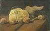</span> </td><td id="mwNg"> <i id="mwNw"><a href="https://ipfs.io/ipfs/QmXoypizjW3WknFiJnKLwHCnL72vedxjQkDDP1mXWo6uco/wiki/Early_works_of_Vincent_van_Gogh.html" title="Early works of Vincent van Gogh" id="mwOA">Still Life with Cabbage and Clogs</a></i></td><td id="mwOQ">1881</td><td id="mwOg"><a href="https://ipfs.io/ipfs/QmXoypizjW3WknFiJnKLwHCnL72vedxjQkDDP1mXWo6uco/wiki/Van_Gogh_Museum.html" title="Van Gogh Museum" id="mwOw">Van Gogh Museum</a>, <a href="https://ipfs.io/ipfs/QmXoypizjW3WknFiJnKLwHCnL72vedxjQkDDP1mXWo6uco/wiki/Amsterdam.html" title="Amsterdam" id="mwPA">Amsterdam</a> (F1)</td></tr>
<tr id="mwPQ">
<td id="mwPg">2</td>
<td id="mwPw"><span id="mwQA">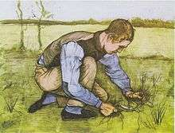</span></td><td id="mwQw"> <i id="mwRA"><a href="https://ipfs.io/ipfs/QmXoypizjW3WknFiJnKLwHCnL72vedxjQkDDP1mXWo6uco/wiki/Crouching_Boy_with_Sickle.html" title="Crouching Boy with Sickle" id="mwRQ">Crouching Boy with Sickle</a></i>, Black chalk and watercolor</td><td id="mwRg">1881</td><td id="mwRw"><a href="https://ipfs.io/ipfs/QmXoypizjW3WknFiJnKLwHCnL72vedxjQkDDP1mXWo6uco/wiki/Kr%C3%B6ller-M%C3%BCller_Museum.html" title="Kröller-Müller Museum" id="mwSA">Kröller-Müller Museum</a>, Otterlo, Netherlands (F851)</td></tr>
<tr id="mwSQ">
<td id="mwSg">3</td>
<td id="mwSw"><span id="mwTA">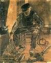</span></td><td id="mwTw"><i id="mwUA">Old Man at the Fireside</i>, Black chalk, reddish brown and grey wash, orange red chalk, opaque watercolor on laid paper </td><td id="mwUQ"> 1881 </td><td id="mwUg"><a href="https://ipfs.io/ipfs/QmXoypizjW3WknFiJnKLwHCnL72vedxjQkDDP1mXWo6uco/wiki/Kr%C3%B6ller-M%C3%BCller_Museum.html" title="Kröller-Müller Museum" id="mwUw">Kröller-Müller Museum</a>, Otterlo, Netherlands (F868)</td></tr>
<tr id="mwVA">
<td id="mwVQ">4</td>
<td id="mwVg"><span id="mwVw">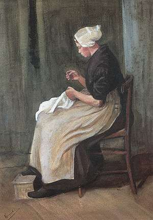</span></td><td id="mwWg"> <i id="mwWw"><a href="https://ipfs.io/ipfs/QmXoypizjW3WknFiJnKLwHCnL72vedxjQkDDP1mXWo6uco/wiki/Early_works_of_Vincent_van_Gogh.html" title="Early works of Vincent van Gogh" id="mwXA">Woman Sewing</a>,</i> Watercolor</td><td id="mwXQ">1881-82</td><td id="mwXg">P. and N. de Boer Foundation, <a href="https://ipfs.io/ipfs/QmXoypizjW3WknFiJnKLwHCnL72vedxjQkDDP1mXWo6uco/wiki/Amsterdam.html" title="Amsterdam" id="mwXw">Amsterdam</a> (F869)</td></tr>
<tr id="mwYA">
<td id="mwYQ">5</td>
<td id="mwYg"><span id="mwYw">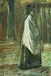</span> </td><td id="mwZg"><i id="mwZw">Woman with White Shawl</i> </td><td id="mwaA">1882</td><td id="mwaQ">Teheran, Collection A. Farmanformaian (F949) </td></tr>
<tr id="mwag">
<td id="mwaw">6</td>
<td id="mwbA"><span id="mwbQ">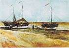</span> </td><td id="mwcA"> <i id="mwcQ"><a href="https://ipfs.io/ipfs/QmXoypizjW3WknFiJnKLwHCnL72vedxjQkDDP1mXWo6uco/wiki/Early_works_of_Vincent_van_Gogh.html" title="Early works of Vincent van Gogh" id="mwcg">Beach at Scheveningen in Calm Weather</a></i>, oil on paper on wood</td><td id="mwcw">1882</td><td id="mwdA">Private collection (F2)</td></tr>
<tr id="mwdQ">
<td id="mwdg">7</td>
<td id="mwdw"><span id="mweA"></span> </td><td id="mwew"> <i id="mwfA"><a href="https://ipfs.io/ipfs/QmXoypizjW3WknFiJnKLwHCnL72vedxjQkDDP1mXWo6uco/wiki/Early_works_of_Vincent_van_Gogh.html" title="Early works of Vincent van Gogh" id="mwfQ">Dunes</a></i></td><td id="mwfg">1882</td><td id="mwfw">Private collection (F2a)</td></tr>
<tr id="mwgA">
<td id="mwgQ">8</td>
<td id="mwgg"><span id="mwgw">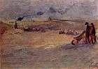</span> </td><td id="mwhg"> <i id="mwhw"><a href="https://ipfs.io/ipfs/QmXoypizjW3WknFiJnKLwHCnL72vedxjQkDDP1mXWo6uco/wiki/Early_works_of_Vincent_van_Gogh.html" title="Early works of Vincent van Gogh" id="mwiA">Dunes with Figures</a></i></td><td id="mwiQ">1882</td><td id="mwig"> Private Collection (F3)</td></tr>
<tr id="mwiw">
<td id="mwjA">9</td>
<td id="mwjQ"><span id="mwjg"></span></td><td id="mwkQ"> <i id="mwkg"><a href="https://ipfs.io/ipfs/QmXoypizjW3WknFiJnKLwHCnL72vedxjQkDDP1mXWo6uco/wiki/Early_works_of_Vincent_van_Gogh.html" title="Early works of Vincent van Gogh" id="mwkw">Beach at Scheveningen in Stormy Weather</a></i></td><td id="mwlA">1882</td><td id="mwlQ"><a href="https://ipfs.io/ipfs/QmXoypizjW3WknFiJnKLwHCnL72vedxjQkDDP1mXWo6uco/wiki/Van_Gogh_Museum.html" title="Van Gogh Museum" id="mwlg">Van Gogh Museum</a>, <a href="https://ipfs.io/ipfs/QmXoypizjW3WknFiJnKLwHCnL72vedxjQkDDP1mXWo6uco/wiki/Amsterdam.html" title="Amsterdam" id="mwlw">Amsterdam</a> (F4)</td></tr>
<tr id="mwmA">
<td id="mwmQ">10</td>
<td id="mwmg"><span id="mwmw">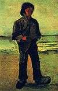</span> </td><td id="mwng"> <i id="mwnw"><a href="https://ipfs.io/ipfs/QmXoypizjW3WknFiJnKLwHCnL72vedxjQkDDP1mXWo6uco/wiki/Early_works_of_Vincent_van_Gogh.html" title="Early works of Vincent van Gogh" id="mwoA">Fisherman on the Beach</a></i></td><td id="mwoQ">1882</td><td id="mwog"><a href="https://ipfs.io/ipfs/QmXoypizjW3WknFiJnKLwHCnL72vedxjQkDDP1mXWo6uco/wiki/Kr%C3%B6ller-M%C3%BCller_Museum.html" title="Kröller-Müller Museum" id="mwow">Kröller-Müller Museum</a>, <a href="https://ipfs.io/ipfs/QmXoypizjW3WknFiJnKLwHCnL72vedxjQkDDP1mXWo6uco/wiki/Otterlo.html" title="Otterlo" id="mwpA">Otterlo</a> (F5)</td></tr>
<tr id="mwpQ">
<td id="mwpg">11</td>
<td id="mwpw"><span id="mwqA"></span> </td><td id="mwqw"> <i id="mwrA"><a href="https://ipfs.io/ipfs/QmXoypizjW3WknFiJnKLwHCnL72vedxjQkDDP1mXWo6uco/wiki/Early_works_of_Vincent_van_Gogh.html" title="Early works of Vincent van Gogh" id="mwrQ">Fisherman's Wife on the Beach</a></i></td><td id="mwrg">1882</td><td id="mwrw"><a href="https://ipfs.io/ipfs/QmXoypizjW3WknFiJnKLwHCnL72vedxjQkDDP1mXWo6uco/wiki/Kr%C3%B6ller-M%C3%BCller_Museum.html" title="Kröller-Müller Museum" id="mwsA">Kröller-Müller Museum</a>, <a href="https://ipfs.io/ipfs/QmXoypizjW3WknFiJnKLwHCnL72vedxjQkDDP1mXWo6uco/wiki/Otterlo.html" title="Otterlo" id="mwsQ">Otterlo</a> (F6)</td></tr>
<tr id="mwsg">
<td id="mwsw">12</td>
<td id="mwtA"><span id="mwtQ">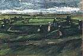</span> </td><td id="mwuA"> <i id="mwuQ"><a href="https://ipfs.io/ipfs/QmXoypizjW3WknFiJnKLwHCnL72vedxjQkDDP1mXWo6uco/wiki/Early_works_of_Vincent_van_Gogh.html" title="Early works of Vincent van Gogh" id="mwug">Women Mending Nets in the Dunes</a></i></td><td id="mwuw">1882</td><td id="mwvA">Collection: François Odermatt, <a href="https://ipfs.io/ipfs/QmXoypizjW3WknFiJnKLwHCnL72vedxjQkDDP1mXWo6uco/wiki/Montreal.html" title="Montreal" id="mwvQ">Montreal</a> (F7)</td></tr>
<tr id="mwvg">
<td id="mwvw">13</td>
<td id="mwwA"><span id="mwwQ"></span></td><td id="mwxA"><i id="mwxQ">Annotated by the artist in ink at lower left: "<a href="https://ipfs.io/ipfs/QmXoypizjW3WknFiJnKLwHCnL72vedxjQkDDP1mXWo6uco/wiki/At_Eternity&#39;s_Gate.html" title="At Eternity&#39;s Gate" id="mwxg">At Eternity's gate</a>"</i> lithograph,</td><td id="mwxw">1882</td><td id="mwyA"> <a href="https://ipfs.io/ipfs/QmXoypizjW3WknFiJnKLwHCnL72vedxjQkDDP1mXWo6uco/wiki/Tehran_Museum_of_Contemporary_Art.html" title="Tehran Museum of Contemporary Art" id="mwyQ">Tehran Museum of Contemporary Art</a> (F1662)</td></tr>
<tr id="mwyg">
<td id="mwyw">14</td>
<td id="mwzA"><span id="mwzQ"></span></td><td id="mw0A"> <i id="mw0Q"><a href="https://ipfs.io/ipfs/QmXoypizjW3WknFiJnKLwHCnL72vedxjQkDDP1mXWo6uco/wiki/Girl_in_White_in_the_Woods.html" title="Girl in White in the Woods" id="mw0g">Girl in White in the Woods</a></i></td><td id="mw0w">1882</td><td id="mw1A"><a href="https://ipfs.io/ipfs/QmXoypizjW3WknFiJnKLwHCnL72vedxjQkDDP1mXWo6uco/wiki/Kr%C3%B6ller-M%C3%BCller_Museum.html" title="Kröller-Müller Museum" id="mw1Q">Kröller-Müller Museum</a>, Otterlo, Netherlands (F8)</td></tr>
<tr id="mw1g">
<td id="mw1w">15</td>
<td id="mw2A"><span id="mw2Q">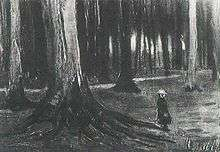</span> </td><td id="mw3A"> <i id="mw3Q">Girl in the Woods</i></td><td id="mw3g">1882</td><td id="mw3w">Private collection (F8a)</td></tr>
<tr id="mw4A">
<td id="mw4Q">16</td>
<td id="mw4g"><span id="mw4w">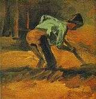</span></td><td id="mw5g"> <i id="mw5w"><a href="https://ipfs.io/ipfs/QmXoypizjW3WknFiJnKLwHCnL72vedxjQkDDP1mXWo6uco/wiki/Early_works_of_Vincent_van_Gogh.html" title="Early works of Vincent van Gogh" id="mw6A">Man Stooping with Stick or Spade</a></i></td><td id="mw6Q">1882</td><td id="mw6g">Kuboso Memorial Museum of Arts, <a href="https://ipfs.io/ipfs/QmXoypizjW3WknFiJnKLwHCnL72vedxjQkDDP1mXWo6uco/wiki/Izumi%2C_Osaka.html" title="Izumi, Osaka" id="mw6w">Izumi</a>, <a href="https://ipfs.io/ipfs/QmXoypizjW3WknFiJnKLwHCnL72vedxjQkDDP1mXWo6uco/wiki/Japan.html" title="Japan" id="mw7A">Japan</a> (F12)</td></tr>
<tr id="mw7Q">
<td id="mw7g">17</td>
<td id="mw7w"><span id="mw8A">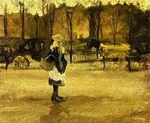</span></td><td id="mw8w"> <i id="mw9A"><a href="https://ipfs.io/ipfs/QmXoypizjW3WknFiJnKLwHCnL72vedxjQkDDP1mXWo6uco/wiki/A_Girl_in_the_Street%2C_Two_Coaches_in_the_Background.html" title="A Girl in the Street, Two Coaches in the Background" id="mw9Q">A Girl in the Street, Two Coaches in the Background</a></i></td><td id="mw9g">1882</td><td id="mw9w">Private collection (F13)</td></tr>
<tr id="mw-A">
<td id="mw-Q">18</td>
<td id="mw-g"><span id="mw-w">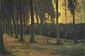</span></td><td id="mw_g"> <i id="mw_w"><a href="https://ipfs.io/ipfs/QmXoypizjW3WknFiJnKLwHCnL72vedxjQkDDP1mXWo6uco/wiki/Early_works_of_Vincent_van_Gogh.html" title="Early works of Vincent van Gogh" id="mwAQA">Edge of a Wood</a></i></td><td id="mwAQE">1882</td><td id="mwAQI"><a href="https://ipfs.io/ipfs/QmXoypizjW3WknFiJnKLwHCnL72vedxjQkDDP1mXWo6uco/wiki/Kr%C3%B6ller-M%C3%BCller_Museum.html" title="Kröller-Müller Museum" id="mwAQM">Kröller-Müller Museum</a>, Otterlo, Netherlands (F192)</td></tr>
<tr id="mwAQQ">
<td id="mwAQU">19</td>
<td id="mwAQY"><span id="mwAQc">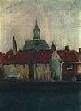</span></td><td id="mwAQo"> <i id="mwAQs"><a href="https://ipfs.io/ipfs/QmXoypizjW3WknFiJnKLwHCnL72vedxjQkDDP1mXWo6uco/wiki/Early_works_of_Vincent_van_Gogh.html" title="Early works of Vincent van Gogh" id="mwAQw">Cluster of Old Houses with the New Church in The Hague</a></i></td><td id="mwAQ0">1882</td><td id="mwAQ4">Private collection (F204)</td></tr>
<tr id="mwAQ8">
<td id="mwARA">20</td>
<td id="mwARE"> <span id="mwARI">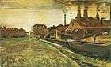</span> </td><td id="mwARU"> <i id="mwARY"><a href="https://ipfs.io/ipfs/QmXoypizjW3WknFiJnKLwHCnL72vedxjQkDDP1mXWo6uco/wiki/Early_works_of_Vincent_van_Gogh.html" title="Early works of Vincent van Gogh" id="mwARc">The Iron Mill in The Hague</a></i>, watercolor</td><td id="mwARg">1882</td><td id="mwARk">Private collection (F926) </td></tr>
<tr id="mwARo">
<td id="mwARs">21</td>
<td id="mwARw"> <span id="mwAR0">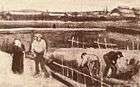</span> </td><td id="mwASA"> <i id="mwASE"><a href="https://ipfs.io/ipfs/QmXoypizjW3WknFiJnKLwHCnL72vedxjQkDDP1mXWo6uco/wiki/Early_works_of_Vincent_van_Gogh.html" title="Early works of Vincent van Gogh" id="mwASI">Meadows near Rijswijk</a></i>, watercolor</td><td id="mwASM">1882</td><td id="mwASQ">Private collection (F927) </td></tr>
<tr id="mwASU">
<td id="mwASY">22</td>
<td id="mwASc"> <span id="mwASg">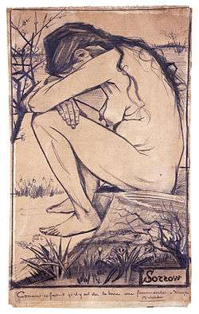</span> </td><td id="mwASs"> <i id="mwASw"><a href="https://ipfs.io/ipfs/QmXoypizjW3WknFiJnKLwHCnL72vedxjQkDDP1mXWo6uco/wiki/Sorrow_(Van_Gogh).html" title="Sorrow (Van Gogh)" id="mwAS0">Sorrow</a></i>, drawing</td><td id="mwAS4">1882</td><td id="mwAS8"> <a href="https://ipfs.io/ipfs/QmXoypizjW3WknFiJnKLwHCnL72vedxjQkDDP1mXWo6uco/wiki/Garman_Ryan_Collection.html" title="Garman Ryan Collection" id="mwATA">Garman Ryan Collection</a> (F929a) </td></tr>
<tr id="mwATE">
<td id="mwATI">23</td>
<td id="mwATM"> <span id="mwATQ"></span>   </td><td id="mwATc"> <i id="mwATg"><a href="https://ipfs.io/ipfs/QmXoypizjW3WknFiJnKLwHCnL72vedxjQkDDP1mXWo6uco/wiki/Sien_(Van_Gogh_series).html" title="Sien (Van Gogh series)" id="mwATk">Back Garden of Sien's Mother's House, the Hague</a></i>, drawing</td><td id="mwATo">1882</td><td id="mwATs"><a href="https://ipfs.io/ipfs/QmXoypizjW3WknFiJnKLwHCnL72vedxjQkDDP1mXWo6uco/wiki/Norton_Simon_Museum.html" title="Norton Simon Museum" id="mwATw">Norton Simon Museum</a>, Pasadena, California (F942) </td></tr>
<tr id="mwAT0">
<td id="mwAT4">24</td>
<td id="mwAT8"><span id="mwAUA">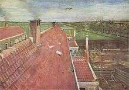</span></td><td id="mwAUM"> <i id="mwAUQ"><a href="https://ipfs.io/ipfs/QmXoypizjW3WknFiJnKLwHCnL72vedxjQkDDP1mXWo6uco/wiki/Early_works_of_Vincent_van_Gogh.html" title="Early works of Vincent van Gogh" id="mwAUU">Rooftops, View from the Atelier</a></i>, watercolor with white</td><td id="mwAUY">1882</td><td id="mwAUc">Private collection (F943)</td></tr>
<tr id="mwAUg">
<td id="mwAUk">25</td>
<td id="mwAUo"> <span id="mwAUs">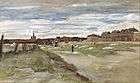</span> </td><td id="mwAU4"> <i id="mwAU8"><a href="https://ipfs.io/ipfs/QmXoypizjW3WknFiJnKLwHCnL72vedxjQkDDP1mXWo6uco/wiki/Early_works_of_Vincent_van_Gogh.html" title="Early works of Vincent van Gogh" id="mwAVA">Bleaching Ground at Scheveningen</a></i> also <i id="mwAVE">Bleaching Ground</i>, watercolor</td><td id="mwAVI">1882</td><td id="mwAVM"><a href="https://ipfs.io/ipfs/QmXoypizjW3WknFiJnKLwHCnL72vedxjQkDDP1mXWo6uco/wiki/J._Paul_Getty_Museum.html" title="J. Paul Getty Museum" id="mwAVQ">J. Paul Getty Museum</a>, Los Angeles (F946r) </td></tr>
<tr id="mwAVU">
<td id="mwAVY">26</td>
<td id="mwAVc"> <span id="mwAVg">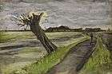</span> </td><td id="mwAVs"> <i id="mwAVw"><a href="https://ipfs.io/ipfs/QmXoypizjW3WknFiJnKLwHCnL72vedxjQkDDP1mXWo6uco/wiki/Early_works_of_Vincent_van_Gogh.html" title="Early works of Vincent van Gogh" id="mwAV0">Pollard Willow</a></i>, watercolor</td><td id="mwAV4">1882</td><td id="mwAV8">Van Gogh Museum in Amsterdam, Netherlands.  (F947) </td></tr>
<tr id="mwAWA">
<td id="mwAWE">27</td>
<td id="mwAWI"> <span id="mwAWM">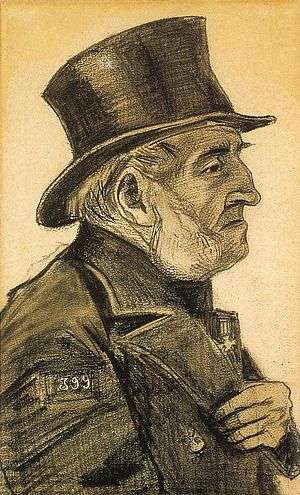</span> </td><td id="mwAWY"> <i id="mwAWc"><a href="https://ipfs.io/ipfs/QmXoypizjW3WknFiJnKLwHCnL72vedxjQkDDP1mXWo6uco/wiki/Early_works_of_Vincent_van_Gogh.html" title="Early works of Vincent van Gogh" id="mwAWg">Portrait of a Man in a Top Hat</a></i> also <i id="mwAWk">Orphan Man with Top Hat</i>, drawing</td><td id="mwAWo">1882</td><td id="mwAWs"><a href="https://ipfs.io/ipfs/QmXoypizjW3WknFiJnKLwHCnL72vedxjQkDDP1mXWo6uco/wiki/Worcester_Art_Museum.html" title="Worcester Art Museum" id="mwAWw">Worcester Art Museum</a>, <a href="https://ipfs.io/ipfs/QmXoypizjW3WknFiJnKLwHCnL72vedxjQkDDP1mXWo6uco/wiki/Worcester%2C_Massachusetts.html" title="Worcester, Massachusetts" id="mwAW0">Worcester, Massachusetts</a> (F954) </td></tr>
<tr id="mwAW4">
<td id="mwAW8">28</td>
<td id="mwAXA"> <span id="mwAXE">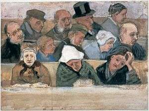</span> </td><td id="mwAXQ"> <i id="mwAXU"><a href="https://ipfs.io/ipfs/QmXoypizjW3WknFiJnKLwHCnL72vedxjQkDDP1mXWo6uco/wiki/Early_works_of_Vincent_van_Gogh.html" title="Early works of Vincent van Gogh" id="mwAXY">In Church</a></i> also <i id="mwAXc">Church Pew with Worshippers</i>, watercolor</td><td id="mwAXg">1882</td><td id="mwAXk"><a href="https://ipfs.io/ipfs/QmXoypizjW3WknFiJnKLwHCnL72vedxjQkDDP1mXWo6uco/wiki/Kr%C3%B6ller-M%C3%BCller_Museum.html" title="Kröller-Müller Museum" id="mwAXo">Kröller-Müller Museum</a>, Otterlo, Netherlands (F967) </td></tr>
<tr id="mwAXs">
<td id="mwAXw">29</td>
<td id="mwAX0"> <span id="mwAX4">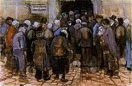</span> </td><td id="mwAYE"> <i id="mwAYI"><a href="https://ipfs.io/ipfs/QmXoypizjW3WknFiJnKLwHCnL72vedxjQkDDP1mXWo6uco/wiki/Early_works_of_Vincent_van_Gogh.html" title="Early works of Vincent van Gogh" id="mwAYM">The State Lottery</a></i> also <i id="mwAYQ">The Poor and Money</i></td><td id="mwAYU">1882</td><td id="mwAYY"><a href="https://ipfs.io/ipfs/QmXoypizjW3WknFiJnKLwHCnL72vedxjQkDDP1mXWo6uco/wiki/Van_Gogh_Museum.html" title="Van Gogh Museum" id="mwAYc">Van Gogh Museum</a>, Amsterdam (F970)</td></tr>
<tr id="mwAYg">
<td id="mwAYk">30</td>
<td id="mwAYo"> <span id="mwAYs"></span> </td><td id="mwAY4"> <i id="mwAY8"><a href="https://ipfs.io/ipfs/QmXoypizjW3WknFiJnKLwHCnL72vedxjQkDDP1mXWo6uco/wiki/Early_works_of_Vincent_van_Gogh.html" title="Early works of Vincent van Gogh" id="mwAZA">Portrait of Jozef Blok</a></i> also <i id="mwAZE">The Bookseller Blok</i>, watercolor</td><td id="mwAZI">1882</td><td id="mwAZM"><a href="https://ipfs.io/ipfs/QmXoypizjW3WknFiJnKLwHCnL72vedxjQkDDP1mXWo6uco/wiki/Van_Gogh_Museum.html" title="Van Gogh Museum" id="mwAZQ">Van Gogh Museum</a>, Amsterdam (F993)</td></tr>
<tr id="mwAZU">
<td id="mwAZY">31</td>
<td id="mwAZc"> <span id="mwAZg">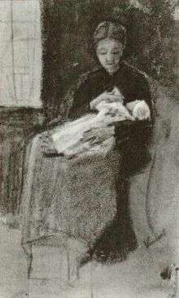</span> </td><td id="mwAZs"> <i id="mwAZw"><a href="https://ipfs.io/ipfs/QmXoypizjW3WknFiJnKLwHCnL72vedxjQkDDP1mXWo6uco/wiki/Sien_(Van_Gogh_series).html" title="Sien (Van Gogh series)" id="mwAZ0">Sien Nursing Baby</a></i>, watercolor and chalk</td><td id="mwAZ4">1882</td><td id="mwAZ8">Private collection (F1068)</td></tr>
<tr id="mwAaA">
<td id="mwAaE">32</td>
<td id="mwAaI"> <span id="mwAaM">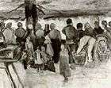</span> </td><td id="mwAaY"> <i id="mwAac"><a href="https://ipfs.io/ipfs/QmXoypizjW3WknFiJnKLwHCnL72vedxjQkDDP1mXWo6uco/wiki/Early_works_of_Vincent_van_Gogh.html" title="Early works of Vincent van Gogh" id="mwAag">The Potato Market</a></i>, watercolor</td><td id="mwAak">1882</td><td id="mwAao">Private collection (F1091) </td></tr>
<tr id="mwAas">
<td id="mwAaw">33</td>
<td id="mwAa0"><span id="mwAa4"></span> </td><td id="mwAbE"> <i id="mwAbI"><a href="https://ipfs.io/ipfs/QmXoypizjW3WknFiJnKLwHCnL72vedxjQkDDP1mXWo6uco/wiki/Early_works_of_Vincent_van_Gogh.html" title="Early works of Vincent van Gogh" id="mwAbM">Two Women in the Woods</a></i></td><td id="mwAbQ">1882</td><td id="mwAbU">Private Collection (F1665)</td></tr>
<tr id="mwAbY">
<td id="mwAbc">34</td>
<td id="mwAbg"><span id="mwAbk">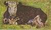</span></td><td id="mwAbw"> <i id="mwAb0"><a href="https://ipfs.io/ipfs/QmXoypizjW3WknFiJnKLwHCnL72vedxjQkDDP1mXWo6uco/wiki/Lying_Cow.html" title="Lying Cow" id="mwAb4">Lying Cow</a></i></td><td id="mwAb8">1883</td><td id="mwAcA">Private collection (F1b)</td></tr>
<tr id="mwAcE">
<td id="mwAcI">35</td>
<td id="mwAcM"><span id="mwAcQ">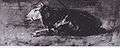</span></td><td id="mwAcc"> <i id="mwAcg"><a href="https://ipfs.io/ipfs/QmXoypizjW3WknFiJnKLwHCnL72vedxjQkDDP1mXWo6uco/wiki/Lying_Cow.html" title="Lying Cow" id="mwAck">Lying Cow</a></i></td><td id="mwAco">1883</td><td id="mwAcs">Location unknown (F1c)</td></tr>
<tr id="mwAcw">
<td id="mwAc0">36</td>
<td id="mwAc4"><span id="mwAc8">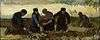</span></td><td id="mwAdI"> <i id="mwAdM"><a href="https://ipfs.io/ipfs/QmXoypizjW3WknFiJnKLwHCnL72vedxjQkDDP1mXWo6uco/wiki/Peasant_Character_Studies_(Van_Gogh_series).html" title="Peasant Character Studies (Van Gogh series)" id="mwAdQ">Potato Digging (Five Figures)</a></i></td><td id="mwAdU">1883</td><td id="mwAdY">Private collection (F9)</td></tr>
<tr id="mwAdc">
<td id="mwAdg">37</td>
<td id="mwAdk"><span id="mwAdo">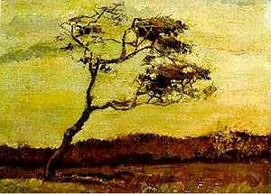</span></td><td id="mwAd0"> <i id="mwAd4"><a href="https://ipfs.io/ipfs/QmXoypizjW3WknFiJnKLwHCnL72vedxjQkDDP1mXWo6uco/wiki/A_Wind-Beaten_Tree.html" title="A Wind-Beaten Tree" id="mwAd8">A Wind-Beaten Tree</a></i></td><td id="mwAeA">1883</td><td id="mwAeE">Location unknown (stolen from private collection) (F10)</td></tr>
<tr id="mwAeI">
<td id="mwAeM">38</td>
<td id="mwAeQ"><span id="mwAeU"></span></td><td id="mwAeg"> <i id="mwAek"><a href="https://ipfs.io/ipfs/QmXoypizjW3WknFiJnKLwHCnL72vedxjQkDDP1mXWo6uco/wiki/Peasant_Character_Studies_(Van_Gogh_series).html" title="Peasant Character Studies (Van Gogh series)" id="mwAeo">The Sower (study)</a></i></td><td id="mwAes">1883</td><td id="mwAew">Location Unknown (F11)</td></tr>
<tr id="mwAe0">
<td id="mwAe4">39</td>
<td id="mwAe8"><span id="mwAfA">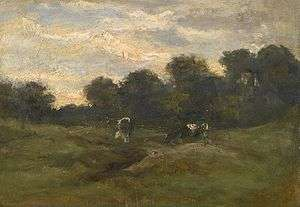</span></td><td id="mwAfM"> <i id="mwAfQ"><a href="https://ipfs.io/ipfs/QmXoypizjW3WknFiJnKLwHCnL72vedxjQkDDP1mXWo6uco/wiki/Cows_in_the_Meadow.html" title="Cows in the Meadow" id="mwAfU">Cows in the Meadow</a></i></td><td id="mwAfY">1883</td><td id="mwAfc">Private collection (F15)</td></tr>
<tr id="mwAfg">
<td id="mwAfk">40</td>
<td id="mwAfo"><span id="mwAfs">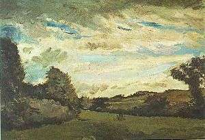</span></td><td id="mwAf4"> <i id="mwAf8"><a href="https://ipfs.io/ipfs/QmXoypizjW3WknFiJnKLwHCnL72vedxjQkDDP1mXWo6uco/wiki/Landscape_with_Dunes.html" title="Landscape with Dunes" id="mwAgA">Landscape with Dunes</a></i></td><td id="mwAgE">1883</td><td id="mwAgI">Private collection (F15a)</td></tr>
<tr id="mwAgM">
<td id="mwAgQ">41</td>
<td id="mwAgU"><span id="mwAgY"></span></td><td id="mwAgk"><i id="mwAgo"><a href="https://ipfs.io/ipfs/QmXoypizjW3WknFiJnKLwHCnL72vedxjQkDDP1mXWo6uco/wiki/Farmhouses_in_Loosduinen_near_The_Hague_at_Twilight.html" title="Farmhouses in Loosduinen near The Hague at Twilight" id="mwAgs">Farmhouses in Loosduinen near The Hague at Twilight</a></i></td><td id="mwAgw">1883</td><td id="mwAg0"><a href="https://ipfs.io/ipfs/QmXoypizjW3WknFiJnKLwHCnL72vedxjQkDDP1mXWo6uco/wiki/Centraal_Museum.html" title="Centraal Museum" id="mwAg4">Centraal Museum</a>, Utrecht, Netherlands (F16)</td></tr>
<tr id="mwAg8">
<td id="mwAhA">42</td>
<td id="mwAhE"><span id="mwAhI"></span></td><td id="mwAhU"> <i id="mwAhY"><a href="https://ipfs.io/ipfs/QmXoypizjW3WknFiJnKLwHCnL72vedxjQkDDP1mXWo6uco/wiki/Cottages_(Van_Gogh_series).html" title="Cottages (Van Gogh series)" id="mwAhc">Cottages</a></i></td><td id="mwAhg">1883</td><td id="mwAhk"><a href="https://ipfs.io/ipfs/QmXoypizjW3WknFiJnKLwHCnL72vedxjQkDDP1mXWo6uco/wiki/Van_Gogh_Museum.html" title="Van Gogh Museum" id="mwAho">Van Gogh Museum</a>, <a href="https://ipfs.io/ipfs/QmXoypizjW3WknFiJnKLwHCnL72vedxjQkDDP1mXWo6uco/wiki/Amsterdam.html" title="Amsterdam" id="mwAhs">Amsterdam</a> (F17)</td></tr>
<tr id="mwAhw">
<td id="mwAh0">43</td>
<td id="mwAh4"><span id="mwAh8">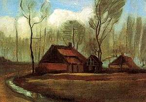</span></td><td id="mwAiI"> <i id="mwAiM"><a href="https://ipfs.io/ipfs/QmXoypizjW3WknFiJnKLwHCnL72vedxjQkDDP1mXWo6uco/wiki/Farmhouse_Among_Trees.html" title="Farmhouse Among Trees" id="mwAiQ">Farmhouse Among Trees</a></i></td><td id="mwAiU">1883</td><td id="mwAiY"><a href="https://ipfs.io/ipfs/QmXoypizjW3WknFiJnKLwHCnL72vedxjQkDDP1mXWo6uco/wiki/John_Paul_II_Collection_Museum.html" title="John Paul II Collection Museum" id="mwAic">Museum Kolekcji Jana Pawla II</a>, <a href="https://ipfs.io/ipfs/QmXoypizjW3WknFiJnKLwHCnL72vedxjQkDDP1mXWo6uco/wiki/Warsaw.html" title="Warsaw" id="mwAig">Warsaw</a>, <a href="https://ipfs.io/ipfs/QmXoypizjW3WknFiJnKLwHCnL72vedxjQkDDP1mXWo6uco/wiki/Poland.html" title="Poland" id="mwAik">Poland</a> (F18)</td></tr>
<tr id="mwAio">
<td id="mwAis">44</td>
<td id="mwAiw"><span id="mwAi0">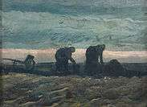</span></td><td id="mwAjA"> <i id="mwAjE"><a href="https://ipfs.io/ipfs/QmXoypizjW3WknFiJnKLwHCnL72vedxjQkDDP1mXWo6uco/wiki/Peasant_Character_Studies_(Van_Gogh_series).html" title="Peasant Character Studies (Van Gogh series)" id="mwAjI">Two Women in the Moor</a></i></td><td id="mwAjM">1883</td><td id="mwAjQ"><a href="https://ipfs.io/ipfs/QmXoypizjW3WknFiJnKLwHCnL72vedxjQkDDP1mXWo6uco/wiki/Van_Gogh_Museum.html" title="Van Gogh Museum" id="mwAjU">Van Gogh Museum</a>, <a href="https://ipfs.io/ipfs/QmXoypizjW3WknFiJnKLwHCnL72vedxjQkDDP1mXWo6uco/wiki/Amsterdam.html" title="Amsterdam" id="mwAjY">Amsterdam</a> (F19)</td></tr>
<tr id="mwAjc">
<td id="mwAjg">45</td>
<td id="mwAjk"><span id="mwAjo">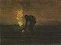</span></td><td id="mwAj0"> <i id="mwAj4"><a href="https://ipfs.io/ipfs/QmXoypizjW3WknFiJnKLwHCnL72vedxjQkDDP1mXWo6uco/wiki/Peasant_Character_Studies_(Van_Gogh_series).html" title="Peasant Character Studies (Van Gogh series)" id="mwAj8">Peasant Burning Weeds</a></i></td><td id="mwAkA">1883</td><td id="mwAkE">Private collection (F20)</td></tr>
<tr id="mwAkI">
<td id="mwAkM">46</td>
<td id="mwAkQ"><span id="mwAkU">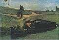</span></td><td id="mwAkg"> <i id="mwAkk"><a href="https://ipfs.io/ipfs/QmXoypizjW3WknFiJnKLwHCnL72vedxjQkDDP1mXWo6uco/wiki/Peasant_Character_Studies_(Van_Gogh_series).html" title="Peasant Character Studies (Van Gogh series)" id="mwAko">Peat Boat with Two Figures</a></i></td><td id="mwAks">1883</td><td id="mwAkw"><a href="https://ipfs.io/ipfs/QmXoypizjW3WknFiJnKLwHCnL72vedxjQkDDP1mXWo6uco/wiki/Drents_Museum.html" title="Drents Museum" id="mwAk0">Drents Museum</a>, Assen, Netherlands (F21)</td></tr>
<tr id="mwAk4">
<td id="mwAk8">47</td>
<td id="mwAlA"><span id="mwAlE">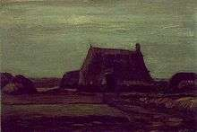</span></td><td id="mwAlQ"> <i id="mwAlU"><a href="https://ipfs.io/ipfs/QmXoypizjW3WknFiJnKLwHCnL72vedxjQkDDP1mXWo6uco/wiki/Farm_with_Stacks_of_Peat.html" title="Farm with Stacks of Peat" id="mwAlY">Farm with Stacks of Peat</a></i></td><td id="mwAlc">1883</td><td id="mwAlg"><a href="https://ipfs.io/ipfs/QmXoypizjW3WknFiJnKLwHCnL72vedxjQkDDP1mXWo6uco/wiki/Van_Gogh_Museum.html" title="Van Gogh Museum" id="mwAlk">Van Gogh Museum</a>, Amsterdam (F22)</td></tr>
<tr id="mwAlo">
<td id="mwAls">48</td>
<td id="mwAlw"><span id="mwAl0">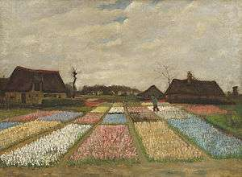</span></td><td id="mwAmA"> <i id="mwAmE"><a href="https://ipfs.io/ipfs/QmXoypizjW3WknFiJnKLwHCnL72vedxjQkDDP1mXWo6uco/wiki/Bulb_Fields.html" title="Bulb Fields" id="mwAmI">Bulb Fields</a></i> also <i id="mwAmM">Flower Beds in Holland</i></td><td id="mwAmQ">1883</td><td id="mwAmU"> <a href="https://ipfs.io/ipfs/QmXoypizjW3WknFiJnKLwHCnL72vedxjQkDDP1mXWo6uco/wiki/National_Gallery_of_Art.html" title="National Gallery of Art" id="mwAmY">National Gallery of Art</a>, Washington D.C. (F186)</td></tr>
<tr id="mwAmc">
<td id="mwAmg">49</td>
<td id="mwAmk"><span id="mwAmo">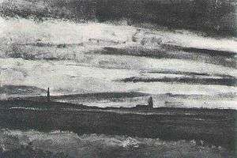</span></td><td id="mwAm0"> <i id="mwAm4"><a href="https://ipfs.io/ipfs/QmXoypizjW3WknFiJnKLwHCnL72vedxjQkDDP1mXWo6uco/wiki/Landscape_with_a_Church_at_Twilight.html" title="Landscape with a Church at Twilight" id="mwAm8">Landscape with a Church at Twilight</a></i></td><td id="mwAnA">1883</td><td id="mwAnE">Private collection (F188)</td></tr>
<tr id="mwAnI">
<td id="mwAnM">50</td>
<td id="mwAnQ"><span id="mwAnU">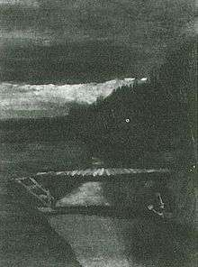</span></td><td id="mwAng"> <i id="mwAnk"><a href="https://ipfs.io/ipfs/QmXoypizjW3WknFiJnKLwHCnL72vedxjQkDDP1mXWo6uco/wiki/Footbridge_across_a_Ditch.html" title="Footbridge across a Ditch" id="mwAno">Footbridge across a Ditch</a></i></td><td id="mwAns">1883</td><td id="mwAnw">Private collection (F189)</td></tr>
<tr id="mwAn0">
<td id="mwAn4">51</td>
<td id="mwAn8"> <span id="mwAoA">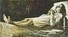</span> </td><td id="mwAoM"> <i id="mwAoQ"><a href="https://ipfs.io/ipfs/QmXoypizjW3WknFiJnKLwHCnL72vedxjQkDDP1mXWo6uco/wiki/Woman_on_Her_Deathbed.html" title="Woman on Her Deathbed" id="mwAoU">Woman on Her Deathbed</a></i>, watercolor</td><td id="mwAoY">1883</td><td id="mwAoc"><a href="https://ipfs.io/ipfs/QmXoypizjW3WknFiJnKLwHCnL72vedxjQkDDP1mXWo6uco/wiki/Kr%C3%B6ller-M%C3%BCller_Museum.html" title="Kröller-Müller Museum" id="mwAog">Kröller-Müller Museum</a>, Otterlo, Netherlands (F841)</td></tr>
<tr id="mwAok">
<td id="mwAoo">52</td>
<td id="mwAos"> <span id="mwAow">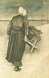</span> </td><td id="mwAo8"> <i id="mwApA"><a href="https://ipfs.io/ipfs/QmXoypizjW3WknFiJnKLwHCnL72vedxjQkDDP1mXWo6uco/wiki/Peasant_Character_Studies_(Van_Gogh_series).html" title="Peasant Character Studies (Van Gogh series)" id="mwApE">Woman with Wheelbarrow</a></i>, watercolor</td><td id="mwApI">1883</td><td id="mwApM"><a href="https://ipfs.io/ipfs/QmXoypizjW3WknFiJnKLwHCnL72vedxjQkDDP1mXWo6uco/wiki/Kr%C3%B6ller-M%C3%BCller_Museum.html" title="Kröller-Müller Museum" id="mwApQ">Kröller-Müller Museum</a>, Otterlo, Netherlands (F1021)</td></tr>
<tr id="mwApU">
<td id="mwApY">53</td>
<td id="mwApc"> <span id="mwApg">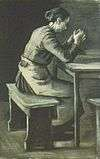</span> </td><td id="mwAps"> <i id="mwApw"><a href="https://ipfs.io/ipfs/QmXoypizjW3WknFiJnKLwHCnL72vedxjQkDDP1mXWo6uco/wiki/Peasant_Character_Studies_(Van_Gogh_series).html" title="Peasant Character Studies (Van Gogh series)" id="mwAp0">Saying Grace (van Gogh)</a></i> also <i id="mwAp4">Woman Praying</i>, drawing</td><td id="mwAp8">1883</td><td id="mwAqA"><a href="https://ipfs.io/ipfs/QmXoypizjW3WknFiJnKLwHCnL72vedxjQkDDP1mXWo6uco/wiki/Kr%C3%B6ller-M%C3%BCller_Museum.html" title="Kröller-Müller Museum" id="mwAqE">Kröller-Müller Museum</a>, Otterlo, Netherlands (F1053)</td></tr>
<tr id="mwAqI">
<td id="mwAqM">54</td>
<td id="mwAqQ"> <span id="mwAqU">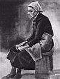</span> </td><td id="mwAqg"> <i id="mwAqk"><a href="https://ipfs.io/ipfs/QmXoypizjW3WknFiJnKLwHCnL72vedxjQkDDP1mXWo6uco/wiki/Peasant_Character_Studies_(Van_Gogh_series).html" title="Peasant Character Studies (Van Gogh series)" id="mwAqo">Woman Seated</a></i> also <i id="mwAqs">Woman with White Cloth around her Head, Sitting on a Bench</i>, drawing</td><td id="mwAqw">1883</td><td id="mwAq0"><a href="https://ipfs.io/ipfs/QmXoypizjW3WknFiJnKLwHCnL72vedxjQkDDP1mXWo6uco/wiki/Kr%C3%B6ller-M%C3%BCller_Museum.html" title="Kröller-Müller Museum" id="mwAq4">Kröller-Müller Museum</a>, Otterlo, Netherlands (F1056)</td></tr>
<tr id="mwAq8">
<td id="mwArA">55</td>
<td id="mwArE"> <span id="mwArI">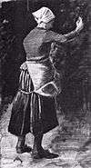</span> </td><td id="mwArU"> <i id="mwArY"><a href="https://ipfs.io/ipfs/QmXoypizjW3WknFiJnKLwHCnL72vedxjQkDDP1mXWo6uco/wiki/Peasant_Character_Studies_(Van_Gogh_series).html" title="Peasant Character Studies (Van Gogh series)" id="mwArc">Woman Feeding Chickens</a></i>, drawing</td><td id="mwArg">1883</td><td id="mwArk"><a href="https://ipfs.io/ipfs/QmXoypizjW3WknFiJnKLwHCnL72vedxjQkDDP1mXWo6uco/wiki/Kr%C3%B6ller-M%C3%BCller_Museum.html" title="Kröller-Müller Museum" id="mwAro">Kröller-Müller Museum</a>, Otterlo, Netherlands (F1080)</td></tr>
<tr id="mwArs">
<td id="mwArw">56</td>
<td id="mwAr0"> <span id="mwAr4">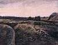</span> </td><td id="mwAsE"> <i id="mwAsI"><a href="https://ipfs.io/ipfs/QmXoypizjW3WknFiJnKLwHCnL72vedxjQkDDP1mXWo6uco/wiki/Peatery_in_Drenthe.html" title="Peatery in Drenthe" id="mwAsM">Peatery in Drenthe</a></i> also <i id="mwAsQ">Peat Bog</i>, watercolor</td><td id="mwAsU">1883</td><td id="mwAsY">Private collection (F1094)</td></tr>
<tr id="mwAsc">
<td id="mwAsg">57</td>
<td id="mwAsk"> <span id="mwAso">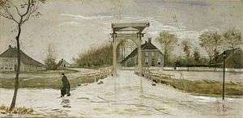</span> </td><td id="mwAs0"> <i id="mwAs4"><a href="https://ipfs.io/ipfs/QmXoypizjW3WknFiJnKLwHCnL72vedxjQkDDP1mXWo6uco/wiki/Drawbridge_in_Nieuw_New_Amsterdam.html" title="Drawbridge in Nieuw New Amsterdam" id="mwAs8">Drawbridge in Nieuw New Amsterdam</a></i>, watercolor</td><td id="mwAtA">1883</td><td id="mwAtE"><a href="https://ipfs.io/ipfs/QmXoypizjW3WknFiJnKLwHCnL72vedxjQkDDP1mXWo6uco/wiki/Groninger_Museum.html" title="Groninger Museum" id="mwAtI">Groninger Museum</a>, Groningen, Netherlands (F1098)</td></tr>
<tr id="mwAtM">
<td id="mwAtQ">58</td>
<td id="mwAtU"> <span id="mwAtY">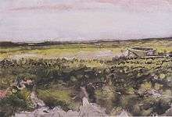</span> </td><td id="mwAtk"> <i id="mwAto"><a href="https://ipfs.io/ipfs/QmXoypizjW3WknFiJnKLwHCnL72vedxjQkDDP1mXWo6uco/wiki/Peasant_Character_Studies_(Van_Gogh_series).html" title="Peasant Character Studies (Van Gogh series)" id="mwAts">Landscape with Wheelbarrow</a></i> also <i id="mwAtw">Heath with a Wheelbarrow</i>, watercolor</td><td id="mwAt0">1883</td><td id="mwAt4"><a href="https://ipfs.io/ipfs/QmXoypizjW3WknFiJnKLwHCnL72vedxjQkDDP1mXWo6uco/wiki/Cleveland_Museum_of_Art.html" title="Cleveland Museum of Art" id="mwAt8">Cleveland Museum of Art</a>, Cleveland, Ohio (F1100)</td></tr>
<tr id="mwAuA">
<td id="mwAuE">59</td>
<td id="mwAuI"> <span id="mwAuM">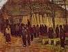</span> </td><td id="mwAuY"> <i id="mwAuc"><a href="https://ipfs.io/ipfs/QmXoypizjW3WknFiJnKLwHCnL72vedxjQkDDP1mXWo6uco/wiki/Peasant_Character_Studies_(Van_Gogh_series).html" title="Peasant Character Studies (Van Gogh series)" id="mwAug">A Wood Auction</a></i> also <i id="mwAuk">Lumber Sale</i>, watercolor</td><td id="mwAuo">1883</td><td id="mwAus"><a href="https://ipfs.io/ipfs/QmXoypizjW3WknFiJnKLwHCnL72vedxjQkDDP1mXWo6uco/wiki/Kr%C3%B6ller-M%C3%BCller_Museum.html" title="Kröller-Müller Museum" id="mwAuw">Kröller-Müller Museum</a>, Otterlo, Netherlands (F1113)</td></tr>
<tr id="mwAu0">
<td id="mwAu4">60</td>
<td id="mwAu8"><span id="mwAvA">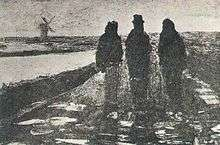</span></td><td id="mwAvM"> <i id="mwAvQ"><a href="https://ipfs.io/ipfs/QmXoypizjW3WknFiJnKLwHCnL72vedxjQkDDP1mXWo6uco/wiki/Three_Figures_near_a_Canal_with_Windmill.html" title="Three Figures near a Canal with Windmill" id="mwAvU">Three Figures near a Canal with Windmill</a></i>, drawing</td><td id="mwAvY">1883</td><td id="mwAvc">Location unknown (F1666)</td></tr>
<tr id="mwAvg">
<td id="mwAvk">61</td>
<td id="mwAvo"> <span id="mwAvs">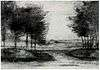</span></td><td id="mwAv4"> <i id="mwAv8"><a href="https://ipfs.io/ipfs/QmXoypizjW3WknFiJnKLwHCnL72vedxjQkDDP1mXWo6uco/wiki/Landscape_with_Trees.html" title="Landscape with Trees" id="mwAwA">Landscape with Trees</a></i>, Black chalk, ink and watercolour</td><td id="mwAwE">1883</td><td id="mwAwI">Private collection (No F number, JH Add. 21)</td></tr>
<tr id="mwAwM">
<td id="mwAwQ">62</td>
<td id="mwAwU"><span id="mwAwY"></span></td><td id="mwAwk"> <i id="mwAwo"><a href="https://ipfs.io/ipfs/QmXoypizjW3WknFiJnKLwHCnL72vedxjQkDDP1mXWo6uco/wiki/Marshy_Landscape.html" title="Marshy Landscape" id="mwAws">Marshy Landscape</a></i></td><td id="mwAww">1883</td><td id="mwAw0">Private collection (No F number, JH 394)</td></tr>
<tr id="mwAw4">
<td id="mwAw8">63</td>
<td id="mwAxA"> <span id="mwAxE"></span> </td><td id="mwAxQ"> <i id="mwAxU"><a href="https://ipfs.io/ipfs/QmXoypizjW3WknFiJnKLwHCnL72vedxjQkDDP1mXWo6uco/wiki/Peasant_Character_Studies_(Van_Gogh_series).html" title="Peasant Character Studies (Van Gogh series)" id="mwAxY">Weaver Near an Open Window</a></i></td><td id="mwAxc">1884</td><td id="mwAxg"><a href="https://ipfs.io/ipfs/QmXoypizjW3WknFiJnKLwHCnL72vedxjQkDDP1mXWo6uco/wiki/Neue_Pinakothek.html" title="Neue Pinakothek" id="mwAxk">Neue Pinakothek</a>, Munich (F24)</td></tr>
<tr id="mwAxo">
<td id="mwAxs">64</td>
<td id="mwAxw"><span id="mwAx0"></span></td><td id="mwAyA"> <i id="mwAyE"><a href="https://ipfs.io/ipfs/QmXoypizjW3WknFiJnKLwHCnL72vedxjQkDDP1mXWo6uco/wiki/Van_Gogh&#39;s_family_in_his_art.html" title="Van Gogh&#39;s family in his art" id="mwAyI">Congregation Leaving the Reformed Church in Nuenen</a></i></td><td id="mwAyM">1884</td><td id="mwAyQ"><a href="https://ipfs.io/ipfs/QmXoypizjW3WknFiJnKLwHCnL72vedxjQkDDP1mXWo6uco/wiki/Van_Gogh_Museum.html" title="Van Gogh Museum" id="mwAyU">Van Gogh Museum</a>, Amsterdam (F25)</td></tr>
<tr id="mwAyY">
<td id="mwAyc">65</td>
<td id="mwAyg"> <span id="mwAyk"></span> </td><td id="mwAyw"> <i id="mwAy0"><a href="https://ipfs.io/ipfs/QmXoypizjW3WknFiJnKLwHCnL72vedxjQkDDP1mXWo6uco/wiki/Peasant_Character_Studies_(Van_Gogh_series).html" title="Peasant Character Studies (Van Gogh series)" id="mwAy4">Weaver Facing Right (Half-Figure)</a></i></td><td id="mwAy8">1884</td><td id="mwAzA">Private collection (F26)</td></tr>
<tr id="mwAzE">
<td id="mwAzI">66</td>
<td id="mwAzM"><span id="mwAzQ"></span></td><td id="mwAzc"> <i id="mwAzg"><a href="https://ipfs.io/ipfs/QmXoypizjW3WknFiJnKLwHCnL72vedxjQkDDP1mXWo6uco/wiki/Peasant_Character_Studies_(Van_Gogh_series).html" title="Peasant Character Studies (Van Gogh series)" id="mwAzk">Weaver, Seen from the Front</a></i></td><td id="mwAzo">1884</td><td id="mwAzs"><a href="https://ipfs.io/ipfs/QmXoypizjW3WknFiJnKLwHCnL72vedxjQkDDP1mXWo6uco/wiki/Museum_Boijmans_Van_Beuningen.html" title="Museum Boijmans Van Beuningen" id="mwAzw">Museum Boijmans Van Beuningen</a>, <a href="https://ipfs.io/ipfs/QmXoypizjW3WknFiJnKLwHCnL72vedxjQkDDP1mXWo6uco/wiki/Rotterdam.html" title="Rotterdam" id="mwAz0">Rotterdam</a> (F27)</td></tr>
<tr id="mwAz4">
<td id="mwAz8">67</td>
<td id="mwA0A"> <span id="mwA0E"></span> </td><td id="mwA0Q"> <i id="mwA0U"><a href="https://ipfs.io/ipfs/QmXoypizjW3WknFiJnKLwHCnL72vedxjQkDDP1mXWo6uco/wiki/Peasant_Character_Studies_(Van_Gogh_series).html" title="Peasant Character Studies (Van Gogh series)" id="mwA0Y">Weaver Facing Left with Spinning Wheel</a></i></td><td id="mwA0c">1884</td><td id="mwA0g"><a href="https://ipfs.io/ipfs/QmXoypizjW3WknFiJnKLwHCnL72vedxjQkDDP1mXWo6uco/wiki/Museum_of_Fine_Arts%2C_Boston.html" title="Museum of Fine Arts, Boston" id="mwA0k">Museum of Fine Arts, Boston</a> (F29)</td></tr>
<tr id="mwA0o">
<td id="mwA0s">68</td>
<td id="mwA0w"> <span id="mwA00"></span> </td><td id="mwA1A"> <i id="mwA1E"><a href="https://ipfs.io/ipfs/QmXoypizjW3WknFiJnKLwHCnL72vedxjQkDDP1mXWo6uco/wiki/Peasant_Character_Studies_(Van_Gogh_series).html" title="Peasant Character Studies (Van Gogh series)" id="mwA1I">Loom With Weaver</a></i></td><td id="mwA1M">1884</td><td id="mwA1Q"><a href="https://ipfs.io/ipfs/QmXoypizjW3WknFiJnKLwHCnL72vedxjQkDDP1mXWo6uco/wiki/Kr%C3%B6ller-M%C3%BCller_Museum.html" title="Kröller-Müller Museum" id="mwA1U">Kröller-Müller Museum</a>, Otterlo, Netherlands (F30)</td></tr>
<tr id="mwA1Y">
<td id="mwA1c">69</td>
<td id="mwA1g"> <span id="mwA1k"></span> </td><td id="mwA1w"> <i id="mwA10"><a href="https://ipfs.io/ipfs/QmXoypizjW3WknFiJnKLwHCnL72vedxjQkDDP1mXWo6uco/wiki/Landscape_with_Pollard_Willows.html" title="Landscape with Pollard Willows" id="mwA14">Landscape with Pollard Willows</a></i> (b/w copy of painting)</td><td id="mwA18">1884</td><td id="mwA2A">Private collection (F31) </td></tr>
<tr id="mwA2E">
<td id="mwA2I">70</td>
<td id="mwA2M"> <span id="mwA2Q"></span> </td><td id="mwA2c"> <i id="mwA2g"><a href="https://ipfs.io/ipfs/QmXoypizjW3WknFiJnKLwHCnL72vedxjQkDDP1mXWo6uco/wiki/Peasant_Character_Studies_(Van_Gogh_series).html" title="Peasant Character Studies (Van Gogh series)" id="mwA2k">Weaver Standing in Front of a Loom</a></i></td><td id="mwA2o">1884</td><td id="mwA2s">Private collection (F32)</td></tr>
<tr id="mwA2w">
<td id="mwA20">71</td>
<td id="mwA24"> <span id="mwA28"></span> </td><td id="mwA3I"> <i id="mwA3M"><a href="https://ipfs.io/ipfs/QmXoypizjW3WknFiJnKLwHCnL72vedxjQkDDP1mXWo6uco/wiki/Peasant_Character_Studies_(Van_Gogh_series).html" title="Peasant Character Studies (Van Gogh series)" id="mwA3Q">Weaver Facing Right</a></i> also <i id="mwA3U">Weaver Standing in Front of the Loom</i></td><td id="mwA3Y">1884</td><td id="mwA3c">Private collection (F33)</td></tr>
<tr id="mwA3g">
<td id="mwA3k">72</td>
<td id="mwA3o"> <span id="mwA3s"></span> </td><td id="mwA34"> <i id="mwA38"><a href="https://ipfs.io/ipfs/QmXoypizjW3WknFiJnKLwHCnL72vedxjQkDDP1mXWo6uco/wiki/Old_Church_Tower_at_Nuenen.html" title="Old Church Tower at Nuenen" id="mwA4A">The Old Tower at Nuenen with a Ploughman</a></i></td><td id="mwA4E">1884</td><td id="mwA4I"><a href="https://ipfs.io/ipfs/QmXoypizjW3WknFiJnKLwHCnL72vedxjQkDDP1mXWo6uco/wiki/Kr%C3%B6ller-M%C3%BCller_Museum.html" title="Kröller-Müller Museum" id="mwA4M">Kröller-Müller Museum</a>, Otterlo, Netherlands (F34)</td></tr>
<tr id="mwA4Q">
<td id="mwA4U">73</td>
<td id="mwA4Y"> <span id="mwA4c"></span> </td><td id="mwA4o"> <i id="mwA4s"><a href="https://ipfs.io/ipfs/QmXoypizjW3WknFiJnKLwHCnL72vedxjQkDDP1mXWo6uco/wiki/Peasant_Character_Studies_(Van_Gogh_series).html" title="Peasant Character Studies (Van Gogh series)" id="mwA4w">Loom With Weaver</a></i> also <i id="mwA40">Weaver Arranging Threads</i></td><td id="mwA44">1884</td><td id="mwA48"><a href="https://ipfs.io/ipfs/QmXoypizjW3WknFiJnKLwHCnL72vedxjQkDDP1mXWo6uco/wiki/Kr%C3%B6ller-M%C3%BCller_Museum.html" title="Kröller-Müller Museum" id="mwA5A">Kröller-Müller Museum</a>, Otterlo, Netherlands (F35)</td></tr>
<tr id="mwA5E">
<td id="mwA5I">74</td>
<td id="mwA5M"> <span id="mwA5Q"></span> </td><td id="mwA5c"> <i id="mwA5g"><a href="https://ipfs.io/ipfs/QmXoypizjW3WknFiJnKLwHCnL72vedxjQkDDP1mXWo6uco/wiki/Peasant_Character_Studies_(Van_Gogh_series).html" title="Peasant Character Studies (Van Gogh series)" id="mwA5k">Loom With Weaver</a></i> also <i id="mwA5o">Weaver, Interior with Three Small Windows</i></td><td id="mwA5s">1884</td><td id="mwA5w"><a href="https://ipfs.io/ipfs/QmXoypizjW3WknFiJnKLwHCnL72vedxjQkDDP1mXWo6uco/wiki/Kr%C3%B6ller-M%C3%BCller_Museum.html" title="Kröller-Müller Museum" id="mwA50">Kröller-Müller Museum</a>, Otterlo, Netherlands (F37)</td></tr>
<tr id="mwA54">
<td id="mwA58">75</td>
<td id="mwA6A"> <span id="mwA6E"></span> </td><td id="mwA6Q"> <i id="mwA6U"><a href="https://ipfs.io/ipfs/QmXoypizjW3WknFiJnKLwHCnL72vedxjQkDDP1mXWo6uco/wiki/Cart_with_Red_and_White_Ox.html" title="Cart with Red and White Ox" id="mwA6Y">Cart with Red and White Ox</a></i></td><td id="mwA6c">1884</td><td id="mwA6g"><a href="https://ipfs.io/ipfs/QmXoypizjW3WknFiJnKLwHCnL72vedxjQkDDP1mXWo6uco/wiki/Kr%C3%B6ller-M%C3%BCller_Museum.html" title="Kröller-Müller Museum" id="mwA6k">Kröller-Müller Museum</a>, Otterlo, Netherlands (F38)</td></tr>
<tr id="mwA6o">
<td id="mwA6s">76</td>
<td id="mwA6w"> <span id="mwA60"></span> </td><td id="mwA7A"> <i id="mwA7E"><a href="https://ipfs.io/ipfs/QmXoypizjW3WknFiJnKLwHCnL72vedxjQkDDP1mXWo6uco/wiki/Cart_with_Black_Ox.html" title="Cart with Black Ox" id="mwA7I">Cart with Black Ox</a></i></td><td id="mwA7M">1884</td><td id="mwA7Q"><a href="https://ipfs.io/ipfs/QmXoypizjW3WknFiJnKLwHCnL72vedxjQkDDP1mXWo6uco/wiki/Portland_Art_Museum.html" title="Portland Art Museum" id="mwA7U">Portland Art Museum</a>, Portland, Oregon (F39)</td></tr>
<tr id="mwA7Y">
<td id="mwA7c">77</td>
<td id="mwA7g"> <span id="mwA7k"></span></td><td id="mwA7w"> <i id="mwA70"><a href="https://ipfs.io/ipfs/QmXoypizjW3WknFiJnKLwHCnL72vedxjQkDDP1mXWo6uco/wiki/Old_Church_Tower_at_Nuenen.html" title="Old Church Tower at Nuenen" id="mwA74">The Old Tower in the Fields</a></i></td><td id="mwA78">1884</td><td id="mwA8A">Private collection (F40)</td></tr>
<tr id="mwA8E">
<td id="mwA8I">78</td>
<td id="mwA8M"> <span id="mwA8Q"></span> </td><td id="mwA8c"> <i id="mwA8g"><a href="https://ipfs.io/ipfs/QmXoypizjW3WknFiJnKLwHCnL72vedxjQkDDP1mXWo6uco/wiki/Peasant_Character_Studies_(Van_Gogh_series).html" title="Peasant Character Studies (Van Gogh series)" id="mwA8k">Farmers Planting Potatoes</a></i></td><td id="mwA8o">1884</td><td id="mwA8s"><a href="https://ipfs.io/ipfs/QmXoypizjW3WknFiJnKLwHCnL72vedxjQkDDP1mXWo6uco/wiki/Kr%C3%B6ller-M%C3%BCller_Museum.html" title="Kröller-Müller Museum" id="mwA8w">Kröller-Müller Museum</a>, Otterlo, Netherlands (F41)</td></tr>
<tr id="mwA80">
<td id="mwA84">79</td>
<td id="mwA88"> <span id="mwA9A"></span> </td><td id="mwA9M"> <i id="mwA9Q"><a href="https://ipfs.io/ipfs/QmXoypizjW3WknFiJnKLwHCnL72vedxjQkDDP1mXWo6uco/wiki/Peasant_Character_Studies_(Van_Gogh_series).html" title="Peasant Character Studies (Van Gogh series)" id="mwA9U">Shepherd with a Flock of Sheep</a></i> (b/w copy of painting)</td><td id="mwA9Y">1884</td><td id="mwA9c">Soumaya Museum, Tizapán, Mexico (F42) </td></tr>
<tr id="mwA9g">
<td id="mwA9k">80</td>
<td id="mwA9o"> <span id="mwA9s"></span> </td><td id="mwA94"> <i id="mwA98"><a href="https://ipfs.io/ipfs/QmXoypizjW3WknFiJnKLwHCnL72vedxjQkDDP1mXWo6uco/wiki/Peasant_Character_Studies_(Van_Gogh_series).html" title="Peasant Character Studies (Van Gogh series)" id="mwA-A">Wood Gatherers in the Snow</a></i></td><td id="mwA-E">1884</td><td id="mwA-I">Private collection (F43)</td></tr>
<tr id="mwA-M">
<td id="mwA-Q">81</td>
<td id="mwA-U"> <span id="mwA-Y"></span> </td><td id="mwA-k"> <i id="mwA-o"><a href="https://ipfs.io/ipfs/QmXoypizjW3WknFiJnKLwHCnL72vedxjQkDDP1mXWo6uco/wiki/Water_Mill_at_Gennep.html" title="Water Mill at Gennep" id="mwA-s">Water Mill at Gennep</a></i></td><td id="mwA-w">1884</td><td id="mwA-0">Noordbrabants Museum, 's-Hertogenbosch, Netherlands - on loan from the Netherlands Office for Fine Arts (F46)</td></tr>
<tr id="mwA-4">
<td id="mwA-8">82</td>
<td id="mwA_A"> <span id="mwA_E"></span> </td><td id="mwA_Q"> <i id="mwA_U"><a href="https://ipfs.io/ipfs/QmXoypizjW3WknFiJnKLwHCnL72vedxjQkDDP1mXWo6uco/wiki/Water_Mill_at_Gennep.html" title="Water Mill at Gennep" id="mwA_Y">Water Mill at Gennep</a></i></td><td id="mwA_c">1884</td><td id="mwA_g">Private collection (F47)</td></tr>
<tr id="mwA_k">
<td id="mwA_o">83</td>
<td id="mwA_s"> <span id="mwA_w"></span> </td><td id="mwA_8"> <i id="mwBAA"><a href="https://ipfs.io/ipfs/QmXoypizjW3WknFiJnKLwHCnL72vedxjQkDDP1mXWo6uco/wiki/Water_Mill_at_Opwetten.html" title="Water Mill at Opwetten" id="mwBAE">Water Mill at Opwetten</a></i></td><td id="mwBAI">1884</td><td id="mwBAM">Private collection (F48)</td></tr>
<tr id="mwBAQ">
<td id="mwBAU">84</td>
<td id="mwBAY"> <span id="mwBAc"></span> </td><td id="mwBAo"> <i id="mwBAs"><a href="https://ipfs.io/ipfs/QmXoypizjW3WknFiJnKLwHCnL72vedxjQkDDP1mXWo6uco/wiki/Water_Mill_at_Kollen_Near_Nuenen.html" title="Water Mill at Kollen Near Nuenen" id="mwBAw">Water Mill at Kollen Near Nuenen</a></i></td><td id="mwBA0">1884</td><td id="mwBA4">Private collection (F48a)</td></tr>
<tr id="mwBA8">
<td id="mwBBA">85</td>
<td id="mwBBE"> <span id="mwBBI"></span> </td><td id="mwBBU"> <i id="mwBBY"><a href="https://ipfs.io/ipfs/QmXoypizjW3WknFiJnKLwHCnL72vedxjQkDDP1mXWo6uco/wiki/Still_life_paintings_by_Vincent_van_Gogh_(Netherlands).html" title="Still life paintings by Vincent van Gogh (Netherlands)" id="mwBBc">Still Life with Four Stone Bottles, Flask and White Cup</a></i></td><td id="mwBBg">1884</td><td id="mwBBk"><a href="https://ipfs.io/ipfs/QmXoypizjW3WknFiJnKLwHCnL72vedxjQkDDP1mXWo6uco/wiki/Kr%C3%B6ller-M%C3%BCller_Museum.html" title="Kröller-Müller Museum" id="mwBBo">Kröller-Müller Museum</a>, Otterlo (F50)</td></tr>
<tr id="mwBBs">
<td id="mwBBw">86</td>
<td id="mwBB0"> <span id="mwBB4"></span> </td><td id="mwBCE"> <i id="mwBCI"><a href="https://ipfs.io/ipfs/QmXoypizjW3WknFiJnKLwHCnL72vedxjQkDDP1mXWo6uco/wiki/Still_life_paintings_by_Vincent_van_Gogh_(Netherlands).html" title="Still life paintings by Vincent van Gogh (Netherlands)" id="mwBCM">Still Life with Coffee Mill, Pipe Case and Jug</a></i> also <i id="mwBCQ">Still Life with a Bearded-Man Jar</i></td><td id="mwBCU">1884</td><td id="mwBCY"><a href="https://ipfs.io/ipfs/QmXoypizjW3WknFiJnKLwHCnL72vedxjQkDDP1mXWo6uco/wiki/Kr%C3%B6ller-M%C3%BCller_Museum.html" title="Kröller-Müller Museum" id="mwBCc">Kröller-Müller Museum</a>, Otterlo (F52)</td></tr>
<tr id="mwBCg">
<td id="mwBCk">87</td>
<td id="mwBCo"> <span id="mwBCs"></span> </td><td id="mwBC4"> <i id="mwBC8"><a href="https://ipfs.io/ipfs/QmXoypizjW3WknFiJnKLwHCnL72vedxjQkDDP1mXWo6uco/wiki/Still_life_paintings_by_Vincent_van_Gogh_(Netherlands).html" title="Still life paintings by Vincent van Gogh (Netherlands)" id="mwBDA">Still Life with Clogs and Pots</a></i></td><td id="mwBDE">1884</td><td id="mwBDI"><a href="https://ipfs.io/ipfs/QmXoypizjW3WknFiJnKLwHCnL72vedxjQkDDP1mXWo6uco/wiki/Centraal_Museum.html" title="Centraal Museum" id="mwBDM">Centraal Museum</a>, Utrecht, Netherlands (on loan) (F54)</td></tr>
<tr id="mwBDQ">
<td id="mwBDU">88</td>
<td id="mwBDY"> <span id="mwBDc"></span> </td><td id="mwBDo"> <i id="mwBDs"><a href="https://ipfs.io/ipfs/QmXoypizjW3WknFiJnKLwHCnL72vedxjQkDDP1mXWo6uco/wiki/Still_life_paintings_by_Vincent_van_Gogh_(Netherlands).html" title="Still life paintings by Vincent van Gogh (Netherlands)" id="mwBDw">Still Life with Two Sacks and a Bottle</a></i> (b/w copy)</td><td id="mwBD0">1884</td><td id="mwBD4">Private collection (F55)</td></tr>
<tr id="mwBD8">
<td id="mwBEA">89</td>
<td id="mwBEE"> <span id="mwBEI"></span> </td><td id="mwBEU"> <i id="mwBEY"><a href="https://ipfs.io/ipfs/QmXoypizjW3WknFiJnKLwHCnL72vedxjQkDDP1mXWo6uco/wiki/Still_life_paintings_by_Vincent_van_Gogh_(Netherlands).html" title="Still life paintings by Vincent van Gogh (Netherlands)" id="mwBEc">Still Life with Five Bottles</a></i></td><td id="mwBEg">1884</td><td id="mwBEk"><a href="https://ipfs.io/ipfs/QmXoypizjW3WknFiJnKLwHCnL72vedxjQkDDP1mXWo6uco/wiki/%C3%96sterreichische_Galerie_Belvedere.html" title="Österreichische Galerie Belvedere" id="mwBEo">Österreichische Galerie Belvedere</a>, Vienna (F56)</td></tr>
<tr id="mwBEs">
<td id="mwBEw">90</td>
<td id="mwBE0"> <span id="mwBE4"></span> </td><td id="mwBFE"> <i id="mwBFI"><a href="https://ipfs.io/ipfs/QmXoypizjW3WknFiJnKLwHCnL72vedxjQkDDP1mXWo6uco/wiki/Still_life_paintings_by_Vincent_van_Gogh_(Netherlands).html" title="Still life paintings by Vincent van Gogh (Netherlands)" id="mwBFM">Still Life with Pottery and Two Bottles</a></i></td><td id="mwBFQ">1884</td><td id="mwBFU"><a href="https://ipfs.io/ipfs/QmXoypizjW3WknFiJnKLwHCnL72vedxjQkDDP1mXWo6uco/wiki/Norton_Simon_Museum.html" title="Norton Simon Museum" id="mwBFY">Norton Simon Museum</a>, Pasadena, California (F57)</td></tr>
<tr id="mwBFc">
<td id="mwBFg">91</td>
<td id="mwBFk"> <span id="mwBFo"></span> </td><td id="mwBF0"> <i id="mwBF4"><a href="https://ipfs.io/ipfs/QmXoypizjW3WknFiJnKLwHCnL72vedxjQkDDP1mXWo6uco/wiki/Still_life_paintings_by_Vincent_van_Gogh_(Netherlands).html" title="Still life paintings by Vincent van Gogh (Netherlands)" id="mwBF8">Still Life with Pottery, Beer Glass and a Bottle</a></i></td><td id="mwBGA">1884</td><td id="mwBGE">Private Collection (F58)</td></tr>
<tr id="mwBGI">
<td id="mwBGM">92</td>
<td id="mwBGQ"> <span id="mwBGU"></span> </td><td id="mwBGg"> <i id="mwBGk"><a href="https://ipfs.io/ipfs/QmXoypizjW3WknFiJnKLwHCnL72vedxjQkDDP1mXWo6uco/wiki/Still_life_paintings_by_Vincent_van_Gogh_(Netherlands).html" title="Still life paintings by Vincent van Gogh (Netherlands)" id="mwBGo">Still Life with Paintbrushes in a Pot</a></i></td><td id="mwBGs">1884</td><td id="mwBGw">Private collection (F60)</td></tr>
<tr id="mwBG0">
<td id="mwBG4">93</td>
<td id="mwBG8"> <span id="mwBHA"></span> </td><td id="mwBHM"> <i id="mwBHQ"><a href="https://ipfs.io/ipfs/QmXoypizjW3WknFiJnKLwHCnL72vedxjQkDDP1mXWo6uco/wiki/Still_life_paintings_by_Vincent_van_Gogh_(Netherlands).html" title="Still life paintings by Vincent van Gogh (Netherlands)" id="mwBHU">Still Life with Bottles and Earthenware</a></i></td><td id="mwBHY">1884–85</td><td id="mwBHc"><a href="https://ipfs.io/ipfs/QmXoypizjW3WknFiJnKLwHCnL72vedxjQkDDP1mXWo6uco/wiki/Van_Gogh_Museum.html" title="Van Gogh Museum" id="mwBHg">Van Gogh Museum</a>, Amsterdam (F61r)</td></tr>
<tr id="mwBHk">
<td id="mwBHo">94</td>
<td id="mwBHs"> <span id="mwBHw"></span> </td><td id="mwBH8"> <i id="mwBIA"><a href="https://ipfs.io/ipfs/QmXoypizjW3WknFiJnKLwHCnL72vedxjQkDDP1mXWo6uco/wiki/Still_life_paintings_by_Vincent_van_Gogh_(Netherlands).html" title="Still life paintings by Vincent van Gogh (Netherlands)" id="mwBIE">Still Life with Bottles and a Cowrie Shell</a></i></td><td id="mwBII">1884</td><td id="mwBIM">Private collection (F64)</td></tr>
<tr id="mwBIQ">
<td id="mwBIU">95</td>
<td id="mwBIY"> <span id="mwBIc"></span> </td><td id="mwBIo"> <i id="mwBIs"><a href="https://ipfs.io/ipfs/QmXoypizjW3WknFiJnKLwHCnL72vedxjQkDDP1mXWo6uco/wiki/Peasant_Character_Studies_(Van_Gogh_series).html" title="Peasant Character Studies (Van Gogh series)" id="mwBIw">Head of an Old Peasant Woman with White Cap</a></i></td><td id="mwBI0">1884</td><td id="mwBI4"><a href="https://ipfs.io/ipfs/QmXoypizjW3WknFiJnKLwHCnL72vedxjQkDDP1mXWo6uco/wiki/Von_der_Heydt_Museum.html" title="Von der Heydt Museum" id="mwBI8">Von der Heydt Museum</a>, Wuppertal, Germany (F75)</td></tr>
<tr id="mwBJA">
<td id="mwBJE">96</td>
<td id="mwBJI"> <span id="mwBJM"></span> </td><td id="mwBJY"> <i id="mwBJc"><a href="https://ipfs.io/ipfs/QmXoypizjW3WknFiJnKLwHCnL72vedxjQkDDP1mXWo6uco/wiki/Still_life_paintings_by_Vincent_van_Gogh_(Netherlands).html" title="Still life paintings by Vincent van Gogh (Netherlands)" id="mwBJg">Vase with Honesty</a></i></td><td id="mwBJk">1884–85</td><td id="mwBJo"><a href="https://ipfs.io/ipfs/QmXoypizjW3WknFiJnKLwHCnL72vedxjQkDDP1mXWo6uco/wiki/Van_Gogh_Museum.html" title="Van Gogh Museum" id="mwBJs">Van Gogh Museum</a>, Amsterdam (F76)</td></tr>
<tr id="mwBJw">
<td id="mwBJ0">97</td>
<td id="mwBJ4"> <span id="mwBJ8"></span> </td><td id="mwBKI"> <i id="mwBKM"><a href="https://ipfs.io/ipfs/QmXoypizjW3WknFiJnKLwHCnL72vedxjQkDDP1mXWo6uco/wiki/Old_Church_Tower_at_Nuenen.html" title="Old Church Tower at Nuenen" id="mwBKQ">Old Church Tower at Nuenen</a></i></td><td id="mwBKU">1884</td><td id="mwBKY"><a href="https://ipfs.io/ipfs/QmXoypizjW3WknFiJnKLwHCnL72vedxjQkDDP1mXWo6uco/wiki/Foundation_E.G._B%C3%BChrle_Collection.html" title="Foundation E.G. Bührle Collection" id="mwBKc">Foundation E.G. Bührle Collection</a>, Zürich (F88)</td></tr>
<tr id="mwBKg">
<td id="mwBKk">98</td>
<td id="mwBKo"> <span id="mwBKs"></span> </td><td id="mwBK4"> <i id="mwBK8"><a href="https://ipfs.io/ipfs/QmXoypizjW3WknFiJnKLwHCnL72vedxjQkDDP1mXWo6uco/wiki/Lane_in_Autumn.html" title="Lane in Autumn" id="mwBLA">Lane in Autumn</a></i></td><td id="mwBLE">1884</td><td id="mwBLI">Private collection (F120)</td></tr>
<tr id="mwBLM">
<td id="mwBLQ">99</td>
<td id="mwBLU"> <span id="mwBLY"></span> </td><td id="mwBLk"> <i id="mwBLo"><a href="https://ipfs.io/ipfs/QmXoypizjW3WknFiJnKLwHCnL72vedxjQkDDP1mXWo6uco/wiki/Avenue_of_Poplars_in_Autumn.html" title="Avenue of Poplars in Autumn" id="mwBLs">Avenue of Poplars in Autumn</a></i></td><td id="mwBLw">1884</td><td id="mwBL0"><a href="https://ipfs.io/ipfs/QmXoypizjW3WknFiJnKLwHCnL72vedxjQkDDP1mXWo6uco/wiki/Van_Gogh_Museum.html" title="Van Gogh Museum" id="mwBL4">Van Gogh Museum</a>, Amsterdam (F122)</td></tr>
<tr id="mwBL8">
<td id="mwBMA">100</td>
<td id="mwBME"> <span id="mwBMI"></span> </td><td id="mwBMU"> <i id="mwBMY"><a href="https://ipfs.io/ipfs/QmXoypizjW3WknFiJnKLwHCnL72vedxjQkDDP1mXWo6uco/wiki/Avenue_of_Poplars_at_Sunset.html" title="Avenue of Poplars at Sunset" id="mwBMc">Avenue of Poplars at Sunset</a></i></td><td id="mwBMg">1884</td><td id="mwBMk"><a href="https://ipfs.io/ipfs/QmXoypizjW3WknFiJnKLwHCnL72vedxjQkDDP1mXWo6uco/wiki/Kr%C3%B6ller-M%C3%BCller_Museum.html" title="Kröller-Müller Museum" id="mwBMo">Kröller-Müller Museum</a>, Otterlo, Netherlands (F123)</td></tr>
<tr id="mwBMs">
<td id="mwBMw">101</td>
<td id="mwBM0"> <span id="mwBM4"></span> </td><td id="mwBNE"> <i id="mwBNI"><a href="https://ipfs.io/ipfs/QmXoypizjW3WknFiJnKLwHCnL72vedxjQkDDP1mXWo6uco/wiki/Water_Mill_at_Gennep.html" title="Water Mill at Gennep" id="mwBNM">Water Mill at Gennep</a></i> (b/w copy)</td><td id="mwBNQ">1884</td><td id="mwBNU">Museo Thyssen-Bornemisza, Madrid, Spain (F125)</td></tr>
<tr id="mwBNY">
<td id="mwBNc">102</td>
<td id="mwBNg"> <span id="mwBNk"></span> </td><td id="mwBNw"> <i id="mwBN0"><a href="https://ipfs.io/ipfs/QmXoypizjW3WknFiJnKLwHCnL72vedxjQkDDP1mXWo6uco/wiki/Peasant_Character_Studies_(Van_Gogh_series).html" title="Peasant Character Studies (Van Gogh series)" id="mwBN4">Head of a Peasant Woman</a></i></td><td id="mwBN8">1884</td><td id="mwBOA">Private collection (F132)</td></tr>
<tr id="mwBOE">
<td id="mwBOI">103</td>
<td id="mwBOM"> <span id="mwBOQ"></span> </td><td id="mwBOc"> <i id="mwBOg"><a href="https://ipfs.io/ipfs/QmXoypizjW3WknFiJnKLwHCnL72vedxjQkDDP1mXWo6uco/wiki/Peasant_Character_Studies_(Van_Gogh_series).html" title="Peasant Character Studies (Van Gogh series)" id="mwBOk">Head of a Peasant Woman with Dark Cap</a></i></td><td id="mwBOo">1884</td><td id="mwBOs">Private collection (F136a)</td></tr>
<tr id="mwBOw">
<td id="mwBO0">104</td>
<td id="mwBO4"><span id="mwBO8"></span> </td><td id="mwBPI"> <i id="mwBPM"><a href="https://ipfs.io/ipfs/QmXoypizjW3WknFiJnKLwHCnL72vedxjQkDDP1mXWo6uco/wiki/Peasant_Character_Studies_(Van_Gogh_series).html" title="Peasant Character Studies (Van Gogh series)" id="mwBPQ">Peasant Woman, Half Figure, Seated with White Cap</a></i></td><td id="mwBPU">1884</td><td id="mwBPY">Morohashi Museum of Modern Art: Kita-Shiobara-Mura (Fukushima), Japan (F143)</td></tr>
<tr id="mwBPc">
<td id="mwBPg">105</td>
<td id="mwBPk"> <span id="mwBPo"></span> </td><td id="mwBP0"> <i id="mwBP4"><a href="https://ipfs.io/ipfs/QmXoypizjW3WknFiJnKLwHCnL72vedxjQkDDP1mXWo6uco/wiki/Peasant_Character_Studies_(Van_Gogh_series).html" title="Peasant Character Studies (Van Gogh series)" id="mwBP8">Head of a Peasant Woman with White Cap</a></i></td><td id="mwBQA">1884</td><td id="mwBQE">Galerie Nathan, Zurich (F144)</td></tr>
<tr id="mwBQI">
<td id="mwBQM">106</td>
<td id="mwBQQ"> <span id="mwBQU"></span> </td><td id="mwBQg"> <i id="mwBQk"><a href="https://ipfs.io/ipfs/QmXoypizjW3WknFiJnKLwHCnL72vedxjQkDDP1mXWo6uco/wiki/Peasant_Character_Studies_(Van_Gogh_series).html" title="Peasant Character Studies (Van Gogh series)" id="mwBQo">Head of an Old Peasant Woman with White Cap</a></i></td><td id="mwBQs">1884</td><td id="mwBQw">Private collection (F146)</td></tr>
<tr id="mwBQ0">
<td id="mwBQ4">107</td>
<td id="mwBQ8"> <span id="mwBRA"></span> </td><td id="mwBRM"> <i id="mwBRQ"><a href="https://ipfs.io/ipfs/QmXoypizjW3WknFiJnKLwHCnL72vedxjQkDDP1mXWo6uco/wiki/Peasant_Character_Studies_(Van_Gogh_series).html" title="Peasant Character Studies (Van Gogh series)" id="mwBRU">Head of a Peasant Woman with White Cap</a></i></td><td id="mwBRY">1884</td><td id="mwBRc"><a href="https://ipfs.io/ipfs/QmXoypizjW3WknFiJnKLwHCnL72vedxjQkDDP1mXWo6uco/wiki/Saint_Louis_Art_Museum.html" title="Saint Louis Art Museum" id="mwBRg">Saint Louis Art Museum</a>, St Louis, Missouri (F146a)</td></tr>
<tr id="mwBRk">
<td id="mwBRo">108</td>
<td id="mwBRs"> <span id="mwBRw"></span> </td><td id="mwBR8"> <i id="mwBSA"><a href="https://ipfs.io/ipfs/QmXoypizjW3WknFiJnKLwHCnL72vedxjQkDDP1mXWo6uco/wiki/Peasant_Character_Studies_(Van_Gogh_series).html" title="Peasant Character Studies (Van Gogh series)" id="mwBSE">Head of a Peasant with Cap</a></i> (b/w copy)</td><td id="mwBSI">1884</td><td id="mwBSM"><a href="https://ipfs.io/ipfs/QmXoypizjW3WknFiJnKLwHCnL72vedxjQkDDP1mXWo6uco/wiki/Art_Gallery_of_New_South_Wales.html" title="Art Gallery of New South Wales" id="mwBSQ">Art Gallery of New South Wales</a>, Sydney, Australia (F160a)</td></tr>
<tr id="mwBSU">
<td id="mwBSY">109</td>
<td id="mwBSc"> <span id="mwBSg"></span> </td><td id="mwBSs"> <i id="mwBSw"><a href="https://ipfs.io/ipfs/QmXoypizjW3WknFiJnKLwHCnL72vedxjQkDDP1mXWo6uco/wiki/Peasant_Character_Studies_(Van_Gogh_series).html" title="Peasant Character Studies (Van Gogh series)" id="mwBS0">Weaver Facing Right (Half-Figure)</a></i></td><td id="mwBS4">1884</td><td id="mwBS8">Private collection (F162)</td></tr>
<tr id="mwBTA">
<td id="mwBTE">110</td>
<td id="mwBTI"> <span id="mwBTM"></span> </td><td id="mwBTY"> <i id="mwBTc"><a href="https://ipfs.io/ipfs/QmXoypizjW3WknFiJnKLwHCnL72vedxjQkDDP1mXWo6uco/wiki/Peasant_Character_Studies_(Van_Gogh_series).html" title="Peasant Character Studies (Van Gogh series)" id="mwBTg">Potato Planting</a></i></td><td id="mwBTk">1884</td><td id="mwBTo"><a href="https://ipfs.io/ipfs/QmXoypizjW3WknFiJnKLwHCnL72vedxjQkDDP1mXWo6uco/wiki/Von_der_Heydt_Museum.html" title="Von der Heydt Museum" id="mwBTs">Von der Heydt Museum</a>, Wuppertal, Germany (F172)</td></tr>
<tr id="mwBTw">
<td id="mwBT0">111</td>
<td id="mwBT4"> <span id="mwBT8"></span> </td><td id="mwBUI"> <i id="mwBUM"><a href="https://ipfs.io/ipfs/QmXoypizjW3WknFiJnKLwHCnL72vedxjQkDDP1mXWo6uco/wiki/Two_Rats.html" title="Two Rats" id="mwBUQ">Two Rats</a></i></td><td id="mwBUU">1884</td><td id="mwBUY">Private collection (F177)</td></tr>
<tr id="mwBUc">
<td id="mwBUg">112</td>
<td id="mwBUk"> <span id="mwBUo"></span> </td><td id="mwBU0"> <i id="mwBU4"><a href="https://ipfs.io/ipfs/QmXoypizjW3WknFiJnKLwHCnL72vedxjQkDDP1mXWo6uco/wiki/Still_life_paintings_by_Vincent_van_Gogh_(Netherlands).html" title="Still life paintings by Vincent van Gogh (Netherlands)" id="mwBU8">Still Life with Pots, Jar and Bottles</a></i></td><td id="mwBVA">1884</td><td id="mwBVE"><a href="https://ipfs.io/ipfs/QmXoypizjW3WknFiJnKLwHCnL72vedxjQkDDP1mXWo6uco/wiki/Gemeentemuseum_Den_Haag.html" title="Gemeentemuseum Den Haag" id="mwBVI">Gemeentemuseum Den Haag</a>, The Hague (F178r)</td></tr>
<tr id="mwBVM">
<td id="mwBVQ">113</td>
<td id="mwBVU"><span id="mwBVY"></span></td><td id="mwBVk"> <i id="mwBVo"><a href="https://ipfs.io/ipfs/QmXoypizjW3WknFiJnKLwHCnL72vedxjQkDDP1mXWo6uco/wiki/Old_Church_Tower_at_Nuenen.html" title="Old Church Tower at Nuenen" id="mwBVs">The Old Tower of Nuenen with People Walking</a></i></td><td id="mwBVw">1884</td><td id="mwBV0">Private collection (F184)</td></tr>
<tr id="mwBV4">
<td id="mwBV8">114</td>
<td id="mwBWA"> <span id="mwBWE"></span> </td><td id="mwBWQ"> <i id="mwBWU"><a href="https://ipfs.io/ipfs/QmXoypizjW3WknFiJnKLwHCnL72vedxjQkDDP1mXWo6uco/wiki/Van_Gogh&#39;s_family_in_his_art.html" title="Van Gogh&#39;s family in his art" id="mwBWY">Parsonage Garden at Nuenen, The</a></i></td><td id="mwBWc">1884</td><td id="mwBWg"><a href="https://ipfs.io/ipfs/QmXoypizjW3WknFiJnKLwHCnL72vedxjQkDDP1mXWo6uco/wiki/Groninger_Museum.html" title="Groninger Museum" id="mwBWk">Groninger Museum</a>, Groningen, Netherlands (F185)</td></tr>
<tr id="mwBWo">
<td id="mwBWs">115</td>
<td id="mwBWw"> <span id="mwBW0"></span> </td><td id="mwBXA"> <i id="mwBXE"><a href="https://ipfs.io/ipfs/QmXoypizjW3WknFiJnKLwHCnL72vedxjQkDDP1mXWo6uco/wiki/Village_at_Sunset.html" title="Village at Sunset" id="mwBXI">Village at Sunset</a></i> also <i id="mwBXM">Farmer Town in the Evening</i></td><td id="mwBXQ">1884</td><td id="mwBXU"><a href="https://ipfs.io/ipfs/QmXoypizjW3WknFiJnKLwHCnL72vedxjQkDDP1mXWo6uco/wiki/Rijksmuseum_Amsterdam.html" title="Rijksmuseum Amsterdam" id="mwBXY">Rijksmuseum Amsterdam</a> (F190)</td></tr>
<tr id="mwBXc">
<td id="mwBXg">116</td>
<td id="mwBXk"> <span id="mwBXo"></span> </td><td id="mwBX0"> <i id="mwBX4"><a href="https://ipfs.io/ipfs/QmXoypizjW3WknFiJnKLwHCnL72vedxjQkDDP1mXWo6uco/wiki/Still_life_paintings_by_Vincent_van_Gogh_(Netherlands).html" title="Still life paintings by Vincent van Gogh (Netherlands)" id="mwBX8">Vase with Dead Leaves</a></i></td><td id="mwBYA">1884</td><td id="mwBYE">Private collection (F200)</td></tr>
<tr id="mwBYI">
<td id="mwBYM">117</td>
<td id="mwBYQ"> <span id="mwBYU"></span> </td><td id="mwBYg"> <i id="mwBYk"><a href="https://ipfs.io/ipfs/QmXoypizjW3WknFiJnKLwHCnL72vedxjQkDDP1mXWo6uco/wiki/Peasant_Character_Studies_(Van_Gogh_series).html" title="Peasant Character Studies (Van Gogh series)" id="mwBYo">Loom With Weaver</a></i> also <i id="mwBYs">Weaver at the Loom</i>, drawing</td><td id="mwBYw">1884</td><td id="mwBY0"><a href="https://ipfs.io/ipfs/QmXoypizjW3WknFiJnKLwHCnL72vedxjQkDDP1mXWo6uco/wiki/Kr%C3%B6ller-M%C3%BCller_Museum.html" title="Kröller-Müller Museum" id="mwBY4">Kröller-Müller Museum</a>, Otterlo, Netherlands (F1122)</td></tr>
<tr id="mwBY8">
<td id="mwBZA">118</td>
<td id="mwBZE"> <span id="mwBZI"></span> </td><td id="mwBZU"> <i id="mwBZY"><a href="https://ipfs.io/ipfs/QmXoypizjW3WknFiJnKLwHCnL72vedxjQkDDP1mXWo6uco/wiki/Peasant_Character_Studies_(Van_Gogh_series).html" title="Peasant Character Studies (Van Gogh series)" id="mwBZc">Weaver Standing in front of the Loom</a></i>, drawing</td><td id="mwBZg">1884</td><td id="mwBZk"><a href="https://ipfs.io/ipfs/QmXoypizjW3WknFiJnKLwHCnL72vedxjQkDDP1mXWo6uco/wiki/Kr%C3%B6ller-M%C3%BCller_Museum.html" title="Kröller-Müller Museum" id="mwBZo">Kröller-Müller Museum</a>, Otterlo, Netherlands (F1134)</td></tr>
<tr id="mwBZs">
<td id="mwBZw">119</td>
<td id="mwBZ0"> <span id="mwBZ4"></span> </td><td id="mwBaE"> <i id="mwBaI"><a href="https://ipfs.io/ipfs/QmXoypizjW3WknFiJnKLwHCnL72vedxjQkDDP1mXWo6uco/wiki/Peasant_Character_Studies_(Van_Gogh_series).html" title="Peasant Character Studies (Van Gogh series)" id="mwBaM">Head of a Woman</a></i></td><td id="mwBaQ">1884–85</td><td id="mwBaU"><a href="https://ipfs.io/ipfs/QmXoypizjW3WknFiJnKLwHCnL72vedxjQkDDP1mXWo6uco/wiki/Van_Gogh_Museum.html" title="Van Gogh Museum" id="mwBaY">Van Gogh Museum</a>, Amsterdam (F156)</td></tr>
<tr id="mwBac">
<td id="mwBag">120</td>
<td id="mwBak"> <span id="mwBao"></span> </td><td id="mwBa0"> <i id="mwBa4"><a href="https://ipfs.io/ipfs/QmXoypizjW3WknFiJnKLwHCnL72vedxjQkDDP1mXWo6uco/wiki/Peasant_Character_Studies_(Van_Gogh_series).html" title="Peasant Character Studies (Van Gogh series)" id="mwBa8">Head of a Woman</a></i></td><td id="mwBbA">1884–85</td><td id="mwBbE"><a href="https://ipfs.io/ipfs/QmXoypizjW3WknFiJnKLwHCnL72vedxjQkDDP1mXWo6uco/wiki/Van_Gogh_Museum.html" title="Van Gogh Museum" id="mwBbI">Van Gogh Museum</a>, Amsterdam (F159)</td></tr>
<tr id="mwBbM">
<td id="mwBbQ">121</td>
<td id="mwBbU"> <span id="mwBbY"></span> </td><td id="mwBbk"> <i id="mwBbo"><a href="https://ipfs.io/ipfs/QmXoypizjW3WknFiJnKLwHCnL72vedxjQkDDP1mXWo6uco/wiki/Peasant_Character_Studies_(Van_Gogh_series).html" title="Peasant Character Studies (Van Gogh series)" id="mwBbs">Head of a Man</a></i></td><td id="mwBbw">1884–85</td><td id="mwBb0"><a href="https://ipfs.io/ipfs/QmXoypizjW3WknFiJnKLwHCnL72vedxjQkDDP1mXWo6uco/wiki/Van_Gogh_Museum.html" title="Van Gogh Museum" id="mwBb4">Van Gogh Museum</a>, Amsterdam (F164)</td></tr>
<tr id="mwBb8">
<td id="mwBcA">122</td>
<td id="mwBcE"> <span id="mwBcI"></span> </td><td id="mwBcU"> <i id="mwBcY"><a href="https://ipfs.io/ipfs/QmXoypizjW3WknFiJnKLwHCnL72vedxjQkDDP1mXWo6uco/wiki/Peasant_Character_Studies_(Van_Gogh_series).html" title="Peasant Character Studies (Van Gogh series)" id="mwBcc">Woman Winding Yarn</a></i></td><td id="mwBcg">1885</td><td id="mwBck"><a href="https://ipfs.io/ipfs/QmXoypizjW3WknFiJnKLwHCnL72vedxjQkDDP1mXWo6uco/wiki/Van_Gogh_Museum.html" title="Van Gogh Museum" id="mwBco">Van Gogh Museum</a>, Amsterdam (F36)</td></tr>
<tr id="mwBcs">
<td id="mwBcw">123</td>
<td id="mwBc0"> <span id="mwBc4"></span> </td><td id="mwBdE"> <i id="mwBdI">Autumn Landscape with Four Trees</i></td><td id="mwBdQ">1885</td><td id="mwBdU"><a href="https://ipfs.io/ipfs/QmXoypizjW3WknFiJnKLwHCnL72vedxjQkDDP1mXWo6uco/wiki/Kr%C3%B6ller-M%C3%BCller_Museum.html" title="Kröller-Müller Museum" id="mwBdY">Kröller-Müller Museum</a>, Otterlo, Netherlands (F44)</td></tr>
<tr id="mwBdc">
<td id="mwBdg">124</td>
<td id="mwBdk"><span id="mwBdo"></span></td><td id="mwBd0"> <i id="mwBd4">Lane with Poplars</i></td><td id="mwBeA">1885</td><td id="mwBeE"><a href="https://ipfs.io/ipfs/QmXoypizjW3WknFiJnKLwHCnL72vedxjQkDDP1mXWo6uco/wiki/Museum_Boijmans_Van_Beuningen.html" title="Museum Boijmans Van Beuningen" id="mwBeI">Museum Boijmans Van Beuningen</a>, <a href="https://ipfs.io/ipfs/QmXoypizjW3WknFiJnKLwHCnL72vedxjQkDDP1mXWo6uco/wiki/Rotterdam.html" title="Rotterdam" id="mwBeM">Rotterdam</a> (F45)</td></tr>
<tr id="mwBeQ">
<td id="mwBeU">125</td>
<td id="mwBeY"> <span id="mwBec"></span> </td><td id="mwBeo"> <i id="mwBes"><a href="https://ipfs.io/ipfs/QmXoypizjW3WknFiJnKLwHCnL72vedxjQkDDP1mXWo6uco/wiki/Still_life_paintings_by_Vincent_van_Gogh_(Netherlands).html" title="Still life paintings by Vincent van Gogh (Netherlands)" id="mwBew">Beer Tankards</a></i></td><td id="mwBe0">1885</td><td id="mwBe4"><a href="https://ipfs.io/ipfs/QmXoypizjW3WknFiJnKLwHCnL72vedxjQkDDP1mXWo6uco/wiki/Van_Gogh_Museum.html" title="Van Gogh Museum" id="mwBe8">Van Gogh Museum</a>, Amsterdam (F49)</td></tr>
<tr id="mwBfA">
<td id="mwBfE">126</td>
<td id="mwBfI"> <span id="mwBfM"></span> </td><td id="mwBfY"> <i id="mwBfc"><a href="https://ipfs.io/ipfs/QmXoypizjW3WknFiJnKLwHCnL72vedxjQkDDP1mXWo6uco/wiki/Still_life_paintings_by_Vincent_van_Gogh_(Netherlands).html" title="Still life paintings by Vincent van Gogh (Netherlands)" id="mwBfg">Still Life with Brass Cauldron and Jug</a></i></td><td id="mwBfk">1885</td><td id="mwBfo"><a href="https://ipfs.io/ipfs/QmXoypizjW3WknFiJnKLwHCnL72vedxjQkDDP1mXWo6uco/wiki/Van_Gogh_Museum.html" title="Van Gogh Museum" id="mwBfs">Van Gogh Museum</a>, Amsterdam (F51)</td></tr>
<tr id="mwBfw">
<td id="mwBf0">127</td>
<td id="mwBf4"> <span id="mwBf8"></span> </td><td id="mwBgI"> <i id="mwBgM"><a href="https://ipfs.io/ipfs/QmXoypizjW3WknFiJnKLwHCnL72vedxjQkDDP1mXWo6uco/wiki/Still_life_paintings_by_Vincent_van_Gogh_(Netherlands).html" title="Still life paintings by Vincent van Gogh (Netherlands)" id="mwBgQ">Still Life with Earthenware and Bottles</a></i></td><td id="mwBgU">1885</td><td id="mwBgY"><a href="https://ipfs.io/ipfs/QmXoypizjW3WknFiJnKLwHCnL72vedxjQkDDP1mXWo6uco/wiki/Van_Gogh_Museum.html" title="Van Gogh Museum" id="mwBgc">Van Gogh Museum</a>, Amsterdam (F53)</td></tr>
<tr id="mwBgg">
<td id="mwBgk">128</td>
<td id="mwBgo"> <span id="mwBgs"></span> </td><td id="mwBg4"> <i id="mwBg8"><a href="https://ipfs.io/ipfs/QmXoypizjW3WknFiJnKLwHCnL72vedxjQkDDP1mXWo6uco/wiki/Still_life_paintings_by_Vincent_van_Gogh_(Netherlands).html" title="Still life paintings by Vincent van Gogh (Netherlands)" id="mwBhA">Still Life with Two Jars and Two Pumpkins</a></i></td><td id="mwBhE">1885</td><td id="mwBhI">Private collection (F59)</td></tr>
<tr id="mwBhM">
<td id="mwBhQ">129</td>
<td id="mwBhU"><span id="mwBhY"></span></td><td id="mwBhk"><i id="mwBho"><a href="https://ipfs.io/ipfs/QmXoypizjW3WknFiJnKLwHCnL72vedxjQkDDP1mXWo6uco/wiki/Still_Life_with_Straw_Hat.html" title="Still Life with Straw Hat" id="mwBhs">Still Life with Straw Hat</a></i> also <i id="mwBhw">Still Life with Yellow Straw Hat</i></td><td id="mwBh0">1885</td><td id="mwBh4"><a href="https://ipfs.io/ipfs/QmXoypizjW3WknFiJnKLwHCnL72vedxjQkDDP1mXWo6uco/wiki/Kr%C3%B6ller-M%C3%BCller_Museum.html" title="Kröller-Müller Museum" id="mwBh8">Kröller-Müller Museum</a>, <a href="https://ipfs.io/ipfs/QmXoypizjW3WknFiJnKLwHCnL72vedxjQkDDP1mXWo6uco/wiki/Otterlo.html" title="Otterlo" id="mwBiA">Otterlo</a> (F62)</td></tr>
<tr id="mwBiE">
<td id="mwBiI">130</td>
<td id="mwBiM"> <span id="mwBiQ"></span> </td><td id="mwBic"> <i id="mwBig"><a href="https://ipfs.io/ipfs/QmXoypizjW3WknFiJnKLwHCnL72vedxjQkDDP1mXWo6uco/wiki/Still_life_paintings_by_Vincent_van_Gogh_(Netherlands).html" title="Still life paintings by Vincent van Gogh (Netherlands)" id="mwBik">Still Life with Earthenware, Bottle and Clogs</a></i></td><td id="mwBio">1885</td><td id="mwBis"><a href="https://ipfs.io/ipfs/QmXoypizjW3WknFiJnKLwHCnL72vedxjQkDDP1mXWo6uco/wiki/Kr%C3%B6ller-M%C3%BCller_Museum.html" title="Kröller-Müller Museum" id="mwBiw">Kröller-Müller Museum</a>, Otterlo, Netherlands (F63)</td></tr>
<tr id="mwBi0">
<td id="mwBi4">131</td>
<td id="mwBi8"> <span id="mwBjA"></span> </td><td id="mwBjM"> <i id="mwBjQ"><a href="https://ipfs.io/ipfs/QmXoypizjW3WknFiJnKLwHCnL72vedxjQkDDP1mXWo6uco/wiki/Peasant_Character_Studies_(Van_Gogh_series).html" title="Peasant Character Studies (Van Gogh series)" id="mwBjU">Head of a Peasant Woman with White Cap</a></i></td><td id="mwBjY">1885</td><td id="mwBjc">Location unknown (F65)</td></tr>
<tr id="mwBjg">
<td id="mwBjk">132</td>
<td id="mwBjo"> <span id="mwBjs"></span> </td><td id="mwBj4"> <i id="mwBj8"><a href="https://ipfs.io/ipfs/QmXoypizjW3WknFiJnKLwHCnL72vedxjQkDDP1mXWo6uco/wiki/Peasant_Character_Studies_(Van_Gogh_series).html" title="Peasant Character Studies (Van Gogh series)" id="mwBkA">Two Hands</a></i></td><td id="mwBkE">1885</td><td id="mwBkI">Private collection (F66)</td></tr>
<tr id="mwBkM">
<td id="mwBkQ">133</td>
<td id="mwBkU"> <span id="mwBkY"></span> </td><td id="mwBkk"> <i id="mwBko"><a href="https://ipfs.io/ipfs/QmXoypizjW3WknFiJnKLwHCnL72vedxjQkDDP1mXWo6uco/wiki/Van_Gogh&#39;s_family_in_his_art.html" title="Van Gogh&#39;s family in his art" id="mwBks">The Parsonage Garden at Nuenen in the Snow</a></i></td><td id="mwBkw">1885</td><td id="mwBk0"><a href="https://ipfs.io/ipfs/QmXoypizjW3WknFiJnKLwHCnL72vedxjQkDDP1mXWo6uco/wiki/Hammer_Museum.html" title="Hammer Museum" id="mwBk4">Hammer Museum</a>, Los Angeles (F67)</td></tr>
<tr id="mwBk8">
<td id="mwBlA">134</td>
<td id="mwBlE"> <span id="mwBlI"></span> </td><td id="mwBlU"> <i id="mwBlY">Old Station at Eindhoven, The</i></td><td id="mwBlg">1885</td><td id="mwBlk">Private Collection (F67a)</td></tr>
<tr id="mwBlo">
<td id="mwBls">135</td>
<td id="mwBlw"> <span id="mwBl0"></span> </td><td id="mwBmA"> <i id="mwBmE"><a href="https://ipfs.io/ipfs/QmXoypizjW3WknFiJnKLwHCnL72vedxjQkDDP1mXWo6uco/wiki/Peasant_Character_Studies_(Van_Gogh_series).html" title="Peasant Character Studies (Van Gogh series)" id="mwBmI">Head of a Woman</a></i></td><td id="mwBmM">1885</td><td id="mwBmQ"><a href="https://ipfs.io/ipfs/QmXoypizjW3WknFiJnKLwHCnL72vedxjQkDDP1mXWo6uco/wiki/Van_Gogh_Museum.html" title="Van Gogh Museum" id="mwBmU">Van Gogh Museum</a>, Amsterdam (F69)</td></tr>
<tr id="mwBmY">
<td id="mwBmc">136</td>
<td id="mwBmg"> <span id="mwBmk"></span> </td><td id="mwBmw"> <i id="mwBm0"><a href="https://ipfs.io/ipfs/QmXoypizjW3WknFiJnKLwHCnL72vedxjQkDDP1mXWo6uco/wiki/Peasant_Character_Studies_(Van_Gogh_series).html" title="Peasant Character Studies (Van Gogh series)" id="mwBm4">Peasant Woman, Seen against the Window</a></i></td><td id="mwBm8">1885</td><td id="mwBnA">Private collection, Tokyo (F70)</td></tr>
<tr id="mwBnE">
<td id="mwBnI">137</td>
<td id="mwBnM"> <span id="mwBnQ"></span> </td><td id="mwBnc"> <i id="mwBng"><a href="https://ipfs.io/ipfs/QmXoypizjW3WknFiJnKLwHCnL72vedxjQkDDP1mXWo6uco/wiki/Peasant_Character_Studies_(Van_Gogh_series).html" title="Peasant Character Studies (Van Gogh series)" id="mwBnk">Head of a Woman</a></i></td><td id="mwBno">1885</td><td id="mwBns"><a href="https://ipfs.io/ipfs/QmXoypizjW3WknFiJnKLwHCnL72vedxjQkDDP1mXWo6uco/wiki/Van_Gogh_Museum.html" title="Van Gogh Museum" id="mwBnw">Van Gogh Museum</a>, Amsterdam (F70a)</td></tr>
<tr id="mwBn0">
<td id="mwBn4">138</td>
<td id="mwBn8"> <span id="mwBoA"></span> </td><td id="mwBoM"> <i id="mwBoQ"><a href="https://ipfs.io/ipfs/QmXoypizjW3WknFiJnKLwHCnL72vedxjQkDDP1mXWo6uco/wiki/Peasant_Character_Studies_(Van_Gogh_series).html" title="Peasant Character Studies (Van Gogh series)" id="mwBoU">Woman Sewing</a></i></td><td id="mwBoY">1885</td><td id="mwBoc"><a href="https://ipfs.io/ipfs/QmXoypizjW3WknFiJnKLwHCnL72vedxjQkDDP1mXWo6uco/wiki/Van_Gogh_Museum.html" title="Van Gogh Museum" id="mwBog">Van Gogh Museum</a>, Amsterdam (F71)</td></tr>
<tr id="mwBok">
<td id="mwBoo">139</td>
<td id="mwBos"> <span id="mwBow"></span> </td><td id="mwBo8"> <i id="mwBpA"><a href="https://ipfs.io/ipfs/QmXoypizjW3WknFiJnKLwHCnL72vedxjQkDDP1mXWo6uco/wiki/Peasant_Character_Studies_(Van_Gogh_series).html" title="Peasant Character Studies (Van Gogh series)" id="mwBpE">Peasant Woman Taking her Meal</a></i></td><td id="mwBpI">1885</td><td id="mwBpM"><a href="https://ipfs.io/ipfs/QmXoypizjW3WknFiJnKLwHCnL72vedxjQkDDP1mXWo6uco/wiki/Kr%C3%B6ller-M%C3%BCller_Museum.html" title="Kröller-Müller Museum" id="mwBpQ">Kröller-Müller Museum</a>, Otterlo, Netherlands (F72)</td></tr>
<tr id="mwBpU">
<td id="mwBpY">140</td>
<td id="mwBpc"> <span id="mwBpg"></span> </td><td id="mwBps"> <i id="mwBpw"><a href="https://ipfs.io/ipfs/QmXoypizjW3WknFiJnKLwHCnL72vedxjQkDDP1mXWo6uco/wiki/Peasant_Character_Studies_(Van_Gogh_series).html" title="Peasant Character Studies (Van Gogh series)" id="mwBp0">Peasant Woman Seated before an Open Door, Peeling Potatoes</a></i> (b/w copy of painting)</td><td id="mwBp4">1885</td><td id="mwBp8">Private collection (F73)</td></tr>
<tr id="mwBqA">
<td id="mwBqE">141</td>
<td id="mwBqI"> <span id="mwBqM"></span> </td><td id="mwBqY"> <i id="mwBqc"><a href="https://ipfs.io/ipfs/QmXoypizjW3WknFiJnKLwHCnL72vedxjQkDDP1mXWo6uco/wiki/Peasant_Character_Studies_(Van_Gogh_series).html" title="Peasant Character Studies (Van Gogh series)" id="mwBqg">Head of a Woman with Greenish Lace Cap</a></i></td><td id="mwBqk">1885</td><td id="mwBqo"><a href="https://ipfs.io/ipfs/QmXoypizjW3WknFiJnKLwHCnL72vedxjQkDDP1mXWo6uco/wiki/Kr%C3%B6ller-M%C3%BCller_Museum.html" title="Kröller-Müller Museum" id="mwBqs">Kröller-Müller Museum</a>, Otterlo, Netherlands (F74)</td></tr>
<tr id="mwBqw">
<td id="mwBq0">142</td>
<td id="mwBq4"> <span id="mwBq8"></span> </td><td id="mwBrI"> <i id="mwBrM">Study for <a href="https://ipfs.io/ipfs/QmXoypizjW3WknFiJnKLwHCnL72vedxjQkDDP1mXWo6uco/wiki/The_Potato_Eaters.html" title="The Potato Eaters" id="mwBrQ">The Potato Eaters</a></i></td><td id="mwBrU">1885</td><td id="mwBrY">Private collection (F77r)</td></tr>
<tr id="mwBrc">
<td id="mwBrg">143</td>
<td id="mwBrk"><span id="mwBro"></span></td><td id="mwBr0"> <i id="mwBr4">Study for <a href="https://ipfs.io/ipfs/QmXoypizjW3WknFiJnKLwHCnL72vedxjQkDDP1mXWo6uco/wiki/The_Potato_Eaters.html" title="The Potato Eaters" id="mwBr8">The Potato Eaters</a></i></td><td id="mwBsA">1885</td><td id="mwBsE"><a href="https://ipfs.io/ipfs/QmXoypizjW3WknFiJnKLwHCnL72vedxjQkDDP1mXWo6uco/wiki/Kr%C3%B6ller-M%C3%BCller_Museum.html" title="Kröller-Müller Museum" id="mwBsI">Kröller-Müller Museum</a>, <a href="https://ipfs.io/ipfs/QmXoypizjW3WknFiJnKLwHCnL72vedxjQkDDP1mXWo6uco/wiki/Otterlo.html" title="Otterlo" id="mwBsM">Otterlo</a> (F78)</td></tr>
<tr id="mwBsQ">
<td id="mwBsU">144</td>
<td id="mwBsY"> <span id="mwBsc"></span> </td><td id="mwBso"> <i id="mwBss">Landscape at Sunset</i></td><td id="mwBs0">1885</td><td id="mwBs4">Private collection (F79)</td></tr>
<tr id="mwBs8">
<td id="mwBtA">145</td>
<td id="mwBtE"> <span id="mwBtI"></span> </td><td id="mwBtU"> <i id="mwBtY"><a href="https://ipfs.io/ipfs/QmXoypizjW3WknFiJnKLwHCnL72vedxjQkDDP1mXWo6uco/wiki/Peasant_Character_Studies_(Van_Gogh_series).html" title="Peasant Character Studies (Van Gogh series)" id="mwBtc">Head of a Peasant Woman with a White Cap</a></i></td><td id="mwBtg">1885</td><td id="mwBtk">Foundation E.G. Bührle, Zurich (F80)</td></tr>
<tr id="mwBto">
<td id="mwBts">146</td>
<td id="mwBtw"> <span id="mwBt0"></span> </td><td id="mwBuA"> <i id="mwBuE"><a href="https://ipfs.io/ipfs/QmXoypizjW3WknFiJnKLwHCnL72vedxjQkDDP1mXWo6uco/wiki/Peasant_Character_Studies_(Van_Gogh_series).html" title="Peasant Character Studies (Van Gogh series)" id="mwBuI">Head of a Woman</a></i></td><td id="mwBuM">1885</td><td id="mwBuQ"><a href="https://ipfs.io/ipfs/QmXoypizjW3WknFiJnKLwHCnL72vedxjQkDDP1mXWo6uco/wiki/Van_Gogh_Museum.html" title="Van Gogh Museum" id="mwBuU">Van Gogh Museum</a>, Amsterdam (F80a)</td></tr>
<tr id="mwBuY">
<td id="mwBuc">147</td>
<td id="mwBug"> <span id="mwBuk"></span> </td><td id="mwBuw"> <i id="mwBu0"><a href="https://ipfs.io/ipfs/QmXoypizjW3WknFiJnKLwHCnL72vedxjQkDDP1mXWo6uco/wiki/Peasant_Character_Studies_(Van_Gogh_series).html" title="Peasant Character Studies (Van Gogh series)" id="mwBu4">Head of a Peasant Woman with White Cap</a></i></td><td id="mwBu8">1885</td><td id="mwBvA">Kunstmuseum Bern, Switzerland (F81)</td></tr>
<tr id="mwBvE">
<td id="mwBvI">148</td>
<td id="mwBvM"><span id="mwBvQ"></span></td><td id="mwBvc"> <i id="mwBvg"><a href="https://ipfs.io/ipfs/QmXoypizjW3WknFiJnKLwHCnL72vedxjQkDDP1mXWo6uco/wiki/The_Potato_Eaters.html" title="The Potato Eaters" id="mwBvk">The Potato Eaters</a></i></td><td id="mwBvo">1885</td><td id="mwBvs"><a href="https://ipfs.io/ipfs/QmXoypizjW3WknFiJnKLwHCnL72vedxjQkDDP1mXWo6uco/wiki/Van_Gogh_Museum.html" title="Van Gogh Museum" id="mwBvw">Van Gogh Museum</a>, <a href="https://ipfs.io/ipfs/QmXoypizjW3WknFiJnKLwHCnL72vedxjQkDDP1mXWo6uco/wiki/Amsterdam.html" title="Amsterdam" id="mwBv0">Amsterdam</a> (F82)</td></tr>
<tr id="mwBv4">
<td id="mwBv8">149</td>
<td id="mwBwA"> <span id="mwBwE"></span> </td><td id="mwBwQ"> <i id="mwBwU"><a href="https://ipfs.io/ipfs/QmXoypizjW3WknFiJnKLwHCnL72vedxjQkDDP1mXWo6uco/wiki/Cottages_(Van_Gogh_series).html" title="Cottages (Van Gogh series)" id="mwBwY">Cottage</a></i></td><td id="mwBwc">1885</td><td id="mwBwg"><a href="https://ipfs.io/ipfs/QmXoypizjW3WknFiJnKLwHCnL72vedxjQkDDP1mXWo6uco/wiki/Van_Gogh_Museum.html" title="Van Gogh Museum" id="mwBwk">Van Gogh Museum</a>, Amsterdam (F83)</td></tr>
<tr id="mwBwo">
<td id="mwBws">150</td>
<td id="mwBww"><span id="mwBw0"></span></td><td id="mwBxA"> <i id="mwBxE"><a href="https://ipfs.io/ipfs/QmXoypizjW3WknFiJnKLwHCnL72vedxjQkDDP1mXWo6uco/wiki/Old_Church_Tower_at_Nuenen.html" title="Old Church Tower at Nuenen" id="mwBxI">Old Church Tower at Nuenen</a></i></td><td id="mwBxM">1885</td><td id="mwBxQ"><a href="https://ipfs.io/ipfs/QmXoypizjW3WknFiJnKLwHCnL72vedxjQkDDP1mXWo6uco/wiki/Van_Gogh_Museum.html" title="Van Gogh Museum" id="mwBxU">Van Gogh Museum</a>, <a href="https://ipfs.io/ipfs/QmXoypizjW3WknFiJnKLwHCnL72vedxjQkDDP1mXWo6uco/wiki/Amsterdam.html" title="Amsterdam" id="mwBxY">Amsterdam</a> (F84)</td></tr>
<tr id="mwBxc">
<td id="mwBxg">151</td>
<td id="mwBxk"> <span id="mwBxo"></span> </td><td id="mwBx0"> <i id="mwBx4"><a href="https://ipfs.io/ipfs/QmXoypizjW3WknFiJnKLwHCnL72vedxjQkDDP1mXWo6uco/wiki/Peasant_Character_Studies_(Van_Gogh_series).html" title="Peasant Character Studies (Van Gogh series)" id="mwBx8">Head of a Woman Wearing a White Cap</a></i></td><td id="mwByA">1884–85</td><td id="mwByE"><a href="https://ipfs.io/ipfs/QmXoypizjW3WknFiJnKLwHCnL72vedxjQkDDP1mXWo6uco/wiki/Kr%C3%B6ller-M%C3%BCller_Museum.html" title="Kröller-Müller Museum" id="mwByI">Kröller-Müller Museum</a>, Otterlo, Netherlands (F85)</td></tr>
<tr id="mwByM">
<td id="mwByQ">152</td>
<td id="mwByU"> <span id="mwByY"></span></td><td id="mwByk"> <i id="mwByo"><a href="https://ipfs.io/ipfs/QmXoypizjW3WknFiJnKLwHCnL72vedxjQkDDP1mXWo6uco/wiki/Peasant_Character_Studies_(Van_Gogh_series).html" title="Peasant Character Studies (Van Gogh series)" id="mwBys">Head of a Peasant Woman in a White Bonnet</a></i></td><td id="mwByw">1885</td><td id="mwBy0"><a href="https://ipfs.io/ipfs/QmXoypizjW3WknFiJnKLwHCnL72vedxjQkDDP1mXWo6uco/wiki/Norton_Simon_Museum.html" title="Norton Simon Museum" id="mwBy4">Norton Simon Museum</a>, Pasadena, California (F85a)</td></tr>
<tr id="mwBy8">
<td id="mwBzA">153</td>
<td id="mwBzE"> <span id="mwBzI"></span> </td><td id="mwBzU"> <i id="mwBzY">Head of a Peasant Woman</i></td><td id="mwBzg">1885</td><td id="mwBzk"><a href="https://ipfs.io/ipfs/QmXoypizjW3WknFiJnKLwHCnL72vedxjQkDDP1mXWo6uco/wiki/Kr%C3%B6ller-M%C3%BCller_Museum.html" title="Kröller-Müller Museum" id="mwBzo">Kröller-Müller Museum</a>, Otterlo, Netherlands (F86)</td></tr>
<tr id="mwBzs">
<td id="mwBzw">154</td>
<td id="mwBz0"><span id="mwBz4"></span></td><td id="mwB0E"> <i id="mwB0I"><a href="https://ipfs.io/ipfs/QmXoypizjW3WknFiJnKLwHCnL72vedxjQkDDP1mXWo6uco/wiki/Old_Church_Tower_at_Nuenen.html" title="Old Church Tower at Nuenen" id="mwB0M">The Old Cemetery Tower at Nuenen in the Snow</a></i></td><td id="mwB0Q">1885</td><td id="mwB0U"><a href="https://ipfs.io/ipfs/QmXoypizjW3WknFiJnKLwHCnL72vedxjQkDDP1mXWo6uco/wiki/Tate.html" title="Tate" id="mwB0Y">Tate</a>, <a href="https://ipfs.io/ipfs/QmXoypizjW3WknFiJnKLwHCnL72vedxjQkDDP1mXWo6uco/wiki/London.html" title="London" id="mwB0c">London</a> (F87)</td></tr>
<tr id="mwB0g">
<td id="mwB0k">155</td>
<td id="mwB0o"> <span id="mwB0s"></span> </td><td id="mwB04"> <i id="mwB08"><a href="https://ipfs.io/ipfs/QmXoypizjW3WknFiJnKLwHCnL72vedxjQkDDP1mXWo6uco/wiki/Cottages_(Van_Gogh_series).html" title="Cottages (Van Gogh series)" id="mwB1A">Cottage with Peasant Woman Digging</a></i></td><td id="mwB1E">1885</td><td id="mwB1I">Private collection (F89)</td></tr>
<tr id="mwB1M">
<td id="mwB1Q">156</td>
<td id="mwB1U"> <span id="mwB1Y"></span> </td><td id="mwB1k"> <i id="mwB1o"><a href="https://ipfs.io/ipfs/QmXoypizjW3WknFiJnKLwHCnL72vedxjQkDDP1mXWo6uco/wiki/Cottages_(Van_Gogh_series).html" title="Cottages (Van Gogh series)" id="mwB1s">Cottage and Woman with Goat</a></i></td><td id="mwB1w">1885</td><td id="mwB10"><a href="https://ipfs.io/ipfs/QmXoypizjW3WknFiJnKLwHCnL72vedxjQkDDP1mXWo6uco/wiki/St%C3%A4del.html" title="Städel" id="mwB14">Städel</a>, Frankfurt, Germany (F90)</td></tr>
<tr id="mwB18">
<td id="mwB2A">157</td>
<td id="mwB2E"> <span id="mwB2I"></span> </td><td id="mwB2U"> <i id="mwB2Y"><a href="https://ipfs.io/ipfs/QmXoypizjW3WknFiJnKLwHCnL72vedxjQkDDP1mXWo6uco/wiki/Cottages_(Van_Gogh_series).html" title="Cottages (Van Gogh series)" id="mwB2c">Cottage with Trees</a></i> also <i id="mwB2g">Cottage</i></td><td id="mwB2k">June 1885</td><td id="mwB2o">Private collection (F91) </td></tr>
<tr id="mwB2s">
<td id="mwB2w">158</td>
<td id="mwB20"> <span id="mwB24"></span> </td><td id="mwB3E"> <i id="mwB3I"><a href="https://ipfs.io/ipfs/QmXoypizjW3WknFiJnKLwHCnL72vedxjQkDDP1mXWo6uco/wiki/Cottages_(Van_Gogh_series).html" title="Cottages (Van Gogh series)" id="mwB3M">Cottage with Trees</a></i></td><td id="mwB3Q">1885</td><td id="mwB3U">Private collection (F92)</td></tr>
<tr id="mwB3Y">
<td id="mwB3c">159</td>
<td id="mwB3g"> <span id="mwB3k"></span> </td><td id="mwB3w"> <i id="mwB30"><a href="https://ipfs.io/ipfs/QmXoypizjW3WknFiJnKLwHCnL72vedxjQkDDP1mXWo6uco/wiki/Cottages_(Van_Gogh_series).html" title="Cottages (Van Gogh series)" id="mwB34">Cottage with Trees</a></i></td><td id="mwB38">1885</td><td id="mwB4A">Private collection (F92a)</td></tr>
<tr id="mwB4E">
<td id="mwB4I">160</td>
<td id="mwB4M"> <span id="mwB4Q"></span> </td><td id="mwB4c"> <i id="mwB4g"><a href="https://ipfs.io/ipfs/QmXoypizjW3WknFiJnKLwHCnL72vedxjQkDDP1mXWo6uco/wiki/Cottages_(Van_Gogh_series).html" title="Cottages (Van Gogh series)" id="mwB4k">Cottage with Trees</a></i></td><td id="mwB4o">1885</td><td id="mwB4s"><a href="https://ipfs.io/ipfs/QmXoypizjW3WknFiJnKLwHCnL72vedxjQkDDP1mXWo6uco/wiki/Wallraf-Richartz_Museum.html" title="Wallraf-Richartz Museum" id="mwB4w">Wallraf-Richartz Museum</a>, Cologne (F93)</td></tr>
<tr id="mwB40">
<td id="mwB44">161</td>
<td id="mwB48"> <span id="mwB5A"></span> </td><td id="mwB5M"> <i id="mwB5Q"><a href="https://ipfs.io/ipfs/QmXoypizjW3WknFiJnKLwHCnL72vedxjQkDDP1mXWo6uco/wiki/Peasant_Character_Studies_(Van_Gogh_series).html" title="Peasant Character Studies (Van Gogh series)" id="mwB5U">Peasant Woman Digging</a></i></td><td id="mwB5Y">1885</td><td id="mwB5c"> 's-Hertogenbosch, <a href="https://ipfs.io/ipfs/QmXoypizjW3WknFiJnKLwHCnL72vedxjQkDDP1mXWo6uco/wiki/North_Brabant.html" title="North Brabant" id="mwB5g">North Brabant</a> (F94)</td></tr>
<tr id="mwB5k">
<td id="mwB5o">162</td>
<td id="mwB5s"> <span id="mwB5w"></span> </td><td id="mwB58"> <i id="mwB6A"><a href="https://ipfs.io/ipfs/QmXoypizjW3WknFiJnKLwHCnL72vedxjQkDDP1mXWo6uco/wiki/Peasant_Character_Studies_(Van_Gogh_series).html" title="Peasant Character Studies (Van Gogh series)" id="mwB6E">Peasant Woman Digging</a></i> also <i id="mwB6I">Woman with a Spade, Seen from Behind</i></td><td id="mwB6M">1885</td><td id="mwB6Q"><a href="https://ipfs.io/ipfs/QmXoypizjW3WknFiJnKLwHCnL72vedxjQkDDP1mXWo6uco/wiki/Art_Gallery_of_Ontario.html" title="Art Gallery of Ontario" id="mwB6U">Art Gallery of Ontario</a>, Toronto (F95)</td></tr>
<tr id="mwB6Y">
<td id="mwB6c">163</td>
<td id="mwB6g"> <span id="mwB6k"></span></td><td id="mwB6w"> <i id="mwB60"><a href="https://ipfs.io/ipfs/QmXoypizjW3WknFiJnKLwHCnL72vedxjQkDDP1mXWo6uco/wiki/Peasant_Character_Studies_(Van_Gogh_series).html" title="Peasant Character Studies (Van Gogh series)" id="mwB64">Peasant Woman Digging</a></i></td><td id="mwB68">1885</td><td id="mwB7A"><a href="https://ipfs.io/ipfs/QmXoypizjW3WknFiJnKLwHCnL72vedxjQkDDP1mXWo6uco/wiki/Barber_Institute_of_Fine_Arts.html" title="Barber Institute of Fine Arts" id="mwB7E">Barber Institute of Fine Arts</a>, Birmingham (F95a)</td></tr>
<tr id="mwB7I">
<td id="mwB7M">164</td>
<td id="mwB7Q"> <span id="mwB7U"></span> </td><td id="mwB7g"> <i id="mwB7k"><a href="https://ipfs.io/ipfs/QmXoypizjW3WknFiJnKLwHCnL72vedxjQkDDP1mXWo6uco/wiki/Peasant_Character_Studies_(Van_Gogh_series).html" title="Peasant Character Studies (Van Gogh series)" id="mwB7o">Two Peasant Women Digging</a></i> (b/w copy of painting)</td><td id="mwB7s">1885</td><td id="mwB7w">Private collection (F96)</td></tr>
<tr id="mwB70">
<td id="mwB74">165</td>
<td id="mwB78"> <span id="mwB8A"></span> </td><td id="mwB8M"> <i id="mwB8Q"><a href="https://ipfs.io/ipfs/QmXoypizjW3WknFiJnKLwHCnL72vedxjQkDDP1mXWo6uco/wiki/Peasant_Character_Studies_(Van_Gogh_series).html" title="Peasant Character Studies (Van Gogh series)" id="mwB8U">Two Peasant Women Digging Potatoes</a></i></td><td id="mwB8Y">1885</td><td id="mwB8c"><a href="https://ipfs.io/ipfs/QmXoypizjW3WknFiJnKLwHCnL72vedxjQkDDP1mXWo6uco/wiki/Kr%C3%B6ller-M%C3%BCller_Museum.html" title="Kröller-Müller Museum" id="mwB8g">Kröller-Müller Museum</a>, Otterlo, Netherlands (F97 - also F129)</td></tr>
<tr id="mwB8k">
<td id="mwB8o">166</td>
<td id="mwB8s"> <span id="mwB8w"></span> </td><td id="mwB88"> <i id="mwB9A"><a href="https://ipfs.io/ipfs/QmXoypizjW3WknFiJnKLwHCnL72vedxjQkDDP1mXWo6uco/wiki/Peasant_Character_Studies_(Van_Gogh_series).html" title="Peasant Character Studies (Van Gogh series)" id="mwB9E">Peasant Woman Digging Up Potatoes</a></i></td><td id="mwB9I">1885</td><td id="mwB9M"><a href="https://ipfs.io/ipfs/QmXoypizjW3WknFiJnKLwHCnL72vedxjQkDDP1mXWo6uco/wiki/Royal_Museum_of_Fine_Arts%2C_Antwerp.html" title="Royal Museum of Fine Arts, Antwerp" id="mwB9Q">Royal Museum of Fine Arts, Antwerp</a>, Belgium (F98)</td></tr>
<tr id="mwB9U">
<td id="mwB9Y">167</td>
<td id="mwB9c"> <span id="mwB9g"></span> </td><td id="mwB9s"> <i id="mwB9w"><a href="https://ipfs.io/ipfs/QmXoypizjW3WknFiJnKLwHCnL72vedxjQkDDP1mXWo6uco/wiki/Still_life_paintings_by_Vincent_van_Gogh_(Netherlands).html" title="Still life paintings by Vincent van Gogh (Netherlands)" id="mwB90">Basket of Apples</a></i></td><td id="mwB94">1885</td><td id="mwB98"><a href="https://ipfs.io/ipfs/QmXoypizjW3WknFiJnKLwHCnL72vedxjQkDDP1mXWo6uco/wiki/Van_Gogh_Museum.html" title="Van Gogh Museum" id="mwB-A">Van Gogh Museum</a>, Amsterdam (F99)</td></tr>
<tr id="mwB-E">
<td id="mwB-I">168</td>
<td id="mwB-M"> <span id="mwB-Q"></span> </td><td id="mwB-c"> <i id="mwB-g"><a href="https://ipfs.io/ipfs/QmXoypizjW3WknFiJnKLwHCnL72vedxjQkDDP1mXWo6uco/wiki/Still_life_paintings_by_Vincent_van_Gogh_(Netherlands).html" title="Still life paintings by Vincent van Gogh (Netherlands)" id="mwB-k">Baskets of Potatoes</a></i></td><td id="mwB-o">1885</td><td id="mwB-s"><a href="https://ipfs.io/ipfs/QmXoypizjW3WknFiJnKLwHCnL72vedxjQkDDP1mXWo6uco/wiki/Van_Gogh_Museum.html" title="Van Gogh Museum" id="mwB-w">Van Gogh Museum</a>, Amsterdam (F100)</td></tr>
<tr id="mwB-0">
<td id="mwB-4">169</td>
<td id="mwB-8"> <span id="mwB_A"></span> </td><td id="mwB_M"> <i id="mwB_Q"><a href="https://ipfs.io/ipfs/QmXoypizjW3WknFiJnKLwHCnL72vedxjQkDDP1mXWo6uco/wiki/Still_life_paintings_by_Vincent_van_Gogh_(Netherlands).html" title="Still life paintings by Vincent van Gogh (Netherlands)" id="mwB_U">Basket of Apples</a></i></td><td id="mwB_Y">1885</td><td id="mwB_c"><a href="https://ipfs.io/ipfs/QmXoypizjW3WknFiJnKLwHCnL72vedxjQkDDP1mXWo6uco/wiki/Van_Gogh_Museum.html" title="Van Gogh Museum" id="mwB_g">Van Gogh Museum</a>, Amsterdam (F101)</td></tr>
<tr id="mwB_k">
<td id="mwB_o">170</td>
<td id="mwB_s"> <span id="mwB_w"></span> </td><td id="mwB_8"> <i id="mwCAA"><a href="https://ipfs.io/ipfs/QmXoypizjW3WknFiJnKLwHCnL72vedxjQkDDP1mXWo6uco/wiki/Still_life_paintings_by_Vincent_van_Gogh_(Netherlands).html" title="Still life paintings by Vincent van Gogh (Netherlands)" id="mwCAE">Still Life with a Basket of Potatoes, Surrounded by Autumn Leaves and Vegetables</a></i></td><td id="mwCAI">1885</td><td id="mwCAM">Private collection (F102)</td></tr>
<tr id="mwCAQ">
<td id="mwCAU">171</td>
<td id="mwCAY"> <span id="mwCAc"></span> </td><td id="mwCAo"> <i id="mwCAs"><a href="https://ipfs.io/ipfs/QmXoypizjW3WknFiJnKLwHCnL72vedxjQkDDP1mXWo6uco/wiki/Still_life_paintings_by_Vincent_van_Gogh_(Netherlands).html" title="Still life paintings by Vincent van Gogh (Netherlands)" id="mwCAw">Still Life with Vegetables and Fruit</a></i></td><td id="mwCA0">1885</td><td id="mwCA4"><a href="https://ipfs.io/ipfs/QmXoypizjW3WknFiJnKLwHCnL72vedxjQkDDP1mXWo6uco/wiki/Van_Gogh_Museum.html" title="Van Gogh Museum" id="mwCA8">Van Gogh Museum</a>, Amsterdam (F103)</td></tr>
<tr id="mwCBA">
<td id="mwCBE">172</td>
<td id="mwCBI"> <span id="mwCBM"></span> </td><td id="mwCBY"> <i id="mwCBc"><a href="https://ipfs.io/ipfs/QmXoypizjW3WknFiJnKLwHCnL72vedxjQkDDP1mXWo6uco/wiki/Still_life_paintings_by_Vincent_van_Gogh_(Netherlands).html" title="Still life paintings by Vincent van Gogh (Netherlands)" id="mwCBg">Still Life with Ginger Jar and Apples</a></i> (b/w copy of painting)</td><td id="mwCBk">1885</td><td id="mwCBo">Private collection (F104)</td></tr>
<tr id="mwCBs">
<td id="mwCBw">173</td>
<td id="mwCB0"> <span id="mwCB4"></span> </td><td id="mwCCE"> <i id="mwCCI"><a href="https://ipfs.io/ipfs/QmXoypizjW3WknFiJnKLwHCnL72vedxjQkDDP1mXWo6uco/wiki/Still_life_paintings_by_Vincent_van_Gogh_(Netherlands).html" title="Still life paintings by Vincent van Gogh (Netherlands)" id="mwCCM">Still Life with Ginger Jar and Onions</a></i></td><td id="mwCCQ">1885</td><td id="mwCCU">The McMaster Art Gallery, Hamilton, Ontario (F104a)</td></tr>
<tr id="mwCCY">
<td id="mwCCc">174</td>
<td id="mwCCg"> <span id="mwCCk"></span> </td><td id="mwCCw"> <i id="mwCC0"><a href="https://ipfs.io/ipfs/QmXoypizjW3WknFiJnKLwHCnL72vedxjQkDDP1mXWo6uco/wiki/Still_life_paintings_by_Vincent_van_Gogh_(Netherlands).html" title="Still life paintings by Vincent van Gogh (Netherlands)" id="mwCC4">Still Life with an Earthen Bowl and Pears</a></i></td><td id="mwCC8">1885</td><td id="mwCDA"><a href="https://ipfs.io/ipfs/QmXoypizjW3WknFiJnKLwHCnL72vedxjQkDDP1mXWo6uco/wiki/Centraal_Museum.html" title="Centraal Museum" id="mwCDE">Centraal Museum</a>, Utrecht, Netherlands (F105)</td></tr>
<tr id="mwCDI">
<td id="mwCDM">175</td>
<td id="mwCDQ"> <span id="mwCDU"></span> </td><td id="mwCDg"> <i id="mwCDk"><a href="https://ipfs.io/ipfs/QmXoypizjW3WknFiJnKLwHCnL72vedxjQkDDP1mXWo6uco/wiki/Still_life_paintings_by_Vincent_van_Gogh_(Netherlands).html" title="Still life paintings by Vincent van Gogh (Netherlands)" id="mwCDo">Still Life with a Basket of Apples and Two Pumpkins</a></i></td><td id="mwCDs">1885</td><td id="mwCDw"><a href="https://ipfs.io/ipfs/QmXoypizjW3WknFiJnKLwHCnL72vedxjQkDDP1mXWo6uco/wiki/Kr%C3%B6ller-M%C3%BCller_Museum.html" title="Kröller-Müller Museum" id="mwCD0">Kröller-Müller Museum</a>, Otterlo, Netherlands (F106)</td></tr>
<tr id="mwCD4">
<td id="mwCD8">176</td>
<td id="mwCEA"> <span id="mwCEE"></span> </td><td id="mwCEQ"> <i id="mwCEU"><a href="https://ipfs.io/ipfs/QmXoypizjW3WknFiJnKLwHCnL72vedxjQkDDP1mXWo6uco/wiki/Still_life_paintings_by_Vincent_van_Gogh_(Netherlands).html" title="Still life paintings by Vincent van Gogh (Netherlands)" id="mwCEY">Basket of Potatoes</a></i></td><td id="mwCEc">1885</td><td id="mwCEg"><a href="https://ipfs.io/ipfs/QmXoypizjW3WknFiJnKLwHCnL72vedxjQkDDP1mXWo6uco/wiki/Van_Gogh_Museum.html" title="Van Gogh Museum" id="mwCEk">Van Gogh Museum</a>, Amsterdam (F107)</td></tr>
<tr id="mwCEo">
<td id="mwCEs">177</td>
<td id="mwCEw"> <span id="mwCE0"></span> </td><td id="mwCFA"> <i id="mwCFE"><a href="https://ipfs.io/ipfs/QmXoypizjW3WknFiJnKLwHCnL72vedxjQkDDP1mXWo6uco/wiki/Still_life_paintings_by_Vincent_van_Gogh_(Netherlands).html" title="Still life paintings by Vincent van Gogh (Netherlands)" id="mwCFI">Still Life with Three Birds' Nests</a></i></td><td id="mwCFM">1885</td><td id="mwCFQ"><a href="https://ipfs.io/ipfs/QmXoypizjW3WknFiJnKLwHCnL72vedxjQkDDP1mXWo6uco/wiki/Kr%C3%B6ller-M%C3%BCller_Museum.html" title="Kröller-Müller Museum" id="mwCFU">Kröller-Müller Museum</a>, Otterlo, Netherlands (F108)</td></tr>
<tr id="mwCFY">
<td id="mwCFc">178</td>
<td id="mwCFg"> <span id="mwCFk"></span> </td><td id="mwCFw"> <i id="mwCF0"><a href="https://ipfs.io/ipfs/QmXoypizjW3WknFiJnKLwHCnL72vedxjQkDDP1mXWo6uco/wiki/Still_life_paintings_by_Vincent_van_Gogh_(Netherlands).html" title="Still life paintings by Vincent van Gogh (Netherlands)" id="mwCF4">Still Life with Birds' Nests</a></i></td><td id="mwCF8">1885</td><td id="mwCGA"><a href="https://ipfs.io/ipfs/QmXoypizjW3WknFiJnKLwHCnL72vedxjQkDDP1mXWo6uco/wiki/Van_Gogh_Museum.html" title="Van Gogh Museum" id="mwCGE">Van Gogh Museum</a>, Amsterdam (F109r)</td></tr>
<tr id="mwCGI">
<td id="mwCGM">179</td>
<td id="mwCGQ"> <span id="mwCGU"></span> </td><td id="mwCGg"> <i id="mwCGk"><a href="https://ipfs.io/ipfs/QmXoypizjW3WknFiJnKLwHCnL72vedxjQkDDP1mXWo6uco/wiki/Still_life_paintings_by_Vincent_van_Gogh_(Netherlands).html" title="Still life paintings by Vincent van Gogh (Netherlands)" id="mwCGo">Still Life with Three Birds' Nests</a></i></td><td id="mwCGs">1885</td><td id="mwCGw"><a href="https://ipfs.io/ipfs/QmXoypizjW3WknFiJnKLwHCnL72vedxjQkDDP1mXWo6uco/wiki/Gemeentemuseum_Den_Haag.html" title="Gemeentemuseum Den Haag" id="mwCG0">Gemeentemuseum Den Haag</a>, Netherlands (on loan) (F110)</td></tr>
<tr id="mwCG4">
<td id="mwCG8">180</td>
<td id="mwCHA"> <span id="mwCHE"></span> </td><td id="mwCHQ"> <i id="mwCHU"><a href="https://ipfs.io/ipfs/QmXoypizjW3WknFiJnKLwHCnL72vedxjQkDDP1mXWo6uco/wiki/Still_life_paintings_by_Vincent_van_Gogh_(Netherlands).html" title="Still life paintings by Vincent van Gogh (Netherlands)" id="mwCHY">Still Life with Birds' Nests</a></i></td><td id="mwCHc">1885</td><td id="mwCHg"><a href="https://ipfs.io/ipfs/QmXoypizjW3WknFiJnKLwHCnL72vedxjQkDDP1mXWo6uco/wiki/Van_Gogh_Museum.html" title="Van Gogh Museum" id="mwCHk">Van Gogh Museum</a>, Amsterdam (F111)</td></tr>
<tr id="mwCHo">
<td id="mwCHs">181</td>
<td id="mwCHw"> <span id="mwCH0"></span> </td><td id="mwCIA"> <i id="mwCIE"><a href="https://ipfs.io/ipfs/QmXoypizjW3WknFiJnKLwHCnL72vedxjQkDDP1mXWo6uco/wiki/Still_life_paintings_by_Vincent_van_Gogh_(Netherlands).html" title="Still life paintings by Vincent van Gogh (Netherlands)" id="mwCII">Still Life with Three Birds' Nests</a></i></td><td id="mwCIM">1885</td><td id="mwCIQ"><a href="https://ipfs.io/ipfs/QmXoypizjW3WknFiJnKLwHCnL72vedxjQkDDP1mXWo6uco/wiki/Kr%C3%B6ller-M%C3%BCller_Museum.html" title="Kröller-Müller Museum" id="mwCIU">Kröller-Müller Museum</a>, Otterlo, Netherlands (F112)</td></tr>
<tr id="mwCIY">
<td id="mwCIc">182</td>
<td id="mwCIg"> <span id="mwCIk"></span> </td><td id="mwCIw"> <i id="mwCI0"><a href="https://ipfs.io/ipfs/QmXoypizjW3WknFiJnKLwHCnL72vedxjQkDDP1mXWo6uco/wiki/Paintings_of_Amsterdam_by_Vincent_van_Gogh.html" title="Paintings of Amsterdam by Vincent van Gogh" id="mwCI4">View of Amsterdam from Central Station</a></i></td><td id="mwCI8">1885</td><td id="mwCJA">Private collection, Amsterdam (F113)</td></tr>
<tr id="mwCJE">
<td id="mwCJI">183</td>
<td id="mwCJM"> <span id="mwCJQ"></span> </td><td id="mwCJc"> <i id="mwCJg"><a href="https://ipfs.io/ipfs/QmXoypizjW3WknFiJnKLwHCnL72vedxjQkDDP1mXWo6uco/wiki/Still_life_paintings_by_Vincent_van_Gogh_(Netherlands).html" title="Still life paintings by Vincent van Gogh (Netherlands)" id="mwCJk">Still Life with a Basket of Apples</a></i></td><td id="mwCJo">1885</td><td id="mwCJs">Private collection (F115)</td></tr>
<tr id="mwCJw">
<td id="mwCJ0">184</td>
<td id="mwCJ4"> <span id="mwCJ8"></span> </td><td id="mwCKI"> <i id="mwCKM"><a href="https://ipfs.io/ipfs/QmXoypizjW3WknFiJnKLwHCnL72vedxjQkDDP1mXWo6uco/wiki/Still_life_paintings_by_Vincent_van_Gogh_(Netherlands).html" title="Still life paintings by Vincent van Gogh (Netherlands)" id="mwCKQ">Basket with Potatoes</a></i></td><td id="mwCKU">1885</td><td id="mwCKY"><a href="https://ipfs.io/ipfs/QmXoypizjW3WknFiJnKLwHCnL72vedxjQkDDP1mXWo6uco/wiki/Van_Gogh_Museum.html" title="Van Gogh Museum" id="mwCKc">Van Gogh Museum</a>, Amsterdam (F116)</td></tr>
<tr id="mwCKg">
<td id="mwCKk">185</td>
<td id="mwCKo"> <span id="mwCKs"></span> </td><td id="mwCK4"> <i id="mwCK8"><a href="https://ipfs.io/ipfs/QmXoypizjW3WknFiJnKLwHCnL72vedxjQkDDP1mXWo6uco/wiki/Van_Gogh&#39;s_family_in_his_art.html" title="Van Gogh&#39;s family in his art" id="mwCLA">Still Life with Open Bible, Extinguished Candle and Novel</a></i> also <i id="mwCLE">Still Life with Bible</i></td><td id="mwCLI">1885</td><td id="mwCLM"><a href="https://ipfs.io/ipfs/QmXoypizjW3WknFiJnKLwHCnL72vedxjQkDDP1mXWo6uco/wiki/Van_Gogh_Museum.html" title="Van Gogh Museum" id="mwCLQ">Van Gogh Museum</a>, Amsterdam, Netherlands (F117)</td></tr>
<tr id="mwCLU">
<td id="mwCLY">186</td>
<td id="mwCLc"> <span id="mwCLg"></span> </td><td id="mwCLs"> <i id="mwCLw"><a href="https://ipfs.io/ipfs/QmXoypizjW3WknFiJnKLwHCnL72vedxjQkDDP1mXWo6uco/wiki/Still_life_paintings_by_Vincent_van_Gogh_(Netherlands).html" title="Still life paintings by Vincent van Gogh (Netherlands)" id="mwCL0">Still Life with an Earthen Bowl and Potatoes</a></i></td><td id="mwCL4">1885</td><td id="mwCL8"><a href="https://ipfs.io/ipfs/QmXoypizjW3WknFiJnKLwHCnL72vedxjQkDDP1mXWo6uco/wiki/Museum_Boijmans-van_Beuningen.html" title="Museum Boijmans-van Beuningen" id="mwCMA">Museum Boijmans-van Beuningen</a>, Rotterdam (on loan) (F118)</td></tr>
<tr id="mwCME">
<td id="mwCMI">187</td>
<td id="mwCMM"> <span id="mwCMQ"></span> </td><td id="mwCMc"> <i id="mwCMg">Autumn Landscape</i></td><td id="mwCMo">1885</td><td id="mwCMs"><a href="https://ipfs.io/ipfs/QmXoypizjW3WknFiJnKLwHCnL72vedxjQkDDP1mXWo6uco/wiki/Fitzwilliam_Museum.html" title="Fitzwilliam Museum" id="mwCMw">Fitzwilliam Museum</a>, University of Cambridge, England (F119)</td></tr>
<tr id="mwCM0">
<td id="mwCM4">188</td>
<td id="mwCM8"> <span id="mwCNA"></span></td><td id="mwCNM"> <i id="mwCNQ">Autumn Landscape at Dusk</i></td><td id="mwCNY">1885</td><td id="mwCNc"><a href="https://ipfs.io/ipfs/QmXoypizjW3WknFiJnKLwHCnL72vedxjQkDDP1mXWo6uco/wiki/Centraal_Museum.html" title="Centraal Museum" id="mwCNg">Centraal Museum</a>, Utrecht, Netherlands (F121)</td></tr>
<tr id="mwCNk">
<td id="mwCNo">189</td>
<td id="mwCNs"> <span id="mwCNw"></span> </td><td id="mwCN8"> <i id="mwCOA"><a href="https://ipfs.io/ipfs/QmXoypizjW3WknFiJnKLwHCnL72vedxjQkDDP1mXWo6uco/wiki/Van_Gogh&#39;s_family_in_his_art.html" title="Van Gogh&#39;s family in his art" id="mwCOE">Parsonage Garden at Nuenen with Pond and Figures, The</a></i></td><td id="mwCOI">1885</td><td id="mwCOM">Destroyed by fire in World War Two, Rotterdam (F124)</td></tr>
<tr id="mwCOQ">
<td id="mwCOU">190</td>
<td id="mwCOY"> <span id="mwCOc"></span> </td><td id="mwCOo"> <i id="mwCOs"><a href="https://ipfs.io/ipfs/QmXoypizjW3WknFiJnKLwHCnL72vedxjQkDDP1mXWo6uco/wiki/Peasant_Character_Studies_(Van_Gogh_series).html" title="Peasant Character Studies (Van Gogh series)" id="mwCOw">Peasant Woman Sitting on a Chair</a></i></td><td id="mwCO0">1885</td><td id="mwCO4">Private collection (F126)</td></tr>
<tr id="mwCO8">
<td id="mwCPA">191</td>
<td id="mwCPE"> <span id="mwCPI"></span> </td><td id="mwCPU"> <i id="mwCPY"><a href="https://ipfs.io/ipfs/QmXoypizjW3WknFiJnKLwHCnL72vedxjQkDDP1mXWo6uco/wiki/Peasant_Character_Studies_(Van_Gogh_series).html" title="Peasant Character Studies (Van Gogh series)" id="mwCPc">Peasant Woman Sewing</a></i></td><td id="mwCPg">1885</td><td id="mwCPk">Private collection (F126a)</td></tr>
<tr id="mwCPo">
<td id="mwCPs">192</td>
<td id="mwCPw"> <span id="mwCP0"></span> </td><td id="mwCQA"> <i id="mwCQE"><a href="https://ipfs.io/ipfs/QmXoypizjW3WknFiJnKLwHCnL72vedxjQkDDP1mXWo6uco/wiki/Peasant_Character_Studies_(Van_Gogh_series).html" title="Peasant Character Studies (Van Gogh series)" id="mwCQI">Peasant Woman, Seated (Half-Figure)</a></i></td><td id="mwCQM">1885</td><td id="mwCQQ">Private collection (F127)</td></tr>
<tr id="mwCQU">
<td id="mwCQY">193</td>
<td id="mwCQc"> <span id="mwCQg"></span> </td><td id="mwCQs"> <i id="mwCQw"><a href="https://ipfs.io/ipfs/QmXoypizjW3WknFiJnKLwHCnL72vedxjQkDDP1mXWo6uco/wiki/Peasant_Character_Studies_(Van_Gogh_series).html" title="Peasant Character Studies (Van Gogh series)" id="mwCQ0">Peasant Woman Standing Indoors</a></i></td><td id="mwCQ4">1885</td><td id="mwCQ8"><a href="https://ipfs.io/ipfs/QmXoypizjW3WknFiJnKLwHCnL72vedxjQkDDP1mXWo6uco/wiki/National_Museum_of_Serbia.html" title="National Museum of Serbia" id="mwCRA">National Museum of Serbia</a>, Belgrade (F128)</td></tr>
<tr id="mwCRE">
<td id="mwCRI">194</td>
<td id="mwCRM"> <span id="mwCRQ"></span> </td><td id="mwCRc"> <i id="mwCRg"><a href="https://ipfs.io/ipfs/QmXoypizjW3WknFiJnKLwHCnL72vedxjQkDDP1mXWo6uco/wiki/Peasant_Character_Studies_(Van_Gogh_series).html" title="Peasant Character Studies (Van Gogh series)" id="mwCRk">Two Peasant Women Digging Potatoes</a></i></td><td id="mwCRo">1885</td><td id="mwCRs"><a href="https://ipfs.io/ipfs/QmXoypizjW3WknFiJnKLwHCnL72vedxjQkDDP1mXWo6uco/wiki/Kr%C3%B6ller-M%C3%BCller_Museum.html" title="Kröller-Müller Museum" id="mwCRw">Kröller-Müller Museum</a>, Otterlo, Netherlands (F129 - also F97)</td></tr>
<tr id="mwCR0">
<td id="mwCR4">195</td>
<td id="mwCR8"> <span id="mwCSA"></span> </td><td id="mwCSM"> <i id="mwCSQ"><a href="https://ipfs.io/ipfs/QmXoypizjW3WknFiJnKLwHCnL72vedxjQkDDP1mXWo6uco/wiki/Peasant_Character_Studies_(Van_Gogh_series).html" title="Peasant Character Studies (Van Gogh series)" id="mwCSU">Peasant and Peasant Woman Planting Potatoes</a></i></td><td id="mwCSY">1885</td><td id="mwCSc"><a href="https://ipfs.io/ipfs/QmXoypizjW3WknFiJnKLwHCnL72vedxjQkDDP1mXWo6uco/wiki/Kunsthaus_Z%C3%BCrich.html" title="Kunsthaus Zürich" id="mwCSg">Kunsthaus Zürich</a> (F129a)</td></tr>
<tr id="mwCSk">
<td id="mwCSo">196</td>
<td id="mwCSs"> <span id="mwCSw"></span> </td><td id="mwCS8"> <i id="mwCTA"><a href="https://ipfs.io/ipfs/QmXoypizjW3WknFiJnKLwHCnL72vedxjQkDDP1mXWo6uco/wiki/Peasant_Character_Studies_(Van_Gogh_series).html" title="Peasant Character Studies (Van Gogh series)" id="mwCTE">Head of a Woman</a></i></td><td id="mwCTI">1885</td><td id="mwCTM"><a href="https://ipfs.io/ipfs/QmXoypizjW3WknFiJnKLwHCnL72vedxjQkDDP1mXWo6uco/wiki/Van_Gogh_Museum.html" title="Van Gogh Museum" id="mwCTQ">Van Gogh Museum</a>, Amsterdam (F130)</td></tr>
<tr id="mwCTU">
<td id="mwCTY">197</td>
<td id="mwCTc"> <span id="mwCTg"></span> </td><td id="mwCTs"> <i id="mwCTw"><a href="https://ipfs.io/ipfs/QmXoypizjW3WknFiJnKLwHCnL72vedxjQkDDP1mXWo6uco/wiki/Peasant_Character_Studies_(Van_Gogh_series).html" title="Peasant Character Studies (Van Gogh series)" id="mwCT0">Head of a Peasant Woman with White Cap</a></i></td><td id="mwCT4">1885</td><td id="mwCT8">Woodone Museum of Art, Yoshiwa, Japan (F131)</td></tr>
<tr id="mwCUA">
<td id="mwCUE">198</td>
<td id="mwCUI"> <span id="mwCUM"></span> </td><td id="mwCUY"> <i id="mwCUc"><a href="https://ipfs.io/ipfs/QmXoypizjW3WknFiJnKLwHCnL72vedxjQkDDP1mXWo6uco/wiki/Peasant_Character_Studies_(Van_Gogh_series).html" title="Peasant Character Studies (Van Gogh series)" id="mwCUg">Head of a Peasant Woman with Dark Cap</a></i> (b/w copy of painting)</td><td id="mwCUk">1885</td><td id="mwCUo">Private collection (F133)</td></tr>
<tr id="mwCUs">
<td id="mwCUw">199</td>
<td id="mwCU0"> <span id="mwCU4"></span> </td><td id="mwCVE"> <i id="mwCVI"><a href="https://ipfs.io/ipfs/QmXoypizjW3WknFiJnKLwHCnL72vedxjQkDDP1mXWo6uco/wiki/Peasant_Character_Studies_(Van_Gogh_series).html" title="Peasant Character Studies (Van Gogh series)" id="mwCVM">Head of a Peasant Woman with Dark Cap</a></i></td><td id="mwCVQ">1885</td><td id="mwCVU"><a href="https://ipfs.io/ipfs/QmXoypizjW3WknFiJnKLwHCnL72vedxjQkDDP1mXWo6uco/wiki/Mus%C3%A9e_d&#39;Orsay.html" title="Musée d&#39;Orsay" id="mwCVY">Musée d'Orsay</a>, Paris (F134)</td></tr>
<tr id="mwCVc">
<td id="mwCVg">200</td>
<td id="mwCVk"> <span id="mwCVo"></span> </td><td id="mwCV0"> <i id="mwCV4"><a href="https://ipfs.io/ipfs/QmXoypizjW3WknFiJnKLwHCnL72vedxjQkDDP1mXWo6uco/wiki/Peasant_Character_Studies_(Van_Gogh_series).html" title="Peasant Character Studies (Van Gogh series)" id="mwCV8">Head of a Peasant Woman with Dark Cap</a></i></td><td id="mwCWA">1885</td><td id="mwCWE"><a href="https://ipfs.io/ipfs/QmXoypizjW3WknFiJnKLwHCnL72vedxjQkDDP1mXWo6uco/wiki/Cincinnati_Art_Museum.html" title="Cincinnati Art Museum" id="mwCWI">Cincinnati Art Museum</a>, Cincinnati, Ohio (F135)</td></tr>
<tr id="mwCWM">
<td id="mwCWQ">201</td>
<td id="mwCWU"> <span id="mwCWY"></span> </td><td id="mwCWk"> <i id="mwCWo"><a href="https://ipfs.io/ipfs/QmXoypizjW3WknFiJnKLwHCnL72vedxjQkDDP1mXWo6uco/wiki/Peasant_Character_Studies_(Van_Gogh_series).html" title="Peasant Character Studies (Van Gogh series)" id="mwCWs">Head of a Peasant Woman with Brownish Cap</a></i></td><td id="mwCWw">1885</td><td id="mwCW0">Dufresne Art Gallery, Paris (F136)</td></tr>
<tr id="mwCW4">
<td id="mwCW8">202</td>
<td id="mwCXA"> <span id="mwCXE"></span> </td><td id="mwCXQ"> <i id="mwCXU"><a href="https://ipfs.io/ipfs/QmXoypizjW3WknFiJnKLwHCnL72vedxjQkDDP1mXWo6uco/wiki/Peasant_Character_Studies_(Van_Gogh_series).html" title="Peasant Character Studies (Van Gogh series)" id="mwCXY">Head of a Peasant Woman with Dark Cap</a></i></td><td id="mwCXc">1885</td><td id="mwCXg">National Gallery London (F137)</td></tr>
<tr id="mwCXk">
<td id="mwCXo">203</td>
<td id="mwCXs"> <span id="mwCXw"></span> </td><td id="mwCX8"> <i id="mwCYA"><a href="https://ipfs.io/ipfs/QmXoypizjW3WknFiJnKLwHCnL72vedxjQkDDP1mXWo6uco/wiki/Peasant_Character_Studies_(Van_Gogh_series).html" title="Peasant Character Studies (Van Gogh series)" id="mwCYE">Head of a Peasant Woman with Dark Cap</a></i> (b/w copy of painting)</td><td id="mwCYI">1885</td><td id="mwCYM"><a href="https://ipfs.io/ipfs/QmXoypizjW3WknFiJnKLwHCnL72vedxjQkDDP1mXWo6uco/wiki/Hecht_Museum.html" title="Hecht Museum" id="mwCYQ">Hecht Museum</a>, Haifa, Israel (F138)</td></tr>
<tr id="mwCYU">
<td id="mwCYY">204</td>
<td id="mwCYc"> <span id="mwCYg"></span> </td><td id="mwCYs"> <i id="mwCYw"><a href="https://ipfs.io/ipfs/QmXoypizjW3WknFiJnKLwHCnL72vedxjQkDDP1mXWo6uco/wiki/Peasant_Character_Studies_(Van_Gogh_series).html" title="Peasant Character Studies (Van Gogh series)" id="mwCY0">Peasant Woman Raking</a></i></td><td id="mwCY4">1885</td><td id="mwCY8">Private collection (F139)</td></tr>
<tr id="mwCZA">
<td id="mwCZE">205</td>
<td id="mwCZI"> <span id="mwCZM"></span> </td><td id="mwCZY"> <i id="mwCZc"><a href="https://ipfs.io/ipfs/QmXoypizjW3WknFiJnKLwHCnL72vedxjQkDDP1mXWo6uco/wiki/Peasant_Character_Studies_(Van_Gogh_series).html" title="Peasant Character Studies (Van Gogh series)" id="mwCZg">Head of a Peasant Woman with White Cap</a></i></td><td id="mwCZk">1885</td><td id="mwCZo"><a href="https://ipfs.io/ipfs/QmXoypizjW3WknFiJnKLwHCnL72vedxjQkDDP1mXWo6uco/wiki/National_Gallery_of_Scotland.html" title="National Gallery of Scotland" id="mwCZs">National Gallery of Scotland</a>, Edinburgh (F140)  </td></tr>
<tr id="mwCZw">
<td id="mwCZ0">206</td>
<td id="mwCZ4"> <span id="mwCZ8"></span> </td><td id="mwCaI"> <i id="mwCaM"><a href="https://ipfs.io/ipfs/QmXoypizjW3WknFiJnKLwHCnL72vedxjQkDDP1mXWo6uco/wiki/Peasant_Character_Studies_(Van_Gogh_series).html" title="Peasant Character Studies (Van Gogh series)" id="mwCaQ">Gordina de Groot, Head</a></i></td><td id="mwCaU">1885</td><td id="mwCaY">Private collection (F141)</td></tr>
<tr id="mwCac">
<td id="mwCag">207</td>
<td id="mwCak"> <span id="mwCao"></span> </td><td id="mwCa0"> <i id="mwCa4"><a href="https://ipfs.io/ipfs/QmXoypizjW3WknFiJnKLwHCnL72vedxjQkDDP1mXWo6uco/wiki/Cottages_(Van_Gogh_series).html" title="Cottages (Van Gogh series)" id="mwCa8">Peasant Woman Digging in Front of Her Cottage</a></i></td><td id="mwCbA">1885</td><td id="mwCbE"><a href="https://ipfs.io/ipfs/QmXoypizjW3WknFiJnKLwHCnL72vedxjQkDDP1mXWo6uco/wiki/Art_Institute_of_Chicago.html" title="Art Institute of Chicago" id="mwCbI">Art Institute of Chicago</a> (F142)</td></tr>
<tr id="mwCbM">
<td id="mwCbQ">208</td>
<td id="mwCbU"> <span id="mwCbY"></span> </td><td id="mwCbk"> <i id="mwCbo"><a href="https://ipfs.io/ipfs/QmXoypizjW3WknFiJnKLwHCnL72vedxjQkDDP1mXWo6uco/wiki/Peasant_Character_Studies_(Van_Gogh_series).html" title="Peasant Character Studies (Van Gogh series)" id="mwCbs">Peasant Woman, Seated with White Cap</a></i></td><td id="mwCbw">1885</td><td id="mwCb0">Noordbrabants, Den Bosch (F144a)  </td></tr>
<tr id="mwCb4">
<td id="mwCb8">209</td>
<td id="mwCcA"> <span id="mwCcE"></span> </td><td id="mwCcQ"> <i id="mwCcU"><a href="https://ipfs.io/ipfs/QmXoypizjW3WknFiJnKLwHCnL72vedxjQkDDP1mXWo6uco/wiki/Peasant_Character_Studies_(Van_Gogh_series).html" title="Peasant Character Studies (Van Gogh series)" id="mwCcY">Peasant Woman Peeling Potatoes</a></i></td><td id="mwCcc">1885</td><td id="mwCcg">Private collection (F145)</td></tr>
<tr id="mwCck">
<td id="mwCco">210</td>
<td id="mwCcs"> <span id="mwCcw"></span> </td><td id="mwCc8"> <i id="mwCdA"><a href="https://ipfs.io/ipfs/QmXoypizjW3WknFiJnKLwHCnL72vedxjQkDDP1mXWo6uco/wiki/Peasant_Character_Studies_(Van_Gogh_series).html" title="Peasant Character Studies (Van Gogh series)" id="mwCdE">Woman Lifting Potatoes</a></i></td><td id="mwCdI">1885</td><td id="mwCdM"><a href="https://ipfs.io/ipfs/QmXoypizjW3WknFiJnKLwHCnL72vedxjQkDDP1mXWo6uco/wiki/Van_Gogh_Museum.html" title="Van Gogh Museum" id="mwCdQ">Van Gogh Museum</a>, Amsterdam (F147)</td></tr>
<tr id="mwCdU">
<td id="mwCdY">211</td>
<td id="mwCdc"> <span id="mwCdg"></span> </td><td id="mwCds"> <i id="mwCdw"><a href="https://ipfs.io/ipfs/QmXoypizjW3WknFiJnKLwHCnL72vedxjQkDDP1mXWo6uco/wiki/Peasant_Character_Studies_(Van_Gogh_series).html" title="Peasant Character Studies (Van Gogh series)" id="mwCd0">Peasant Woman Laundering</a></i></td><td id="mwCd4">1885</td><td id="mwCd8">Private collection (F148)</td></tr>
<tr id="mwCeA">
<td id="mwCeE">212</td>
<td id="mwCeI"> <span id="mwCeM"></span> </td><td id="mwCeY"> <i id="mwCec">Peasant Woman with Child on Her Lap</i></td><td id="mwCek">1885</td><td id="mwCeo">Private collection (F149)</td></tr>
<tr id="mwCes">
<td id="mwCew">213</td>
<td id="mwCe0"> <span id="mwCe4"></span> </td><td id="mwCfE"> <i id="mwCfI"><a href="https://ipfs.io/ipfs/QmXoypizjW3WknFiJnKLwHCnL72vedxjQkDDP1mXWo6uco/wiki/Peasant_Character_Studies_(Van_Gogh_series).html" title="Peasant Character Studies (Van Gogh series)" id="mwCfM">Head of a Young Peasant Woman with Dark Cap</a></i></td><td id="mwCfQ">1885</td><td id="mwCfU"><a href="https://ipfs.io/ipfs/QmXoypizjW3WknFiJnKLwHCnL72vedxjQkDDP1mXWo6uco/wiki/Kr%C3%B6ller-M%C3%BCller_Museum.html" title="Kröller-Müller Museum" id="mwCfY">Kröller-Müller Museum</a>, Otterlo, Netherlands (F150)</td></tr>
<tr id="mwCfc">
<td id="mwCfg">214</td>
<td id="mwCfk"> <span id="mwCfo"></span> </td><td id="mwCf0"> <i id="mwCf4"><a href="https://ipfs.io/ipfs/QmXoypizjW3WknFiJnKLwHCnL72vedxjQkDDP1mXWo6uco/wiki/Peasant_Character_Studies_(Van_Gogh_series).html" title="Peasant Character Studies (Van Gogh series)" id="mwCf8">Head of a Woman</a></i></td><td id="mwCgA">1885</td><td id="mwCgE"><a href="https://ipfs.io/ipfs/QmXoypizjW3WknFiJnKLwHCnL72vedxjQkDDP1mXWo6uco/wiki/Kr%C3%B6ller-M%C3%BCller_Museum.html" title="Kröller-Müller Museum" id="mwCgI">Kröller-Müller Museum</a>, Otterlo, Netherlands (F151)</td></tr>
<tr id="mwCgM">
<td id="mwCgQ">215</td>
<td id="mwCgU"> <span id="mwCgY"></span> </td><td id="mwCgk"> <i id="mwCgo"><a href="https://ipfs.io/ipfs/QmXoypizjW3WknFiJnKLwHCnL72vedxjQkDDP1mXWo6uco/wiki/Peasant_Character_Studies_(Van_Gogh_series).html" title="Peasant Character Studies (Van Gogh series)" id="mwCgs">Woman with a Broom</a></i> also <i id="mwCgw">Woman Sweeping the Floor</i></td><td id="mwCg0">1885</td><td id="mwCg4"><a href="https://ipfs.io/ipfs/QmXoypizjW3WknFiJnKLwHCnL72vedxjQkDDP1mXWo6uco/wiki/Kr%C3%B6ller-M%C3%BCller_Museum.html" title="Kröller-Müller Museum" id="mwCg8">Kröller-Müller Museum</a>, Otterlo, Netherlands (F152)</td></tr>
<tr id="mwChA">
<td id="mwChE">216</td>
<td id="mwChI"> <span id="mwChM"></span> </td><td id="mwChY"> <i id="mwChc"><a href="https://ipfs.io/ipfs/QmXoypizjW3WknFiJnKLwHCnL72vedxjQkDDP1mXWo6uco/wiki/Peasant_Character_Studies_(Van_Gogh_series).html" title="Peasant Character Studies (Van Gogh series)" id="mwChg">Head of a Woman</a></i></td><td id="mwChk">1885</td><td id="mwCho"><a href="https://ipfs.io/ipfs/QmXoypizjW3WknFiJnKLwHCnL72vedxjQkDDP1mXWo6uco/wiki/Kr%C3%B6ller-M%C3%BCller_Museum.html" title="Kröller-Müller Museum" id="mwChs">Kröller-Müller Museum</a>, Otterlo, Netherlands (F153)</td></tr>
<tr id="mwChw">
<td id="mwCh0">217</td>
<td id="mwCh4"> <span id="mwCh8"></span> </td><td id="mwCiI"> <i id="mwCiM"><a href="https://ipfs.io/ipfs/QmXoypizjW3WknFiJnKLwHCnL72vedxjQkDDP1mXWo6uco/wiki/Peasant_Character_Studies_(Van_Gogh_series).html" title="Peasant Character Studies (Van Gogh series)" id="mwCiQ">Head of a Peasant Woman with Dark Cap</a></i></td><td id="mwCiU">1885</td><td id="mwCiY">Private collection (F153a)</td></tr>
<tr id="mwCic">
<td id="mwCig">218</td>
<td id="mwCik"> <span id="mwCio"></span> </td><td id="mwCi0"> <i id="mwCi4"><a href="https://ipfs.io/ipfs/QmXoypizjW3WknFiJnKLwHCnL72vedxjQkDDP1mXWo6uco/wiki/Peasant_Character_Studies_(Van_Gogh_series).html" title="Peasant Character Studies (Van Gogh series)" id="mwCi8">Head of a Woman with Brownish Cap</a></i></td><td id="mwCjA">1885</td><td id="mwCjE"><a href="https://ipfs.io/ipfs/QmXoypizjW3WknFiJnKLwHCnL72vedxjQkDDP1mXWo6uco/wiki/Kr%C3%B6ller-M%C3%BCller_Museum.html" title="Kröller-Müller Museum" id="mwCjI">Kröller-Müller Museum</a>, Otterlo, Netherlands (F154)</td></tr>
<tr id="mwCjM">
<td id="mwCjQ">219</td>
<td id="mwCjU"> <span id="mwCjY"></span> </td><td id="mwCjk"> <i id="mwCjo"><a href="https://ipfs.io/ipfs/QmXoypizjW3WknFiJnKLwHCnL72vedxjQkDDP1mXWo6uco/wiki/Peasant_Character_Studies_(Van_Gogh_series).html" title="Peasant Character Studies (Van Gogh series)" id="mwCjs">Head of a Peasant Woman in a Green Shawl</a></i></td><td id="mwCjw">1885</td><td id="mwCj0"><a href="https://ipfs.io/ipfs/QmXoypizjW3WknFiJnKLwHCnL72vedxjQkDDP1mXWo6uco/wiki/Museum_of_Fine_Arts_of_Lyon.html" title="Museum of Fine Arts of Lyon" id="mwCj4">Museum of Fine Arts of Lyon</a>, France (F155)</td></tr>
<tr id="mwCj8">
<td id="mwCkA">220</td>
<td id="mwCkE"> <span id="mwCkI"></span> </td><td id="mwCkU"> <i id="mwCkY"><a href="https://ipfs.io/ipfs/QmXoypizjW3WknFiJnKLwHCnL72vedxjQkDDP1mXWo6uco/wiki/Peasant_Character_Studies_(Van_Gogh_series).html" title="Peasant Character Studies (Van Gogh series)" id="mwCkc">Peasant Woman Darning Stockings</a></i> (b/w copy of a very dark painting)</td><td id="mwCkg">1885</td><td id="mwCkk">Private collection (F157)</td></tr>
<tr id="mwCko">
<td id="mwCks">221</td>
<td id="mwCkw"> <span id="mwCk0"></span> </td><td id="mwClA"> <i id="mwClE"><a href="https://ipfs.io/ipfs/QmXoypizjW3WknFiJnKLwHCnL72vedxjQkDDP1mXWo6uco/wiki/Peasant_Character_Studies_(Van_Gogh_series).html" title="Peasant Character Studies (Van Gogh series)" id="mwClI">Peasant Woman by the Fireplace</a></i></td><td id="mwClM">1885</td><td id="mwClQ"><a href="https://ipfs.io/ipfs/QmXoypizjW3WknFiJnKLwHCnL72vedxjQkDDP1mXWo6uco/wiki/Mus%C3%A9e_d&#39;Orsay.html" title="Musée d&#39;Orsay" id="mwClU">Musée d'Orsay</a>, Paris (F158)</td></tr>
<tr id="mwClY">
<td id="mwClc">222</td>
<td id="mwClg"> <span id="mwClk"></span> </td><td id="mwClw"> <i id="mwCl0"><a href="https://ipfs.io/ipfs/QmXoypizjW3WknFiJnKLwHCnL72vedxjQkDDP1mXWo6uco/wiki/Peasant_Character_Studies_(Van_Gogh_series).html" title="Peasant Character Studies (Van Gogh series)" id="mwCl4">Head of a Woman</a></i></td><td id="mwCl8">1885</td><td id="mwCmA"><a href="https://ipfs.io/ipfs/QmXoypizjW3WknFiJnKLwHCnL72vedxjQkDDP1mXWo6uco/wiki/Van_Gogh_Museum.html" title="Van Gogh Museum" id="mwCmE">Van Gogh Museum</a>, Amsterdam (F160)</td></tr>
<tr id="mwCmI">
<td id="mwCmM">223</td>
<td id="mwCmQ"> <span id="mwCmU"></span> </td><td id="mwCmg"> <i id="mwCmk"><a href="https://ipfs.io/ipfs/QmXoypizjW3WknFiJnKLwHCnL72vedxjQkDDP1mXWo6uco/wiki/Peasant_Character_Studies_(Van_Gogh_series).html" title="Peasant Character Studies (Van Gogh series)" id="mwCmo">Woman with a Mourning Shawl</a></i> (b/w copy of painting)</td><td id="mwCms">1885</td><td id="mwCmw"><a href="https://ipfs.io/ipfs/QmXoypizjW3WknFiJnKLwHCnL72vedxjQkDDP1mXWo6uco/wiki/Van_Gogh_Museum.html" title="Van Gogh Museum" id="mwCm0">Van Gogh Museum</a>, Amsterdam (F161)</td></tr>
<tr id="mwCm4">
<td id="mwCm8">224</td>
<td id="mwCnA"><span id="mwCnE"></span></td><td id="mwCnQ"> <i id="mwCnU"><a href="https://ipfs.io/ipfs/QmXoypizjW3WknFiJnKLwHCnL72vedxjQkDDP1mXWo6uco/wiki/Peasant_Character_Studies_(Van_Gogh_series).html" title="Peasant Character Studies (Van Gogh series)" id="mwCnY">Head of a Young Peasant in a Peaked Cap</a></i></td><td id="mwCnc">1885</td><td id="mwCng"><a href="https://ipfs.io/ipfs/QmXoypizjW3WknFiJnKLwHCnL72vedxjQkDDP1mXWo6uco/wiki/Royal_Museums_of_Fine_Arts_of_Belgium.html" title="Royal Museums of Fine Arts of Belgium" id="mwCnk">Royal Museums of Fine Arts of Belgium</a>, Brussels (F163)</td></tr>
<tr id="mwCno">
<td id="mwCns">225</td>
<td id="mwCnw"> <span id="mwCn0"></span> </td><td id="mwCoA"> <i id="mwCoE"><a href="https://ipfs.io/ipfs/QmXoypizjW3WknFiJnKLwHCnL72vedxjQkDDP1mXWo6uco/wiki/Peasant_Character_Studies_(Van_Gogh_series).html" title="Peasant Character Studies (Van Gogh series)" id="mwCoI">Head of a Young Peasant in a Peaked Cap</a></i></td><td id="mwCoM">1885</td><td id="mwCoQ">Nelson-Atkins Museum of Fine Art, Kansas City (F165)</td></tr>
<tr id="mwCoU">
<td id="mwCoY">226</td>
<td id="mwCoc"> <span id="mwCog"></span> </td><td id="mwCos"> <i id="mwCow"><a href="https://ipfs.io/ipfs/QmXoypizjW3WknFiJnKLwHCnL72vedxjQkDDP1mXWo6uco/wiki/Peasant_Character_Studies_(Van_Gogh_series).html" title="Peasant Character Studies (Van Gogh series)" id="mwCo0">Peasant Digging</a></i></td><td id="mwCo4">1885</td><td id="mwCo8"><a href="https://ipfs.io/ipfs/QmXoypizjW3WknFiJnKLwHCnL72vedxjQkDDP1mXWo6uco/wiki/Kr%C3%B6ller-M%C3%BCller_Museum.html" title="Kröller-Müller Museum" id="mwCpA">Kröller-Müller Museum</a>, Otterlo, Netherlands (F166)</td></tr>
<tr id="mwCpE">
<td id="mwCpI">227</td>
<td id="mwCpM"> <span id="mwCpQ"></span> </td><td id="mwCpc"> <i id="mwCpg"><a href="https://ipfs.io/ipfs/QmXoypizjW3WknFiJnKLwHCnL72vedxjQkDDP1mXWo6uco/wiki/Peasant_Character_Studies_(Van_Gogh_series).html" title="Peasant Character Studies (Van Gogh series)" id="mwCpk">Woman at Table</a></i> also <i id="mwCpo">Peasant Sitting at a Table</i></td><td id="mwCps">1885</td><td id="mwCpw"><a href="https://ipfs.io/ipfs/QmXoypizjW3WknFiJnKLwHCnL72vedxjQkDDP1mXWo6uco/wiki/Kr%C3%B6ller-M%C3%BCller_Museum.html" title="Kröller-Müller Museum" id="mwCp0">Kröller-Müller Museum</a>, Otterlo, Netherlands (F167)</td></tr>
<tr id="mwCp4">
<td id="mwCp8">228</td>
<td id="mwCqA"> <span id="mwCqE"></span> </td><td id="mwCqQ"> <i id="mwCqU"><a href="https://ipfs.io/ipfs/QmXoypizjW3WknFiJnKLwHCnL72vedxjQkDDP1mXWo6uco/wiki/Peasant_Character_Studies_(Van_Gogh_series).html" title="Peasant Character Studies (Van Gogh series)" id="mwCqY">Head of a Man</a></i></td><td id="mwCqc">1885</td><td id="mwCqg"><a href="https://ipfs.io/ipfs/QmXoypizjW3WknFiJnKLwHCnL72vedxjQkDDP1mXWo6uco/wiki/Kr%C3%B6ller-M%C3%BCller_Museum.html" title="Kröller-Müller Museum" id="mwCqk">Kröller-Müller Museum</a>, Otterlo, Netherlands (F168)</td></tr>
<tr id="mwCqo">
<td id="mwCqs">229</td>
<td id="mwCqw"> <span id="mwCq0"></span> </td><td id="mwCrA"> <i id="mwCrE"><a href="https://ipfs.io/ipfs/QmXoypizjW3WknFiJnKLwHCnL72vedxjQkDDP1mXWo6uco/wiki/Peasant_Character_Studies_(Van_Gogh_series).html" title="Peasant Character Studies (Van Gogh series)" id="mwCrI">Head of a Man with a Pipe</a></i></td><td id="mwCrM">1885</td><td id="mwCrQ"><a href="https://ipfs.io/ipfs/QmXoypizjW3WknFiJnKLwHCnL72vedxjQkDDP1mXWo6uco/wiki/Kr%C3%B6ller-M%C3%BCller_Museum.html" title="Kröller-Müller Museum" id="mwCrU">Kröller-Müller Museum</a>, Otterlo, Netherlands (F169)</td></tr>
<tr id="mwCrY">
<td id="mwCrc">230</td>
<td id="mwCrg"> <span id="mwCrk"></span> </td><td id="mwCrw"> <i id="mwCr0"><a href="https://ipfs.io/ipfs/QmXoypizjW3WknFiJnKLwHCnL72vedxjQkDDP1mXWo6uco/wiki/Peasant_Character_Studies_(Van_Gogh_series).html" title="Peasant Character Studies (Van Gogh series)" id="mwCr4">Head of a Peasant with a Cap</a></i></td><td id="mwCr8">1885</td><td id="mwCsA">Collection Niarchos (F169a)</td></tr>
<tr id="mwCsE">
<td id="mwCsI">231</td>
<td id="mwCsM"> <span id="mwCsQ"></span> </td><td id="mwCsc"> <i id="mwCsg"><a href="https://ipfs.io/ipfs/QmXoypizjW3WknFiJnKLwHCnL72vedxjQkDDP1mXWo6uco/wiki/Cottages_(Van_Gogh_series).html" title="Cottages (Van Gogh series)" id="mwCsk">Cottage with Peasant Coming Home</a></i></td><td id="mwCso">1885</td><td id="mwCss">Soumaya Museum, Mexico City (F170)</td></tr>
<tr id="mwCsw">
<td id="mwCs0">232</td>
<td id="mwCs4"> <span id="mwCs8"></span> </td><td id="mwCtI"> <i id="mwCtM"><a href="https://ipfs.io/ipfs/QmXoypizjW3WknFiJnKLwHCnL72vedxjQkDDP1mXWo6uco/wiki/Peasant_Character_Studies_(Van_Gogh_series).html" title="Peasant Character Studies (Van Gogh series)" id="mwCtQ">Peasant Making a Basket</a></i></td><td id="mwCtU">1885</td><td id="mwCtY">Musée des Beaux-Arts, La-Chaux-de-Fonds, Switzerland (F171)</td></tr>
<tr id="mwCtc">
<td id="mwCtg">233</td>
<td id="mwCtk"> <span id="mwCto"></span> </td><td id="mwCt0"> <i id="mwCt4"><a href="https://ipfs.io/ipfs/QmXoypizjW3WknFiJnKLwHCnL72vedxjQkDDP1mXWo6uco/wiki/Peasant_Character_Studies_(Van_Gogh_series).html" title="Peasant Character Studies (Van Gogh series)" id="mwCt8">Peasant Making a Basket</a></i></td><td id="mwCuA">1885</td><td id="mwCuE">Private collection (F171a)</td></tr>
<tr id="mwCuI">
<td id="mwCuM">234</td>
<td id="mwCuQ"> <span id="mwCuU"></span> </td><td id="mwCug"> <i id="mwCuk"><a href="https://ipfs.io/ipfs/QmXoypizjW3WknFiJnKLwHCnL72vedxjQkDDP1mXWo6uco/wiki/Peasant_Character_Studies_(Van_Gogh_series).html" title="Peasant Character Studies (Van Gogh series)" id="mwCuo">Head of an Old Woman with White Cap (The Midwife)</a></i></td><td id="mwCus">1885</td><td id="mwCuw"><a href="https://ipfs.io/ipfs/QmXoypizjW3WknFiJnKLwHCnL72vedxjQkDDP1mXWo6uco/wiki/Van_Gogh_Museum.html" title="Van Gogh Museum" id="mwCu0">Van Gogh Museum</a>, Amsterdam (F174)</td></tr>
<tr id="mwCu4">
<td id="mwCu8">235</td>
<td id="mwCvA"> <span id="mwCvE"></span> </td><td id="mwCvQ"> <i id="mwCvU"><a href="https://ipfs.io/ipfs/QmXoypizjW3WknFiJnKLwHCnL72vedxjQkDDP1mXWo6uco/wiki/Peasant_Character_Studies_(Van_Gogh_series).html" title="Peasant Character Studies (Van Gogh series)" id="mwCvY">Bobbin Winder</a></i></td><td id="mwCvc">1885</td><td id="mwCvg"><a href="https://ipfs.io/ipfs/QmXoypizjW3WknFiJnKLwHCnL72vedxjQkDDP1mXWo6uco/wiki/Van_Gogh_Museum.html" title="Van Gogh Museum" id="mwCvk">Van Gogh Museum</a>, Amsterdam (F175)</td></tr>
<tr id="mwCvo">
<td id="mwCvs">236</td>
<td id="mwCvw"> <span id="mwCv0"></span> </td><td id="mwCwA"> <i id="mwCwE"><a href="https://ipfs.io/ipfs/QmXoypizjW3WknFiJnKLwHCnL72vedxjQkDDP1mXWo6uco/wiki/Peasant_Character_Studies_(Van_Gogh_series).html" title="Peasant Character Studies (Van Gogh series)" id="mwCwI">Peasant Woman Cooking by a Fireplace</a></i> (b/w copy of painting)</td><td id="mwCwM">1885</td><td id="mwCwQ"><a href="https://ipfs.io/ipfs/QmXoypizjW3WknFiJnKLwHCnL72vedxjQkDDP1mXWo6uco/wiki/Metropolitan_Museum_of_Art.html" title="Metropolitan Museum of Art" id="mwCwU">Metropolitan Museum of Art</a>, New York (F176)</td></tr>
<tr id="mwCwY">
<td id="mwCwc">237</td>
<td id="mwCwg"> <span id="mwCwk"></span> </td><td id="mwCww"> <i id="mwCw0">Flying Fox</i></td><td id="mwCw8">1885</td><td id="mwCxA"><a href="https://ipfs.io/ipfs/QmXoypizjW3WknFiJnKLwHCnL72vedxjQkDDP1mXWo6uco/wiki/Van_Gogh_Museum.html" title="Van Gogh Museum" id="mwCxE">Van Gogh Museum</a>, Amsterdam (F177a)</td></tr>
<tr id="mwCxI">
<td id="mwCxM">238</td>
<td id="mwCxQ"> <span id="mwCxU"></span> </td><td id="mwCxg"> <i id="mwCxk"><a href="https://ipfs.io/ipfs/QmXoypizjW3WknFiJnKLwHCnL72vedxjQkDDP1mXWo6uco/wiki/Peasant_Character_Studies_(Van_Gogh_series).html" title="Peasant Character Studies (Van Gogh series)" id="mwCxo">Head of a Man</a></i></td><td id="mwCxs">1885</td><td id="mwCxw"><a href="https://ipfs.io/ipfs/QmXoypizjW3WknFiJnKLwHCnL72vedxjQkDDP1mXWo6uco/wiki/Van_Gogh_Museum.html" title="Van Gogh Museum" id="mwCx0">Van Gogh Museum</a>, Amsterdam (F179r)</td></tr>
<tr id="mwCx4">
<td id="mwCx8">239</td>
<td id="mwCyA"> <span id="mwCyE"></span> </td><td id="mwCyQ"> <i id="mwCyU"><a href="https://ipfs.io/ipfs/QmXoypizjW3WknFiJnKLwHCnL72vedxjQkDDP1mXWo6uco/wiki/Van_Gogh&#39;s_family_in_his_art.html" title="Van Gogh&#39;s family in his art" id="mwCyY">The Vicarage at Nuenen</a></i></td><td id="mwCyc">1885</td><td id="mwCyg"><a href="https://ipfs.io/ipfs/QmXoypizjW3WknFiJnKLwHCnL72vedxjQkDDP1mXWo6uco/wiki/Van_Gogh_Museum.html" title="Van Gogh Museum" id="mwCyk">Van Gogh Museum</a>, Amsterdam (F182)</td></tr>
<tr id="mwCyo">
<td id="mwCys">240</td>
<td id="mwCyw"> <span id="mwCy0"></span> </td><td id="mwCzA"> <i id="mwCzE"><a href="https://ipfs.io/ipfs/QmXoypizjW3WknFiJnKLwHCnL72vedxjQkDDP1mXWo6uco/wiki/Van_Gogh&#39;s_family_in_his_art.html" title="Van Gogh&#39;s family in his art" id="mwCzI">Parsonage at Nuenen by Moonlight, The</a></i></td><td id="mwCzM">1885</td><td id="mwCzQ">Private collection (F183)</td></tr>
<tr id="mwCzU">
<td id="mwCzY">241</td>
<td id="mwCzc"> <span id="mwCzg"></span> </td><td id="mwCzs"> <i id="mwCzw"><a href="https://ipfs.io/ipfs/QmXoypizjW3WknFiJnKLwHCnL72vedxjQkDDP1mXWo6uco/wiki/Cottages_(Van_Gogh_series).html" title="Cottages (Van Gogh series)" id="mwCz0">Cottage with Trees and Peasant Woman</a></i></td><td id="mwCz4">1885</td><td id="mwCz8">Private collection (F187)</td></tr>
<tr id="mwC0A">
<td id="mwC0E">242</td>
<td id="mwC0I"> <span id="mwC0M"></span> </td><td id="mwC0Y"> <i id="mwC0c">Landscape at Dusk</i></td><td id="mwC0k">1885</td><td id="mwC0o"><a href="https://ipfs.io/ipfs/QmXoypizjW3WknFiJnKLwHCnL72vedxjQkDDP1mXWo6uco/wiki/Thyssen-Bornemisza_Museum.html" title="Thyssen-Bornemisza Museum" id="mwC0s">Thyssen-Bornemisza Museum</a>, Madrid (F191)</td></tr>
<tr id="mwC0w">
<td id="mwC00">243</td>
<td id="mwC04"> <span id="mwC08"></span> </td><td id="mwC1I"> <i id="mwC1M">Country Lane with Two Figures</i></td><td id="mwC1U">1885</td><td id="mwC1Y">Private collection (F191a)</td></tr>
<tr id="mwC1c">
<td id="mwC1g">244</td>
<td id="mwC1k"> <span id="mwC1o"></span> </td><td id="mwC10"> <i id="mwC14"><a href="https://ipfs.io/ipfs/QmXoypizjW3WknFiJnKLwHCnL72vedxjQkDDP1mXWo6uco/wiki/Wheat_Fields_(Van_Gogh_series).html" title="Wheat Fields (Van Gogh series)" id="mwC18">Sheaves of Wheat in a Field</a></i></td><td id="mwC2A">1885</td><td id="mwC2E"><a href="https://ipfs.io/ipfs/QmXoypizjW3WknFiJnKLwHCnL72vedxjQkDDP1mXWo6uco/wiki/Kr%C3%B6ller-M%C3%BCller_Museum.html" title="Kröller-Müller Museum" id="mwC2I">Kröller-Müller Museum</a>, Otterlo, Netherlands (F193)</td></tr>
<tr id="mwC2M">
<td id="mwC2Q">245</td>
<td id="mwC2U"> <span id="mwC2Y"></span> </td><td id="mwC2k"> <i id="mwC2o"><a href="https://ipfs.io/ipfs/QmXoypizjW3WknFiJnKLwHCnL72vedxjQkDDP1mXWo6uco/wiki/Van_Gogh&#39;s_family_in_his_art.html" title="Van Gogh&#39;s family in his art" id="mwC2s">Parsonage Garden at Nuenen in the Snow, The</a></i></td><td id="mwC2w">1885</td><td id="mwC20"><a href="https://ipfs.io/ipfs/QmXoypizjW3WknFiJnKLwHCnL72vedxjQkDDP1mXWo6uco/wiki/Norton_Simon_Museum.html" title="Norton Simon Museum" id="mwC24">Norton Simon Museum</a>, Pasadena (F194)</td></tr>
<tr id="mwC28">
<td id="mwC3A">246</td>
<td id="mwC3E"><span id="mwC3I"></span></td><td id="mwC3U"> <i id="mwC3Y">Willow, The</i> (b/w copy of painting)</td><td id="mwC3g">1885</td><td id="mwC3k">Private Collection, previously stolen but recovered (F195) </td></tr>
<tr id="mwC3o">
<td id="mwC3s">247</td>
<td id="mwC3w"> <span id="mwC30"></span> </td><td id="mwC4A"> <i id="mwC4E">Landscape with Windblown Trees</i></td><td id="mwC4M">1885</td><td id="mwC4Q">Location unknown (F196)</td></tr>
<tr id="mwC4U">
<td id="mwC4Y">248</td>
<td id="mwC4c"> <span id="mwC4g"></span> </td><td id="mwC4s"> <i id="mwC4w"><a href="https://ipfs.io/ipfs/QmXoypizjW3WknFiJnKLwHCnL72vedxjQkDDP1mXWo6uco/wiki/Still_life_paintings_by_Vincent_van_Gogh_(Netherlands).html" title="Still life paintings by Vincent van Gogh (Netherlands)" id="mwC40">Still Life with Copper Coffeepot and Two White Bowls</a></i> (b/w copy of painting)</td><td id="mwC44">1885</td><td id="mwC48">Private collection (F202)</td></tr>
<tr id="mwC5A">
<td id="mwC5E">249</td>
<td id="mwC5I"> <span id="mwC5M"></span> </td><td id="mwC5Y"> <i id="mwC5c"><a href="https://ipfs.io/ipfs/QmXoypizjW3WknFiJnKLwHCnL72vedxjQkDDP1mXWo6uco/wiki/Portraits_by_Vincent_van_Gogh.html" title="Portraits by Vincent van Gogh" id="mwC5g">Portrait of an Old Man with Beard</a></i></td><td id="mwC5k">1885</td><td id="mwC5o"><a href="https://ipfs.io/ipfs/QmXoypizjW3WknFiJnKLwHCnL72vedxjQkDDP1mXWo6uco/wiki/Van_Gogh_Museum.html" title="Van Gogh Museum" id="mwC5s">Van Gogh Museum</a>, Amsterdam (F205)</td></tr>
<tr id="mwC5w">
<td id="mwC50">250</td>
<td id="mwC54"> <span id="mwC58"></span> </td><td id="mwC6I"> <i id="mwC6M"><a href="https://ipfs.io/ipfs/QmXoypizjW3WknFiJnKLwHCnL72vedxjQkDDP1mXWo6uco/wiki/Peasant_Character_Studies_(Van_Gogh_series).html" title="Peasant Character Studies (Van Gogh series)" id="mwC6Q">Head of a Woman with her Hair Loose</a></i></td><td id="mwC6U">1885</td><td id="mwC6Y"><a href="https://ipfs.io/ipfs/QmXoypizjW3WknFiJnKLwHCnL72vedxjQkDDP1mXWo6uco/wiki/Van_Gogh_Museum.html" title="Van Gogh Museum" id="mwC6c">Van Gogh Museum</a>, Amsterdam (F206)</td></tr>
<tr id="mwC6g">
<td id="mwC6k">251</td>
<td id="mwC6o"> <span id="mwC6s"></span> </td><td id="mwC64"> <i id="mwC68">Portrait of a Woman with Red Ribbon</i></td><td id="mwC7E">1885</td><td id="mwC7I">Private collection (F207)</td></tr>
<tr id="mwC7M">
<td id="mwC7Q">252</td>
<td id="mwC7U"> <span id="mwC7Y"></span> </td><td id="mwC7k"> <i id="mwC7o">Portrait of Woman in Blue</i></td><td id="mwC7w">1885</td><td id="mwC70"><a href="https://ipfs.io/ipfs/QmXoypizjW3WknFiJnKLwHCnL72vedxjQkDDP1mXWo6uco/wiki/Van_Gogh_Museum.html" title="Van Gogh Museum" id="mwC74">Van Gogh Museum</a>, Amsterdam (F207a)</td></tr>
<tr id="mwC78">
<td id="mwC8A">253</td>
<td id="mwC8E"> <span id="mwC8I"></span> </td><td id="mwC8U"> <i id="mwC8Y">View of a Town with Drawbridge</i></td><td id="mwC8g">1885</td><td id="mwC8k">Private collection (F210)</td></tr>
<tr id="mwC8o">
<td id="mwC8s">254</td>
<td id="mwC8w"> <span id="mwC80"></span> </td><td id="mwC9A"> <i id="mwC9E"><a href="https://ipfs.io/ipfs/QmXoypizjW3WknFiJnKLwHCnL72vedxjQkDDP1mXWo6uco/wiki/Paintings_of_Amsterdam_by_Vincent_van_Gogh.html" title="Paintings of Amsterdam by Vincent van Gogh" id="mwC9I">The De Ruijterkade in Amsterdam</a></i></td><td id="mwC9M">1885</td><td id="mwC9Q"><a href="https://ipfs.io/ipfs/QmXoypizjW3WknFiJnKLwHCnL72vedxjQkDDP1mXWo6uco/wiki/Van_Gogh_Museum.html" title="Van Gogh Museum" id="mwC9U">Van Gogh Museum</a>, Amsterdam (F211)</td></tr>
<tr id="mwC9Y">
<td id="mwC9c">255</td>
<td id="mwC9g"> <span id="mwC9k"></span> </td><td id="mwC9w"> <i id="mwC90"><a href="https://ipfs.io/ipfs/QmXoypizjW3WknFiJnKLwHCnL72vedxjQkDDP1mXWo6uco/wiki/Still_life_paintings_by_Vincent_van_Gogh_(Netherlands).html" title="Still life paintings by Vincent van Gogh (Netherlands)" id="mwC94">Still Life with a Basket of Vegetables</a></i></td><td id="mwC98">1885</td><td id="mwC-A">Collection Anneliese Brand, Landsberg/Lech (F212a) </td></tr>
<tr id="mwC-E">
<td id="mwC-I">256</td>
<td id="mwC-M"><span id="mwC-Q"></span> </td><td id="mwC-c"> <i id="mwC-g">Backyards of old Houses in Antwerp in the Snow</i></td><td id="mwC-o">1885</td><td id="mwC-s"><a href="https://ipfs.io/ipfs/QmXoypizjW3WknFiJnKLwHCnL72vedxjQkDDP1mXWo6uco/wiki/Van_Gogh_Museum.html" title="Van Gogh Museum" id="mwC-w">Van Gogh Museum</a>, Amsterdam (F260)</td></tr>
<tr id="mwC-0">
<td id="mwC-4">257</td>
<td id="mwC-8"> <span id="mwC_A"></span> </td><td id="mwC_M"> <i id="mwC_Q"><a href="https://ipfs.io/ipfs/QmXoypizjW3WknFiJnKLwHCnL72vedxjQkDDP1mXWo6uco/wiki/Peasant_Character_Studies_(Van_Gogh_series).html" title="Peasant Character Studies (Van Gogh series)" id="mwC_U">Head of a Woman</a></i></td><td id="mwC_Y">1885</td><td id="mwC_c"><a href="https://ipfs.io/ipfs/QmXoypizjW3WknFiJnKLwHCnL72vedxjQkDDP1mXWo6uco/wiki/Van_Gogh_Museum.html" title="Van Gogh Museum" id="mwC_g">Van Gogh Museum</a>, Amsterdam (F269r)</td></tr>
<tr id="mwC_k">
<td id="mwC_o">258</td>
<td id="mwC_s"> <span id="mwC_w"></span>  </td><td id="mwC_8"> <i id="mwDAA"><a href="https://ipfs.io/ipfs/QmXoypizjW3WknFiJnKLwHCnL72vedxjQkDDP1mXWo6uco/wiki/Peasant_Character_Studies_(Van_Gogh_series).html" title="Peasant Character Studies (Van Gogh series)" id="mwDAE">Peasant Woman Peeling Potatoes</a></i> (b/w copy of painting)</td><td id="mwDAI">1885</td><td id="mwDAM">Metropolitan Museum of Art, New York (F365r)</td></tr>
<tr id="mwDAQ">
<td id="mwDAU">259</td>
<td id="mwDAY"> <span id="mwDAc"></span> </td><td id="mwDAo"> <i id="mwDAs"><a href="https://ipfs.io/ipfs/QmXoypizjW3WknFiJnKLwHCnL72vedxjQkDDP1mXWo6uco/wiki/Peasant_Character_Studies_(Van_Gogh_series).html" title="Peasant Character Studies (Van Gogh series)" id="mwDAw">Head of a Woman</a></i></td><td id="mwDA0">1885</td><td id="mwDA4"><a href="https://ipfs.io/ipfs/QmXoypizjW3WknFiJnKLwHCnL72vedxjQkDDP1mXWo6uco/wiki/Van_Gogh_Museum.html" title="Van Gogh Museum" id="mwDA8">Van Gogh Museum</a>, Amsterdam (F388r)</td></tr>
<tr id="mwDBA">
<td id="mwDBE">260</td>
<td id="mwDBI"><span id="mwDBM"></span> </td><td id="mwDBY"> <i id="mwDBc"><a href="https://ipfs.io/ipfs/QmXoypizjW3WknFiJnKLwHCnL72vedxjQkDDP1mXWo6uco/wiki/Van_Gogh&#39;s_family_in_his_art.html" title="Van Gogh&#39;s family in his art" id="mwDBg">The Parsonage Garden at Nuenen with Pond and Figures</a></i>, watercolor</td><td id="mwDBk">1885</td><td id="mwDBo"> Private collection (F1234)</td></tr>
<tr id="mwDBs">
<td id="mwDBw">261</td>
<td id="mwDB0"> <span id="mwDB4"></span> </td><td id="mwDCE"> <i id="mwDCI"><a href="https://ipfs.io/ipfs/QmXoypizjW3WknFiJnKLwHCnL72vedxjQkDDP1mXWo6uco/wiki/Peasant_Character_Studies_(Van_Gogh_series).html" title="Peasant Character Studies (Van Gogh series)" id="mwDCM">Head of a Man</a></i>, Drawing</td><td id="mwDCQ">1885</td><td id="mwDCU"><a href="https://ipfs.io/ipfs/QmXoypizjW3WknFiJnKLwHCnL72vedxjQkDDP1mXWo6uco/wiki/Van_Gogh_Museum.html" title="Van Gogh Museum" id="mwDCY">Van Gogh Museum</a>, Amsterdam (F1358)</td></tr>
<tr id="mwDCc">
<td id="mwDCg">262</td>
<td id="mwDCk"> <span id="mwDCo"></span> </td><td id="mwDC0"> <i id="mwDC4"><a href="https://ipfs.io/ipfs/QmXoypizjW3WknFiJnKLwHCnL72vedxjQkDDP1mXWo6uco/wiki/Peasant_Character_Studies_(Van_Gogh_series).html" title="Peasant Character Studies (Van Gogh series)" id="mwDC8">Head of an Old Man</a></i>, Drawing</td><td id="mwDDA">1885</td><td id="mwDDE"><a href="https://ipfs.io/ipfs/QmXoypizjW3WknFiJnKLwHCnL72vedxjQkDDP1mXWo6uco/wiki/Van_Gogh_Museum.html" title="Van Gogh Museum" id="mwDDI">Van Gogh Museum</a>, Amsterdam (F1359)</td></tr>
<tr id="mwDDM">
<td id="mwDDQ">263</td>
<td id="mwDDU"><span id="mwDDY"></span></td><td id="mwDDk"> <i id="mwDDo">Study for <a href="https://ipfs.io/ipfs/QmXoypizjW3WknFiJnKLwHCnL72vedxjQkDDP1mXWo6uco/wiki/The_Potato_Eaters.html" title="The Potato Eaters" id="mwDDs">The Potato Eaters</a></i>, Lithograph</td><td id="mwDDw">1885</td><td id="mwDD0">Museo Thyssen-Bornemisza, Madrid, Spain or Location unknown (F1661)</td></tr>
<tr id="mwDD4">
<td id="mwDD8">264</td>
<td id="mwDEA"> <span id="mwDEE"></span> </td><td id="mwDEQ"> <i id="mwDEU"><a href="https://ipfs.io/ipfs/QmXoypizjW3WknFiJnKLwHCnL72vedxjQkDDP1mXWo6uco/wiki/Head_of_a_Peasant_Woman_with_Dark_Cap.html" title="Head of a Peasant Woman with Dark Cap" id="mwDEY">Head of a Peasant Woman with Dark Cap</a></i></td><td id="mwDEc">1885</td><td id="mwDEg">Private collection (F1667)</td></tr>
<tr id="mwDEk">
<td id="mwDEo">265</td>
<td id="mwDEs"> <span id="mwDEw"></span> </td><td id="mwDE8"> <i id="mwDFA"><a href="https://ipfs.io/ipfs/QmXoypizjW3WknFiJnKLwHCnL72vedxjQkDDP1mXWo6uco/wiki/Peasant_Character_Studies_(Van_Gogh_series).html" title="Peasant Character Studies (Van Gogh series)" id="mwDFE">Gordina de Groot, Head</a></i></td><td id="mwDFI">1885</td><td id="mwDFM">Private collection (F1668)</td></tr>
<tr id="mwDFQ">
<td id="mwDFU">266</td>
<td id="mwDFY"> <span id="mwDFc"></span> </td><td id="mwDFo"> <i id="mwDFs"><a href="https://ipfs.io/ipfs/QmXoypizjW3WknFiJnKLwHCnL72vedxjQkDDP1mXWo6uco/wiki/Cottages_(Van_Gogh_series).html" title="Cottages (Van Gogh series)" id="mwDFw">Cottage with Decrepit barn and Stooping Woman</a></i></td><td id="mwDF0">1885</td><td id="mwDF4">Private collection (F1669)</td></tr>
<tr id="mwDF8">
<td id="mwDGA">267</td>
<td id="mwDGE"> <span id="mwDGI"></span> </td><td id="mwDGU"> <i id="mwDGY"><a href="https://ipfs.io/ipfs/QmXoypizjW3WknFiJnKLwHCnL72vedxjQkDDP1mXWo6uco/wiki/Cottages_(Van_Gogh_series).html" title="Cottages (Van Gogh series)" id="mwDGc">Cottage</a></i></td><td id="mwDGg">June–July 1885</td><td id="mwDGk">Private collection (No F number, JH Add. 23)</td></tr>
<tr id="mwDGo">
<td id="mwDGs">268</td>
<td id="mwDGw"> <span id="mwDG0"></span> </td><td id="mwDHA"> <i id="mwDHE">The Green Parrot</i></td><td id="mwDHM">1886</td><td id="mwDHQ">Private collection (F14)</td></tr>
<tr id="mwDHU">
<td id="mwDHY">269</td>
<td id="mwDHc">  <span id="mwDHg"></span>  </td><td id="mwDHs"> <i id="mwDHw"><a href="https://ipfs.io/ipfs/QmXoypizjW3WknFiJnKLwHCnL72vedxjQkDDP1mXWo6uco/wiki/The_Kingfisher.html" title="The Kingfisher" id="mwDH0">The Kingfisher</a></i></td><td id="mwDH4">1886</td><td id="mwDH8"><a href="https://ipfs.io/ipfs/QmXoypizjW3WknFiJnKLwHCnL72vedxjQkDDP1mXWo6uco/wiki/Van_Gogh_Museum.html" title="Van Gogh Museum" id="mwDIA">Van Gogh Museum</a>, Amsterdam (F28) [Artist disputed]</td></tr>
<tr id="mwDIE">
<td id="mwDII">270</td>
<td id="mwDIM"> <span id="mwDIQ"></span> </td><td id="mwDIc"> <i id="mwDIg"><a href="https://ipfs.io/ipfs/QmXoypizjW3WknFiJnKLwHCnL72vedxjQkDDP1mXWo6uco/wiki/Self-portraits_by_Vincent_van_Gogh.html" title="Self-portraits by Vincent van Gogh" id="mwDIk">Self-Portrait</a></i></td><td id="mwDIo">1886</td><td id="mwDIs"><a href="https://ipfs.io/ipfs/QmXoypizjW3WknFiJnKLwHCnL72vedxjQkDDP1mXWo6uco/wiki/Gemeentemuseum_Den_Haag.html" title="Gemeentemuseum Den Haag" id="mwDIw">Gemeentemuseum Den Haag</a>, The Hague (F178v)</td></tr>
<tr id="mwDI0">
<td id="mwDI4">271</td>
<td id="mwDI8"> <span id="mwDJA"></span> </td><td id="mwDJM"> <i id="mwDJQ"><a href="https://ipfs.io/ipfs/QmXoypizjW3WknFiJnKLwHCnL72vedxjQkDDP1mXWo6uco/wiki/Self-portraits_by_Vincent_van_Gogh.html" title="Self-portraits by Vincent van Gogh" id="mwDJU">Self-Portrait with Pipe</a></i></td><td id="mwDJY">1886</td><td id="mwDJc"><a href="https://ipfs.io/ipfs/QmXoypizjW3WknFiJnKLwHCnL72vedxjQkDDP1mXWo6uco/wiki/Van_Gogh_Museum.html" title="Van Gogh Museum" id="mwDJg">Van Gogh Museum</a>, Amsterdam (F180)</td></tr>
<tr id="mwDJk">
<td id="mwDJo">272</td>
<td id="mwDJs"> <span id="mwDJw"></span> </td><td id="mwDJ8"> <i id="mwDKA"><a href="https://ipfs.io/ipfs/QmXoypizjW3WknFiJnKLwHCnL72vedxjQkDDP1mXWo6uco/wiki/Self-portraits_by_Vincent_van_Gogh.html" title="Self-portraits by Vincent van Gogh" id="mwDKE">Self-Portrait with Dark Felt Hat at the Easel</a></i></td><td id="mwDKI">1886</td><td id="mwDKM"><a href="https://ipfs.io/ipfs/QmXoypizjW3WknFiJnKLwHCnL72vedxjQkDDP1mXWo6uco/wiki/Van_Gogh_Museum.html" title="Van Gogh Museum" id="mwDKQ">Van Gogh Museum</a>, Amsterdam (F181)</td></tr>
<tr id="mwDKU">
<td id="mwDKY">273</td>
<td id="mwDKc"> <span id="mwDKg"></span> </td><td id="mwDKs"> <i id="mwDKw"><a href="https://ipfs.io/ipfs/QmXoypizjW3WknFiJnKLwHCnL72vedxjQkDDP1mXWo6uco/wiki/Still_life_paintings_by_Vincent_van_Gogh_(Paris).html" title="Still life paintings by Vincent van Gogh (Paris)" id="mwDK0">Still Life with a Bouquet of Daisies</a></i></td><td id="mwDK4">1886</td><td id="mwDK8"><a href="https://ipfs.io/ipfs/QmXoypizjW3WknFiJnKLwHCnL72vedxjQkDDP1mXWo6uco/wiki/Philadelphia_Museum_of_Art.html" title="Philadelphia Museum of Art" id="mwDLA">Philadelphia Museum of Art</a> (F197)</td></tr>
<tr id="mwDLE">
<td id="mwDLI">274</td>
<td id="mwDLM"> <span id="mwDLQ"></span> </td><td id="mwDLc"> <i id="mwDLg"><a href="https://ipfs.io/ipfs/QmXoypizjW3WknFiJnKLwHCnL72vedxjQkDDP1mXWo6uco/wiki/Still_life_paintings_by_Vincent_van_Gogh_(Paris).html" title="Still life paintings by Vincent van Gogh (Paris)" id="mwDLk">Ginger Jar Filled with Chrysanthemums</a></i></td><td id="mwDLo">1886</td><td id="mwDLs">Private collection (F198)</td></tr>
<tr id="mwDLw">
<td id="mwDL0">275</td>
<td id="mwDL4"> <span id="mwDL8"></span> </td><td id="mwDMI"> <i id="mwDMM"><a href="https://ipfs.io/ipfs/QmXoypizjW3WknFiJnKLwHCnL72vedxjQkDDP1mXWo6uco/wiki/Still_life_paintings_by_Vincent_van_Gogh_(Paris).html" title="Still life paintings by Vincent van Gogh (Paris)" id="mwDMQ">Glass with Hellebores</a></i></td><td id="mwDMU">1886</td><td id="mwDMY">Private collection (F199)</td></tr>
<tr id="mwDMc">
<td id="mwDMg">276</td>
<td id="mwDMk"> <span id="mwDMo"></span> </td><td id="mwDM0"> <i id="mwDM4"><a href="https://ipfs.io/ipfs/QmXoypizjW3WknFiJnKLwHCnL72vedxjQkDDP1mXWo6uco/wiki/Still_life_paintings_by_Vincent_van_Gogh_(Paris).html" title="Still life paintings by Vincent van Gogh (Paris)" id="mwDM8">Geranium in a Flowerpot</a></i></td><td id="mwDNA">1886</td><td id="mwDNE">Private collection (F201)</td></tr>
<tr id="mwDNI">
<td id="mwDNM">277</td>
<td id="mwDNQ"> <span id="mwDNU"></span> </td><td id="mwDNg"> <i id="mwDNk"><a href="https://ipfs.io/ipfs/QmXoypizjW3WknFiJnKLwHCnL72vedxjQkDDP1mXWo6uco/wiki/Still_life_paintings_by_Vincent_van_Gogh_(Paris).html" title="Still life paintings by Vincent van Gogh (Paris)" id="mwDNo">Still Life with Bloaters</a></i> also <i id="mwDNs">Smoked Herrings</i></td><td id="mwDNw">1886</td><td id="mwDN0"><a href="https://ipfs.io/ipfs/QmXoypizjW3WknFiJnKLwHCnL72vedxjQkDDP1mXWo6uco/wiki/Kr%C3%B6ller-M%C3%BCller_Museum.html" title="Kröller-Müller Museum" id="mwDN4">Kröller-Müller Museum</a>, Otterlo (F203)</td></tr>
<tr id="mwDN8">
<td id="mwDOA">278</td>
<td id="mwDOE"> <span id="mwDOI"></span> </td><td id="mwDOU"> <i id="mwDOY"><a href="https://ipfs.io/ipfs/QmXoypizjW3WknFiJnKLwHCnL72vedxjQkDDP1mXWo6uco/wiki/Self-portraits_by_Vincent_van_Gogh.html" title="Self-portraits by Vincent van Gogh" id="mwDOc">Self-Portrait with Pipe</a></i></td><td id="mwDOg">1886</td><td id="mwDOk"><a href="https://ipfs.io/ipfs/QmXoypizjW3WknFiJnKLwHCnL72vedxjQkDDP1mXWo6uco/wiki/Van_Gogh_Museum.html" title="Van Gogh Museum" id="mwDOo">Van Gogh Museum</a>, Amsterdam (F208)</td></tr>
<tr id="mwDOs">
<td id="mwDOw">279</td>
<td id="mwDO0"> <span id="mwDO4"></span> </td><td id="mwDPE"> <i id="mwDPI"><a href="https://ipfs.io/ipfs/QmXoypizjW3WknFiJnKLwHCnL72vedxjQkDDP1mXWo6uco/wiki/Self-portraits_by_Vincent_van_Gogh.html" title="Self-portraits by Vincent van Gogh" id="mwDPM">Self-Portrait with Dark Felt Hat</a></i></td><td id="mwDPQ">1886</td><td id="mwDPU"><a href="https://ipfs.io/ipfs/QmXoypizjW3WknFiJnKLwHCnL72vedxjQkDDP1mXWo6uco/wiki/Van_Gogh_Museum.html" title="Van Gogh Museum" id="mwDPY">Van Gogh Museum</a>, Amsterdam (F208a)</td></tr>
<tr id="mwDPc">
<td id="mwDPg">280</td>
<td id="mwDPk"><span id="mwDPo"></span></td><td id="mwDP0"><i id="mwDP4"><a href="https://ipfs.io/ipfs/QmXoypizjW3WknFiJnKLwHCnL72vedxjQkDDP1mXWo6uco/wiki/Skull_of_a_Skeleton_with_Burning_Cigarette.html" title="Skull of a Skeleton with Burning Cigarette" id="mwDP8">Skull of a Skeleton with Burning Cigarette</a></i></td><td id="mwDQA">1886</td><td id="mwDQE"><a href="https://ipfs.io/ipfs/QmXoypizjW3WknFiJnKLwHCnL72vedxjQkDDP1mXWo6uco/wiki/Van_Gogh_Museum.html" title="Van Gogh Museum" id="mwDQI">Van Gogh Museum</a>, <a href="https://ipfs.io/ipfs/QmXoypizjW3WknFiJnKLwHCnL72vedxjQkDDP1mXWo6uco/wiki/Amsterdam.html" title="Amsterdam" id="mwDQM">Amsterdam</a> (F212)</td></tr>
<tr id="mwDQQ">
<td id="mwDQU">281</td>
<td id="mwDQY"> <span id="mwDQc"></span> </td><td id="mwDQo"> <i id="mwDQs"><a href="https://ipfs.io/ipfs/QmXoypizjW3WknFiJnKLwHCnL72vedxjQkDDP1mXWo6uco/wiki/Still_life_paintings_by_Vincent_van_Gogh_(Paris).html" title="Still life paintings by Vincent van Gogh (Paris)" id="mwDQw">Fritillaries</a></i></td><td id="mwDQ0">1886</td><td id="mwDQ4">Location unknown (F214)</td></tr>
<tr id="mwDQ8">
<td id="mwDRA">282</td>
<td id="mwDRE"> <span id="mwDRI"></span> </td><td id="mwDRU"> <i id="mwDRY"><a href="https://ipfs.io/ipfs/QmXoypizjW3WknFiJnKLwHCnL72vedxjQkDDP1mXWo6uco/wiki/Paintings_of_Children_(Van_Gogh_series).html" title="Paintings of Children (Van Gogh series)" id="mwDRc">Nude Study of a Little Girl, Seated</a></i></td><td id="mwDRg">1886</td><td id="mwDRk"><a href="https://ipfs.io/ipfs/QmXoypizjW3WknFiJnKLwHCnL72vedxjQkDDP1mXWo6uco/wiki/Van_Gogh_Museum.html" title="Van Gogh Museum" id="mwDRo">Van Gogh Museum</a>, Amsterdam (F215)</td></tr>
<tr id="mwDRs">
<td id="mwDRw">283</td>
<td id="mwDR0">  <span id="mwDR4"></span>   </td><td id="mwDSE"> <i id="mwDSI">Portrait of a Woman, Facing Right</i></td><td id="mwDSQ">1886</td><td id="mwDSU"><a href="https://ipfs.io/ipfs/QmXoypizjW3WknFiJnKLwHCnL72vedxjQkDDP1mXWo6uco/wiki/Van_Gogh_Museum.html" title="Van Gogh Museum" id="mwDSY">Van Gogh Museum</a>, Amsterdam (F215b)</td></tr>
<tr id="mwDSc">
<td id="mwDSg">284</td>
<td id="mwDSk"> <span id="mwDSo"></span>   </td><td id="mwDS0"> <i id="mwDS4">Portrait of a Woman with Hat</i></td><td id="mwDTA">1886</td><td id="mwDTE"><a href="https://ipfs.io/ipfs/QmXoypizjW3WknFiJnKLwHCnL72vedxjQkDDP1mXWo6uco/wiki/Van_Gogh_Museum.html" title="Van Gogh Museum" id="mwDTI">Van Gogh Museum</a>, Amsterdam (F215c)</td></tr>
<tr id="mwDTM">
<td id="mwDTQ">285</td>
<td id="mwDTU">  <span id="mwDTY"></span> </td><td id="mwDTk"> <i id="mwDTo">Portrait of a Woman Seated</i></td><td id="mwDTw">1886</td><td id="mwDT0"><a href="https://ipfs.io/ipfs/QmXoypizjW3WknFiJnKLwHCnL72vedxjQkDDP1mXWo6uco/wiki/Van_Gogh_Museum.html" title="Van Gogh Museum" id="mwDT4">Van Gogh Museum</a>, Amsterdam (F215d)</td></tr>
<tr id="mwDT8">
<td id="mwDUA">286</td>
<td id="mwDUE"> <span id="mwDUI"></span> </td><td id="mwDUU"> <i id="mwDUY">Plaster Statuette of a Female Torso</i></td><td id="mwDUg">1886</td><td id="mwDUk"><a href="https://ipfs.io/ipfs/QmXoypizjW3WknFiJnKLwHCnL72vedxjQkDDP1mXWo6uco/wiki/Van_Gogh_Museum.html" title="Van Gogh Museum" id="mwDUo">Van Gogh Museum</a>, Amsterdam (F216a)</td></tr>
<tr id="mwDUs">
<td id="mwDUw">287</td>
<td id="mwDU0"> <span id="mwDU4"></span> </td><td id="mwDVE"> <i id="mwDVI">Plaster Statuette of a Female Torso</i></td><td id="mwDVQ">1886</td><td id="mwDVU"><a href="https://ipfs.io/ipfs/QmXoypizjW3WknFiJnKLwHCnL72vedxjQkDDP1mXWo6uco/wiki/Van_Gogh_Museum.html" title="Van Gogh Museum" id="mwDVY">Van Gogh Museum</a>, Amsterdam (F216b)</td></tr>
<tr id="mwDVc">
<td id="mwDVg">288</td>
<td id="mwDVk"> <span id="mwDVo"></span> </td><td id="mwDV0"> <i id="mwDV4">Plaster Statuette of a Horse</i></td><td id="mwDWA">1886</td><td id="mwDWE"><a href="https://ipfs.io/ipfs/QmXoypizjW3WknFiJnKLwHCnL72vedxjQkDDP1mXWo6uco/wiki/Van_Gogh_Museum.html" title="Van Gogh Museum" id="mwDWI">Van Gogh Museum</a>, Amsterdam (F216c)</td></tr>
<tr id="mwDWM">
<td id="mwDWQ">289</td>
<td id="mwDWU"> <span id="mwDWY"></span> </td><td id="mwDWk"> <i id="mwDWo">Plaster Statuette of a Female Torso</i></td><td id="mwDWw">1886</td><td id="mwDW0"><a href="https://ipfs.io/ipfs/QmXoypizjW3WknFiJnKLwHCnL72vedxjQkDDP1mXWo6uco/wiki/Van_Gogh_Museum.html" title="Van Gogh Museum" id="mwDW4">Van Gogh Museum</a>, Amsterdam (F216d)</td></tr>
<tr id="mwDW8">
<td id="mwDXA">290</td>
<td id="mwDXE"> <span id="mwDXI"></span> </td><td id="mwDXU"> <i id="mwDXY">Plaster Statuette of a Male Torso</i></td><td id="mwDXg">1886</td><td id="mwDXk"><a href="https://ipfs.io/ipfs/QmXoypizjW3WknFiJnKLwHCnL72vedxjQkDDP1mXWo6uco/wiki/Van_Gogh_Museum.html" title="Van Gogh Museum" id="mwDXo">Van Gogh Museum</a>, Amsterdam (F216e)</td></tr>
<tr id="mwDXs">
<td id="mwDXw">291</td>
<td id="mwDX0"> <span id="mwDX4"></span> </td><td id="mwDYE"> <i id="mwDYI">Plaster Statuette of a Kneeling Man</i></td><td id="mwDYQ">1886</td><td id="mwDYU"><a href="https://ipfs.io/ipfs/QmXoypizjW3WknFiJnKLwHCnL72vedxjQkDDP1mXWo6uco/wiki/Van_Gogh_Museum.html" title="Van Gogh Museum" id="mwDYY">Van Gogh Museum</a>, Amsterdam (F216f)</td></tr>
<tr id="mwDYc">
<td id="mwDYg">292</td>
<td id="mwDYk"> <span id="mwDYo"></span> </td><td id="mwDY0"> <i id="mwDY4">Plaster Statuette of a Female Torso</i></td><td id="mwDZA">1886</td><td id="mwDZE"><a href="https://ipfs.io/ipfs/QmXoypizjW3WknFiJnKLwHCnL72vedxjQkDDP1mXWo6uco/wiki/Van_Gogh_Museum.html" title="Van Gogh Museum" id="mwDZI">Van Gogh Museum</a>, Amsterdam (F216g)</td></tr>
<tr id="mwDZM">
<td id="mwDZQ">293</td>
<td id="mwDZU"> <span id="mwDZY"></span> </td><td id="mwDZk"> <i id="mwDZo">Plaster Statuette of a Female Torso</i></td><td id="mwDZw">1886</td><td id="mwDZ0"><a href="https://ipfs.io/ipfs/QmXoypizjW3WknFiJnKLwHCnL72vedxjQkDDP1mXWo6uco/wiki/Van_Gogh_Museum.html" title="Van Gogh Museum" id="mwDZ4">Van Gogh Museum</a>, Amsterdam (F216h)</td></tr>
<tr id="mwDZ8">
<td id="mwDaA">294</td>
<td id="mwDaE"> <span id="mwDaI"></span> </td><td id="mwDaU"> <i id="mwDaY">Plaster Statuette of a Female Torso</i></td><td id="mwDag">1886</td><td id="mwDak"><a href="https://ipfs.io/ipfs/QmXoypizjW3WknFiJnKLwHCnL72vedxjQkDDP1mXWo6uco/wiki/Van_Gogh_Museum.html" title="Van Gogh Museum" id="mwDao">Van Gogh Museum</a>, Amsterdam (F216i)</td></tr>
<tr id="mwDas">
<td id="mwDaw">295</td>
<td id="mwDa0"> <span id="mwDa4"></span> </td><td id="mwDbE"> <i id="mwDbI">Plaster Statuette of a Female Torso</i></td><td id="mwDbQ">1886</td><td id="mwDbU"><a href="https://ipfs.io/ipfs/QmXoypizjW3WknFiJnKLwHCnL72vedxjQkDDP1mXWo6uco/wiki/Van_Gogh_Museum.html" title="Van Gogh Museum" id="mwDbY">Van Gogh Museum</a>, Amsterdam (F216j)</td></tr>
<tr id="mwDbc">
<td id="mwDbg">296</td>
<td id="mwDbk"> <span id="mwDbo"></span> </td><td id="mwDb0"> <i id="mwDb4"><a href="https://ipfs.io/ipfs/QmXoypizjW3WknFiJnKLwHCnL72vedxjQkDDP1mXWo6uco/wiki/Still_life_paintings_by_Vincent_van_Gogh_(Paris).html" title="Still life paintings by Vincent van Gogh (Paris)" id="mwDb8">Bowl with Chrysanthemums</a></i></td><td id="mwDcA">1886</td><td id="mwDcE">Private Collection (F217)</td></tr>
<tr id="mwDcI">
<td id="mwDcM">297</td>
<td id="mwDcQ"> <span id="mwDcU"></span> </td><td id="mwDcg"> <i id="mwDck"><a href="https://ipfs.io/ipfs/QmXoypizjW3WknFiJnKLwHCnL72vedxjQkDDP1mXWo6uco/wiki/Still_life_paintings_by_Vincent_van_Gogh_(Paris).html" title="Still life paintings by Vincent van Gogh (Paris)" id="mwDco">Glass with Roses</a></i></td><td id="mwDcs">1886</td><td id="mwDcw"><a href="https://ipfs.io/ipfs/QmXoypizjW3WknFiJnKLwHCnL72vedxjQkDDP1mXWo6uco/wiki/Van_Gogh_Museum.html" title="Van Gogh Museum" id="mwDc0">Van Gogh Museum</a>, Amsterdam (F218)</td></tr>
<tr id="mwDc4">
<td id="mwDc8">298</td>
<td id="mwDdA"> <span id="mwDdE"></span> </td><td id="mwDdQ"> <i id="mwDdU"><a href="https://ipfs.io/ipfs/QmXoypizjW3WknFiJnKLwHCnL72vedxjQkDDP1mXWo6uco/wiki/Still_life_paintings_by_Vincent_van_Gogh_(Paris).html" title="Still life paintings by Vincent van Gogh (Paris)" id="mwDdY">Still Life with Apple, Meat, and Bread Rolls</a></i></td><td id="mwDdc"> 1886</td><td id="mwDdg"> <a href="https://ipfs.io/ipfs/QmXoypizjW3WknFiJnKLwHCnL72vedxjQkDDP1mXWo6uco/wiki/Kr%C3%B6ller-M%C3%BCller_Museum.html" title="Kröller-Müller Museum" id="mwDdk">Kröller-Müller Museum</a>, Otterlo (F219) (Attribution to Van Gogh doubtful)</td></tr>
<tr id="mwDdo">
<td id="mwDds">299</td>
<td id="mwDdw"> <span id="mwDd0"></span> </td><td id="mwDeA"> <i id="mwDeE"><a href="https://ipfs.io/ipfs/QmXoypizjW3WknFiJnKLwHCnL72vedxjQkDDP1mXWo6uco/wiki/Still_life_paintings_by_Vincent_van_Gogh_(Paris).html" title="Still life paintings by Vincent van Gogh (Paris)" id="mwDeI">Vase with Carnations</a></i></td><td id="mwDeM">1886</td><td id="mwDeQ"><a href="https://ipfs.io/ipfs/QmXoypizjW3WknFiJnKLwHCnL72vedxjQkDDP1mXWo6uco/wiki/Museum_Boijmans_Van_Beuningen.html" title="Museum Boijmans Van Beuningen" id="mwDeU">Museum Boijmans Van Beuningen</a>, Rotterdam, Netherlands (F220)</td></tr>
<tr id="mwDeY">
<td id="mwDec">300</td>
<td id="mwDeg"> <span id="mwDek"></span> </td><td id="mwDew"> <i id="mwDe0"><a href="https://ipfs.io/ipfs/QmXoypizjW3WknFiJnKLwHCnL72vedxjQkDDP1mXWo6uco/wiki/Seine_(Van_Gogh_series).html" title="Seine (Van Gogh series)" id="mwDe4">Pont du Carrousel and the Louvre, The</a></i></td><td id="mwDe8">1886</td><td id="mwDfA"><a href="https://ipfs.io/ipfs/QmXoypizjW3WknFiJnKLwHCnL72vedxjQkDDP1mXWo6uco/wiki/Carlsberg_Foundation.html" title="Carlsberg Foundation" id="mwDfE">Carlsberg Foundation</a>, Copenhagen (F221)</td></tr>
<tr id="mwDfI">
<td id="mwDfM">301</td>
<td id="mwDfQ"> <span id="mwDfU"></span></td><td id="mwDfg"> <i id="mwDfk">Fourteenth of July Celebration in Paris, The</i></td><td id="mwDfs">1886</td><td id="mwDfw">Private Collection (F222)</td></tr>
<tr id="mwDf0">
<td id="mwDf4">302</td>
<td id="mwDf8"> <span id="mwDgA"></span> </td><td id="mwDgM"> <i id="mwDgQ"><a href="https://ipfs.io/ipfs/QmXoypizjW3WknFiJnKLwHCnL72vedxjQkDDP1mXWo6uco/wiki/Seine_(Van_Gogh_series).html" title="Seine (Van Gogh series)" id="mwDgU">Lane at the Jardin du Luxembourg</a></i></td><td id="mwDgY">1886</td><td id="mwDgc">Sterling &amp; Francine Clark Art Institute, Williamstown, Massachusetts (F223)</td></tr>
<tr id="mwDgg">
<td id="mwDgk">303</td>
<td id="mwDgo"> <span id="mwDgs"></span> </td><td id="mwDg4"> <i id="mwDg8">Bois de Boulogne with People Walking, The</i></td><td id="mwDhE">1886</td><td id="mwDhI">Private Collection (F224)</td></tr>
<tr id="mwDhM">
<td id="mwDhQ">304</td>
<td id="mwDhU"> <span id="mwDhY"></span> </td><td id="mwDhk"> <i id="mwDho">Bois de Boulogne with People Walking, The</i></td><td id="mwDhw">1886</td><td id="mwDh0">Noro Foundation, Curaçao, Netherlands Antilles (F225)</td></tr>
<tr id="mwDh4">
<td id="mwDh8">305</td>
<td id="mwDiA"> <span id="mwDiE"></span> </td><td id="mwDiQ"> <i id="mwDiU"><a href="https://ipfs.io/ipfs/QmXoypizjW3WknFiJnKLwHCnL72vedxjQkDDP1mXWo6uco/wiki/Le_Moulin_de_la_Galette_(Van_Gogh_series).html" title="Le Moulin de la Galette (Van Gogh series)" id="mwDiY">Le Moulin de la Galette</a></i></td><td id="mwDic">1886</td><td id="mwDig">Stiftung Langmatt, Baden, Switzerland (F226)</td></tr>
<tr id="mwDik">
<td id="mwDio">306</td>
<td id="mwDis"> <span id="mwDiw"></span> </td><td id="mwDi8"> <i id="mwDjA"><a href="https://ipfs.io/ipfs/QmXoypizjW3WknFiJnKLwHCnL72vedxjQkDDP1mXWo6uco/wiki/Le_Moulin_de_la_Galette_(Van_Gogh_series).html" title="Le Moulin de la Galette (Van Gogh series)" id="mwDjE">Le Moulin de la Galette</a></i></td><td id="mwDjI">1886</td><td id="mwDjM"><a href="https://ipfs.io/ipfs/QmXoypizjW3WknFiJnKLwHCnL72vedxjQkDDP1mXWo6uco/wiki/Kr%C3%B6ller-M%C3%BCller_Museum.html" title="Kröller-Müller Museum" id="mwDjQ">Kröller-Müller Museum</a>, Otterlo, Netherlands (F227)</td></tr>
<tr id="mwDjU">
<td id="mwDjY">307</td>
<td id="mwDjc"><span id="mwDjg"></span></td><td id="mwDjs"> <i id="mwDjw"><a href="https://ipfs.io/ipfs/QmXoypizjW3WknFiJnKLwHCnL72vedxjQkDDP1mXWo6uco/wiki/Le_Moulin_de_la_Galette_(Van_Gogh_series).html" title="Le Moulin de la Galette (Van Gogh series)" id="mwDj0">Le Moulin de la Galette</a></i></td><td id="mwDj4">1886</td><td id="mwDj8"><a href="https://ipfs.io/ipfs/QmXoypizjW3WknFiJnKLwHCnL72vedxjQkDDP1mXWo6uco/wiki/Neue_Nationalgalerie.html" title="Neue Nationalgalerie" id="mwDkA">Neue Nationalgalerie</a>, Berlin (F228)</td></tr>
<tr id="mwDkE">
<td id="mwDkI">308</td>
<td id="mwDkM"> <span id="mwDkQ"></span> </td><td id="mwDkc"> <i id="mwDkg"><a href="https://ipfs.io/ipfs/QmXoypizjW3WknFiJnKLwHCnL72vedxjQkDDP1mXWo6uco/wiki/Montmartre_(Van_Gogh_series).html" title="Montmartre (Van Gogh series)" id="mwDkk">The Hill of Montmartre with Stone Quarry</a></i></td><td id="mwDko">1886</td><td id="mwDks"><a href="https://ipfs.io/ipfs/QmXoypizjW3WknFiJnKLwHCnL72vedxjQkDDP1mXWo6uco/wiki/Van_Gogh_Museum.html" title="Van Gogh Museum" id="mwDkw">Van Gogh Museum</a>, Amsterdam (F229)</td></tr>
<tr id="mwDk0">
<td id="mwDk4">309</td>
<td id="mwDk8"> <span id="mwDlA"></span> </td><td id="mwDlM"> <i id="mwDlQ"><a href="https://ipfs.io/ipfs/QmXoypizjW3WknFiJnKLwHCnL72vedxjQkDDP1mXWo6uco/wiki/Montmartre_(Van_Gogh_series).html" title="Montmartre (Van Gogh series)" id="mwDlU">Hill of Montmartre with Quarry, The</a></i></td><td id="mwDlY">1886</td><td id="mwDlc"><a href="https://ipfs.io/ipfs/QmXoypizjW3WknFiJnKLwHCnL72vedxjQkDDP1mXWo6uco/wiki/Van_Gogh_Museum.html" title="Van Gogh Museum" id="mwDlg">Van Gogh Museum</a>, Amsterdam (F230)</td></tr>
<tr id="mwDlk">
<td id="mwDlo">310</td>
<td id="mwDls"> <span id="mwDlw"></span></td><td id="mwDl8"> <i id="mwDmA"><a href="https://ipfs.io/ipfs/QmXoypizjW3WknFiJnKLwHCnL72vedxjQkDDP1mXWo6uco/wiki/Montmartre_(Van_Gogh_series).html" title="Montmartre (Van Gogh series)" id="mwDmE">View of Roofs and Backs of Houses</a></i></td><td id="mwDmI">1886</td><td id="mwDmM"><a href="https://ipfs.io/ipfs/QmXoypizjW3WknFiJnKLwHCnL72vedxjQkDDP1mXWo6uco/wiki/Van_Gogh_Museum.html" title="Van Gogh Museum" id="mwDmQ">Van Gogh Museum</a>, Amsterdam (F231)</td></tr>
<tr id="mwDmU">
<td id="mwDmY">311</td>
<td id="mwDmc"> <span id="mwDmg"></span> </td><td id="mwDms"> <i id="mwDmw"><a href="https://ipfs.io/ipfs/QmXoypizjW3WknFiJnKLwHCnL72vedxjQkDDP1mXWo6uco/wiki/Montmartre_(Van_Gogh_series).html" title="Montmartre (Van Gogh series)" id="mwDm0">Sloping Path in Montmartre</a></i></td><td id="mwDm4">1886</td><td id="mwDm8"><a href="https://ipfs.io/ipfs/QmXoypizjW3WknFiJnKLwHCnL72vedxjQkDDP1mXWo6uco/wiki/Van_Gogh_Museum.html" title="Van Gogh Museum" id="mwDnA">Van Gogh Museum</a>, Amsterdam (F232)</td></tr>
<tr id="mwDnE">
<td id="mwDnI">312</td>
<td id="mwDnM"> <span id="mwDnQ"></span> </td><td id="mwDnc"> <i id="mwDng"><a href="https://ipfs.io/ipfs/QmXoypizjW3WknFiJnKLwHCnL72vedxjQkDDP1mXWo6uco/wiki/Still_life_paintings_by_Vincent_van_Gogh_(Paris).html" title="Still life paintings by Vincent van Gogh (Paris)" id="mwDnk">Vase with Autumn Asters</a></i> also <i id="mwDno">Vase with Asters and Phlox</i></td><td id="mwDns">1886</td><td id="mwDnw"><a href="https://ipfs.io/ipfs/QmXoypizjW3WknFiJnKLwHCnL72vedxjQkDDP1mXWo6uco/wiki/Van_Gogh_Museum.html" title="Van Gogh Museum" id="mwDn0">Van Gogh Museum</a>, Amsterdam (F234)</td></tr>
<tr id="mwDn4">
<td id="mwDn8">313</td>
<td id="mwDoA"> <span id="mwDoE"></span> </td><td id="mwDoQ"> <i id="mwDoU"><a href="https://ipfs.io/ipfs/QmXoypizjW3WknFiJnKLwHCnL72vedxjQkDDP1mXWo6uco/wiki/Still_life_paintings_by_Vincent_van_Gogh_(Paris).html" title="Still life paintings by Vincent van Gogh (Paris)" id="mwDoY">Vase with Hollyhocks</a></i></td><td id="mwDoc">1886</td><td id="mwDog"><a href="https://ipfs.io/ipfs/QmXoypizjW3WknFiJnKLwHCnL72vedxjQkDDP1mXWo6uco/wiki/Kunsthaus_Z%C3%BCrich.html" title="Kunsthaus Zürich" id="mwDok">Kunsthaus Zürich</a> (F235)</td></tr>
<tr id="mwDoo">
<td id="mwDos">314</td>
<td id="mwDow"> <span id="mwDo0"></span> </td><td id="mwDpA"> <i id="mwDpE"><a href="https://ipfs.io/ipfs/QmXoypizjW3WknFiJnKLwHCnL72vedxjQkDDP1mXWo6uco/wiki/Still_life_paintings_by_Vincent_van_Gogh_(Paris).html" title="Still life paintings by Vincent van Gogh (Paris)" id="mwDpI">Vase with White and Red Carnations</a></i></td><td id="mwDpM">1886</td><td id="mwDpQ">Private collection (F236)</td></tr>
<tr id="mwDpU">
<td id="mwDpY">315</td>
<td id="mwDpc"> <span id="mwDpg"></span> </td><td id="mwDps"> <i id="mwDpw"><a href="https://ipfs.io/ipfs/QmXoypizjW3WknFiJnKLwHCnL72vedxjQkDDP1mXWo6uco/wiki/Still_life_paintings_by_Vincent_van_Gogh_(Paris).html" title="Still life paintings by Vincent van Gogh (Paris)" id="mwDp0">Vase with Gladioli and Carnations</a></i></td><td id="mwDp4">1886</td><td id="mwDp8"><a href="https://ipfs.io/ipfs/QmXoypizjW3WknFiJnKLwHCnL72vedxjQkDDP1mXWo6uco/wiki/Museum_Boijmans_Van_Beuningen.html" title="Museum Boijmans Van Beuningen" id="mwDqA">Museum Boijmans Van Beuningen</a>, Rotterdam (F237)</td></tr>
<tr id="mwDqE">
<td id="mwDqI">316</td>
<td id="mwDqM"> <span id="mwDqQ"></span> </td><td id="mwDqc"> <i id="mwDqg"><a href="https://ipfs.io/ipfs/QmXoypizjW3WknFiJnKLwHCnL72vedxjQkDDP1mXWo6uco/wiki/Montmartre_(Van_Gogh_series).html" title="Montmartre (Van Gogh series)" id="mwDqk">Terrace of a Cafe on Montmartre (La Guinguette)</a></i></td><td id="mwDqo">1886</td><td id="mwDqs"><a href="https://ipfs.io/ipfs/QmXoypizjW3WknFiJnKLwHCnL72vedxjQkDDP1mXWo6uco/wiki/Mus%C3%A9e_d&#39;Orsay.html" title="Musée d&#39;Orsay" id="mwDqw">Musée d'Orsay</a>, Paris (F238)</td></tr>
<tr id="mwDq0">
<td id="mwDq4">317</td>
<td id="mwDq8"> <span id="mwDrA"></span> </td><td id="mwDrM"> <i id="mwDrQ"><a href="https://ipfs.io/ipfs/QmXoypizjW3WknFiJnKLwHCnL72vedxjQkDDP1mXWo6uco/wiki/Still_life_paintings_by_Vincent_van_Gogh_(Paris).html" title="Still life paintings by Vincent van Gogh (Paris)" id="mwDrU">Vase with Zinnias and Geraniums</a></i></td><td id="mwDrY">1886</td><td id="mwDrc"><a href="https://ipfs.io/ipfs/QmXoypizjW3WknFiJnKLwHCnL72vedxjQkDDP1mXWo6uco/wiki/National_Gallery_of_Canada.html" title="National Gallery of Canada" id="mwDrg">National Gallery of Canada</a>, Ottawa, Canada (F241)</td></tr>
<tr id="mwDrk">
<td id="mwDro">318</td>
<td id="mwDrs"> <span id="mwDrw"></span> </td><td id="mwDr8"> <i id="mwDsA"><a href="https://ipfs.io/ipfs/QmXoypizjW3WknFiJnKLwHCnL72vedxjQkDDP1mXWo6uco/wiki/Still_life_paintings_by_Vincent_van_Gogh_(Paris).html" title="Still life paintings by Vincent van Gogh (Paris)" id="mwDsE">Vase with Gladioli and Carnations</a></i></td><td id="mwDsI">1886</td><td id="mwDsM">Private collection (F242)</td></tr>
<tr id="mwDsQ">
<td id="mwDsU">319</td>
<td id="mwDsY"> <span id="mwDsc"></span> </td><td id="mwDso"> <i id="mwDss"><a href="https://ipfs.io/ipfs/QmXoypizjW3WknFiJnKLwHCnL72vedxjQkDDP1mXWo6uco/wiki/Still_life_paintings_by_Vincent_van_Gogh_(Paris).html" title="Still life paintings by Vincent van Gogh (Paris)" id="mwDsw">Vase with Carnations</a></i></td><td id="mwDs0">1886</td><td id="mwDs4"><a href="https://ipfs.io/ipfs/QmXoypizjW3WknFiJnKLwHCnL72vedxjQkDDP1mXWo6uco/wiki/Detroit_Institute_of_Arts.html" title="Detroit Institute of Arts" id="mwDs8">Detroit Institute of Arts</a>, Michigan (F243)</td></tr>
<tr id="mwDtA">
<td id="mwDtE">320</td>
<td id="mwDtI"> <span id="mwDtM"></span> </td><td id="mwDtY"> <i id="mwDtc"><a href="https://ipfs.io/ipfs/QmXoypizjW3WknFiJnKLwHCnL72vedxjQkDDP1mXWo6uco/wiki/Still_life_paintings_by_Vincent_van_Gogh_(Paris).html" title="Still life paintings by Vincent van Gogh (Paris)" id="mwDtg">Vase with Myosotis and Peonies</a></i></td><td id="mwDtk">1886</td><td id="mwDto"><a href="https://ipfs.io/ipfs/QmXoypizjW3WknFiJnKLwHCnL72vedxjQkDDP1mXWo6uco/wiki/Van_Gogh_Museum.html" title="Van Gogh Museum" id="mwDts">Van Gogh Museum</a>, Amsterdam (F243a)</td></tr>
<tr id="mwDtw">
<td id="mwDt0">321</td>
<td id="mwDt4"> <span id="mwDt8"></span> </td><td id="mwDuI"> <i id="mwDuM"><a href="https://ipfs.io/ipfs/QmXoypizjW3WknFiJnKLwHCnL72vedxjQkDDP1mXWo6uco/wiki/Still_life_paintings_by_Vincent_van_Gogh_(Paris).html" title="Still life paintings by Vincent van Gogh (Paris)" id="mwDuQ">Tambourine with Pansies</a></i></td><td id="mwDuU">1886</td><td id="mwDuY"><a href="https://ipfs.io/ipfs/QmXoypizjW3WknFiJnKLwHCnL72vedxjQkDDP1mXWo6uco/wiki/Van_Gogh_Museum.html" title="Van Gogh Museum" id="mwDuc">Van Gogh Museum</a>, Amsterdam (F244)</td></tr>
<tr id="mwDug">
<td id="mwDuk">322</td>
<td id="mwDuo"> <span id="mwDus"></span> </td><td id="mwDu4"> <i id="mwDu8"><a href="https://ipfs.io/ipfs/QmXoypizjW3WknFiJnKLwHCnL72vedxjQkDDP1mXWo6uco/wiki/Still_life_paintings_by_Vincent_van_Gogh_(Paris).html" title="Still life paintings by Vincent van Gogh (Paris)" id="mwDvA">Vase with Carnations</a></i></td><td id="mwDvE">1886</td><td id="mwDvI"><a href="https://ipfs.io/ipfs/QmXoypizjW3WknFiJnKLwHCnL72vedxjQkDDP1mXWo6uco/wiki/Stedelijk_Museum_Amsterdam.html" title="Stedelijk Museum Amsterdam" id="mwDvM">Stedelijk Museum</a>, Amsterdam (F245)</td></tr>
<tr id="mwDvQ">
<td id="mwDvU">323</td>
<td id="mwDvY"> <span id="mwDvc"></span> </td><td id="mwDvo"><i id="mwDvs"><a href="https://ipfs.io/ipfs/QmXoypizjW3WknFiJnKLwHCnL72vedxjQkDDP1mXWo6uco/wiki/Still_life_paintings_by_Vincent_van_Gogh_(Paris).html" title="Still life paintings by Vincent van Gogh (Paris)" id="mwDvw">Vase of white carnations and roses and bottle</a></i></td><td id="mwDv0"> 1886</td><td id="mwDv4"><a href="https://ipfs.io/ipfs/QmXoypizjW3WknFiJnKLwHCnL72vedxjQkDDP1mXWo6uco/wiki/Kr%C3%B6ller-M%C3%BCller_Museum.html" title="Kröller-Müller Museum" id="mwDv8">Kröller-Müller Museum</a>, Otterlo (F246) (Attribution to Van Gogh doubtful)</td></tr>
<tr id="mwDwA">
<td id="mwDwE">324</td>
<td id="mwDwI"> <span id="mwDwM"></span> </td><td id="mwDwY"> <i id="mwDwc"><a href="https://ipfs.io/ipfs/QmXoypizjW3WknFiJnKLwHCnL72vedxjQkDDP1mXWo6uco/wiki/Still_life_paintings_by_Vincent_van_Gogh_(Paris).html" title="Still life paintings by Vincent van Gogh (Paris)" id="mwDwg">Vase with Red Gladioli</a></i></td><td id="mwDwk">1886</td><td id="mwDwo">Private collection (F247)</td></tr>
<tr id="mwDws">
<td id="mwDww">325</td>
<td id="mwDw0"> <span id="mwDw4"></span> </td><td id="mwDxE"> <i id="mwDxI"><a href="https://ipfs.io/ipfs/QmXoypizjW3WknFiJnKLwHCnL72vedxjQkDDP1mXWo6uco/wiki/Still_life_paintings_by_Vincent_van_Gogh_(Paris).html" title="Still life paintings by Vincent van Gogh (Paris)" id="mwDxM">Vase with Red Gladioli</a></i></td><td id="mwDxQ">1886</td><td id="mwDxU">Private collection (F248)</td></tr>
<tr id="mwDxY">
<td id="mwDxc">326</td>
<td id="mwDxg"> <span id="mwDxk"></span> </td><td id="mwDxw"> <i id="mwDx0"><a href="https://ipfs.io/ipfs/QmXoypizjW3WknFiJnKLwHCnL72vedxjQkDDP1mXWo6uco/wiki/Still_life_paintings_by_Vincent_van_Gogh_(Paris).html" title="Still life paintings by Vincent van Gogh (Paris)" id="mwDx4">Vase with Gladioli</a></i></td><td id="mwDx8">1886</td><td id="mwDyA"><a href="https://ipfs.io/ipfs/QmXoypizjW3WknFiJnKLwHCnL72vedxjQkDDP1mXWo6uco/wiki/Van_Gogh_Museum.html" title="Van Gogh Museum" id="mwDyE">Van Gogh Museum</a>, Amsterdam (F248a)</td></tr>
<tr id="mwDyI">
<td id="mwDyM">327</td>
<td id="mwDyQ"> <span id="mwDyU"></span> </td><td id="mwDyg"> <i id="mwDyk"><a href="https://ipfs.io/ipfs/QmXoypizjW3WknFiJnKLwHCnL72vedxjQkDDP1mXWo6uco/wiki/Still_life_paintings_by_Vincent_van_Gogh_(Paris).html" title="Still life paintings by Vincent van Gogh (Paris)" id="mwDyo">Vase with Red Gladioli</a></i></td><td id="mwDys">1886</td><td id="mwDyw"><a href="https://ipfs.io/ipfs/QmXoypizjW3WknFiJnKLwHCnL72vedxjQkDDP1mXWo6uco/wiki/Mus%C3%A9e_Jenisch.html" title="Musée Jenisch" id="mwDy0">Musée Jenisch</a>, Vevey, Switzerland (F248b)</td></tr>
<tr id="mwDy4">
<td id="mwDy8">328</td>
<td id="mwDzA"> <span id="mwDzE"></span> </td><td id="mwDzQ"> <i id="mwDzU"><a href="https://ipfs.io/ipfs/QmXoypizjW3WknFiJnKLwHCnL72vedxjQkDDP1mXWo6uco/wiki/Still_life_paintings_by_Vincent_van_Gogh_(Paris).html" title="Still life paintings by Vincent van Gogh (Paris)" id="mwDzY">Bowl with Peonies and Roses</a></i></td><td id="mwDzc">1886</td><td id="mwDzg"><a href="https://ipfs.io/ipfs/QmXoypizjW3WknFiJnKLwHCnL72vedxjQkDDP1mXWo6uco/wiki/Kr%C3%B6ller-M%C3%BCller_Museum.html" title="Kröller-Müller Museum" id="mwDzk">Kröller-Müller Museum</a>, Otterlo, Netherlands (F249)</td></tr>
<tr id="mwDzo">
<td id="mwDzs">329</td>
<td id="mwDzw"><span id="mwDz0"></span></td><td id="mwD0A"> <i id="mwD0E"><a href="https://ipfs.io/ipfs/QmXoypizjW3WknFiJnKLwHCnL72vedxjQkDDP1mXWo6uco/wiki/Still_life_paintings_by_Vincent_van_Gogh_(Paris).html" title="Still life paintings by Vincent van Gogh (Paris)" id="mwD0I">Bowl with Sunflowers, Roses and Other Flowers</a></i></td><td id="mwD0M">1886</td><td id="mwD0Q"><a href="https://ipfs.io/ipfs/QmXoypizjW3WknFiJnKLwHCnL72vedxjQkDDP1mXWo6uco/wiki/Kunsthalle_Mannheim.html" title="Kunsthalle Mannheim" id="mwD0U">Kunsthalle Mannheim</a>, Mannheim, Germany (F250)</td></tr>
<tr id="mwD0Y">
<td id="mwD0c">330</td>
<td id="mwD0g"> <span id="mwD0k"></span> </td><td id="mwD0w"> <i id="mwD00"><a href="https://ipfs.io/ipfs/QmXoypizjW3WknFiJnKLwHCnL72vedxjQkDDP1mXWo6uco/wiki/Still_life_paintings_by_Vincent_van_Gogh_(Paris).html" title="Still life paintings by Vincent van Gogh (Paris)" id="mwD04">Bowl with Zinnias and Other Flowers</a></i> also <i id="mwD08">Vase with Zinnias and Other Flowers</i></td><td id="mwD1A">1886</td><td id="mwD1E"><a href="https://ipfs.io/ipfs/QmXoypizjW3WknFiJnKLwHCnL72vedxjQkDDP1mXWo6uco/wiki/National_Gallery_of_Canada.html" title="National Gallery of Canada" id="mwD1I">National Gallery of Canada</a>, Ottawa, Canada (F251)</td></tr>
<tr id="mwD1M">
<td id="mwD1Q">331</td>
<td id="mwD1U"> <span id="mwD1Y"></span> </td><td id="mwD1k"> <i id="mwD1o"><a href="https://ipfs.io/ipfs/QmXoypizjW3WknFiJnKLwHCnL72vedxjQkDDP1mXWo6uco/wiki/Still_life_paintings_by_Vincent_van_Gogh_(Paris).html" title="Still life paintings by Vincent van Gogh (Paris)" id="mwD1s">Vase with Zinnias</a></i></td><td id="mwD1w">1886</td><td id="mwD10"><a href="https://ipfs.io/ipfs/QmXoypizjW3WknFiJnKLwHCnL72vedxjQkDDP1mXWo6uco/wiki/Kreeger_Museum.html" title="Kreeger Museum" id="mwD14">Kreeger Museum</a>, Washington D.C. (F252)</td></tr>
<tr id="mwD18">
<td id="mwD2A">332</td>
<td id="mwD2E"> <span id="mwD2I"></span> </td><td id="mwD2U"> <i id="mwD2Y"><a href="https://ipfs.io/ipfs/QmXoypizjW3WknFiJnKLwHCnL72vedxjQkDDP1mXWo6uco/wiki/Still_life_paintings_by_Vincent_van_Gogh_(Paris).html" title="Still life paintings by Vincent van Gogh (Paris)" id="mwD2c">Still life with bottle, two glasses, cheese and bread</a></i></td><td id="mwD2g">  1886</td><td id="mwD2k"> <a href="https://ipfs.io/ipfs/QmXoypizjW3WknFiJnKLwHCnL72vedxjQkDDP1mXWo6uco/wiki/Van_Gogh_Museum.html" title="Van Gogh Museum" id="mwD2o">Van Gogh Museum</a>, Amsterdam (F253)</td></tr>
<tr id="mwD2s">
<td id="mwD2w">333</td>
<td id="mwD20"> <span id="mwD24"></span> </td><td id="mwD3E"> <i id="mwD3I"><a href="https://ipfs.io/ipfs/QmXoypizjW3WknFiJnKLwHCnL72vedxjQkDDP1mXWo6uco/wiki/Still_life_paintings_by_Vincent_van_Gogh_(Paris).html" title="Still life paintings by Vincent van Gogh (Paris)" id="mwD3M">A Pair of Shoes</a></i></td><td id="mwD3Q">1886</td><td id="mwD3U"><a href="https://ipfs.io/ipfs/QmXoypizjW3WknFiJnKLwHCnL72vedxjQkDDP1mXWo6uco/wiki/Van_Gogh_Museum.html" title="Van Gogh Museum" id="mwD3Y">Van Gogh Museum</a>, Amsterdam (F255)</td></tr>
<tr id="mwD3c">
<td id="mwD3g">334</td>
<td id="mwD3k"> <span id="mwD3o"></span> </td><td id="mwD30"> <i id="mwD34"><a href="https://ipfs.io/ipfs/QmXoypizjW3WknFiJnKLwHCnL72vedxjQkDDP1mXWo6uco/wiki/Still_life_paintings_by_Vincent_van_Gogh_(Paris).html" title="Still life paintings by Vincent van Gogh (Paris)" id="mwD38">Still Life with Mussels and Shrimps</a></i></td><td id="mwD4A">1886</td><td id="mwD4E"><a href="https://ipfs.io/ipfs/QmXoypizjW3WknFiJnKLwHCnL72vedxjQkDDP1mXWo6uco/wiki/Van_Gogh_Museum.html" title="Van Gogh Museum" id="mwD4I">Van Gogh Museum</a>, Amsterdam (F256)</td></tr>
<tr id="mwD4M">
<td id="mwD4Q">335</td>
<td id="mwD4U"> <span id="mwD4Y"></span> </td><td id="mwD4k"> <i id="mwD4o"><a href="https://ipfs.io/ipfs/QmXoypizjW3WknFiJnKLwHCnL72vedxjQkDDP1mXWo6uco/wiki/Still_life_paintings_by_Vincent_van_Gogh_(Paris).html" title="Still life paintings by Vincent van Gogh (Paris)" id="mwD4s">White Vase with Roses and Other Flowers</a></i></td><td id="mwD4w">1886</td><td id="mwD40">Private collection (F258)</td></tr>
<tr id="mwD44">
<td id="mwD48">336</td>
<td id="mwD5A"> <span id="mwD5E"></span> </td><td id="mwD5Q"> <i id="mwD5U"><a href="https://ipfs.io/ipfs/QmXoypizjW3WknFiJnKLwHCnL72vedxjQkDDP1mXWo6uco/wiki/Still_life_paintings_by_Vincent_van_Gogh_(Paris).html" title="Still life paintings by Vincent van Gogh (Paris)" id="mwD5Y">Vase with Carnations and Zinnias</a></i></td><td id="mwD5c">1886</td><td id="mwD5g">Private collection (F259)</td></tr>
<tr id="mwD5k">
<td id="mwD5o">337</td>
<td id="mwD5s"> <span id="mwD5w"></span> </td><td id="mwD58"> <i id="mwD6A">View of the Roofs of Paris</i></td><td id="mwD6I">1886</td><td id="mwD6M"><a href="https://ipfs.io/ipfs/QmXoypizjW3WknFiJnKLwHCnL72vedxjQkDDP1mXWo6uco/wiki/Van_Gogh_Museum.html" title="Van Gogh Museum" id="mwD6Q">Van Gogh Museum</a>, Amsterdam (F261)</td></tr>
<tr id="mwD6U">
<td id="mwD6Y">338</td>
<td id="mwD6c"> <span id="mwD6g"></span> </td><td id="mwD6s"> <i id="mwD6w"><a href="https://ipfs.io/ipfs/QmXoypizjW3WknFiJnKLwHCnL72vedxjQkDDP1mXWo6uco/wiki/Montmartre_(Van_Gogh_series).html" title="Montmartre (Van Gogh series)" id="mwD60">View of Paris from Montmartre</a></i></td><td id="mwD64">1886</td><td id="mwD68"><a href="https://ipfs.io/ipfs/QmXoypizjW3WknFiJnKLwHCnL72vedxjQkDDP1mXWo6uco/wiki/Kunstmuseum_Basel.html" title="Kunstmuseum Basel" id="mwD7A">Kunstmuseum Basel</a>, Basel, Switzerland (F262)</td></tr>
<tr id="mwD7E">
<td id="mwD7I">339</td>
<td id="mwD7M"> <span id="mwD7Q"></span> </td><td id="mwD7c"> <i id="mwD7g"><a href="https://ipfs.io/ipfs/QmXoypizjW3WknFiJnKLwHCnL72vedxjQkDDP1mXWo6uco/wiki/Portraits_by_Vincent_van_Gogh.html" title="Portraits by Vincent van Gogh" id="mwD7k">Portrait of Père Tanguy</a></i></td><td id="mwD7o">1886–87</td><td id="mwD7s"><a href="https://ipfs.io/ipfs/QmXoypizjW3WknFiJnKLwHCnL72vedxjQkDDP1mXWo6uco/wiki/Ny_Carlsberg_Glyptotek.html" title="Ny Carlsberg Glyptotek" id="mwD7w">Ny Carlsberg Glyptotek</a>, Copenhagen (F263)</td></tr>
<tr id="mwD70">
<td id="mwD74">340</td>
<td id="mwD78"> <span id="mwD8A"></span> </td><td id="mwD8M"> <i id="mwD8Q"><a href="https://ipfs.io/ipfs/QmXoypizjW3WknFiJnKLwHCnL72vedxjQkDDP1mXWo6uco/wiki/Outskirts_of_Paris_(Van_Gogh).html" title="Outskirts of Paris (Van Gogh)" id="mwD8U">Outskirts of Paris</a></i></td><td id="mwD8Y">1886</td><td id="mwD8c">Private collection (F264)</td></tr>
<tr id="mwD8g">
<td id="mwD8k">341</td>
<td id="mwD8o"> <span id="mwD8s"></span> </td><td id="mwD84"> <i id="mwD88"><a href="https://ipfs.io/ipfs/QmXoypizjW3WknFiJnKLwHCnL72vedxjQkDDP1mXWo6uco/wiki/Montmartre_(Van_Gogh_series).html" title="Montmartre (Van Gogh series)" id="mwD9A">Shelter on Montmartre</a></i></td><td id="mwD9E">1886</td><td id="mwD9I"><a href="https://ipfs.io/ipfs/QmXoypizjW3WknFiJnKLwHCnL72vedxjQkDDP1mXWo6uco/wiki/Legion_of_Honor_(museum).html" title="Legion of Honor (museum)" id="mwD9M">Legion of Honor (museum)</a>, San Francisco (F264a)</td></tr>
<tr id="mwD9Q">
<td id="mwD9U">342</td>
<td id="mwD9Y"> <span id="mwD9c"></span> </td><td id="mwD9o"> <i id="mwD9s"><a href="https://ipfs.io/ipfs/QmXoypizjW3WknFiJnKLwHCnL72vedxjQkDDP1mXWo6uco/wiki/Montmartre_(Van_Gogh_series).html" title="Montmartre (Van Gogh series)" id="mwD9w">View of Paris from near Montmartre</a></i></td><td id="mwD90">1886</td><td id="mwD94"><a href="https://ipfs.io/ipfs/QmXoypizjW3WknFiJnKLwHCnL72vedxjQkDDP1mXWo6uco/wiki/National_Gallery_of_Ireland.html" title="National Gallery of Ireland" id="mwD98">National Gallery of Ireland</a>, Dublin (F265)</td></tr>
<tr id="mwD-A">
<td id="mwD-E">343</td>
<td id="mwD-I"> <span id="mwD-M"></span> </td><td id="mwD-Y"> <i id="mwD-c"><a href="https://ipfs.io/ipfs/QmXoypizjW3WknFiJnKLwHCnL72vedxjQkDDP1mXWo6uco/wiki/Montmartre_(Van_Gogh_series).html" title="Montmartre (Van Gogh series)" id="mwD-g">The Hill of Montmartre</a></i> also <i id="mwD-k">View of Montmartre with Windmills</i></td><td id="mwD-o">1886</td><td id="mwD-s"><a href="https://ipfs.io/ipfs/QmXoypizjW3WknFiJnKLwHCnL72vedxjQkDDP1mXWo6uco/wiki/Kr%C3%B6ller-M%C3%BCller_Museum.html" title="Kröller-Müller Museum" id="mwD-w">Kröller-Müller Museum</a>, Otterlo, Netherlands (F266)</td></tr>
<tr id="mwD-0">
<td id="mwD-4">344</td>
<td id="mwD-8"> <span id="mwD_A"></span> </td><td id="mwD_M"> <i id="mwD_Q"><a href="https://ipfs.io/ipfs/QmXoypizjW3WknFiJnKLwHCnL72vedxjQkDDP1mXWo6uco/wiki/Montmartre_(Van_Gogh_series).html" title="Montmartre (Van Gogh series)" id="mwD_U">Windmill on Montmartre</a></i> (b/w copy)</td><td id="mwD_Y">1886</td><td id="mwD_c">Destroyed by fire in 1967 (F271)</td></tr>
<tr id="mwD_g">
<td id="mwD_k">345</td>
<td id="mwD_o"> <span id="mwD_s"></span>  </td><td id="mwD_4"> <i id="mwD_8"><a href="https://ipfs.io/ipfs/QmXoypizjW3WknFiJnKLwHCnL72vedxjQkDDP1mXWo6uco/wiki/Montmartre_(Van_Gogh_series).html" title="Montmartre (Van Gogh series)" id="mwEAA">Terrace and Observation Deck at the Moulin de Blute-Fin, Montmartre</a></i></td><td id="mwEAE">1886</td><td id="mwEAI"><a href="https://ipfs.io/ipfs/QmXoypizjW3WknFiJnKLwHCnL72vedxjQkDDP1mXWo6uco/wiki/Art_Institute_of_Chicago.html" title="Art Institute of Chicago" id="mwEAM">Art Institute of Chicago</a> (F272)</td></tr>
<tr id="mwEAQ">
<td id="mwEAU">346</td>
<td id="mwEAY"> <span id="mwEAc"></span> </td><td id="mwEAo"> <i id="mwEAs"><a href="https://ipfs.io/ipfs/QmXoypizjW3WknFiJnKLwHCnL72vedxjQkDDP1mXWo6uco/wiki/Le_Moulin_de_la_Galette_(Van_Gogh_series).html" title="Le Moulin de la Galette (Van Gogh series)" id="mwEAw">Le Moulin de Blute-Fin</a></i></td><td id="mwEA0">1886</td><td id="mwEA4"><a href="https://ipfs.io/ipfs/QmXoypizjW3WknFiJnKLwHCnL72vedxjQkDDP1mXWo6uco/wiki/Bridgestone_Museum_of_Art.html" title="Bridgestone Museum of Art" id="mwEA8">Bridgestone Museum of Art</a>, Tokyo (F273)</td></tr>
<tr id="mwEBA">
<td id="mwEBE">347</td>
<td id="mwEBI"> <span id="mwEBM"></span> </td><td id="mwEBY"> <i id="mwEBc"><a href="https://ipfs.io/ipfs/QmXoypizjW3WknFiJnKLwHCnL72vedxjQkDDP1mXWo6uco/wiki/Le_Moulin_de_la_Galette_(Van_Gogh_series).html" title="Le Moulin de la Galette (Van Gogh series)" id="mwEBg">Le Moulin de la Galette</a></i> also <i id="mwEBk">The Blute-Fin Windmill, Montmartre</i></td><td id="mwEBo">1886</td><td id="mwEBs"><a href="https://ipfs.io/ipfs/QmXoypizjW3WknFiJnKLwHCnL72vedxjQkDDP1mXWo6uco/wiki/Kelvingrove_Art_Gallery_and_Museum.html" title="Kelvingrove Art Gallery and Museum" id="mwEBw">Kelvingrove Art Gallery and Museum</a> Glasgow (F274)</td></tr>
<tr id="mwEB0">
<td id="mwEB4">348</td>
<td id="mwEB8"> <span id="mwECA"></span> </td><td id="mwECM"> <i id="mwECQ"><a href="https://ipfs.io/ipfs/QmXoypizjW3WknFiJnKLwHCnL72vedxjQkDDP1mXWo6uco/wiki/Le_Moulin_de_la_Galette_(Van_Gogh_series).html" title="Le Moulin de la Galette (Van Gogh series)" id="mwECU">Le Moulin de blute-fin</a></i></td><td id="mwECY">1886</td><td id="mwECc"><a href="https://ipfs.io/ipfs/QmXoypizjW3WknFiJnKLwHCnL72vedxjQkDDP1mXWo6uco/wiki/Museum_de_Fundatie.html" title="Museum de Fundatie" id="mwECg">Museum de Fundatie</a>, <a href="https://ipfs.io/ipfs/QmXoypizjW3WknFiJnKLwHCnL72vedxjQkDDP1mXWo6uco/wiki/Zwolle.html" title="Zwolle" id="mwECk">Zwolle</a>, Netherlands<sup id="cite_ref-5"><a href="https://ipfs.io/ipfs/QmXoypizjW3WknFiJnKLwHCnL72vedxjQkDDP1mXWo6uco/wiki/List_of_works_by_Vincent_van_Gogh.html#cite_note-5" style="counter-reset: mw-Ref 5;"><span class="mw-reflink-text">[5]</span></a></sup></td></tr>
<tr id="mwECo">
<td id="mwECs">349</td>
<td id="mwECw"> <span id="mwEC0"></span> </td><td id="mwEDA"> <i id="mwEDE"><a href="https://ipfs.io/ipfs/QmXoypizjW3WknFiJnKLwHCnL72vedxjQkDDP1mXWo6uco/wiki/Still_life_paintings_by_Vincent_van_Gogh_(Paris).html" title="Still life paintings by Vincent van Gogh (Paris)" id="mwEDI">Vase with cornflowers and poppies, peonies and chrysanthemums</a></i></td><td id="mwEDM">  1886</td><td id="mwEDQ">  <a href="https://ipfs.io/ipfs/QmXoypizjW3WknFiJnKLwHCnL72vedxjQkDDP1mXWo6uco/wiki/Kr%C3%B6ller-M%C3%BCller_Museum.html" title="Kröller-Müller Museum" id="mwEDU">Kröller-Müller Museum</a>, Otterlo (F278) <!--Reinstated (Attribution to Van Gogh doubtful)--></td></tr>
<tr id="mwEDY">
<td id="mwEDc">350</td>
<td id="mwEDg"> <span id="mwEDk"></span></td><td id="mwEDw"> <i id="mwED0"><a href="https://ipfs.io/ipfs/QmXoypizjW3WknFiJnKLwHCnL72vedxjQkDDP1mXWo6uco/wiki/Still_life_paintings_by_Vincent_van_Gogh_(Paris).html" title="Still life paintings by Vincent van Gogh (Paris)" id="mwED4">Vase with Red Poppies</a></i></td><td id="mwED8">1886</td><td id="mwEEA">Wadsworth Atheneum, Hartford (F279)  </td></tr>
<tr id="mwEEE">
<td id="mwEEI">351</td>
<td id="mwEEM"> <span id="mwEEQ"></span> </td><td id="mwEEc"> <i id="mwEEg"><a href="https://ipfs.io/ipfs/QmXoypizjW3WknFiJnKLwHCnL72vedxjQkDDP1mXWo6uco/wiki/Still_life_paintings_by_Vincent_van_Gogh_(Paris).html" title="Still life paintings by Vincent van Gogh (Paris)" id="mwEEk">Coleus Plant in a Flowerpot</a></i></td><td id="mwEEo">1886</td><td id="mwEEs"><a href="https://ipfs.io/ipfs/QmXoypizjW3WknFiJnKLwHCnL72vedxjQkDDP1mXWo6uco/wiki/Van_Gogh_Museum.html" title="Van Gogh Museum" id="mwEEw">Van Gogh Museum</a>, Amsterdam (F281)</td></tr>
<tr id="mwEE0">
<td id="mwEE4">352</td>
<td id="mwEE8"> <span id="mwEFA"></span> </td><td id="mwEFM"> <i id="mwEFQ"><a href="https://ipfs.io/ipfs/QmXoypizjW3WknFiJnKLwHCnL72vedxjQkDDP1mXWo6uco/wiki/Still_life_paintings_by_Vincent_van_Gogh_(Paris).html" title="Still life paintings by Vincent van Gogh (Paris)" id="mwEFU">Cineraria in a Flowerpot</a></i></td><td id="mwEFY">1886</td><td id="mwEFc"><a href="https://ipfs.io/ipfs/QmXoypizjW3WknFiJnKLwHCnL72vedxjQkDDP1mXWo6uco/wiki/Museum_Boijmans_Van_Beuningen.html" title="Museum Boijmans Van Beuningen" id="mwEFg">Museum Boijmans Van Beuningen</a>, Rotterdam, Netherlands (F282)</td></tr>
<tr id="mwEFk">
<td id="mwEFo">353</td>
<td id="mwEFs"> <span id="mwEFw"></span> </td><td id="mwEF8"> <i id="mwEGA"><a href="https://ipfs.io/ipfs/QmXoypizjW3WknFiJnKLwHCnL72vedxjQkDDP1mXWo6uco/wiki/Still_life_paintings_by_Vincent_van_Gogh_(Paris).html" title="Still life paintings by Vincent van Gogh (Paris)" id="mwEGE">Still Life with Bloaters</a></i> also <i id="mwEGI">Still Life: The Saurs Herrings</i></td><td id="mwEGM">1886</td><td id="mwEGQ"><a href="https://ipfs.io/ipfs/QmXoypizjW3WknFiJnKLwHCnL72vedxjQkDDP1mXWo6uco/wiki/Kunstmuseum_Basel.html" title="Kunstmuseum Basel" id="mwEGU">Kunstmuseum</a>, Basel, Switzerland(F283)</td></tr>
<tr id="mwEGY">
<td id="mwEGc">354</td>
<td id="mwEGg"> <span id="mwEGk"></span></td><td id="mwEGw"> <i id="mwEG0"><a href="https://ipfs.io/ipfs/QmXoypizjW3WknFiJnKLwHCnL72vedxjQkDDP1mXWo6uco/wiki/Still_life_paintings_by_Vincent_van_Gogh_(Paris).html" title="Still life paintings by Vincent van Gogh (Paris)" id="mwEG4">Vase with Asters, Salvia and Other Flowers</a></i></td><td id="mwEG8">1886</td><td id="mwEHA"><a href="https://ipfs.io/ipfs/QmXoypizjW3WknFiJnKLwHCnL72vedxjQkDDP1mXWo6uco/wiki/Gemeentemuseum_Den_Haag.html" title="Gemeentemuseum Den Haag" id="mwEHE">Gemeentemuseum Den Haag</a>, The Hague, Netherlands(F286)</td></tr>
<tr id="mwEHI">
<td id="mwEHM">355</td>
<td id="mwEHQ"> <span id="mwEHU"></span> </td><td id="mwEHg"> <i id="mwEHk"><a href="https://ipfs.io/ipfs/QmXoypizjW3WknFiJnKLwHCnL72vedxjQkDDP1mXWo6uco/wiki/Still_life_paintings_by_Vincent_van_Gogh_(Paris).html" title="Still life paintings by Vincent van Gogh (Paris)" id="mwEHo">Vase with Gladioli and Lilac</a></i></td><td id="mwEHs">1886</td><td id="mwEHw">Private collection (F286a)</td></tr>
<tr id="mwEH0">
<td id="mwEH4">356</td>
<td id="mwEH8"> <span id="mwEIA"></span> </td><td id="mwEIM"> <i id="mwEIQ"><a href="https://ipfs.io/ipfs/QmXoypizjW3WknFiJnKLwHCnL72vedxjQkDDP1mXWo6uco/wiki/Poppy_Flowers.html" title="Poppy Flowers" id="mwEIU">Poppy Flowers</a></i> also <i id="mwEIY">Vase with Viscaria</i></td><td id="mwEIc">1886</td><td id="mwEIg">Stolen August 2010 from <a href="https://ipfs.io/ipfs/QmXoypizjW3WknFiJnKLwHCnL72vedxjQkDDP1mXWo6uco/wiki/Mohammed_Mahmoud_Khalil_palace.html" title="Mohammed Mahmoud Khalil palace" id="mwEIk">Mohammed Mahmoud Khalil palace</a>, Cairo (F324a)</td></tr>
<tr id="mwEIo">
<td id="mwEIs">357</td>
<td id="mwEIw"> <span id="mwEI0"></span> </td><td id="mwEJA"> <i id="mwEJE"><a href="https://ipfs.io/ipfs/QmXoypizjW3WknFiJnKLwHCnL72vedxjQkDDP1mXWo6uco/wiki/Still_life_paintings_by_Vincent_van_Gogh_(Paris).html" title="Still life paintings by Vincent van Gogh (Paris)" id="mwEJI">Vase with Red and White Carnation on a Yellow Background</a></i></td><td id="mwEJM">1886</td><td id="mwEJQ"> <a href="https://ipfs.io/ipfs/QmXoypizjW3WknFiJnKLwHCnL72vedxjQkDDP1mXWo6uco/wiki/Kr%C3%B6ller-M%C3%BCller_Museum.html" title="Kröller-Müller Museum" id="mwEJU">Kröller-Müller Museum</a>, Otterlo (F327) (Attribution to Van Gogh doubtful)</td></tr>
<!-- {{citation needed|reason=The F number doesn't appear in http://www.vggallery.com/map/otterlo.htm. The [[:File:Van Gogh &#x2D; Vase mit roten und weißen Nelken auf gelbem Hintergrund.jpeg|image]] used F327 and JH1124, but JH1124 is in the Van Gogh museum, see http://www.vangoghmuseum.nl/en/collection/s0011V1962 |date=May 2016}} F327 looks OK &#x2D; given in Walther and Metzger 1997 &#x2D; but listed as "formerly attributed to Van Gogh" in the 2003 catalogue published by the Kröller&#x2D;Müller Museum-->
<tr id="mwEJY">
<td id="mwEJc">358</td>
<td id="mwEJg"> <span id="mwEJk"></span> </td><td id="mwEJw"> <i id="mwEJ0"><a href="https://ipfs.io/ipfs/QmXoypizjW3WknFiJnKLwHCnL72vedxjQkDDP1mXWo6uco/wiki/Still_life_paintings_by_Vincent_van_Gogh_(Paris).html" title="Still life paintings by Vincent van Gogh (Paris)" id="mwEJ4">A Pair of Shoes</a></i></td><td id="mwEJ8">1886</td><td id="mwEKA"><a href="https://ipfs.io/ipfs/QmXoypizjW3WknFiJnKLwHCnL72vedxjQkDDP1mXWo6uco/wiki/Van_Gogh_Museum.html" title="Van Gogh Museum" id="mwEKE">Van Gogh Museum</a>, Amsterdam (F331)</td></tr>
<tr id="mwEKI">
<td id="mwEKM">359</td>
<td id="mwEKQ"> <span id="mwEKU"></span> </td><td id="mwEKg"> <i id="mwEKk"><a href="https://ipfs.io/ipfs/QmXoypizjW3WknFiJnKLwHCnL72vedxjQkDDP1mXWo6uco/wiki/Still_life_paintings_by_Vincent_van_Gogh_(Paris).html" title="Still life paintings by Vincent van Gogh (Paris)" id="mwEKo">Three Pairs of Shoes</a></i></td><td id="mwEKs">1886</td><td id="mwEKw">Harvard Art Museums (Fogg Art Museum), Harvard University, Cambridge (F332)</td></tr>
<tr id="mwEK0">
<td id="mwEK4">360</td>
<td id="mwEK8"> <span id="mwELA"></span> </td><td id="mwELM"> <i id="mwELQ"><a href="https://ipfs.io/ipfs/QmXoypizjW3WknFiJnKLwHCnL72vedxjQkDDP1mXWo6uco/wiki/Le_Moulin_de_la_Galette_(Van_Gogh_series).html" title="Le Moulin de la Galette (Van Gogh series)" id="mwELU">Le Moulin de la Galette</a></i></td><td id="mwELY">1886</td><td id="mwELc"><a href="https://ipfs.io/ipfs/QmXoypizjW3WknFiJnKLwHCnL72vedxjQkDDP1mXWo6uco/wiki/Museo_Nacional_de_Bellas_Artes_(Buenos_Aires).html" title="Museo Nacional de Bellas Artes (Buenos Aires)" id="mwELg">Museo Nacional de Bellas Artes (Buenos Aires)</a>, Argentina (F348)</td></tr>
<tr id="mwELk">
<td id="mwELo">361</td>
<td id="mwELs"> <span id="mwELw"></span> </td><td id="mwEL8"> <i id="mwEMA"><a href="https://ipfs.io/ipfs/QmXoypizjW3WknFiJnKLwHCnL72vedxjQkDDP1mXWo6uco/wiki/Le_Moulin_de_la_Galette_(Van_Gogh_series).html" title="Le Moulin de la Galette (Van Gogh series)" id="mwEME">Le Moulin de la Galette</a></i></td><td id="mwEMI">1886</td><td id="mwEMM"><a href="https://ipfs.io/ipfs/QmXoypizjW3WknFiJnKLwHCnL72vedxjQkDDP1mXWo6uco/wiki/Carnegie_Museum_of_Art.html" title="Carnegie Museum of Art" id="mwEMQ">Carnegie Museum of Art</a>, Pittsburg (F348a)</td></tr>
<tr id="mwEMU">
<td id="mwEMY">362</td>
<td id="mwEMc"> <span id="mwEMg"></span> </td><td id="mwEMs"> <i id="mwEMw"><a href="https://ipfs.io/ipfs/QmXoypizjW3WknFiJnKLwHCnL72vedxjQkDDP1mXWo6uco/wiki/Le_Moulin_de_la_Galette_(Van_Gogh_series).html" title="Le Moulin de la Galette (Van Gogh series)" id="mwEM0">Le Moulin de la Galette</a></i></td><td id="mwEM4">1886</td><td id="mwEM8">Private collection (F349)</td></tr>
<tr id="mwENA">
<td id="mwENE">363</td>
<td id="mwENI"> <span id="mwENM"></span> </td><td id="mwENY"> <i id="mwENc"><a href="https://ipfs.io/ipfs/QmXoypizjW3WknFiJnKLwHCnL72vedxjQkDDP1mXWo6uco/wiki/Still_life_paintings_by_Vincent_van_Gogh_(Paris).html" title="Still life paintings by Vincent van Gogh (Paris)" id="mwENg">Vase with Carnations and Other Flowers</a></i></td><td id="mwENk">1886</td><td id="mwENo"><a href="https://ipfs.io/ipfs/QmXoypizjW3WknFiJnKLwHCnL72vedxjQkDDP1mXWo6uco/wiki/Kreeger_Museum.html" title="Kreeger Museum" id="mwENs">Kreeger Museum</a>, Washington D.C. (F596)</td></tr>
<tr id="mwENw">
<td id="mwEN0">364</td>
<td id="mwEN4"> <span id="mwEN8"></span> </td><td id="mwEOI"> <i id="mwEOM"><a href="https://ipfs.io/ipfs/QmXoypizjW3WknFiJnKLwHCnL72vedxjQkDDP1mXWo6uco/wiki/Still_life_paintings_by_Vincent_van_Gogh_(Paris).html" title="Still life paintings by Vincent van Gogh (Paris)" id="mwEOQ">Still Life with Scabiosa and Ranunculus</a></i></td><td id="mwEOU">1886</td><td id="mwEOY">Takahata Art Gallery, Osaka (F666)</td></tr>
<tr id="mwEOc">
<td id="mwEOg">365</td>
<td id="mwEOk"> <span id="mwEOo"></span> </td><td id="mwEO0"> <i id="mwEO4"><a href="https://ipfs.io/ipfs/QmXoypizjW3WknFiJnKLwHCnL72vedxjQkDDP1mXWo6uco/wiki/Still_life_paintings_by_Vincent_van_Gogh_(Paris).html" title="Still life paintings by Vincent van Gogh (Paris)" id="mwEO8">Vase with Peonies</a></i></td><td id="mwEPA">1886</td><td id="mwEPE">Private collection (F666a)</td></tr>
<tr id="mwEPI">
<td id="mwEPM">366</td>
<td id="mwEPQ"> <span id="mwEPU"></span> </td><td id="mwEPg"> <i id="mwEPk"><a href="https://ipfs.io/ipfs/QmXoypizjW3WknFiJnKLwHCnL72vedxjQkDDP1mXWo6uco/wiki/Still_life_paintings_by_Vincent_van_Gogh_(Paris).html" title="Still life paintings by Vincent van Gogh (Paris)" id="mwEPo">Still Life with Meat, Vegetables and Pottery</a></i></td><td id="mwEPs">1886</td><td id="mwEPw">Private collection (F1670)</td></tr>
<tr id="mwEP0">
<td id="mwEP4">367</td>
<td id="mwEP8"> <span id="mwEQA"></span> </td><td id="mwEQM"> <i id="mwEQQ"><a href="https://ipfs.io/ipfs/QmXoypizjW3WknFiJnKLwHCnL72vedxjQkDDP1mXWo6uco/wiki/Still_life_paintings_by_Vincent_van_Gogh_(Paris).html" title="Still life paintings by Vincent van Gogh (Paris)" id="mwEQU">Still Life with Two Herrings, a Cloth and a Glass</a></i></td><td id="mwEQY">1886</td><td id="mwEQc">Private collection (F1671)</td></tr>
<tr id="mwEQg">
<td id="mwEQk">368</td>
<td id="mwEQo"> <span id="mwEQs"></span> </td><td id="mwEQ4"> <i id="mwEQ8"><a href="https://ipfs.io/ipfs/QmXoypizjW3WknFiJnKLwHCnL72vedxjQkDDP1mXWo6uco/wiki/Montmartre_(Van_Gogh_series).html" title="Montmartre (Van Gogh series)" id="mwERA">Twilight, before the Storm: Montmartre</a></i></td><td id="mwERE">1886</td><td id="mwERI">Private collection (F1672)</td></tr>
<tr id="mwERM">
<td id="mwERQ">369</td>
<td id="mwERU"> <span id="mwERY"></span> </td><td id="mwERk"> <i id="mwERo"><a href="https://ipfs.io/ipfs/QmXoypizjW3WknFiJnKLwHCnL72vedxjQkDDP1mXWo6uco/wiki/Still_life_paintings_by_Vincent_van_Gogh_(Paris).html" title="Still life paintings by Vincent van Gogh (Paris)" id="mwERs">Bowl with Daffodils</a></i></td><td id="mwERw">1886</td><td id="mwER0">Private collection (F none, Add 1)</td></tr>
<tr id="mwER4">
<td id="mwER8">370</td>
<td id="mwESA">     </td><td id="mwESE"> <i id="mwESI"><a href="https://ipfs.io/ipfs/QmXoypizjW3WknFiJnKLwHCnL72vedxjQkDDP1mXWo6uco/wiki/Still_life_paintings_by_Vincent_van_Gogh_(Paris).html" title="Still life paintings by Vincent van Gogh (Paris)" id="mwESM">Vase with Gladioli</a></i></td><td id="mwESQ">1886</td><td id="mwESU">Private collection (F none, JH none)</td></tr>
<tr id="mwESY">
<td id="mwESc">371</td>
<td id="mwESg"><span id="mwESk"></span></td><td id="mwESw"><i id="mwES0">Still life with meadow flowers and roses</i></td><td id="mwES8">1886</td><td id="mwETA"><a href="https://ipfs.io/ipfs/QmXoypizjW3WknFiJnKLwHCnL72vedxjQkDDP1mXWo6uco/wiki/Kr%C3%B6ller-M%C3%BCller_Museum.html" title="Kröller-Müller Museum" id="mwETE">Kröller-Müller Museum</a>, Otterlo, Netherlands</td></tr>
<tr id="mwETI">
<td id="mwETM">372</td>
<td id="mwETQ"><span id="mwETU"></span></td><td id="mwETg"> <i id="mwETk">Portrait of the Art Dealer Alexander Reid; Sitting in an Easy Chair</i></td><td id="mwETs">1886–87</td><td id="mwETw"><a href="https://ipfs.io/ipfs/QmXoypizjW3WknFiJnKLwHCnL72vedxjQkDDP1mXWo6uco/wiki/Fred_Jones_Jr._Museum_of_Art.html" title="Fred Jones Jr. Museum of Art" id="mwET0">Fred Jones Jr. Museum of Art</a>, Norman, Oklahoma (F270) </td></tr>
<tr id="mwET4">
<td id="mwET8">373</td>
<td id="mwEUA"> <span id="mwEUE"></span> </td><td id="mwEUQ"> <i id="mwEUU">Portrait of a Man with a Moustache</i></td><td id="mwEUc">1886–87</td><td id="mwEUg">Location unknown (F288)</td></tr>
<tr id="mwEUk">
<td id="mwEUo">374</td>
<td id="mwEUs"> <span id="mwEUw"></span> </td><td id="mwEU8"> <i id="mwEVA"><a href="https://ipfs.io/ipfs/QmXoypizjW3WknFiJnKLwHCnL72vedxjQkDDP1mXWo6uco/wiki/Portraits_by_Vincent_van_Gogh.html" title="Portraits by Vincent van Gogh" id="mwEVE">Portrait of a Man with a Skull Cap (Etienne-Lucien Martin)</a></i></td><td id="mwEVI">1886–87</td><td id="mwEVM"><a href="https://ipfs.io/ipfs/QmXoypizjW3WknFiJnKLwHCnL72vedxjQkDDP1mXWo6uco/wiki/Van_Gogh_Museum.html" title="Van Gogh Museum" id="mwEVQ">Van Gogh Museum</a>, Amsterdam (F289)</td></tr>
<tr id="mwEVU">
<td id="mwEVY">375</td>
<td id="mwEVc"><span id="mwEVg"></span></td><td id="mwEVs"> <i id="mwEVw"><a href="https://ipfs.io/ipfs/QmXoypizjW3WknFiJnKLwHCnL72vedxjQkDDP1mXWo6uco/wiki/Self-portraits_by_Vincent_van_Gogh.html" title="Self-portraits by Vincent van Gogh" id="mwEV0">Self-Portrait with Grey Felt Hat</a></i></td><td id="mwEV4">1886-87</td><td id="mwEV8"><a href="https://ipfs.io/ipfs/QmXoypizjW3WknFiJnKLwHCnL72vedxjQkDDP1mXWo6uco/wiki/Rijksmuseum.html" title="Rijksmuseum" id="mwEWA">Rijksmuseum</a>, Amsterdam (F295)</td></tr>
<tr id="mwEWE">
<td id="mwEWI">376</td>
<td id="mwEWM"> <span id="mwEWQ"></span> </td><td id="mwEWc"> <i id="mwEWg">Portrait of a Woman (Madame Tanguy?)</i></td><td id="mwEWo">1886–87?</td><td id="mwEWs">Kunstmuseum, Basel, Switzerland (F357)</td></tr>
<tr id="mwEWw">
<td id="mwEW0">377</td>
<td id="mwEW4"> <span id="mwEW8"></span> </td><td id="mwEXI"> <i id="mwEXM"><a href="https://ipfs.io/ipfs/QmXoypizjW3WknFiJnKLwHCnL72vedxjQkDDP1mXWo6uco/wiki/Self-portraits_by_Vincent_van_Gogh.html" title="Self-portraits by Vincent van Gogh" id="mwEXQ">Self-Portrait with Felt Hat</a></i> (reverse image)</td><td id="mwEXU">1887</td><td id="mwEXY"><a href="https://ipfs.io/ipfs/QmXoypizjW3WknFiJnKLwHCnL72vedxjQkDDP1mXWo6uco/wiki/Van_Gogh_Museum.html" title="Van Gogh Museum" id="mwEXc">Van Gogh Museum</a>, Amsterdam, Netherlands (F61v)</td></tr>
<tr id="mwEXg">
<td id="mwEXk">378</td>
<td id="mwEXo"><span id="mwEXs"></span></td><td id="mwEX4"> <i id="mwEX8"><a href="https://ipfs.io/ipfs/QmXoypizjW3WknFiJnKLwHCnL72vedxjQkDDP1mXWo6uco/wiki/Self-portraits_by_Vincent_van_Gogh.html" title="Self-portraits by Vincent van Gogh" id="mwEYA">Self-portrait</a></i></td><td id="mwEYE">1887</td><td id="mwEYI"><a href="https://ipfs.io/ipfs/QmXoypizjW3WknFiJnKLwHCnL72vedxjQkDDP1mXWo6uco/wiki/Van_Gogh_Museum.html" title="Van Gogh Museum" id="mwEYM">Van Gogh Museum</a>, Amsterdam (F77v)</td></tr>
<tr id="mwEYQ">
<td id="mwEYU">379</td>
<td id="mwEYY"> <span id="mwEYc"></span> </td><td id="mwEYo"> <i id="mwEYs"><a href="https://ipfs.io/ipfs/QmXoypizjW3WknFiJnKLwHCnL72vedxjQkDDP1mXWo6uco/wiki/Self-portraits_by_Vincent_van_Gogh.html" title="Self-portraits by Vincent van Gogh" id="mwEYw">Self-Portrait</a></i></td><td id="mwEY0">1887</td><td id="mwEY4"><a href="https://ipfs.io/ipfs/QmXoypizjW3WknFiJnKLwHCnL72vedxjQkDDP1mXWo6uco/wiki/Van_Gogh_Museum.html" title="Van Gogh Museum" id="mwEY8">Van Gogh Museum</a>, Amsterdam (F109v)</td></tr>
<tr id="mwEZA">
<td id="mwEZE">380</td>
<td id="mwEZI"> <span id="mwEZM"></span> </td><td id="mwEZY"> <i id="mwEZc"><a href="https://ipfs.io/ipfs/QmXoypizjW3WknFiJnKLwHCnL72vedxjQkDDP1mXWo6uco/wiki/Self-portraits_by_Vincent_van_Gogh.html" title="Self-portraits by Vincent van Gogh" id="mwEZg">Self-Portrait with Straw Hat and a Pipe</a></i> (reverse image)</td><td id="mwEZk">1887</td><td id="mwEZo"><a href="https://ipfs.io/ipfs/QmXoypizjW3WknFiJnKLwHCnL72vedxjQkDDP1mXWo6uco/wiki/Van_Gogh_Museum.html" title="Van Gogh Museum" id="mwEZs">Van Gogh Museum</a>, Amsterdam (F179v)</td></tr>
<tr id="mwEZw">
<td id="mwEZ0">381</td>
<td id="mwEZ4"> <span id="mwEZ8"></span> </td><td id="mwEaI"> <i id="mwEaM"><a href="https://ipfs.io/ipfs/QmXoypizjW3WknFiJnKLwHCnL72vedxjQkDDP1mXWo6uco/wiki/Still_life_paintings_by_Vincent_van_Gogh_(Paris).html" title="Still life paintings by Vincent van Gogh (Paris)" id="mwEaQ">Fritillaries in a Copper Vase</a></i></td><td id="mwEaU">1887</td><td id="mwEaY"><a href="https://ipfs.io/ipfs/QmXoypizjW3WknFiJnKLwHCnL72vedxjQkDDP1mXWo6uco/wiki/Mus%C3%A9e_d&#39;Orsay.html" title="Musée d&#39;Orsay" id="mwEac">Musée d'Orsay</a>, Paris (F213)</td></tr>
<tr id="mwEag">
<td id="mwEak">382</td>
<td id="mwEao"> <span id="mwEas"></span> </td><td id="mwEa4"> <i id="mwEa8">Plaster Statuette of a Female Torso</i></td><td id="mwEbE">1887–88</td><td id="mwEbI">Private collection (F216)</td></tr>
<tr id="mwEbM">
<td id="mwEbQ">383</td>
<td id="mwEbU"> <span id="mwEbY"></span> </td><td id="mwEbk"> <i id="mwEbo">Roadway with Underpass (The Viaduct)</i></td><td id="mwEbw">1887</td><td id="mwEb0"><a href="https://ipfs.io/ipfs/QmXoypizjW3WknFiJnKLwHCnL72vedxjQkDDP1mXWo6uco/wiki/Solomon_R._Guggenheim_Museum.html" title="Solomon R. Guggenheim Museum" id="mwEb4">Solomon R. Guggenheim Museum</a>, New York (F239)</td></tr>
<tr id="mwEb8">
<td id="mwEcA">384</td>
<td id="mwEcE"> <span id="mwEcI"></span> </td><td id="mwEcU"> <i id="mwEcY"><a href="https://ipfs.io/ipfs/QmXoypizjW3WknFiJnKLwHCnL72vedxjQkDDP1mXWo6uco/wiki/Asni%C3%A8res_(Van_Gogh_series).html" title="Asnières (Van Gogh series)" id="mwEcc">The Seine Bridge at Asnieres</a></i></td><td id="mwEcg">1887</td><td id="mwEck">Private collection (F240) </td></tr>
<tr id="mwEco">
<td id="mwEcs">385</td>
<td id="mwEcw"> <span id="mwEc0"></span> </td><td id="mwEdA"> <i id="mwEdE"><a href="https://ipfs.io/ipfs/QmXoypizjW3WknFiJnKLwHCnL72vedxjQkDDP1mXWo6uco/wiki/Still_life_paintings_by_Vincent_van_Gogh_(Paris).html" title="Still life paintings by Vincent van Gogh (Paris)" id="mwEdI">Still Life with Apples</a></i></td><td id="mwEdM">1887–88</td><td id="mwEdQ"><a href="https://ipfs.io/ipfs/QmXoypizjW3WknFiJnKLwHCnL72vedxjQkDDP1mXWo6uco/wiki/Van_Gogh_Museum.html" title="Van Gogh Museum" id="mwEdU">Van Gogh Museum</a>, Amsterdam (F254)</td></tr>
<tr id="mwEdY">
<td id="mwEdc">386</td>
<td id="mwEdg"> <span id="mwEdk"></span> </td><td id="mwEdw"> <i id="mwEd0"><a href="https://ipfs.io/ipfs/QmXoypizjW3WknFiJnKLwHCnL72vedxjQkDDP1mXWo6uco/wiki/Self-portraits_by_Vincent_van_Gogh.html" title="Self-portraits by Vincent van Gogh" id="mwEd4">Self-Portrait with Pipe and Glass</a></i></td><td id="mwEd8">1887</td><td id="mwEeA"><a href="https://ipfs.io/ipfs/QmXoypizjW3WknFiJnKLwHCnL72vedxjQkDDP1mXWo6uco/wiki/Van_Gogh_Museum.html" title="Van Gogh Museum" id="mwEeE">Van Gogh Museum</a>, Amsterdam (F263a)</td></tr>
<tr id="mwEeI">
<td id="mwEeM">387</td>
<td id="mwEeQ"> <span id="mwEeU"></span> </td><td id="mwEeg"> <i id="mwEek">Factories Seen from a Hillside in Moonlight</i></td><td id="mwEes">1887</td><td id="mwEew"><a href="https://ipfs.io/ipfs/QmXoypizjW3WknFiJnKLwHCnL72vedxjQkDDP1mXWo6uco/wiki/Van_Gogh_Museum.html" title="Van Gogh Museum" id="mwEe0">Van Gogh Museum</a>, Amsterdam (F266a)</td></tr>
<tr id="mwEe4">
<td id="mwEe8">388</td>
<td id="mwEfA"><span id="mwEfE"></span></td><td id="mwEfQ"> <i id="mwEfU"><a href="https://ipfs.io/ipfs/QmXoypizjW3WknFiJnKLwHCnL72vedxjQkDDP1mXWo6uco/wiki/Self-portraits_by_Vincent_van_Gogh.html" title="Self-portraits by Vincent van Gogh" id="mwEfY">Self-Portrait</a></i></td><td id="mwEfc">1887</td><td id="mwEfg"><a href="https://ipfs.io/ipfs/QmXoypizjW3WknFiJnKLwHCnL72vedxjQkDDP1mXWo6uco/wiki/Van_Gogh_Museum.html" title="Van Gogh Museum" id="mwEfk">Van Gogh Museum</a>, Amsterdam (F267)</td></tr>
<tr id="mwEfo">
<td id="mwEfs">389</td>
<td id="mwEfw"><span id="mwEf0"></span></td><td id="mwEgA"> <i id="mwEgE"><a href="https://ipfs.io/ipfs/QmXoypizjW3WknFiJnKLwHCnL72vedxjQkDDP1mXWo6uco/wiki/Self-portraits_by_Vincent_van_Gogh.html" title="Self-portraits by Vincent van Gogh" id="mwEgI">Self-Portrait</a></i></td><td id="mwEgM">1887</td><td id="mwEgQ"><a href="https://ipfs.io/ipfs/QmXoypizjW3WknFiJnKLwHCnL72vedxjQkDDP1mXWo6uco/wiki/Wadsworth_Atheneum.html" title="Wadsworth Atheneum" id="mwEgU">Wadsworth Atheneum</a>, Hartford, Connecticut (F268)</td></tr>
<tr id="mwEgY">
<td id="mwEgc">390</td>
<td id="mwEgg"><span id="mwEgk"></span></td><td id="mwEgw"> <i id="mwEg0"><a href="https://ipfs.io/ipfs/QmXoypizjW3WknFiJnKLwHCnL72vedxjQkDDP1mXWo6uco/wiki/Self-portraits_by_Vincent_van_Gogh.html" title="Self-portraits by Vincent van Gogh" id="mwEg4">Self-Portrait</a></i></td><td id="mwEg8">1887</td><td id="mwEhA"><a href="https://ipfs.io/ipfs/QmXoypizjW3WknFiJnKLwHCnL72vedxjQkDDP1mXWo6uco/wiki/Van_Gogh_Museum.html" title="Van Gogh Museum" id="mwEhE">Van Gogh Museum</a>, Amsterdam (F269v)</td></tr>
<tr id="mwEhI">
<td id="mwEhM">391</td>
<td id="mwEhQ"> <span id="mwEhU"></span> </td><td id="mwEhg"> <i id="mwEhk">Chestnut Tree in Blossom</i></td><td id="mwEhs">1887</td><td id="mwEhw"><a href="https://ipfs.io/ipfs/QmXoypizjW3WknFiJnKLwHCnL72vedxjQkDDP1mXWo6uco/wiki/Van_Gogh_Museum.html" title="Van Gogh Museum" id="mwEh0">Van Gogh Museum</a>, Amsterdam (F270a)</td></tr>
<tr id="mwEh4">
<td id="mwEh8">392</td>
<td id="mwEiA"> <span id="mwEiE"></span> </td><td id="mwEiQ"> <i id="mwEiU"><a href="https://ipfs.io/ipfs/QmXoypizjW3WknFiJnKLwHCnL72vedxjQkDDP1mXWo6uco/wiki/Asni%C3%A8res_(Van_Gogh_series).html" title="Asnières (Van Gogh series)" id="mwEiY">Lane in Voyer d'Argenson Park at Asnieres</a></i></td><td id="mwEic">1887</td><td id="mwEig"><a href="https://ipfs.io/ipfs/QmXoypizjW3WknFiJnKLwHCnL72vedxjQkDDP1mXWo6uco/wiki/Yale_University_Art_Gallery.html" title="Yale University Art Gallery" id="mwEik">Yale University Art Gallery</a>, New Haven, Connecticut (F275)</td></tr>
<tr id="mwEio">
<td id="mwEis">393</td>
<td id="mwEiw"> <span id="mwEi0"></span> </td><td id="mwEjA"> <i id="mwEjE"><a href="https://ipfs.io/ipfs/QmXoypizjW3WknFiJnKLwHCnL72vedxjQkDDP1mXWo6uco/wiki/Asni%C3%A8res_(Van_Gogh_series).html" title="Asnières (Van Gogh series)" id="mwEjI">Lane in Voyer d'Argenson Park at Asnieres</a></i></td><td id="mwEjM">1887</td><td id="mwEjQ"><a href="https://ipfs.io/ipfs/QmXoypizjW3WknFiJnKLwHCnL72vedxjQkDDP1mXWo6uco/wiki/Yale_University_Art_Gallery.html" title="Yale University Art Gallery" id="mwEjU">Yale University Art Gallery</a>, New Haven, Connecticut (F276)</td></tr>
<tr id="mwEjY">
<td id="mwEjc">394</td>
<td id="mwEjg"> <span id="mwEjk"></span> </td><td id="mwEjw"> <i id="mwEj0"><a href="https://ipfs.io/ipfs/QmXoypizjW3WknFiJnKLwHCnL72vedxjQkDDP1mXWo6uco/wiki/Asni%C3%A8res_(Van_Gogh_series).html" title="Asnières (Van Gogh series)" id="mwEj4">Avenue in Voyer d'Argenson Park at Asnieres</a></i></td><td id="mwEj8">1887</td><td id="mwEkA">Private collection (F277)</td></tr>
<tr id="mwEkE">
<td id="mwEkI">395</td>
<td id="mwEkM"> <span id="mwEkQ"></span> </td><td id="mwEkc"> <i id="mwEkg"><a href="https://ipfs.io/ipfs/QmXoypizjW3WknFiJnKLwHCnL72vedxjQkDDP1mXWo6uco/wiki/Still_life_paintings_by_Vincent_van_Gogh_(Paris).html" title="Still life paintings by Vincent van Gogh (Paris)" id="mwEkk">Still Life with Bloaters and Garlic</a></i></td><td id="mwEko">1887</td><td id="mwEks"><a href="https://ipfs.io/ipfs/QmXoypizjW3WknFiJnKLwHCnL72vedxjQkDDP1mXWo6uco/wiki/Bridgestone_Museum_of_Art.html" title="Bridgestone Museum of Art" id="mwEkw">Bridgestone Museum of Art</a>, Tokyo (F283b)</td></tr>
<tr id="mwEk0">
<td id="mwEk4">396</td>
<td id="mwEk8"> <span id="mwElA"></span> </td><td id="mwElM"> <i id="mwElQ"><a href="https://ipfs.io/ipfs/QmXoypizjW3WknFiJnKLwHCnL72vedxjQkDDP1mXWo6uco/wiki/Still_life_paintings_by_Vincent_van_Gogh_(Paris).html" title="Still life paintings by Vincent van Gogh (Paris)" id="mwElU">Lilacs</a></i></td><td id="mwElY">1887</td><td id="mwElc"><a href="https://ipfs.io/ipfs/QmXoypizjW3WknFiJnKLwHCnL72vedxjQkDDP1mXWo6uco/wiki/Hammer_Museum.html" title="Hammer Museum" id="mwElg">Hammer Museum</a>, Los Angeles (286b)</td></tr>
<tr id="mwElk">
<td id="mwElo">397</td>
<td id="mwEls"> <span id="mwElw"></span> </td><td id="mwEl8"> <i id="mwEmA">Trees in a Field on a Sunny Day</i></td><td id="mwEmI">1887</td><td id="mwEmM">Private collection, Amsterdam (F291)</td></tr>
<tr id="mwEmQ">
<td id="mwEmU">398</td>
<td id="mwEmY"> <span id="mwEmc"></span> </td><td id="mwEmo"> <i id="mwEms"><a href="https://ipfs.io/ipfs/QmXoypizjW3WknFiJnKLwHCnL72vedxjQkDDP1mXWo6uco/wiki/Montmartre_(Van_Gogh_series).html" title="Montmartre (Van Gogh series)" id="mwEmw">Boulevard de Clichy</a></i></td><td id="mwEm0">1887</td><td id="mwEm4"><a href="https://ipfs.io/ipfs/QmXoypizjW3WknFiJnKLwHCnL72vedxjQkDDP1mXWo6uco/wiki/Van_Gogh_Museum.html" title="Van Gogh Museum" id="mwEm8">Van Gogh Museum</a>, Amsterdam (F292)</td></tr>
<tr id="mwEnA">
<td id="mwEnE">399</td>
<td id="mwEnI"> <span id="mwEnM"></span> </td><td id="mwEnY"> <i id="mwEnc"><a href="https://ipfs.io/ipfs/QmXoypizjW3WknFiJnKLwHCnL72vedxjQkDDP1mXWo6uco/wiki/Asni%C3%A8res_(Van_Gogh_series).html" title="Asnières (Van Gogh series)" id="mwEng">The Banks of the Seine</a></i></td><td id="mwEnk">1887</td><td id="mwEno"><a href="https://ipfs.io/ipfs/QmXoypizjW3WknFiJnKLwHCnL72vedxjQkDDP1mXWo6uco/wiki/Van_Gogh_Museum.html" title="Van Gogh Museum" id="mwEns">Van Gogh Museum</a>, Amsterdam (F293)</td></tr>
<tr id="mwEnw">
<td id="mwEn0">400</td>
<td id="mwEn4"> <span id="mwEn8"></span> </td><td id="mwEoI"> Portrait of <a href="https://ipfs.io/ipfs/QmXoypizjW3WknFiJnKLwHCnL72vedxjQkDDP1mXWo6uco/wiki/Theo_van_Gogh_(art_dealer).html" title="Theo van Gogh (art dealer)" id="mwEoM">Theo van Gogh</a><i id="mwEoQ"></i></td><td id="mwEoU">1887</td><td id="mwEoY"><a href="https://ipfs.io/ipfs/QmXoypizjW3WknFiJnKLwHCnL72vedxjQkDDP1mXWo6uco/wiki/Van_Gogh_Museum.html" title="Van Gogh Museum" id="mwEoc">Van Gogh Museum</a>, Amsterdam (F294)</td></tr>
<tr id="mwEog">
<td id="mwEok">401</td>
<td id="mwEoo"><span id="mwEos"></span></td><td id="mwEo4"> <i id="mwEo8"><a href="https://ipfs.io/ipfs/QmXoypizjW3WknFiJnKLwHCnL72vedxjQkDDP1mXWo6uco/wiki/Self-portraits_by_Vincent_van_Gogh.html" title="Self-portraits by Vincent van Gogh" id="mwEpA">Self-Portrait with Grey Felt Hat</a></i></td><td id="mwEpE">1887</td><td id="mwEpI"><a href="https://ipfs.io/ipfs/QmXoypizjW3WknFiJnKLwHCnL72vedxjQkDDP1mXWo6uco/wiki/Van_Gogh_Museum.html" title="Van Gogh Museum" id="mwEpM">Van Gogh Museum</a>, Amsterdam (F296)</td></tr>
<tr id="mwEpQ">
<td id="mwEpU">402</td>
<td id="mwEpY"> <span id="mwEpc"></span> </td><td id="mwEpo"> <i id="mwEps">Skull</i></td><td id="mwEp0">1887–88</td><td id="mwEp4"><a href="https://ipfs.io/ipfs/QmXoypizjW3WknFiJnKLwHCnL72vedxjQkDDP1mXWo6uco/wiki/Van_Gogh_Museum.html" title="Van Gogh Museum" id="mwEp8">Van Gogh Museum</a>, Amsterdam (F297)</td></tr>
<tr id="mwEqA">
<td id="mwEqE">403</td>
<td id="mwEqI"> <span id="mwEqM"></span> </td><td id="mwEqY"> <i id="mwEqc">Skull</i></td><td id="mwEqk">1887–88</td><td id="mwEqo"><a href="https://ipfs.io/ipfs/QmXoypizjW3WknFiJnKLwHCnL72vedxjQkDDP1mXWo6uco/wiki/Van_Gogh_Museum.html" title="Van Gogh Museum" id="mwEqs">Van Gogh Museum</a>, Amsterdam (F297a)</td></tr>
<tr id="mwEqw">
<td id="mwEq0">404</td>
<td id="mwEq4"> <span id="mwEq8"></span> </td><td id="mwErI"> <i id="mwErM"><a href="https://ipfs.io/ipfs/QmXoypizjW3WknFiJnKLwHCnL72vedxjQkDDP1mXWo6uco/wiki/Seine_(Van_Gogh_series).html" title="Seine (Van Gogh series)" id="mwErQ">The Seine with a Rowing Boat</a></i> (b/w copy)</td><td id="mwErU">1887</td><td id="mwErY">Private collection (F298)</td></tr>
<tr id="mwErc">
<td id="mwErg">405</td>
<td id="mwErk"> <span id="mwEro"></span> </td><td id="mwEr0"> <i id="mwEr4"><a href="https://ipfs.io/ipfs/QmXoypizjW3WknFiJnKLwHCnL72vedxjQkDDP1mXWo6uco/wiki/Asni%C3%A8res_(Van_Gogh_series).html" title="Asnières (Van Gogh series)" id="mwEr8">Walk Along the Banks of the Seine Near Asnieres</a></i></td><td id="mwEsA">1887</td><td id="mwEsE"><a href="https://ipfs.io/ipfs/QmXoypizjW3WknFiJnKLwHCnL72vedxjQkDDP1mXWo6uco/wiki/Van_Gogh_Museum.html" title="Van Gogh Museum" id="mwEsI">Van Gogh Museum</a>, Amsterdam (F299)</td></tr>
<tr id="mwEsM">
<td id="mwEsQ">406</td>
<td id="mwEsU"> <span id="mwEsY"></span> </td><td id="mwEsk"> <i id="mwEso"><a href="https://ipfs.io/ipfs/QmXoypizjW3WknFiJnKLwHCnL72vedxjQkDDP1mXWo6uco/wiki/Seine_(Van_Gogh_series).html" title="Seine (Van Gogh series)" id="mwEss">View of a River with Rowing Boats</a></i></td><td id="mwEsw">1887</td><td id="mwEs0">Private collection (F300)</td></tr>
<tr id="mwEs4">
<td id="mwEs8">407</td>
<td id="mwEtA"> <span id="mwEtE"></span> </td><td id="mwEtQ"> <i id="mwEtU"><a href="https://ipfs.io/ipfs/QmXoypizjW3WknFiJnKLwHCnL72vedxjQkDDP1mXWo6uco/wiki/Asni%C3%A8res_(Van_Gogh_series).html" title="Asnières (Van Gogh series)" id="mwEtY">The Seine Bridge at Asnieres</a></i></td><td id="mwEtc">1887</td><td id="mwEtg"><a href="https://ipfs.io/ipfs/QmXoypizjW3WknFiJnKLwHCnL72vedxjQkDDP1mXWo6uco/wiki/Foundation_E.G._B%C3%BChrle_Collection.html" title="Foundation E.G. Bührle Collection" id="mwEtk">Foundation E.G. Bührle Collection</a>, Zurich (F301)</td></tr>
<tr id="mwEto">
<td id="mwEts">408</td>
<td id="mwEtw"> <span id="mwEt0"></span> </td><td id="mwEuA"> <i id="mwEuE"><a href="https://ipfs.io/ipfs/QmXoypizjW3WknFiJnKLwHCnL72vedxjQkDDP1mXWo6uco/wiki/Seine_(Van_Gogh_series).html" title="Seine (Van Gogh series)" id="mwEuI">Banks of the Seine with the Pont de Clichy</a></i></td><td id="mwEuM">1887</td><td id="mwEuQ">Private collection of <a href="https://ipfs.io/ipfs/QmXoypizjW3WknFiJnKLwHCnL72vedxjQkDDP1mXWo6uco/wiki/Philip_Niarchos.html" title="Philip Niarchos" id="mwEuU">Philip Niarchos</a> or Tate Gallery, London (F302)</td></tr>
<tr id="mwEuY">
<td id="mwEuc">409</td>
<td id="mwEug"> <span id="mwEuk"></span> </td><td id="mwEuw"> <i id="mwEu0"><a href="https://ipfs.io/ipfs/QmXoypizjW3WknFiJnKLwHCnL72vedxjQkDDP1mXWo6uco/wiki/Asni%C3%A8res_(Van_Gogh_series).html" title="Asnières (Van Gogh series)" id="mwEu4">Bridges at Asniers</a></i> also <i id="mwEu8">The Seine with the Pont de Clichy</i></td><td id="mwEvA">1887</td><td id="mwEvE"><a href="https://ipfs.io/ipfs/QmXoypizjW3WknFiJnKLwHCnL72vedxjQkDDP1mXWo6uco/wiki/Wallraf-Richartz_Museum.html" title="Wallraf-Richartz Museum" id="mwEvI">Wallraf-Richartz Museum</a>, Cologne, Germany (F303)</td></tr>
<tr id="mwEvM">
<td id="mwEvQ">410</td>
<td id="mwEvU"> <span id="mwEvY"></span> </td><td id="mwEvk"> <i id="mwEvo"><a href="https://ipfs.io/ipfs/QmXoypizjW3WknFiJnKLwHCnL72vedxjQkDDP1mXWo6uco/wiki/Asni%C3%A8res_(Van_Gogh_series).html" title="Asnières (Van Gogh series)" id="mwEvs">The Seine with the Pont de la Grande Jatte</a></i></td><td id="mwEvw">1887</td><td id="mwEv0"><a href="https://ipfs.io/ipfs/QmXoypizjW3WknFiJnKLwHCnL72vedxjQkDDP1mXWo6uco/wiki/Van_Gogh_Museum.html" title="Van Gogh Museum" id="mwEv4">Van Gogh Museum</a>, Amsterdam (F304)</td></tr>
<tr id="mwEv8">
<td id="mwEwA">411</td>
<td id="mwEwE"> <span id="mwEwI"></span></td><td id="mwEwU"><i id="mwEwY"><a href="https://ipfs.io/ipfs/QmXoypizjW3WknFiJnKLwHCnL72vedxjQkDDP1mXWo6uco/wiki/Asni%C3%A8res_(Van_Gogh_series).html" title="Asnières (Van Gogh series)" id="mwEwc">Entrance of Voyer d'Argenson Park at Asnières</a></i></td><td id="mwEwg">1887</td><td id="mwEwk">Private Collection (F305)</td></tr>
<tr id="mwEwo">
<td id="mwEws">412</td>
<td id="mwEww"> <span id="mwEw0"></span> </td><td id="mwExA"> <i id="mwExE"><a href="https://ipfs.io/ipfs/QmXoypizjW3WknFiJnKLwHCnL72vedxjQkDDP1mXWo6uco/wiki/Trees_and_Undergrowth_(Van_Gogh_series).html" title="Trees and Undergrowth (Van Gogh series)" id="mwExI">Undergrowth</a></i></td><td id="mwExM">1887</td><td id="mwExQ"><a href="https://ipfs.io/ipfs/QmXoypizjW3WknFiJnKLwHCnL72vedxjQkDDP1mXWo6uco/wiki/Centraal_Museum.html" title="Centraal Museum" id="mwExU">Centraal Museum</a>, Utrecht, Netherlands (F306)</td></tr>
<tr id="mwExY">
<td id="mwExc">413</td>
<td id="mwExg"><span id="mwExk"></span> </td><td id="mwExw"> <i id="mwEx0"><a href="https://ipfs.io/ipfs/QmXoypizjW3WknFiJnKLwHCnL72vedxjQkDDP1mXWo6uco/wiki/Trees_and_Undergrowth_(Van_Gogh_series).html" title="Trees and Undergrowth (Van Gogh series)" id="mwEx4">Trees and Undergrowth</a></i></td><td id="mwEx8">1887</td><td id="mwEyA"><a href="https://ipfs.io/ipfs/QmXoypizjW3WknFiJnKLwHCnL72vedxjQkDDP1mXWo6uco/wiki/Van_Gogh_Museum.html" title="Van Gogh Museum" id="mwEyE">Van Gogh Museum</a>, Amsterdam (F307)</td></tr>
<tr id="mwEyI">
<td id="mwEyM">414</td>
<td id="mwEyQ"> <span id="mwEyU"></span> </td><td id="mwEyg"> <i id="mwEyk"><a href="https://ipfs.io/ipfs/QmXoypizjW3WknFiJnKLwHCnL72vedxjQkDDP1mXWo6uco/wiki/Trees_and_Undergrowth_(Van_Gogh_series).html" title="Trees and Undergrowth (Van Gogh series)" id="mwEyo">Undergrowth</a></i></td><td id="mwEys">1887</td><td id="mwEyw"><a href="https://ipfs.io/ipfs/QmXoypizjW3WknFiJnKLwHCnL72vedxjQkDDP1mXWo6uco/wiki/Van_Gogh_Museum.html" title="Van Gogh Museum" id="mwEy0">Van Gogh Museum</a>, Amsterdam (F308)</td></tr>
<tr id="mwEy4">
<td id="mwEy8">415</td>
<td id="mwEzA"> <span id="mwEzE"></span> </td><td id="mwEzQ"> <i id="mwEzU"><a href="https://ipfs.io/ipfs/QmXoypizjW3WknFiJnKLwHCnL72vedxjQkDDP1mXWo6uco/wiki/Trees_and_Undergrowth_(Van_Gogh_series).html" title="Trees and Undergrowth (Van Gogh series)" id="mwEzY">Path in the Woods</a></i></td><td id="mwEzc">1887</td><td id="mwEzg"><a href="https://ipfs.io/ipfs/QmXoypizjW3WknFiJnKLwHCnL72vedxjQkDDP1mXWo6uco/wiki/Van_Gogh_Museum.html" title="Van Gogh Museum" id="mwEzk">Van Gogh Museum</a>, Amsterdam (F309)</td></tr>
<tr id="mwEzo">
<td id="mwEzs">416</td>
<td id="mwEzw"> <span id="mwEz0"></span> </td><td id="mwE0A"> <i id="mwE0E"><a href="https://ipfs.io/ipfs/QmXoypizjW3WknFiJnKLwHCnL72vedxjQkDDP1mXWo6uco/wiki/Trees_and_Undergrowth_(Van_Gogh_series).html" title="Trees and Undergrowth (Van Gogh series)" id="mwE0I">Trees and Undergrowth</a></i></td><td id="mwE0M">1887</td><td id="mwE0Q"><a href="https://ipfs.io/ipfs/QmXoypizjW3WknFiJnKLwHCnL72vedxjQkDDP1mXWo6uco/wiki/Van_Gogh_Museum.html" title="Van Gogh Museum" id="mwE0U">Van Gogh Museum</a>, Amsterdam (F309a)</td></tr>
<tr id="mwE0Y">
<td id="mwE0c">417</td>
<td id="mwE0g"><span id="mwE0k"></span></td><td id="mwE0w"> <i id="mwE00"><a href="https://ipfs.io/ipfs/QmXoypizjW3WknFiJnKLwHCnL72vedxjQkDDP1mXWo6uco/wiki/Wheat_Fields_(Van_Gogh_series).html" title="Wheat Fields (Van Gogh series)" id="mwE04">Wheat Field with a Lark</a></i></td><td id="mwE08">1887</td><td id="mwE1A"> reportedly at <a href="https://ipfs.io/ipfs/QmXoypizjW3WknFiJnKLwHCnL72vedxjQkDDP1mXWo6uco/wiki/Van_Gogh_Museum.html" title="Van Gogh Museum" id="mwE1E">Van Gogh Museum</a>, Amsterdam (F310)</td></tr>
<tr id="mwE1I">
<td id="mwE1M">418</td>
<td id="mwE1Q"> <span id="mwE1U"></span> </td><td id="mwE1g"> <i id="mwE1k"><a href="https://ipfs.io/ipfs/QmXoypizjW3WknFiJnKLwHCnL72vedxjQkDDP1mXWo6uco/wiki/Wheat_Fields_(Van_Gogh_series).html" title="Wheat Fields (Van Gogh series)" id="mwE1o">Edge of a Wheatfield with Poppies</a></i></td><td id="mwE1s">1887</td><td id="mwE1w">Private collection (image shown illustratively is the black/white drawing) (F310a)</td></tr>
<tr id="mwE10">
<td id="mwE14">419</td>
<td id="mwE18"> <span id="mwE2A"></span> </td><td id="mwE2M"> <i id="mwE2Q"><a href="https://ipfs.io/ipfs/QmXoypizjW3WknFiJnKLwHCnL72vedxjQkDDP1mXWo6uco/wiki/Asni%C3%A8res_(Van_Gogh_series).html" title="Asnières (Van Gogh series)" id="mwE2U">Bathing Float on the Seine at Asnieres</a></i></td><td id="mwE2Y">1887</td><td id="mwE2c"><a href="https://ipfs.io/ipfs/QmXoypizjW3WknFiJnKLwHCnL72vedxjQkDDP1mXWo6uco/wiki/Virginia_Museum_of_Fine_Arts.html" title="Virginia Museum of Fine Arts" id="mwE2g">Virginia Museum of Fine Arts</a>, Richmond, Virginia (F311)</td></tr>
<tr id="mwE2k">
<td id="mwE2o">420</td>
<td id="mwE2s"> <span id="mwE2w"></span> </td><td id="mwE28"> <i id="mwE3A"><a href="https://ipfs.io/ipfs/QmXoypizjW3WknFiJnKLwHCnL72vedxjQkDDP1mXWo6uco/wiki/Asni%C3%A8res_(Van_Gogh_series).html" title="Asnières (Van Gogh series)" id="mwE3E">The Restaurant de la Sirène, Asnières</a></i></td><td id="mwE3I">1887</td><td id="mwE3M"><a href="https://ipfs.io/ipfs/QmXoypizjW3WknFiJnKLwHCnL72vedxjQkDDP1mXWo6uco/wiki/Ashmolean_Museum.html" title="Ashmolean Museum" id="mwE3Q">Ashmolean Museum</a>, Oxford, England (F312)</td></tr>
<tr id="mwE3U">
<td id="mwE3Y">421</td>
<td id="mwE3c"> <span id="mwE3g"></span> </td><td id="mwE3s"> <i id="mwE3w"><a href="https://ipfs.io/ipfs/QmXoypizjW3WknFiJnKLwHCnL72vedxjQkDDP1mXWo6uco/wiki/Asni%C3%A8res_(Van_Gogh_series).html" title="Asnières (Van Gogh series)" id="mwE30">The Restaurant de la Sirène at Asnières</a></i></td><td id="mwE34">1887</td><td id="mwE38"><a href="https://ipfs.io/ipfs/QmXoypizjW3WknFiJnKLwHCnL72vedxjQkDDP1mXWo6uco/wiki/Mus%C3%A9e_d&#39;Orsay.html" title="Musée d&#39;Orsay" id="mwE4A">Musée d'Orsay</a>, Paris (F313)</td></tr>
<tr id="mwE4E">
<td id="mwE4I">422</td>
<td id="mwE4M"> <span id="mwE4Q"></span> </td><td id="mwE4c"> <i id="mwE4g"><a href="https://ipfs.io/ipfs/QmXoypizjW3WknFiJnKLwHCnL72vedxjQkDDP1mXWo6uco/wiki/Asni%C3%A8res_(Van_Gogh_series).html" title="Asnières (Van Gogh series)" id="mwE4k">Couples in the Voyer d'Argenson park at Asnieres</a></i></td><td id="mwE4o">1887</td><td id="mwE4s"><a href="https://ipfs.io/ipfs/QmXoypizjW3WknFiJnKLwHCnL72vedxjQkDDP1mXWo6uco/wiki/Van_Gogh_Museum.html" title="Van Gogh Museum" id="mwE4w">Van Gogh Museum</a>, Amsterdam (F314)</td></tr>
<tr id="mwE40">
<td id="mwE44">423</td>
<td id="mwE48"> <span id="mwE5A"></span> </td><td id="mwE5M"> <i id="mwE5Q"><a href="https://ipfs.io/ipfs/QmXoypizjW3WknFiJnKLwHCnL72vedxjQkDDP1mXWo6uco/wiki/Asni%C3%A8res_(Van_Gogh_series).html" title="Asnières (Van Gogh series)" id="mwE5U">Corner of Voyer d'Argenson Park at Asnieres</a></i></td><td id="mwE5Y">1887</td><td id="mwE5c">Private collection (F315)</td></tr>
<tr id="mwE5g">
<td id="mwE5k">424</td>
<td id="mwE5o"> <span id="mwE5s"></span> </td><td id="mwE54"> <i id="mwE58"><a href="https://ipfs.io/ipfs/QmXoypizjW3WknFiJnKLwHCnL72vedxjQkDDP1mXWo6uco/wiki/Montmartre_(Van_Gogh_series).html" title="Montmartre (Van Gogh series)" id="mwE6A">Vegetable Gardens in Montmartre: La Butte Montmartre</a></i></td><td id="mwE6E">1887</td><td id="mwE6I"><a href="https://ipfs.io/ipfs/QmXoypizjW3WknFiJnKLwHCnL72vedxjQkDDP1mXWo6uco/wiki/Van_Gogh_Museum.html" title="Van Gogh Museum" id="mwE6M">Van Gogh Museum</a>, Amsterdam (F316)</td></tr>
<tr id="mwE6Q">
<td id="mwE6U">425</td>
<td id="mwE6Y"> <span id="mwE6c"></span> </td><td id="mwE6o"> <i id="mwE6s"><a href="https://ipfs.io/ipfs/QmXoypizjW3WknFiJnKLwHCnL72vedxjQkDDP1mXWo6uco/wiki/Asni%C3%A8res_(Van_Gogh_series).html" title="Asnières (Van Gogh series)" id="mwE6w">Factories at Asnieres Seen from the Quai de Clichy</a></i></td><td id="mwE60">1887</td><td id="mwE64"><a href="https://ipfs.io/ipfs/QmXoypizjW3WknFiJnKLwHCnL72vedxjQkDDP1mXWo6uco/wiki/Saint_Louis_Art_Museum.html" title="Saint Louis Art Museum" id="mwE68">Saint Louis Art Museum</a>, St. Louis, Missouri (F317)</td></tr>
<tr id="mwE7A">
<td id="mwE7E">426</td>
<td id="mwE7I"> <span id="mwE7M"></span> </td><td id="mwE7Y"> <i id="mwE7c"><a href="https://ipfs.io/ipfs/QmXoypizjW3WknFiJnKLwHCnL72vedxjQkDDP1mXWo6uco/wiki/Asni%C3%A8res_(Van_Gogh_series).html" title="Asnières (Van Gogh series)" id="mwE7g">The Factory at Asnieres</a></i></td><td id="mwE7k">1887</td><td id="mwE7o"><a href="https://ipfs.io/ipfs/QmXoypizjW3WknFiJnKLwHCnL72vedxjQkDDP1mXWo6uco/wiki/Barnes_Foundation.html" title="Barnes Foundation" id="mwE7s">Barnes Foundation</a>, Merion, Pennsylvania (F318)</td></tr>
<tr id="mwE7w">
<td id="mwE70">427</td>
<td id="mwE74"> <span id="mwE78"></span> </td><td id="mwE8I"> <i id="mwE8M"><a href="https://ipfs.io/ipfs/QmXoypizjW3WknFiJnKLwHCnL72vedxjQkDDP1mXWo6uco/wiki/Self-portraits_by_Vincent_van_Gogh.html" title="Self-portraits by Vincent van Gogh" id="mwE8Q">Self-Portrait with a Japanese Print</a></i></td><td id="mwE8U">1887</td><td id="mwE8Y"><a href="https://ipfs.io/ipfs/QmXoypizjW3WknFiJnKLwHCnL72vedxjQkDDP1mXWo6uco/wiki/Kunstmuseum_Basel.html" title="Kunstmuseum Basel" id="mwE8c">Kunstmuseum Basel</a>, Switzerland (F319)</td></tr>
<tr id="mwE8g">
<td id="mwE8k">428</td>
<td id="mwE8o"><span id="mwE8s"></span></td><td id="mwE84"> <i id="mwE88"><a href="https://ipfs.io/ipfs/QmXoypizjW3WknFiJnKLwHCnL72vedxjQkDDP1mXWo6uco/wiki/Self-portraits_by_Vincent_van_Gogh.html" title="Self-portraits by Vincent van Gogh" id="mwE9A">Self-Portrait</a></i></td><td id="mwE9E">1887</td><td id="mwE9I"><a href="https://ipfs.io/ipfs/QmXoypizjW3WknFiJnKLwHCnL72vedxjQkDDP1mXWo6uco/wiki/Mus%C3%A9e_d&#39;Orsay.html" title="Musée d&#39;Orsay" id="mwE9M">Musée d'Orsay</a>, Paris (F320)</td></tr>
<tr id="mwE9Q">
<td id="mwE9U">429</td>
<td id="mwE9Y"> <span id="mwE9c"></span> </td><td id="mwE9o"> <i id="mwE9s"><a href="https://ipfs.io/ipfs/QmXoypizjW3WknFiJnKLwHCnL72vedxjQkDDP1mXWo6uco/wiki/Asni%C3%A8res_(Van_Gogh_series).html" title="Asnières (Van Gogh series)" id="mwE9w">Exterior of a Restaurant at Asnieres</a></i></td><td id="mwE90">1887</td><td id="mwE94"><a href="https://ipfs.io/ipfs/QmXoypizjW3WknFiJnKLwHCnL72vedxjQkDDP1mXWo6uco/wiki/Van_Gogh_Museum.html" title="Van Gogh Museum" id="mwE98">Van Gogh Museum</a>, Amsterdam (F321)</td></tr>
<tr id="mwE-A">
<td id="mwE-E">430</td>
<td id="mwE-I"> <span id="mwE-M"></span> </td><td id="mwE-Y"> <i id="mwE-c"><a href="https://ipfs.io/ipfs/QmXoypizjW3WknFiJnKLwHCnL72vedxjQkDDP1mXWo6uco/wiki/Still_life_paintings_by_Vincent_van_Gogh_(Paris).html" title="Still life paintings by Vincent van Gogh (Paris)" id="mwE-g">Vase with Lilacs, Daisies and Anemones</a></i></td><td id="mwE-k">1887</td><td id="mwE-o"><a href="https://ipfs.io/ipfs/QmXoypizjW3WknFiJnKLwHCnL72vedxjQkDDP1mXWo6uco/wiki/Mus%C3%A9e_d&#39;Art_et_d&#39;Histoire_(Geneva).html" title="Musée d&#39;Art et d&#39;Histoire (Geneva)" id="mwE-s">Musée d'Art et d'Histoire (Geneva)</a> (F322)</td></tr>
<tr id="mwE-w">
<td id="mwE-0">431</td>
<td id="mwE-4"> <span id="mwE-8"></span> </td><td id="mwE_I"> <i id="mwE_M"><a href="https://ipfs.io/ipfs/QmXoypizjW3WknFiJnKLwHCnL72vedxjQkDDP1mXWo6uco/wiki/Still_life_paintings_by_Vincent_van_Gogh_(Paris).html" title="Still life paintings by Vincent van Gogh (Paris)" id="mwE_Q">Vase with Daisies and Anemones</a></i></td><td id="mwE_U">1887</td><td id="mwE_Y"><a href="https://ipfs.io/ipfs/QmXoypizjW3WknFiJnKLwHCnL72vedxjQkDDP1mXWo6uco/wiki/Kr%C3%B6ller-M%C3%BCller_Museum.html" title="Kröller-Müller Museum" id="mwE_c">Kröller-Müller Museum</a>, Otterlo (F323)</td></tr>
<tr id="mwE_g">
<td id="mwE_k">432</td>
<td id="mwE_o"> <span id="mwE_s"></span> </td><td id="mwE_4"> <i id="mwE_8"><a href="https://ipfs.io/ipfs/QmXoypizjW3WknFiJnKLwHCnL72vedxjQkDDP1mXWo6uco/wiki/Still_life_paintings_by_Vincent_van_Gogh_(Paris).html" title="Still life paintings by Vincent van Gogh (Paris)" id="mwFAA">Vase with Cornflowers and Poppies</a></i></td><td id="mwFAE">1887</td><td id="mwFAI">Private collection (F324)</td></tr>
<tr id="mwFAM">
<td id="mwFAQ">433</td>
<td id="mwFAU"> <span id="mwFAY"></span> </td><td id="mwFAk"> <i id="mwFAo">Nude Woman Reclining (Recumbent Nude)</i></td><td id="mwFAw">1887</td><td id="mwFA0"><a href="https://ipfs.io/ipfs/QmXoypizjW3WknFiJnKLwHCnL72vedxjQkDDP1mXWo6uco/wiki/Kr%C3%B6ller-M%C3%BCller_Museum.html" title="Kröller-Müller Museum" id="mwFA4">Kröller-Müller Museum</a>, Otterlo, Netherlands (F328)</td></tr>
<tr id="mwFA8">
<td id="mwFBA">434</td>
<td id="mwFBE"> <span id="mwFBI"></span> </td><td id="mwFBU"> <i id="mwFBY">Nude Woman Reclining, Seen from the Back</i></td><td id="mwFBg">1887</td><td id="mwFBk">Private collection (F329)</td></tr>
<tr id="mwFBo">
<td id="mwFBs">435</td>
<td id="mwFBw"> <span id="mwFB0"></span> </td><td id="mwFCA"> <i id="mwFCE">Nude Woman on a Bed</i></td><td id="mwFCM">1887</td><td id="mwFCQ"><a href="https://ipfs.io/ipfs/QmXoypizjW3WknFiJnKLwHCnL72vedxjQkDDP1mXWo6uco/wiki/Barnes_Foundation.html" title="Barnes Foundation" id="mwFCU">Barnes Foundation</a>, Merion, Pennsylvania (F330)</td></tr>
<tr id="mwFCY">
<td id="mwFCc">436</td>
<td id="mwFCg"> <span id="mwFCk"></span> </td><td id="mwFCw"> <i id="mwFC0"><a href="https://ipfs.io/ipfs/QmXoypizjW3WknFiJnKLwHCnL72vedxjQkDDP1mXWo6uco/wiki/Still_life_paintings_by_Vincent_van_Gogh_(Paris).html" title="Still life paintings by Vincent van Gogh (Paris)" id="mwFC4">A Pair of Boots</a></i></td><td id="mwFC8">1887</td><td id="mwFDA"><a href="https://ipfs.io/ipfs/QmXoypizjW3WknFiJnKLwHCnL72vedxjQkDDP1mXWo6uco/wiki/Baltimore_Museum_of_Art.html" title="Baltimore Museum of Art" id="mwFDE">Baltimore Museum of Art</a>, Baltimore, Maryland (F333)</td></tr>
<tr id="mwFDI">
<td id="mwFDM">437</td>
<td id="mwFDQ"> <span id="mwFDU"></span> </td><td id="mwFDg"> <i id="mwFDk"><a href="https://ipfs.io/ipfs/QmXoypizjW3WknFiJnKLwHCnL72vedxjQkDDP1mXWo6uco/wiki/Still_life_paintings_by_Vincent_van_Gogh_(Paris).html" title="Still life paintings by Vincent van Gogh (Paris)" id="mwFDo">Still Life with a Basket of Crocuses</a></i></td><td id="mwFDs">1887</td><td id="mwFDw"><a href="https://ipfs.io/ipfs/QmXoypizjW3WknFiJnKLwHCnL72vedxjQkDDP1mXWo6uco/wiki/Van_Gogh_Museum.html" title="Van Gogh Museum" id="mwFD0">Van Gogh Museum</a>, Amsterdam (F334)</td></tr>
<tr id="mwFD4">
<td id="mwFD8">438</td>
<td id="mwFEA"> <span id="mwFEE"></span> </td><td id="mwFEQ"> <i id="mwFEU"><a href="https://ipfs.io/ipfs/QmXoypizjW3WknFiJnKLwHCnL72vedxjQkDDP1mXWo6uco/wiki/Still_life_paintings_by_Vincent_van_Gogh_(Paris).html" title="Still life paintings by Vincent van Gogh (Paris)" id="mwFEY">Still Life with Three Books</a></i></td><td id="mwFEc">1887</td><td id="mwFEg"><a href="https://ipfs.io/ipfs/QmXoypizjW3WknFiJnKLwHCnL72vedxjQkDDP1mXWo6uco/wiki/Van_Gogh_Museum.html" title="Van Gogh Museum" id="mwFEk">Van Gogh Museum</a>, Amsterdam (F335)</td></tr>
<tr id="mwFEo">
<td id="mwFEs">439</td>
<td id="mwFEw"> <span id="mwFE0"></span> </td><td id="mwFFA"> <i id="mwFFE"><a href="https://ipfs.io/ipfs/QmXoypizjW3WknFiJnKLwHCnL72vedxjQkDDP1mXWo6uco/wiki/Still_life_paintings_by_Vincent_van_Gogh_(Paris).html" title="Still life paintings by Vincent van Gogh (Paris)" id="mwFFI">Basket of Sprouting Bulbs</a></i></td><td id="mwFFM">1887</td><td id="mwFFQ"><a href="https://ipfs.io/ipfs/QmXoypizjW3WknFiJnKLwHCnL72vedxjQkDDP1mXWo6uco/wiki/Van_Gogh_Museum.html" title="Van Gogh Museum" id="mwFFU">Van Gogh Museum</a>, Amsterdam (F336)</td></tr>
<tr id="mwFFY">
<td id="mwFFc">440</td>
<td id="mwFFg"> <span id="mwFFk"></span> </td><td id="mwFFw"> <i id="mwFF0"><a href="https://ipfs.io/ipfs/QmXoypizjW3WknFiJnKLwHCnL72vedxjQkDDP1mXWo6uco/wiki/Still_life_paintings_by_Vincent_van_Gogh_(Paris).html" title="Still life paintings by Vincent van Gogh (Paris)" id="mwFF4">Flowerpot with Chives</a></i></td><td id="mwFF8">1887</td><td id="mwFGA"><a href="https://ipfs.io/ipfs/QmXoypizjW3WknFiJnKLwHCnL72vedxjQkDDP1mXWo6uco/wiki/Van_Gogh_Museum.html" title="Van Gogh Museum" id="mwFGE">Van Gogh Museum</a>, Amsterdam (F337)</td></tr>
<tr id="mwFGI">
<td id="mwFGM">441</td>
<td id="mwFGQ"> <span id="mwFGU"></span> </td><td id="mwFGg"> <i id="mwFGk"><a href="https://ipfs.io/ipfs/QmXoypizjW3WknFiJnKLwHCnL72vedxjQkDDP1mXWo6uco/wiki/Still_life_paintings_by_Vincent_van_Gogh_(Paris).html" title="Still life paintings by Vincent van Gogh (Paris)" id="mwFGo">Still Life with Lemons on a plate</a></i></td><td id="mwFGs">1887</td><td id="mwFGw"><a href="https://ipfs.io/ipfs/QmXoypizjW3WknFiJnKLwHCnL72vedxjQkDDP1mXWo6uco/wiki/Van_Gogh_Museum.html" title="Van Gogh Museum" id="mwFG0">Van Gogh Museum</a>, Amsterdam (F338)</td></tr>
<tr id="mwFG4">
<td id="mwFG8">442</td>
<td id="mwFHA"> <span id="mwFHE"></span> </td><td id="mwFHQ"> <i id="mwFHU"><a href="https://ipfs.io/ipfs/QmXoypizjW3WknFiJnKLwHCnL72vedxjQkDDP1mXWo6uco/wiki/Still_life_paintings_by_Vincent_van_Gogh_(Paris).html" title="Still life paintings by Vincent van Gogh (Paris)" id="mwFHY">Still Life with Glass of Absinthe and a Carafe</a></i></td><td id="mwFHc">1887</td><td id="mwFHg"><a href="https://ipfs.io/ipfs/QmXoypizjW3WknFiJnKLwHCnL72vedxjQkDDP1mXWo6uco/wiki/Van_Gogh_Museum.html" title="Van Gogh Museum" id="mwFHk">Van Gogh Museum</a>, Amsterdam (F339)</td></tr>
<tr id="mwFHo">
<td id="mwFHs">443</td>
<td id="mwFHw"> <span id="mwFH0"></span> </td><td id="mwFIA"> <i id="mwFIE"><a href="https://ipfs.io/ipfs/QmXoypizjW3WknFiJnKLwHCnL72vedxjQkDDP1mXWo6uco/wiki/Still_life_paintings_by_Vincent_van_Gogh_(Paris).html" title="Still life paintings by Vincent van Gogh (Paris)" id="mwFII">Still Life with Decanter and Lemons on a Plate</a></i></td><td id="mwFIM">1887</td><td id="mwFIQ"><a href="https://ipfs.io/ipfs/QmXoypizjW3WknFiJnKLwHCnL72vedxjQkDDP1mXWo6uco/wiki/Rijksmuseum.html" title="Rijksmuseum" id="mwFIU">Rijksmuseum</a>, Amsterdam (F340)</td></tr>
<tr id="mwFIY">
<td id="mwFIc">444</td>
<td id="mwFIg"> <span id="mwFIk"></span> </td><td id="mwFIw"> <i id="mwFI0"><a href="https://ipfs.io/ipfs/QmXoypizjW3WknFiJnKLwHCnL72vedxjQkDDP1mXWo6uco/wiki/View_of_Paris_from_Vincent&#39;s_Room_in_the_Rue_Lepic.html" title="View of Paris from Vincent&#39;s Room in the Rue Lepic" id="mwFI4">View of Paris from Vincent's Room in the Rue Lepic</a></i></td><td id="mwFI8">1887</td><td id="mwFJA"><a href="https://ipfs.io/ipfs/QmXoypizjW3WknFiJnKLwHCnL72vedxjQkDDP1mXWo6uco/wiki/Van_Gogh_Museum.html" title="Van Gogh Museum" id="mwFJE">Van Gogh Museum</a>, Amsterdam (F341)</td></tr>
<tr id="mwFJI">
<td id="mwFJM">445</td>
<td id="mwFJQ"> <span id="mwFJU"></span> </td><td id="mwFJg"> <i id="mwFJk"><a href="https://ipfs.io/ipfs/QmXoypizjW3WknFiJnKLwHCnL72vedxjQkDDP1mXWo6uco/wiki/View_of_Paris_from_Vincent&#39;s_Room_in_the_Rue_Lepic.html" title="View of Paris from Vincent&#39;s Room in the Rue Lepic" id="mwFJo">View from Vincent's Window</a></i></td><td id="mwFJs">1887</td><td id="mwFJw">Private collection (F341a)</td></tr>
<tr id="mwFJ0">
<td id="mwFJ4">446</td>
<td id="mwFJ8"> <span id="mwFKA"></span> </td><td id="mwFKM"> <i id="mwFKQ">Interior of a Restaurant</i></td><td id="mwFKY">1887</td><td id="mwFKc"><a href="https://ipfs.io/ipfs/QmXoypizjW3WknFiJnKLwHCnL72vedxjQkDDP1mXWo6uco/wiki/Kr%C3%B6ller-M%C3%BCller_Museum.html" title="Kröller-Müller Museum" id="mwFKg">Kröller-Müller Museum</a>, Otterlo, Netherlands (F342)</td></tr>
<tr id="mwFKk">
<td id="mwFKo">447</td>
<td id="mwFKs"> <span id="mwFKw"></span> </td><td id="mwFK8"> <i id="mwFLA"><a href="https://ipfs.io/ipfs/QmXoypizjW3WknFiJnKLwHCnL72vedxjQkDDP1mXWo6uco/wiki/Portrait_of_the_Art_Dealer_Alexander_Reid.html" title="Portrait of the Art Dealer Alexander Reid" id="mwFLE">Portrait of the Art Dealer Alexander Reid</a></i></td><td id="mwFLI">1887</td><td id="mwFLM"><a href="https://ipfs.io/ipfs/QmXoypizjW3WknFiJnKLwHCnL72vedxjQkDDP1mXWo6uco/wiki/Kelvingrove_Art_Gallery_and_Museum.html" title="Kelvingrove Art Gallery and Museum" id="mwFLQ">Kelvingrove Art Gallery and Museum</a>, Glasgow, Scotland (F343)</td></tr>
<tr id="mwFLU">
<td id="mwFLY">448</td>
<td id="mwFLc"><span id="mwFLg"></span></td><td id="mwFLs"> <i id="mwFLw"><a href="https://ipfs.io/ipfs/QmXoypizjW3WknFiJnKLwHCnL72vedxjQkDDP1mXWo6uco/wiki/Self-portraits_by_Vincent_van_Gogh.html" title="Self-portraits by Vincent van Gogh" id="mwFL0">Self-Portrait</a></i></td><td id="mwFL4">1887</td><td id="mwFL8"><a href="https://ipfs.io/ipfs/QmXoypizjW3WknFiJnKLwHCnL72vedxjQkDDP1mXWo6uco/wiki/Art_Institute_of_Chicago.html" title="Art Institute of Chicago" id="mwFMA">Art Institute of Chicago</a> (F345)</td></tr>
<tr id="mwFME">
<td id="mwFMI">449</td>
<td id="mwFMM"> <span id="mwFMQ"></span> </td><td id="mwFMc"> <i id="mwFMg"><a href="https://ipfs.io/ipfs/QmXoypizjW3WknFiJnKLwHCnL72vedxjQkDDP1mXWo6uco/wiki/Montmartre_(Van_Gogh_series).html" title="Montmartre (Van Gogh series)" id="mwFMk">Vegetable Gardens in Montmartre: La Butte Montmartre</a></i></td><td id="mwFMo">1887</td><td id="mwFMs"><a href="https://ipfs.io/ipfs/QmXoypizjW3WknFiJnKLwHCnL72vedxjQkDDP1mXWo6uco/wiki/Van_Gogh_Museum.html" title="Van Gogh Museum" id="mwFMw">Van Gogh Museum</a>, Amsterdam (F346)</td></tr>
<tr id="mwFM0">
<td id="mwFM4">450</td>
<td id="mwFM8"> <span id="mwFNA"></span> </td><td id="mwFNM"> <i id="mwFNQ"><a href="https://ipfs.io/ipfs/QmXoypizjW3WknFiJnKLwHCnL72vedxjQkDDP1mXWo6uco/wiki/Montmartre_(Van_Gogh_series).html" title="Montmartre (Van Gogh series)" id="mwFNU">Street Scene in Montmartre: Le Moulin a Poivre</a></i></td><td id="mwFNY">1887</td><td id="mwFNc"><a href="https://ipfs.io/ipfs/QmXoypizjW3WknFiJnKLwHCnL72vedxjQkDDP1mXWo6uco/wiki/Van_Gogh_Museum.html" title="Van Gogh Museum" id="mwFNg">Van Gogh Museum</a>, Amsterdam (F347)</td></tr>
<tr id="mwFNk">
<td id="mwFNo">451</td>
<td id="mwFNs"> <span id="mwFNw"></span> </td><td id="mwFN8"> <i id="mwFOA"><a href="https://ipfs.io/ipfs/QmXoypizjW3WknFiJnKLwHCnL72vedxjQkDDP1mXWo6uco/wiki/Le_Moulin_de_la_Galette_(Van_Gogh_series).html" title="Le Moulin de la Galette (Van Gogh series)" id="mwFOE">Le Moulin de la Galette</a></i></td><td id="mwFOI">1887</td><td id="mwFOM"><a href="https://ipfs.io/ipfs/QmXoypizjW3WknFiJnKLwHCnL72vedxjQkDDP1mXWo6uco/wiki/Carnegie_Museum_of_Art.html" title="Carnegie Museum of Art" id="mwFOQ">Carnegie Museum of Art</a>, Pittsburgh, Pennsylvania (F348a)</td></tr>
<tr id="mwFOU">
<td id="mwFOY">452</td>
<td id="mwFOc"> <span id="mwFOg"></span> </td><td id="mwFOs"> <i id="mwFOw"><a href="https://ipfs.io/ipfs/QmXoypizjW3WknFiJnKLwHCnL72vedxjQkDDP1mXWo6uco/wiki/Montmartre_(Van_Gogh_series).html" title="Montmartre (Van Gogh series)" id="mwFO0">Vegetable Gardens in Montmartre: La Butte Montmartre</a></i></td><td id="mwFO4">1887</td><td id="mwFO8"><a href="https://ipfs.io/ipfs/QmXoypizjW3WknFiJnKLwHCnL72vedxjQkDDP1mXWo6uco/wiki/Stedelijk_Museum_Amsterdam.html" title="Stedelijk Museum Amsterdam" id="mwFPA">Stedelijk Museum</a>, Amsterdam (F350)</td></tr>
<tr id="mwFPE">
<td id="mwFPI">453</td>
<td id="mwFPM"> <span id="mwFPQ"></span> </td><td id="mwFPc"> <i id="mwFPg"><a href="https://ipfs.io/ipfs/QmXoypizjW3WknFiJnKLwHCnL72vedxjQkDDP1mXWo6uco/wiki/Outskirts_of_Paris_(Van_Gogh).html" title="Outskirts of Paris (Van Gogh)" id="mwFPk">On the Outskirts of Paris</a></i></td><td id="mwFPo">1887</td><td id="mwFPs">Private Collection (F351)</td></tr>
<tr id="mwFPw">
<td id="mwFP0">454</td>
<td id="mwFP4"> <span id="mwFP8"></span> </td><td id="mwFQI"> <i id="mwFQM"><a href="https://ipfs.io/ipfs/QmXoypizjW3WknFiJnKLwHCnL72vedxjQkDDP1mXWo6uco/wiki/Seine_(Van_Gogh_series).html" title="Seine (Van Gogh series)" id="mwFQQ">River Bank in Springtime</a></i> also <i id="mwFQU">Banks of the Seine with the Pont de Clichy</i> </td><td id="mwFQY">1887</td><td id="mwFQc"><a href="https://ipfs.io/ipfs/QmXoypizjW3WknFiJnKLwHCnL72vedxjQkDDP1mXWo6uco/wiki/Dallas_Museum_of_Art.html" title="Dallas Museum of Art" id="mwFQg">Dallas Museum of Art</a>, Dallas, Texas (F352)</td></tr>
<tr id="mwFQk">
<td id="mwFQo">455</td>
<td id="mwFQs"> <span id="mwFQw"></span> </td><td id="mwFQ8"> <i id="mwFRA"><a href="https://ipfs.io/ipfs/QmXoypizjW3WknFiJnKLwHCnL72vedxjQkDDP1mXWo6uco/wiki/Seine_(Van_Gogh_series).html" title="Seine (Van Gogh series)" id="mwFRE">The Banks of the Seine with Boats</a></i> (b/w copy)</td><td id="mwFRI">1887</td><td id="mwFRM">Private collection (F353)</td></tr>
<tr id="mwFRQ">
<td id="mwFRU">456</td>
<td id="mwFRY"> <span id="mwFRc"></span> </td><td id="mwFRo"> <i id="mwFRs"><a href="https://ipfs.io/ipfs/QmXoypizjW3WknFiJnKLwHCnL72vedxjQkDDP1mXWo6uco/wiki/Asni%C3%A8res_(Van_Gogh_series).html" title="Asnières (Van Gogh series)" id="mwFRw">Fishing in Spring, the Pont de Clichy (Asnières)</a></i></td><td id="mwFR0">1887</td><td id="mwFR4"><a href="https://ipfs.io/ipfs/QmXoypizjW3WknFiJnKLwHCnL72vedxjQkDDP1mXWo6uco/wiki/Art_Institute_of_Chicago.html" title="Art Institute of Chicago" id="mwFR8">Art Institute of Chicago</a> (F354)</td></tr>
<tr id="mwFSA">
<td id="mwFSE">457</td>
<td id="mwFSI"> <span id="mwFSM"></span> </td><td id="mwFSY"> <i id="mwFSc"><a href="https://ipfs.io/ipfs/QmXoypizjW3WknFiJnKLwHCnL72vedxjQkDDP1mXWo6uco/wiki/Asni%C3%A8res_(Van_Gogh_series).html" title="Asnières (Van Gogh series)" id="mwFSg">The Rispal Restaurant at Asnières</a></i></td><td id="mwFSk">1887</td><td id="mwFSo">Nelson-Atkins Museum of Fine Art, Kansas City (F355) </td></tr>
<tr id="mwFSs">
<td id="mwFSw">458</td>
<td id="mwFS0"><span id="mwFS4"></span></td><td id="mwFTE"> <i id="mwFTI"><a href="https://ipfs.io/ipfs/QmXoypizjW3WknFiJnKLwHCnL72vedxjQkDDP1mXWo6uco/wiki/Self-portraits_by_Vincent_van_Gogh.html" title="Self-portraits by Vincent van Gogh" id="mwFTM">Self-Portrait</a></i></td><td id="mwFTQ">1887</td><td id="mwFTU"><a href="https://ipfs.io/ipfs/QmXoypizjW3WknFiJnKLwHCnL72vedxjQkDDP1mXWo6uco/wiki/Van_Gogh_Museum.html" title="Van Gogh Museum" id="mwFTY">Van Gogh Museum</a>, Amsterdam (F356)</td></tr>
<tr id="mwFTc">
<td id="mwFTg">459</td>
<td id="mwFTk"> <span id="mwFTo"></span> </td><td id="mwFT0"> <i id="mwFT4"><a href="https://ipfs.io/ipfs/QmXoypizjW3WknFiJnKLwHCnL72vedxjQkDDP1mXWo6uco/wiki/Van_Gogh&#39;s_family_in_his_art.html" title="Van Gogh&#39;s family in his art" id="mwFT8">Still Life with Piles of French Novels and a Glass with a Rose (Romans Parisiens)</a></i></td><td id="mwFUA">1887</td><td id="mwFUE">Private Collection, Switzerland (F359)</td></tr>
<tr id="mwFUI">
<td id="mwFUM">460</td>
<td id="mwFUQ"> <span id="mwFUU"></span> </td><td id="mwFUg"> <i id="mwFUk"><a href="https://ipfs.io/ipfs/QmXoypizjW3WknFiJnKLwHCnL72vedxjQkDDP1mXWo6uco/wiki/Still_life_paintings_by_Vincent_van_Gogh_(Paris).html" title="Still life paintings by Vincent van Gogh (Paris)" id="mwFUo">Still Life with Plaster Statuette, a Rose and Two Novels</a></i></td><td id="mwFUs">1887</td><td id="mwFUw"><a href="https://ipfs.io/ipfs/QmXoypizjW3WknFiJnKLwHCnL72vedxjQkDDP1mXWo6uco/wiki/Kr%C3%B6ller-M%C3%BCller_Museum.html" title="Kröller-Müller Museum" id="mwFU0">Kröller-Müller Museum</a>, Otterlo (F360)</td></tr>
<tr id="mwFU4">
<td id="mwFU8">461</td>
<td id="mwFVA"> <span id="mwFVE"></span> </td><td id="mwFVQ"> <i id="mwFVU"><a href="https://ipfs.io/ipfs/QmXoypizjW3WknFiJnKLwHCnL72vedxjQkDDP1mXWo6uco/wiki/Outskirts_of_Paris_(Van_Gogh).html" title="Outskirts of Paris (Van Gogh)" id="mwFVY">Outskirts of Paris: Road with Peasant Shouldering a Spade</a></i></td><td id="mwFVc">1887</td><td id="mwFVg">Private collection (F361)</td></tr>
<tr id="mwFVk">
<td id="mwFVo">462</td>
<td id="mwFVs"> <span id="mwFVw"></span> </td><td id="mwFV8"> <i id="mwFWA"><a href="https://ipfs.io/ipfs/QmXoypizjW3WknFiJnKLwHCnL72vedxjQkDDP1mXWo6uco/wiki/Asni%C3%A8res_(Van_Gogh_series).html" title="Asnières (Van Gogh series)" id="mwFWE">Park at Asnieres in Spring</a></i></td><td id="mwFWI">1887</td><td id="mwFWM">Private collection (F362)</td></tr>
<tr id="mwFWQ">
<td id="mwFWU">463</td>
<td id="mwFWY"><span id="mwFWc"></span></td><td id="mwFWo"> <i id="mwFWs"><a href="https://ipfs.io/ipfs/QmXoypizjW3WknFiJnKLwHCnL72vedxjQkDDP1mXWo6uco/wiki/Portrait_of_P%C3%A9re_Tanguy.html" title="Portrait of Pére Tanguy" id="mwFWw">Portrait of Pére Tanguy</a></i></td><td id="mwFW0">1887</td><td id="mwFW4"><a href="https://ipfs.io/ipfs/QmXoypizjW3WknFiJnKLwHCnL72vedxjQkDDP1mXWo6uco/wiki/Mus%C3%A9e_Rodin.html" title="Musée Rodin" id="mwFW8">Musée Rodin</a>, Paris, France (F363)</td></tr>
<tr id="mwFXA">
<td id="mwFXE">464</td>
<td id="mwFXI"> <span id="mwFXM"></span> </td><td id="mwFXY"> <i id="mwFXc">Woman Sitting in the Grass</i></td><td id="mwFXk">1887</td><td id="mwFXo">Private collection (F367)</td></tr>
<tr id="mwFXs">
<td id="mwFXw">465</td>
<td id="mwFX0"><span id="mwFX4"></span></td><td id="mwFYE"> <i id="mwFYI"><a href="https://ipfs.io/ipfs/QmXoypizjW3WknFiJnKLwHCnL72vedxjQkDDP1mXWo6uco/wiki/A_Woman_Walking_in_a_Garden.html" title="A Woman Walking in a Garden" id="mwFYM">A Woman Walking in a Garden</a></i></td><td id="mwFYQ">1887</td><td id="mwFYU">Private collection (F368)</td></tr>
<tr id="mwFYY">
<td id="mwFYc">466</td>
<td id="mwFYg"> <span id="mwFYk"></span> </td><td id="mwFYw"> <i id="mwFY0"><a href="https://ipfs.io/ipfs/QmXoypizjW3WknFiJnKLwHCnL72vedxjQkDDP1mXWo6uco/wiki/Portraits_by_Vincent_van_Gogh.html" title="Portraits by Vincent van Gogh" id="mwFY4">Mother by a Cradle, Portrait of Leonie Rose Davy-Charbuy</a></i></td><td id="mwFY8">1887</td><td id="mwFZA"><a href="https://ipfs.io/ipfs/QmXoypizjW3WknFiJnKLwHCnL72vedxjQkDDP1mXWo6uco/wiki/Van_Gogh_Museum.html" title="Van Gogh Museum" id="mwFZE">Van Gogh Museum</a>, Amsterdam (F369)</td></tr>
<tr id="mwFZI">
<td id="mwFZM">467</td>
<td id="mwFZQ"> <span id="mwFZU"></span> </td><td id="mwFZg"> <i id="mwFZk"><a href="https://ipfs.io/ipfs/QmXoypizjW3WknFiJnKLwHCnL72vedxjQkDDP1mXWo6uco/wiki/Agostina_Segatori_Sitting_in_the_Caf%C3%A9_du_Tambourin.html" title="Agostina Segatori Sitting in the Café du Tambourin" id="mwFZo">Agostina Segatori Sitting in the Café du Tambourin</a></i></td><td id="mwFZs">1887</td><td id="mwFZw"><a href="https://ipfs.io/ipfs/QmXoypizjW3WknFiJnKLwHCnL72vedxjQkDDP1mXWo6uco/wiki/Van_Gogh_Museum.html" title="Van Gogh Museum" id="mwFZ0">Van Gogh Museum</a>, Amsterdam (F370)</td></tr>
<tr id="mwFZ4">
<td id="mwFZ8">468</td>
<td id="mwFaA"><span id="mwFaE"></span></td><td id="mwFaQ"> <i id="mwFaU"><a href="https://ipfs.io/ipfs/QmXoypizjW3WknFiJnKLwHCnL72vedxjQkDDP1mXWo6uco/wiki/Japonaiserie_(van_Gogh).html" title="Japonaiserie (van Gogh)" id="mwFaY">Japonaiserie: Flowering Plum Tree</a></i> after <a href="https://ipfs.io/ipfs/QmXoypizjW3WknFiJnKLwHCnL72vedxjQkDDP1mXWo6uco/wiki/Hiroshige.html" title="Hiroshige" id="mwFac">Hiroshige</a>'s <i id="mwFag"><a href="https://ipfs.io/ipfs/QmXoypizjW3WknFiJnKLwHCnL72vedxjQkDDP1mXWo6uco/wiki/Plum_Park_in_Kameido.html" title="Plum Park in Kameido" id="mwFak">Plum Park in Kameido</a></i></td><td id="mwFao">1887</td><td id="mwFas"><a href="https://ipfs.io/ipfs/QmXoypizjW3WknFiJnKLwHCnL72vedxjQkDDP1mXWo6uco/wiki/Van_Gogh_Museum.html" title="Van Gogh Museum" id="mwFaw">Van Gogh Museum</a>, Amsterdam (F371)</td></tr>
<tr id="mwFa0">
<td id="mwFa4">469</td>
<td id="mwFa8"><span id="mwFbA"></span></td><td id="mwFbM"> <i id="mwFbQ"><a href="https://ipfs.io/ipfs/QmXoypizjW3WknFiJnKLwHCnL72vedxjQkDDP1mXWo6uco/wiki/Japonaiserie_(van_Gogh).html" title="Japonaiserie (van Gogh)" id="mwFbU">Japonaiserie: Bridge in the Rain</a></i> after <a href="https://ipfs.io/ipfs/QmXoypizjW3WknFiJnKLwHCnL72vedxjQkDDP1mXWo6uco/wiki/Hiroshige.html" title="Hiroshige" id="mwFbY">Hiroshige</a>'s <i id="mwFbc"><a href="https://ipfs.io/ipfs/QmXoypizjW3WknFiJnKLwHCnL72vedxjQkDDP1mXWo6uco/wiki/Sudden_Shower_over_Shin-%C5%8Chashi_bridge_and_Atake.html" title="Sudden Shower over Shin-Ōhashi bridge and Atake" id="mwFbg">Sudden Shower over Shin-Ōhashi bridge and Atake</a></i></td><td id="mwFbk">1887</td><td id="mwFbo"><a href="https://ipfs.io/ipfs/QmXoypizjW3WknFiJnKLwHCnL72vedxjQkDDP1mXWo6uco/wiki/Van_Gogh_Museum.html" title="Van Gogh Museum" id="mwFbs">Van Gogh Museum</a>, Amsterdam (F372)</td></tr>
<tr id="mwFbw">
<td id="mwFb0">470</td>
<td id="mwFb4"> <span id="mwFb8"></span> </td><td id="mwFcI"> <i id="mwFcM"><a href="https://ipfs.io/ipfs/QmXoypizjW3WknFiJnKLwHCnL72vedxjQkDDP1mXWo6uco/wiki/Japonaiserie_(van_Gogh).html" title="Japonaiserie (van Gogh)" id="mwFcQ">The Courtesan (after Eisen)</a></i> and <i id="mwFcU"><a href="https://ipfs.io/ipfs/QmXoypizjW3WknFiJnKLwHCnL72vedxjQkDDP1mXWo6uco/wiki/Copies_by_Vincent_van_Gogh.html" title="Copies by Vincent van Gogh" id="mwFcY">Copy after Eisen</a></i></td><td id="mwFcc">1887</td><td id="mwFcg"><a href="https://ipfs.io/ipfs/QmXoypizjW3WknFiJnKLwHCnL72vedxjQkDDP1mXWo6uco/wiki/Van_Gogh_Museum.html" title="Van Gogh Museum" id="mwFck">Van Gogh Museum</a>, Amsterdam (F373)</td></tr>
<tr id="mwFco">
<td id="mwFcs">471</td>
<td id="mwFcw"> <span id="mwFc0"></span> </td><td id="mwFdA"> <i id="mwFdE"><a href="https://ipfs.io/ipfs/QmXoypizjW3WknFiJnKLwHCnL72vedxjQkDDP1mXWo6uco/wiki/Still_life_paintings_by_Vincent_van_Gogh_(Paris).html" title="Still life paintings by Vincent van Gogh (Paris)" id="mwFdI">Still Life with Red Cabbages and Onions</a></i></td><td id="mwFdM">1887</td><td id="mwFdQ"><a href="https://ipfs.io/ipfs/QmXoypizjW3WknFiJnKLwHCnL72vedxjQkDDP1mXWo6uco/wiki/Van_Gogh_Museum.html" title="Van Gogh Museum" id="mwFdU">Van Gogh Museum</a>, Amsterdam (F374)</td></tr>
<tr id="mwFdY">
<td id="mwFdc">472</td>
<td id="mwFdg"><span id="mwFdk"></span></td><td id="mwFdw"> <i id="mwFd0"><a href="https://ipfs.io/ipfs/QmXoypizjW3WknFiJnKLwHCnL72vedxjQkDDP1mXWo6uco/wiki/Sunflowers_(series_of_paintings).html" title="Sunflowers (series of paintings)" id="mwFd4">Two Cut Sunflowers</a></i></td><td id="mwFd8">1887</td><td id="mwFeA"><a href="https://ipfs.io/ipfs/QmXoypizjW3WknFiJnKLwHCnL72vedxjQkDDP1mXWo6uco/wiki/Metropolitan_Museum_of_Art.html" title="Metropolitan Museum of Art" id="mwFeE">Metropolitan Museum of Art</a>, New York (F375)</td></tr>
<tr id="mwFeI">
<td id="mwFeM">473</td>
<td id="mwFeQ"> <span id="mwFeU"></span> </td><td id="mwFeg"> <i id="mwFek"><a href="https://ipfs.io/ipfs/QmXoypizjW3WknFiJnKLwHCnL72vedxjQkDDP1mXWo6uco/wiki/Sunflowers_(series_of_paintings).html" title="Sunflowers (series of paintings)" id="mwFeo">Two Cut Sunflowers</a></i></td><td id="mwFes">1887</td><td id="mwFew">Kunstmuseum Bern, Switzerland (F376)</td></tr>
<tr id="mwFe0">
<td id="mwFe4">474</td>
<td id="mwFe8"> <span id="mwFfA"></span> </td><td id="mwFfM"> <i id="mwFfQ"><a href="https://ipfs.io/ipfs/QmXoypizjW3WknFiJnKLwHCnL72vedxjQkDDP1mXWo6uco/wiki/Sunflowers_(series_of_paintings).html" title="Sunflowers (series of paintings)" id="mwFfU">Two Cut Sunflowers</a></i></td><td id="mwFfY">1887</td><td id="mwFfc"><a href="https://ipfs.io/ipfs/QmXoypizjW3WknFiJnKLwHCnL72vedxjQkDDP1mXWo6uco/wiki/Van_Gogh_Museum.html" title="Van Gogh Museum" id="mwFfg">Van Gogh Museum</a>, Amsterdam (F377)</td></tr>
<tr id="mwFfk">
<td id="mwFfo">475</td>
<td id="mwFfs"> <span id="mwFfw"></span> </td><td id="mwFf8"> <i id="mwFgA"><a href="https://ipfs.io/ipfs/QmXoypizjW3WknFiJnKLwHCnL72vedxjQkDDP1mXWo6uco/wiki/Still_life_paintings_by_Vincent_van_Gogh_(Paris).html" title="Still life paintings by Vincent van Gogh (Paris)" id="mwFgE">Still Life with Basket of Apples (to Lucien Pissarro)</a></i></td><td id="mwFgI">1887</td><td id="mwFgM"><a href="https://ipfs.io/ipfs/QmXoypizjW3WknFiJnKLwHCnL72vedxjQkDDP1mXWo6uco/wiki/Kr%C3%B6ller-M%C3%BCller_Museum.html" title="Kröller-Müller Museum" id="mwFgQ">Kröller-Müller Museum</a>, Otterlo, Netherlands (F378)</td></tr>
<tr id="mwFgU">
<td id="mwFgY">476</td>
<td id="mwFgc"> <span id="mwFgg"></span> </td><td id="mwFgs"> <i id="mwFgw"><a href="https://ipfs.io/ipfs/QmXoypizjW3WknFiJnKLwHCnL72vedxjQkDDP1mXWo6uco/wiki/Still_life_paintings_by_Vincent_van_Gogh_(Paris).html" title="Still life paintings by Vincent van Gogh (Paris)" id="mwFg0">Still Life with Basket of Apples</a></i></td><td id="mwFg4">1887–88</td><td id="mwFg8"><a href="https://ipfs.io/ipfs/QmXoypizjW3WknFiJnKLwHCnL72vedxjQkDDP1mXWo6uco/wiki/Saint_Louis_Art_Museum.html" title="Saint Louis Art Museum" id="mwFhA">Saint Louis Art Museum</a>, St Louis, Missouri (F379)</td></tr>
<tr id="mwFhE">
<td id="mwFhI">477</td>
<td id="mwFhM"><span id="mwFhQ"></span></td><td id="mwFhc"> <i id="mwFhg"><a href="https://ipfs.io/ipfs/QmXoypizjW3WknFiJnKLwHCnL72vedxjQkDDP1mXWo6uco/wiki/Self-portraits_by_Vincent_van_Gogh.html" title="Self-portraits by Vincent van Gogh" id="mwFhk">Self-Portrait</a></i></td><td id="mwFho">1887</td><td id="mwFhs"><a href="https://ipfs.io/ipfs/QmXoypizjW3WknFiJnKLwHCnL72vedxjQkDDP1mXWo6uco/wiki/Kr%C3%B6ller-M%C3%BCller_Museum.html" title="Kröller-Müller Museum" id="mwFhw">Kröller-Müller Museum</a>, Otterlo, Netherlands (F380)</td></tr>
<tr id="mwFh0">
<td id="mwFh4">478</td>
<td id="mwFh8"><span id="mwFiA"></span></td><td id="mwFiM"> <i id="mwFiQ"><a href="https://ipfs.io/ipfs/QmXoypizjW3WknFiJnKLwHCnL72vedxjQkDDP1mXWo6uco/wiki/Portraits_by_Vincent_van_Gogh.html" title="Portraits by Vincent van Gogh" id="mwFiU">Italian Woman (Agostina Segatori)</a></i></td><td id="mwFiY">1887</td><td id="mwFic"><a href="https://ipfs.io/ipfs/QmXoypizjW3WknFiJnKLwHCnL72vedxjQkDDP1mXWo6uco/wiki/Mus%C3%A9e_d&#39;Orsay.html" title="Musée d&#39;Orsay" id="mwFig">Musée d'Orsay</a>, Paris (F381)</td></tr>
<tr id="mwFik">
<td id="mwFio">479</td>
<td id="mwFis"> <span id="mwFiw"></span> </td><td id="mwFi8"> <i id="mwFjA"><a href="https://ipfs.io/ipfs/QmXoypizjW3WknFiJnKLwHCnL72vedxjQkDDP1mXWo6uco/wiki/Still_life_paintings_by_Vincent_van_Gogh_(Paris).html" title="Still life paintings by Vincent van Gogh (Paris)" id="mwFjE">Still Life with Apples, Pears, Lemons and Grapes</a></i></td><td id="mwFjI">1887</td><td id="mwFjM"><a href="https://ipfs.io/ipfs/QmXoypizjW3WknFiJnKLwHCnL72vedxjQkDDP1mXWo6uco/wiki/Art_Institute_of_Chicago.html" title="Art Institute of Chicago" id="mwFjQ">Art Institute of Chicago</a> (F382)</td></tr>
<tr id="mwFjU">
<td id="mwFjY">480</td>
<td id="mwFjc"> <span id="mwFjg"></span> </td><td id="mwFjs"> <i id="mwFjw"><a href="https://ipfs.io/ipfs/QmXoypizjW3WknFiJnKLwHCnL72vedxjQkDDP1mXWo6uco/wiki/Still_life_paintings_by_Vincent_van_Gogh_(Paris).html" title="Still life paintings by Vincent van Gogh (Paris)" id="mwFj0">Still Life with Grapes, Pears and Lemons</a></i></td><td id="mwFj4">1887</td><td id="mwFj8"><a href="https://ipfs.io/ipfs/QmXoypizjW3WknFiJnKLwHCnL72vedxjQkDDP1mXWo6uco/wiki/Van_Gogh_Museum.html" title="Van Gogh Museum" id="mwFkA">Van Gogh Museum</a>, Amsterdam (F383)</td></tr>
<tr id="mwFkE">
<td id="mwFkI">481</td>
<td id="mwFkM"> <span id="mwFkQ"></span> </td><td id="mwFkc"> <i id="mwFkg">Garden with Sunflowers</i></td><td id="mwFko">1887</td><td id="mwFks"><a href="https://ipfs.io/ipfs/QmXoypizjW3WknFiJnKLwHCnL72vedxjQkDDP1mXWo6uco/wiki/Van_Gogh_Museum.html" title="Van Gogh Museum" id="mwFkw">Van Gogh Museum</a>, Amsterdam (F388v)</td></tr>
<tr id="mwFk0">
<td id="mwFk4">482</td>
<td id="mwFk8"> <span id="mwFlA"></span> </td><td id="mwFlM"> <i id="mwFlQ"><a href="https://ipfs.io/ipfs/QmXoypizjW3WknFiJnKLwHCnL72vedxjQkDDP1mXWo6uco/wiki/Sunflowers_(series_of_paintings).html" title="Sunflowers (series of paintings)" id="mwFlU">Four Sunflowers Gone to Seed</a></i></td><td id="mwFlY">1887</td><td id="mwFlc"><a href="https://ipfs.io/ipfs/QmXoypizjW3WknFiJnKLwHCnL72vedxjQkDDP1mXWo6uco/wiki/Kr%C3%B6ller-M%C3%BCller_Museum.html" title="Kröller-Müller Museum" id="mwFlg">Kröller-Müller Museum</a>, Otterlo, Netherlands (F452)</td></tr>
<tr id="mwFlk">
<td id="mwFlo">483</td>
<td id="mwFls"> <span id="mwFlw"></span> </td><td id="mwFl8"> <i id="mwFmA"><a href="https://ipfs.io/ipfs/QmXoypizjW3WknFiJnKLwHCnL72vedxjQkDDP1mXWo6uco/wiki/Self-portraits_by_Vincent_van_Gogh.html" title="Self-portraits by Vincent van Gogh" id="mwFmE">Self-Portrait with Straw Hat</a></i></td><td id="mwFmI">1887</td><td id="mwFmM"><a href="https://ipfs.io/ipfs/QmXoypizjW3WknFiJnKLwHCnL72vedxjQkDDP1mXWo6uco/wiki/Van_Gogh_Museum.html" title="Van Gogh Museum" id="mwFmQ">Van Gogh Museum</a>, Amsterdam, Netherlands (F469)</td></tr>
<tr id="mwFmU">
<td id="mwFmY">484</td>
<td id="mwFmc"><span id="mwFmg"></span></td><td id="mwFms"> <i id="mwFmw"><a href="https://ipfs.io/ipfs/QmXoypizjW3WknFiJnKLwHCnL72vedxjQkDDP1mXWo6uco/wiki/Self-portraits_by_Vincent_van_Gogh.html" title="Self-portraits by Vincent van Gogh" id="mwFm0">Self-Portrait with Straw Hat and Pipe</a></i></td><td id="mwFm4">1887</td><td id="mwFm8"><a href="https://ipfs.io/ipfs/QmXoypizjW3WknFiJnKLwHCnL72vedxjQkDDP1mXWo6uco/wiki/Van_Gogh_Museum.html" title="Van Gogh Museum" id="mwFnA">Van Gogh Museum</a>, Amsterdam (F524)</td></tr>
<tr id="mwFnE">
<td id="mwFnI">485</td>
<td id="mwFnM"><span id="mwFnQ"></span></td><td id="mwFnc"> <i id="mwFng"><a href="https://ipfs.io/ipfs/QmXoypizjW3WknFiJnKLwHCnL72vedxjQkDDP1mXWo6uco/wiki/Self-portraits_by_Vincent_van_Gogh.html" title="Self-portraits by Vincent van Gogh" id="mwFnk">Self-Portrait with Straw Hat</a></i></td><td id="mwFno">1887</td><td id="mwFns"><a href="https://ipfs.io/ipfs/QmXoypizjW3WknFiJnKLwHCnL72vedxjQkDDP1mXWo6uco/wiki/Detroit_Institute_of_Arts.html" title="Detroit Institute of Arts" id="mwFnw">Detroit Institute of Arts</a>, Michigan (F526)</td></tr>
<tr id="mwFn0">
<td id="mwFn4">486</td>
<td id="mwFn8"> <span id="mwFoA"></span> </td><td id="mwFoM"> <i id="mwFoQ">Pasture in Bloom</i></td><td id="mwFoY">1887</td><td id="mwFoc"><a href="https://ipfs.io/ipfs/QmXoypizjW3WknFiJnKLwHCnL72vedxjQkDDP1mXWo6uco/wiki/Kr%C3%B6ller-M%C3%BCller_Museum.html" title="Kröller-Müller Museum" id="mwFog">Kröller-Müller Museum</a>, Otterlo, Netherlands (F583)</td></tr>
<tr id="mwFok">
<td id="mwFoo">487</td>
<td id="mwFos"> <span id="mwFow"></span> </td><td id="mwFo8"> <i id="mwFpA"><a href="https://ipfs.io/ipfs/QmXoypizjW3WknFiJnKLwHCnL72vedxjQkDDP1mXWo6uco/wiki/Still_life_paintings_by_Vincent_van_Gogh_(Paris).html" title="Still life paintings by Vincent van Gogh (Paris)" id="mwFpE">Chrysanthemums and Wild Flowers in a Vase</a></i></td><td id="mwFpI">1887</td><td id="mwFpM"><a href="https://ipfs.io/ipfs/QmXoypizjW3WknFiJnKLwHCnL72vedxjQkDDP1mXWo6uco/wiki/Metropolitan_Museum_of_Art.html" title="Metropolitan Museum of Art" id="mwFpQ">Metropolitan Museum of Art</a>, New York (F588)</td></tr>
<tr id="mwFpU">
<td id="mwFpY">488</td>
<td id="mwFpc"> <span id="mwFpg"></span> </td><td id="mwFps"> <i id="mwFpw"><a href="https://ipfs.io/ipfs/QmXoypizjW3WknFiJnKLwHCnL72vedxjQkDDP1mXWo6uco/wiki/Still_life_paintings_by_Vincent_van_Gogh_(Paris).html" title="Still life paintings by Vincent van Gogh (Paris)" id="mwFp0">Still Life with Quince Pears</a></i></td><td id="mwFp4">1887</td><td id="mwFp8"><a href="https://ipfs.io/ipfs/QmXoypizjW3WknFiJnKLwHCnL72vedxjQkDDP1mXWo6uco/wiki/Galerie_Neue_Meister.html" title="Galerie Neue Meister" id="mwFqA">Galerie Neue Meister</a>, Dresden, Germany (F602)</td></tr>
<tr id="mwFqE">
<td id="mwFqI">489</td>
<td id="mwFqM"> <span id="mwFqQ"></span> </td><td id="mwFqc"> <i id="mwFqg"><a href="https://ipfs.io/ipfs/QmXoypizjW3WknFiJnKLwHCnL72vedxjQkDDP1mXWo6uco/wiki/Still_life_paintings_by_Vincent_van_Gogh_(Paris).html" title="Still life paintings by Vincent van Gogh (Paris)" id="mwFqk">Still Life with Grapes</a></i></td><td id="mwFqo">1887</td><td id="mwFqs"><a href="https://ipfs.io/ipfs/QmXoypizjW3WknFiJnKLwHCnL72vedxjQkDDP1mXWo6uco/wiki/Van_Gogh_Museum.html" title="Van Gogh Museum" id="mwFqw">Van Gogh Museum</a>, Amsterdam (F603)</td></tr>
<tr id="mwFq0">
<td id="mwFq4">490</td>
<td id="mwFq8"> <span id="mwFrA"></span> </td><td id="mwFrM"> <i id="mwFrQ">House with Sunflowers</i> (b/w copy)</td><td id="mwFrY">1887</td><td id="mwFrc">Private collection (F810)</td></tr>
<tr id="mwFrg">
<td id="mwFrk">491</td>
<td id="mwFro"> <span id="mwFrs"></span> </td><td id="mwFr4"> <i id="mwFr8"><a href="https://ipfs.io/ipfs/QmXoypizjW3WknFiJnKLwHCnL72vedxjQkDDP1mXWo6uco/wiki/Self-portraits_by_Vincent_van_Gogh.html" title="Self-portraits by Vincent van Gogh" id="mwFsA">Self-Portraits (pencil and ink)</a></i></td><td id="mwFsE">1887</td><td id="mwFsI"><a href="https://ipfs.io/ipfs/QmXoypizjW3WknFiJnKLwHCnL72vedxjQkDDP1mXWo6uco/wiki/Van_Gogh_Museum.html" title="Van Gogh Museum" id="mwFsM">Van Gogh Museum</a>, Amsterdam (F1378r)</td></tr>
<tr id="mwFsQ">
<td id="mwFsU">492</td>
<td id="mwFsY"> <span id="mwFsc"></span> </td><td id="mwFso"> <i id="mwFss"><a href="https://ipfs.io/ipfs/QmXoypizjW3WknFiJnKLwHCnL72vedxjQkDDP1mXWo6uco/wiki/Montmartre_(Van_Gogh_series).html" title="Montmartre (Van Gogh series)" id="mwFsw">Street Scene in Montmartre</a></i></td><td id="mwFs0">1887</td><td id="mwFs4">Private collection (No F number, JH1240)</td></tr>
<tr id="mwFs8">
<td id="mwFtA">493</td>
<td id="mwFtE"> <span id="mwFtI"></span> </td><td id="mwFtU"> <i id="mwFtY">The Fortifications of Paris with Houses</i> or <i id="mwFtg">The Ramparts of Paris</i>, watercolor</td><td id="mwFtk">1887</td><td id="mwFto"><a href="https://ipfs.io/ipfs/QmXoypizjW3WknFiJnKLwHCnL72vedxjQkDDP1mXWo6uco/wiki/Whitworth_Art_Gallery.html" title="Whitworth Art Gallery" id="mwFts">Whitworth Art Gallery</a>, Manchester, England (F1403)</td></tr>
<tr id="mwFtw">
<td id="mwFt0">494</td>
<td id="mwFt4"><span id="mwFt8"></span> </td><td id="mwFuI"><i id="mwFuM"><a href="https://ipfs.io/ipfs/QmXoypizjW3WknFiJnKLwHCnL72vedxjQkDDP1mXWo6uco/wiki/Outskirts_of_Paris_(Van_Gogh).html" title="Outskirts of Paris (Van Gogh)" id="mwFuQ">Outskirts of Paris near Montmartre</a></i>, watercolor</td><td id="mwFuU">1887</td><td id="mwFuY"> <a href="https://ipfs.io/ipfs/QmXoypizjW3WknFiJnKLwHCnL72vedxjQkDDP1mXWo6uco/wiki/Stedelijk_Museum_Amsterdam.html" title="Stedelijk Museum Amsterdam" id="mwFuc">Stedelijk Museum</a>, Amsterdam (F1410)</td></tr>
<tr id="mwFug">
<td id="mwFuk">495</td>
<td id="mwFuo"> <span id="mwFus"></span> </td><td id="mwFu4"> <i id="mwFu8"><a href="https://ipfs.io/ipfs/QmXoypizjW3WknFiJnKLwHCnL72vedxjQkDDP1mXWo6uco/wiki/Still_life_paintings_by_Vincent_van_Gogh_(Paris).html" title="Still life paintings by Vincent van Gogh (Paris)" id="mwFvA">Flowers in a Blue Vase</a></i></td><td id="mwFvE">1887</td><td id="mwFvI">Private collection (no F#, Add20)  </td></tr>
<tr id="mwFvM">
<td id="mwFvQ">496</td>
<td id="mwFvU"> <span id="mwFvY"></span> </td><td id="mwFvk"> <i id="mwFvo"><a href="https://ipfs.io/ipfs/QmXoypizjW3WknFiJnKLwHCnL72vedxjQkDDP1mXWo6uco/wiki/Portraits_by_Vincent_van_Gogh.html" title="Portraits by Vincent van Gogh" id="mwFvs">Portrait of Père Tanguy</a></i></td><td id="mwFvw">1887-88</td><td id="mwFv0">Private collection of <a href="https://ipfs.io/ipfs/QmXoypizjW3WknFiJnKLwHCnL72vedxjQkDDP1mXWo6uco/wiki/Philip_Niarchos.html" title="Philip Niarchos" id="mwFv4">Philip Niarchos</a> or Tate Gallery, London (F364)</td></tr>
<tr id="mwFv8">
<td id="mwFwA">497</td>
<td id="mwFwE"><span id="mwFwI"></span></td><td id="mwFwU"> <i id="mwFwY"><a href="https://ipfs.io/ipfs/QmXoypizjW3WknFiJnKLwHCnL72vedxjQkDDP1mXWo6uco/wiki/Self-portraits_by_Vincent_van_Gogh.html" title="Self-portraits by Vincent van Gogh" id="mwFwc">Self-Portrait with Felt Hat</a></i></td><td id="mwFwg">1887-1888</td><td id="mwFwk"><a href="https://ipfs.io/ipfs/QmXoypizjW3WknFiJnKLwHCnL72vedxjQkDDP1mXWo6uco/wiki/Van_Gogh_Museum.html" title="Van Gogh Museum" id="mwFwo">Van Gogh Museum</a>, Amsterdam, Netherlands (F344)</td></tr>
<tr id="mwFws">
<td id="mwFww">498</td>
<td id="mwFw0"><span id="mwFw4"></span></td><td id="mwFxE"><i id="mwFxI"><a href="https://ipfs.io/ipfs/QmXoypizjW3WknFiJnKLwHCnL72vedxjQkDDP1mXWo6uco/wiki/Self-portraits_by_Vincent_van_Gogh.html" title="Self-portraits by Vincent van Gogh" id="mwFxM">Self-Portrait</a> with Straw Hat</i></td><td id="mwFxQ">1887–88</td><td id="mwFxU"><a href="https://ipfs.io/ipfs/QmXoypizjW3WknFiJnKLwHCnL72vedxjQkDDP1mXWo6uco/wiki/Metropolitan_Museum_of_Art.html" title="Metropolitan Museum of Art" id="mwFxY">Metropolitan Museum of Art</a>, New York (F365v)</td></tr>
<tr id="mwFxc">
<td id="mwFxg">499</td>
<td id="mwFxk"> <span id="mwFxo"></span> </td><td id="mwFx0"> <i id="mwFx4"><a href="https://ipfs.io/ipfs/QmXoypizjW3WknFiJnKLwHCnL72vedxjQkDDP1mXWo6uco/wiki/Self-portraits_by_Vincent_van_Gogh.html" title="Self-portraits by Vincent van Gogh" id="mwFx8">Self-Portrait</a></i></td><td id="mwFyA">1887-88</td><td id="mwFyE"><a href="https://ipfs.io/ipfs/QmXoypizjW3WknFiJnKLwHCnL72vedxjQkDDP1mXWo6uco/wiki/Foundation_E.G._B%C3%BChrle_Collection.html" title="Foundation E.G. Bührle Collection" id="mwFyI">Foundation E.G. Bührle Collection</a>, Zürich (F366)</td></tr>
<tr id="mwFyM">
<td id="mwFyQ">500</td>
<td id="mwFyU"> <span id="mwFyY"></span> </td><td id="mwFyk"> <i id="mwFyo"><a href="https://ipfs.io/ipfs/QmXoypizjW3WknFiJnKLwHCnL72vedxjQkDDP1mXWo6uco/wiki/Landscape_with_Snow.html" title="Landscape with Snow" id="mwFys">Landscape with Snow</a></i></td><td id="mwFyw">1888</td><td id="mwFy0"><a href="https://ipfs.io/ipfs/QmXoypizjW3WknFiJnKLwHCnL72vedxjQkDDP1mXWo6uco/wiki/Solomon_R._Guggenheim_Museum.html" title="Solomon R. Guggenheim Museum" id="mwFy4">Solomon R. Guggenheim Museum</a>, New York (F290)</td></tr>
<tr id="mwFy8">
<td id="mwFzA">501</td>
<td id="mwFzE"> <span id="mwFzI"></span> </td><td id="mwFzU"> <i id="mwFzY">Boats at Saintes-Maries</i> </td><td id="mwFzc">1888</td><td id="mwFzg"><a href="https://ipfs.io/ipfs/QmXoypizjW3WknFiJnKLwHCnL72vedxjQkDDP1mXWo6uco/wiki/Solomon_R._Guggenheim_Museum.html" title="Solomon R. Guggenheim Museum" id="mwFzk">Solomon R. Guggenheim Museum</a>, New York</td></tr>
<tr id="mwFzo">
<td id="mwFzs">502</td>
<td id="mwFzw"> <span id="mwFz0"></span> </td><td id="mwF0A"> <i id="mwF0E">Still Life: French Novels</i></td><td id="mwF0M">1888</td><td id="mwF0Q"><a href="https://ipfs.io/ipfs/QmXoypizjW3WknFiJnKLwHCnL72vedxjQkDDP1mXWo6uco/wiki/Van_Gogh_Museum.html" title="Van Gogh Museum" id="mwF0U">Van Gogh Museum</a>, Amsterdam (F358)</td></tr>
<tr id="mwF0Y">
<td id="mwF0c">503</td>
<td id="mwF0g"> <span id="mwF0k"></span> </td><td id="mwF0w"> <i id="mwF00">Still Life: Bottle, Oranges, and a Basket of Lemons</i></td><td id="mwF08">1888</td><td id="mwF1A"><a href="https://ipfs.io/ipfs/QmXoypizjW3WknFiJnKLwHCnL72vedxjQkDDP1mXWo6uco/wiki/Kr%C3%B6ller-M%C3%BCller_Museum.html" title="Kröller-Müller Museum" id="mwF1E">Kröller-Müller Museum</a>, Otterlo, Netherlands (F384)</td></tr>
<tr id="mwF1I">
<td id="mwF1M">504</td>
<td id="mwF1Q"> <span id="mwF1U"></span> </td><td id="mwF1g"> <i id="mwF1k">Still Life: Potatoes in a Yellow Dish</i></td><td id="mwF1s">1888</td><td id="mwF1w"><a href="https://ipfs.io/ipfs/QmXoypizjW3WknFiJnKLwHCnL72vedxjQkDDP1mXWo6uco/wiki/Kr%C3%B6ller-M%C3%BCller_Museum.html" title="Kröller-Müller Museum" id="mwF10">Kröller-Müller Museum</a>, Otterlo, Netherlands (F386)</td></tr>
<tr id="mwF14">
<td id="mwF18">505</td>
<td id="mwF2A"> <span id="mwF2E"></span> </td><td id="mwF2Q"> <i id="mwF2U">A Pork-Butcher's Shop Seen from a Window</i></td><td id="mwF2c">1888</td><td id="mwF2g"><a href="https://ipfs.io/ipfs/QmXoypizjW3WknFiJnKLwHCnL72vedxjQkDDP1mXWo6uco/wiki/Van_Gogh_Museum.html" title="Van Gogh Museum" id="mwF2k">Van Gogh Museum</a>, Amsterdam, Netherlands (F389)</td></tr>
<tr id="mwF2o">
<td id="mwF2s">506</td>
<td id="mwF2w"> <span id="mwF20"></span> </td><td id="mwF3A"> <i id="mwF3E"><a href="https://ipfs.io/ipfs/QmXoypizjW3WknFiJnKLwHCnL72vedxjQkDDP1mXWo6uco/wiki/Portraits_by_Vincent_van_Gogh.html" title="Portraits by Vincent van Gogh" id="mwF3I">An Old Woman of Arles</a></i></td><td id="mwF3M">1888</td><td id="mwF3Q"><a href="https://ipfs.io/ipfs/QmXoypizjW3WknFiJnKLwHCnL72vedxjQkDDP1mXWo6uco/wiki/Van_Gogh_Museum.html" title="Van Gogh Museum" id="mwF3U">Van Gogh Museum</a>, Amsterdam, Netherlands (F390)</td></tr>
<tr id="mwF3Y">
<td id="mwF3c">507</td>
<td id="mwF3g"> <span id="mwF3k"></span> </td><td id="mwF3w"> <i id="mwF30">Snowy Landscape with Arles in the Background</i></td><td id="mwF38">1888</td><td id="mwF4A">Private Collection, London (F391)</td></tr>
<tr id="mwF4E">
<td id="mwF4I">508</td>
<td id="mwF4M"> <span id="mwF4Q"></span> </td><td id="mwF4c"> <i id="mwF4g"><a href="https://ipfs.io/ipfs/QmXoypizjW3WknFiJnKLwHCnL72vedxjQkDDP1mXWo6uco/wiki/Almond_Blossoms_(Van_Gogh_series).html" title="Almond Blossoms (Van Gogh series)" id="mwF4k">Blossoming Almond Branch in a Glass</a></i></td><td id="mwF4o">1888</td><td id="mwF4s"><a href="https://ipfs.io/ipfs/QmXoypizjW3WknFiJnKLwHCnL72vedxjQkDDP1mXWo6uco/wiki/Van_Gogh_Museum.html" title="Van Gogh Museum" id="mwF4w">Van Gogh Museum</a>, Amsterdam, Netherlands (F392)</td></tr>
<tr id="mwF40">
<td id="mwF44">509</td>
<td id="mwF48"> <span id="mwF5A"></span> </td><td id="mwF5M"> <i id="mwF5Q"><a href="https://ipfs.io/ipfs/QmXoypizjW3WknFiJnKLwHCnL72vedxjQkDDP1mXWo6uco/wiki/Almond_Blossoms_(Van_Gogh_series).html" title="Almond Blossoms (Van Gogh series)" id="mwF5U">Blossoming Almond Branch in a Glass with a Book</a></i></td><td id="mwF5Y">1888</td><td id="mwF5c">Private collection (F393) </td></tr>
<tr id="mwF5g">
<td id="mwF5k">510</td>
<td id="mwF5o"><span id="mwF5s"></span></td><td id="mwF54"> <i id="mwF58"><a href="https://ipfs.io/ipfs/QmXoypizjW3WknFiJnKLwHCnL72vedxjQkDDP1mXWo6uco/wiki/Flowering_Orchards_(Van_Gogh_series).html" title="Flowering Orchards (Van Gogh series)" id="mwF6A">Pink Peach Tree in Blossom (Souvenir de Mauve)</a></i></td><td id="mwF6E">1888</td><td id="mwF6I"><a href="https://ipfs.io/ipfs/QmXoypizjW3WknFiJnKLwHCnL72vedxjQkDDP1mXWo6uco/wiki/Kr%C3%B6ller-M%C3%BCller_Museum.html" title="Kröller-Müller Museum" id="mwF6M">Kröller-Müller Museum</a>, Otterlo, Netherlands (F394)</td></tr>
<tr id="mwF6Q">
<td id="mwF6U">511</td>
<td id="mwF6Y"> <span id="mwF6c"></span> </td><td id="mwF6o"> <i id="mwF6s">Still Life with Basket and Six Oranges</i></td><td id="mwF60">1888</td><td id="mwF64">Private collection (F395)</td></tr>
<tr id="mwF68">
<td id="mwF7A">512</td>
<td id="mwF7E"> <span id="mwF7I"></span> </td><td id="mwF7U"> <i id="mwF7Y">The Gleize Bridge over the Vigueirat Canal</i></td><td id="mwF7g">1888</td><td id="mwF7k">Private collection (F396)</td></tr>
<tr id="mwF7o">
<td id="mwF7s">513</td>
<td id="mwF7w"> <span id="mwF70"></span> </td><td id="mwF8A"> <i id="mwF8E"><a href="https://ipfs.io/ipfs/QmXoypizjW3WknFiJnKLwHCnL72vedxjQkDDP1mXWo6uco/wiki/Langlois_Bridge_at_Arles_(Van_Gogh_series).html" title="Langlois Bridge at Arles (Van Gogh series)" id="mwF8I">The Langlois Bridge at Arles with Women Washing</a></i></td><td id="mwF8M">1888</td><td id="mwF8Q"><a href="https://ipfs.io/ipfs/QmXoypizjW3WknFiJnKLwHCnL72vedxjQkDDP1mXWo6uco/wiki/Kr%C3%B6ller-M%C3%BCller_Museum.html" title="Kröller-Müller Museum" id="mwF8U">Kröller-Müller Museum</a>, Otterlo, Netherlands (F397)</td></tr>
<tr id="mwF8Y">
<td id="mwF8c">514</td>
<td id="mwF8g"> <span id="mwF8k"></span> </td><td id="mwF8w"> <i id="mwF80">Avenue of Plane Trees near Arles Station</i></td><td id="mwF88">1888</td><td id="mwF9A"><a href="https://ipfs.io/ipfs/QmXoypizjW3WknFiJnKLwHCnL72vedxjQkDDP1mXWo6uco/wiki/Mus%C3%A9e_Rodin.html" title="Musée Rodin" id="mwF9E">Musée Rodin</a>, Paris, France (F398)</td></tr>
<tr id="mwF9I">
<td id="mwF9M">515</td>
<td id="mwF9Q"> <span id="mwF9U"></span> </td><td id="mwF9g"> <i id="mwF9k"><a href="https://ipfs.io/ipfs/QmXoypizjW3WknFiJnKLwHCnL72vedxjQkDDP1mXWo6uco/wiki/Flowering_Orchards_(Van_Gogh_series).html" title="Flowering Orchards (Van Gogh series)" id="mwF9o">Apricot Trees in Blossom</a></i></td><td id="mwF9s">1888</td><td id="mwF9w">Collection Continental Art Holdings, Ltd., Johannesburg (F399)</td></tr>
<tr id="mwF90">
<td id="mwF94">516</td>
<td id="mwF98"> <span id="mwF-A"></span> </td><td id="mwF-M"> <i id="mwF-Q"><a href="https://ipfs.io/ipfs/QmXoypizjW3WknFiJnKLwHCnL72vedxjQkDDP1mXWo6uco/wiki/Langlois_Bridge_at_Arles_(Van_Gogh_series).html" title="Langlois Bridge at Arles (Van Gogh series)" id="mwF-U">The Langlois Bridge at Arles with Road Alongside the Canal</a></i></td><td id="mwF-Y">1888</td><td id="mwF-c"><a href="https://ipfs.io/ipfs/QmXoypizjW3WknFiJnKLwHCnL72vedxjQkDDP1mXWo6uco/wiki/Van_Gogh_Museum.html" title="Van Gogh Museum" id="mwF-g">Van Gogh Museum</a>, Amsterdam (F400)</td></tr>
<tr id="mwF-k">
<td id="mwF-o">517</td>
<td id="mwF-s"> <span id="mwF-w"></span> </td><td id="mwF-8"> <i id="mwF_A"><a href="https://ipfs.io/ipfs/QmXoypizjW3WknFiJnKLwHCnL72vedxjQkDDP1mXWo6uco/wiki/Flowering_Orchards_(Van_Gogh_series).html" title="Flowering Orchards (Van Gogh series)" id="mwF_E">The White Orchard</a></i></td><td id="mwF_I">1888</td><td id="mwF_M"><a href="https://ipfs.io/ipfs/QmXoypizjW3WknFiJnKLwHCnL72vedxjQkDDP1mXWo6uco/wiki/Van_Gogh_Museum.html" title="Van Gogh Museum" id="mwF_Q">Van Gogh Museum</a>, Amsterdam (F403)</td></tr>
<tr id="mwF_U">
<td id="mwF_Y">518</td>
<td id="mwF_c"> <span id="mwF_g"></span> </td><td id="mwF_s"> <i id="mwF_w"><a href="https://ipfs.io/ipfs/QmXoypizjW3WknFiJnKLwHCnL72vedxjQkDDP1mXWo6uco/wiki/Flowering_Orchards_(Van_Gogh_series).html" title="Flowering Orchards (Van Gogh series)" id="mwF_0">Peach Tree in Blossom</a></i></td><td id="mwF_4">1888</td><td id="mwF_8"><a href="https://ipfs.io/ipfs/QmXoypizjW3WknFiJnKLwHCnL72vedxjQkDDP1mXWo6uco/wiki/Van_Gogh_Museum.html" title="Van Gogh Museum" id="mwGAA">Van Gogh Museum</a>, Amsterdam, Netherlands (F404)</td></tr>
<tr id="mwGAE">
<td id="mwGAI">519</td>
<td id="mwGAM"><span id="mwGAQ"></span></td><td id="mwGAc"> <i id="mwGAg"><a href="https://ipfs.io/ipfs/QmXoypizjW3WknFiJnKLwHCnL72vedxjQkDDP1mXWo6uco/wiki/Flowering_Orchards_(Van_Gogh_series).html" title="Flowering Orchards (Van Gogh series)" id="mwGAk">Blossoming Pear Tree</a></i></td><td id="mwGAo">1888</td><td id="mwGAs"><a href="https://ipfs.io/ipfs/QmXoypizjW3WknFiJnKLwHCnL72vedxjQkDDP1mXWo6uco/wiki/Van_Gogh_Museum.html" title="Van Gogh Museum" id="mwGAw">Van Gogh Museum</a>, Amsterdam (F405)</td></tr>
<tr id="mwGA0">
<td id="mwGA4">520</td>
<td id="mwGA8"> <span id="mwGBA"></span> </td><td id="mwGBM"> <i id="mwGBQ"><a href="https://ipfs.io/ipfs/QmXoypizjW3WknFiJnKLwHCnL72vedxjQkDDP1mXWo6uco/wiki/Flowering_Orchards_(Van_Gogh_series).html" title="Flowering Orchards (Van Gogh series)" id="mwGBU">Orchard and House with Orange Roof (Orchard in Blossom)</a></i></td><td id="mwGBY">1888</td><td id="mwGBc">Private Collection, Switzerland (F406)</td></tr>
<tr id="mwGBg">
<td id="mwGBk">521</td>
<td id="mwGBo"> <span id="mwGBs"></span> </td><td id="mwGB4"> <i id="mwGB8">Path Through a Field with Willows</i>, b/w copy</td><td id="mwGCE">1888</td><td id="mwGCI">Private collection (F407)</td></tr>
<tr id="mwGCM">
<td id="mwGCQ">522</td>
<td id="mwGCU"> <span id="mwGCY"></span> </td><td id="mwGCk"> <i id="mwGCo"><a href="https://ipfs.io/ipfs/QmXoypizjW3WknFiJnKLwHCnL72vedxjQkDDP1mXWo6uco/wiki/Wheat_Fields_(Van_Gogh_series).html" title="Wheat Fields (Van Gogh series)" id="mwGCs">Farmhouse in a Wheat Field</a></i></td><td id="mwGCw">1888</td><td id="mwGC0">reportedly at <a href="https://ipfs.io/ipfs/QmXoypizjW3WknFiJnKLwHCnL72vedxjQkDDP1mXWo6uco/wiki/Van_Gogh_Museum.html" title="Van Gogh Museum" id="mwGC4">Van Gogh Museum</a>, Amsterdam (F408)</td></tr>
<tr id="mwGC8">
<td id="mwGDA">523</td>
<td id="mwGDE"><span id="mwGDI"></span></td><td id="mwGDU"> <i id="mwGDY">View of Arles with Irises in the Foreground (Field with Flowers)</i></td><td id="mwGDg">1888</td><td id="mwGDk"><a href="https://ipfs.io/ipfs/QmXoypizjW3WknFiJnKLwHCnL72vedxjQkDDP1mXWo6uco/wiki/Van_Gogh_Museum.html" title="Van Gogh Museum" id="mwGDo">Van Gogh Museum</a>, Amsterdam (F409)</td></tr>
<tr id="mwGDs">
<td id="mwGDw">524</td>
<td id="mwGD0"> <span id="mwGD4"></span> </td><td id="mwGEE"> <i id="mwGEI">Still Life: Coffeepot, Earthenware and Fruit</i></td><td id="mwGEQ">1888</td><td id="mwGEU">Collection Basil P. and Elise Goulandris, Lausanne, Switzerland (F410)</td></tr>
<tr id="mwGEY">
<td id="mwGEc">525</td>
<td id="mwGEg"> <span id="mwGEk"></span> </td><td id="mwGEw"> <i id="mwGE0"><a href="https://ipfs.io/ipfs/QmXoypizjW3WknFiJnKLwHCnL72vedxjQkDDP1mXWo6uco/wiki/Wheat_Fields_(Van_Gogh_series).html" title="Wheat Fields (Van Gogh series)" id="mwGE4">Wheat Field</a></i> also <i id="mwGE8">Wheat Field with the Alpilles Foothills in the Background</i></td><td id="mwGFA">1888</td><td id="mwGFE"><a href="https://ipfs.io/ipfs/QmXoypizjW3WknFiJnKLwHCnL72vedxjQkDDP1mXWo6uco/wiki/Van_Gogh_Museum.html" title="Van Gogh Museum" id="mwGFI">Van Gogh Museum</a>, Amsterdam, Netherlands (F411)</td></tr>
<tr id="mwGFM">
<td id="mwGFQ">526</td>
<td id="mwGFU"> <span id="mwGFY"></span> </td><td id="mwGFk"> <i id="mwGFo">The Harvest</i> also <i id="mwGFs"><a href="https://ipfs.io/ipfs/QmXoypizjW3WknFiJnKLwHCnL72vedxjQkDDP1mXWo6uco/wiki/Wheat_Fields_(Van_Gogh_series).html" title="Wheat Fields (Van Gogh series)" id="mwGFw">Harvest at La Crau, with Montmajour in the Background</a></i></td><td id="mwGF0">1888</td><td id="mwGF4"><a href="https://ipfs.io/ipfs/QmXoypizjW3WknFiJnKLwHCnL72vedxjQkDDP1mXWo6uco/wiki/Van_Gogh_Museum.html" title="Van Gogh Museum" id="mwGF8">Van Gogh Museum</a>, Amsterdam, Netherlands (F412)</td></tr>
<tr id="mwGGA">
<td id="mwGGE">527</td>
<td id="mwGGI"> <span id="mwGGM"></span> </td><td id="mwGGY"> <i id="mwGGc"><a href="https://ipfs.io/ipfs/QmXoypizjW3WknFiJnKLwHCnL72vedxjQkDDP1mXWo6uco/wiki/Saintes-Maries_(Van_Gogh_series).html" title="Saintes-Maries (Van Gogh series)" id="mwGGg">Fishing Boats on the Beach at Saintes-Maries</a></i></td><td id="mwGGk">June 1888</td><td id="mwGGo"><a href="https://ipfs.io/ipfs/QmXoypizjW3WknFiJnKLwHCnL72vedxjQkDDP1mXWo6uco/wiki/Van_Gogh_Museum.html" title="Van Gogh Museum" id="mwGGs">Van Gogh Museum</a>, Amsterdam, Netherlands (F413)</td></tr>
<tr id="mwGGw">
<td id="mwGG0">528</td>
<td id="mwGG4"> <span id="mwGG8"></span> </td><td id="mwGHI"> <i id="mwGHM"><a href="https://ipfs.io/ipfs/QmXoypizjW3WknFiJnKLwHCnL72vedxjQkDDP1mXWo6uco/wiki/Saintes-Maries_(Van_Gogh_series).html" title="Saintes-Maries (Van Gogh series)" id="mwGHQ">The Sea at Les Saintes-Maries-de-la-Mer</a></i></td><td id="mwGHU">1888</td><td id="mwGHY"><a href="https://ipfs.io/ipfs/QmXoypizjW3WknFiJnKLwHCnL72vedxjQkDDP1mXWo6uco/wiki/Van_Gogh_Museum.html" title="Van Gogh Museum" id="mwGHc">Van Gogh Museum</a>, Amsterdam (F415)</td></tr>
<tr id="mwGHg">
<td id="mwGHk">529</td>
<td id="mwGHo"> <span id="mwGHs"></span> </td><td id="mwGH4"> <i id="mwGH8"><a href="https://ipfs.io/ipfs/QmXoypizjW3WknFiJnKLwHCnL72vedxjQkDDP1mXWo6uco/wiki/Saintes-Maries_(Van_Gogh_series).html" title="Saintes-Maries (Van Gogh series)" id="mwGIA">View of Saintes-Maries</a></i></td><td id="mwGIE">1888</td><td id="mwGII"><a href="https://ipfs.io/ipfs/QmXoypizjW3WknFiJnKLwHCnL72vedxjQkDDP1mXWo6uco/wiki/Kr%C3%B6ller-M%C3%BCller_Museum.html" title="Kröller-Müller Museum" id="mwGIM">Kröller-Müller Museum</a>, Otterlo, Netherlands (F416)</td></tr>
<tr id="mwGIQ">
<td id="mwGIU">530</td>
<td id="mwGIY"> <span id="mwGIc"></span> </td><td id="mwGIo"> <i id="mwGIs"><a href="https://ipfs.io/ipfs/QmXoypizjW3WknFiJnKLwHCnL72vedxjQkDDP1mXWo6uco/wiki/Saintes-Maries_(Van_Gogh_series).html" title="Saintes-Maries (Van Gogh series)" id="mwGIw">Seascape at Saintes-Maries (Fishing Boats at Sea)</a></i></td><td id="mwGI0">1888</td><td id="mwGI4"><a href="https://ipfs.io/ipfs/QmXoypizjW3WknFiJnKLwHCnL72vedxjQkDDP1mXWo6uco/wiki/Pushkin_Museum.html" title="Pushkin Museum" id="mwGI8">Pushkin Museum</a>, Moscow, Russia (F417)</td></tr>
<tr id="mwGJA">
<td id="mwGJE">531</td>
<td id="mwGJI"> <span id="mwGJM"></span> </td><td id="mwGJY"> <i id="mwGJc"><a href="https://ipfs.io/ipfs/QmXoypizjW3WknFiJnKLwHCnL72vedxjQkDDP1mXWo6uco/wiki/Saintes-Maries_(Van_Gogh_series).html" title="Saintes-Maries (Van Gogh series)" id="mwGJg">Three White Cottages in Saintes-Maries</a></i></td><td id="mwGJk">1888</td><td id="mwGJo"><a href="https://ipfs.io/ipfs/QmXoypizjW3WknFiJnKLwHCnL72vedxjQkDDP1mXWo6uco/wiki/Kunsthaus_Z%C3%BCrich.html" title="Kunsthaus Zürich" id="mwGJs">Kunsthaus Zürich</a> (F419)</td></tr>
<tr id="mwGJw">
<td id="mwGJ0">532</td>
<td id="mwGJ4"> <span id="mwGJ8"></span> </td><td id="mwGKI"> <i id="mwGKM"><a href="https://ipfs.io/ipfs/QmXoypizjW3WknFiJnKLwHCnL72vedxjQkDDP1mXWo6uco/wiki/Saintes-Maries_(Van_Gogh_series).html" title="Saintes-Maries (Van Gogh series)" id="mwGKQ">Street in Saintes-Maries</a></i></td><td id="mwGKU">1888</td><td id="mwGKY">Private Collection (F420)</td></tr>
<tr id="mwGKc">
<td id="mwGKg">533</td>
<td id="mwGKk"><span id="mwGKo"></span></td><td id="mwGK0"> <i id="mwGK4"><a href="https://ipfs.io/ipfs/QmXoypizjW3WknFiJnKLwHCnL72vedxjQkDDP1mXWo6uco/wiki/Wheat_Fields_(Van_Gogh_series).html" title="Wheat Fields (Van Gogh series)" id="mwGK8">The Sower with Setting Sun (Sower upper right quadrant)</a></i></td><td id="mwGLA">1888</td><td id="mwGLE"><a href="https://ipfs.io/ipfs/QmXoypizjW3WknFiJnKLwHCnL72vedxjQkDDP1mXWo6uco/wiki/Kr%C3%B6ller-M%C3%BCller_Museum.html" title="Kröller-Müller Museum" id="mwGLI">Kröller-Müller Museum</a>, Otterlo, Netherlands (F422)</td></tr>
<tr id="mwGLM">
<td id="mwGLQ">534</td>
<td id="mwGLU"> <span id="mwGLY"></span> </td><td id="mwGLk"> <i id="mwGLo"><a href="https://ipfs.io/ipfs/QmXoypizjW3WknFiJnKLwHCnL72vedxjQkDDP1mXWo6uco/wiki/The_Zouave.html" title="The Zouave" id="mwGLs">The Zouave (Half-Figure)</a></i></td><td id="mwGLw">1888</td><td id="mwGL0"><a href="https://ipfs.io/ipfs/QmXoypizjW3WknFiJnKLwHCnL72vedxjQkDDP1mXWo6uco/wiki/Van_Gogh_Museum.html" title="Van Gogh Museum" id="mwGL4">Van Gogh Museum</a>, Amsterdam, Netherlands (F423)</td></tr>
<tr id="mwGL8">
<td id="mwGMA">535</td>
<td id="mwGME"><span id="mwGMI"></span></td><td id="mwGMU"> <i id="mwGMY"><a href="https://ipfs.io/ipfs/QmXoypizjW3WknFiJnKLwHCnL72vedxjQkDDP1mXWo6uco/wiki/The_Zouave.html" title="The Zouave" id="mwGMc">The Seated Zouave</a></i></td><td id="mwGMg">1888</td><td id="mwGMk">Private collection (F424)</td></tr>
<tr id="mwGMo">
<td id="mwGMs">536</td>
<td id="mwGMw"> <span id="mwGM0"></span> </td><td id="mwGNA"> <i id="mwGNE"><a href="https://ipfs.io/ipfs/QmXoypizjW3WknFiJnKLwHCnL72vedxjQkDDP1mXWo6uco/wiki/Wheat_Fields_(Van_Gogh_series).html" title="Wheat Fields (Van Gogh series)" id="mwGNI">Wheat Stacks in Provence or Haystacks in Provence</a></i></td><td id="mwGNM">June, 1888</td><td id="mwGNQ"><a href="https://ipfs.io/ipfs/QmXoypizjW3WknFiJnKLwHCnL72vedxjQkDDP1mXWo6uco/wiki/Kr%C3%B6ller-M%C3%BCller_Museum.html" title="Kröller-Müller Museum" id="mwGNU">Kröller-Müller Museum</a>, Otterlo, Netherlands (F425)</td></tr>
<tr id="mwGNY">
<td id="mwGNc">537</td>
<td id="mwGNg"> <span id="mwGNk"></span> </td><td id="mwGNw"> <i id="mwGN0">The Trinquetaille Bridge over the Rhone (View of a River, Quay, and Bridge)</i></td><td id="mwGN8">1888</td><td id="mwGOA">Collection Joseph Hackmey, Israel (F426)</td></tr>
<tr id="mwGOE">
<td id="mwGOI">538</td>
<td id="mwGOM"> <span id="mwGOQ"></span> </td><td id="mwGOc"> <i id="mwGOg">Rubin du Roi Canal with Women Washing</i></td><td id="mwGOo">1888</td><td id="mwGOs">Private Collection, New York (F427)</td></tr>
<tr id="mwGOw">
<td id="mwGO0">539</td>
<td id="mwGO4"> <span id="mwGO8"></span> </td><td id="mwGPI"> <i id="mwGPM">Sunny Lawn in a Public Park (Newly Mowed Lawn with Weeping Tree)</i></td><td id="mwGPU">1888</td><td id="mwGPY">Private Collection, Zürich, Switzerland (F428)</td></tr>
<tr id="mwGPc">
<td id="mwGPg">540</td>
<td id="mwGPk"> <span id="mwGPo"></span></td><td id="mwGP0"> <i id="mwGP4">Flowering Garden</i></td><td id="mwGQA">1888</td><td id="mwGQE">Private Collection (F429)</td></tr>
<tr id="mwGQI">
<td id="mwGQM">541</td>
<td id="mwGQQ"> <span id="mwGQU"></span> </td><td id="mwGQg"> <i id="mwGQk">Flowering Garden with Path</i></td><td id="mwGQs">1888</td><td id="mwGQw"><a href="https://ipfs.io/ipfs/QmXoypizjW3WknFiJnKLwHCnL72vedxjQkDDP1mXWo6uco/wiki/Gemeentemuseum_Den_Haag.html" title="Gemeentemuseum Den Haag" id="mwGQ0">Gemeentemuseum Den Haag</a>, The Hague, Netherlands (F430)</td></tr>
<tr id="mwGQ4">
<td id="mwGQ8">542</td>
<td id="mwGRA"><span id="mwGRE"></span></td><td id="mwGRQ"> <i id="mwGRU"><a href="https://ipfs.io/ipfs/QmXoypizjW3WknFiJnKLwHCnL72vedxjQkDDP1mXWo6uco/wiki/La_Mousm%C3%A9.html" title="La Mousmé" id="mwGRY">La Mousmé</a></i></td><td id="mwGRc">1888</td><td id="mwGRg"><a href="https://ipfs.io/ipfs/QmXoypizjW3WknFiJnKLwHCnL72vedxjQkDDP1mXWo6uco/wiki/National_Gallery_of_Art.html" title="National Gallery of Art" id="mwGRk">National Gallery of Art</a>, Washington, D.C. (F431)</td></tr>
<tr id="mwGRo">
<td id="mwGRs">543</td>
<td id="mwGRw"><span id="mwGR0"></span></td><td id="mwGSA"> <i id="mwGSE"><a href="https://ipfs.io/ipfs/QmXoypizjW3WknFiJnKLwHCnL72vedxjQkDDP1mXWo6uco/wiki/The_Roulin_Family_(Van_Gogh_series).html" title="The Roulin Family (Van Gogh series)" id="mwGSI">Portrait of the Postman Joseph Roulin, Sitting in a Cane Chair, Three-Quarter-Length</a></i></td><td id="mwGSM">early August 1888</td><td id="mwGSQ"><a href="https://ipfs.io/ipfs/QmXoypizjW3WknFiJnKLwHCnL72vedxjQkDDP1mXWo6uco/wiki/Museum_of_Fine_Arts%2C_Boston.html" title="Museum of Fine Arts, Boston" id="mwGSU">Museum of Fine Arts, Boston</a>, Massachusetts (F432)</td></tr>
<tr id="mwGSY">
<td id="mwGSc">544</td>
<td id="mwGSg"><span id="mwGSk"></span></td><td id="mwGSw"> <i id="mwGS0"><a href="https://ipfs.io/ipfs/QmXoypizjW3WknFiJnKLwHCnL72vedxjQkDDP1mXWo6uco/wiki/The_Roulin_Family_(Van_Gogh_series).html" title="The Roulin Family (Van Gogh series)" id="mwGS4">Portrait of Postman Roulin</a></i></td><td id="mwGS8">early August 1888</td><td id="mwGTA"><a href="https://ipfs.io/ipfs/QmXoypizjW3WknFiJnKLwHCnL72vedxjQkDDP1mXWo6uco/wiki/Detroit_Institute_of_Arts.html" title="Detroit Institute of Arts" id="mwGTE">Detroit Institute of Arts</a>, Michigan (F433)</td></tr>
<tr id="mwGTI">
<td id="mwGTM">545</td>
<td id="mwGTQ"><span id="mwGTU"></span></td><td id="mwGTg"> <i id="mwGTk"><a href="https://ipfs.io/ipfs/QmXoypizjW3WknFiJnKLwHCnL72vedxjQkDDP1mXWo6uco/wiki/The_Roulin_Family_(Van_Gogh_series).html" title="The Roulin Family (Van Gogh series)" id="mwGTo">Portrait of the Postman Joseph Roulin</a></i></td><td id="mwGTs">1888</td><td id="mwGTw"><a href="https://ipfs.io/ipfs/QmXoypizjW3WknFiJnKLwHCnL72vedxjQkDDP1mXWo6uco/wiki/Kunstmuseum_Winterthur.html" title="Kunstmuseum Winterthur" id="mwGT0">Kunstmuseum Winterthur</a>, Switzerland (F434)</td></tr>
<tr id="mwGT4">
<td id="mwGT8">546</td>
<td id="mwGUA"><span id="mwGUE"></span></td><td id="mwGUQ"> <i id="mwGUU"><a href="https://ipfs.io/ipfs/QmXoypizjW3WknFiJnKLwHCnL72vedxjQkDDP1mXWo6uco/wiki/The_Roulin_Family_(Van_Gogh_series).html" title="The Roulin Family (Van Gogh series)" id="mwGUY">Postman Joseph Roulin</a></i></td><td id="mwGUc">April 1888</td><td id="mwGUg"><a href="https://ipfs.io/ipfs/QmXoypizjW3WknFiJnKLwHCnL72vedxjQkDDP1mXWo6uco/wiki/Barnes_Foundation.html" title="Barnes Foundation" id="mwGUk">Barnes Foundation</a>, Merion Station, Pennsylvania (F435)</td></tr>
<tr id="mwGUo">
<td id="mwGUs">547</td>
<td id="mwGUw"><span id="mwGU0"></span></td><td id="mwGVA"> <i id="mwGVE"><a href="https://ipfs.io/ipfs/QmXoypizjW3WknFiJnKLwHCnL72vedxjQkDDP1mXWo6uco/wiki/The_Roulin_Family_(Van_Gogh_series).html" title="The Roulin Family (Van Gogh series)" id="mwGVI">Portrait of the Postman Joseph Roulin</a></i></td><td id="mwGVM">April 1888</td><td id="mwGVQ"><a href="https://ipfs.io/ipfs/QmXoypizjW3WknFiJnKLwHCnL72vedxjQkDDP1mXWo6uco/wiki/Museum_of_Modern_Art.html" title="Museum of Modern Art" id="mwGVU">Museum of Modern Art</a>, New York, New York (F436)</td></tr>
<tr id="mwGVY">
<td id="mwGVc">548</td>
<td id="mwGVg"> <span id="mwGVk"></span> </td><td id="mwGVw"> <i id="mwGV0">Coal Barges</i></td><td id="mwGV8">1888</td><td id="mwGWA">Private collection, Maryland (F437)</td></tr>
<tr id="mwGWE">
<td id="mwGWI">549</td>
<td id="mwGWM"> <span id="mwGWQ"></span> </td><td id="mwGWc"> <i id="mwGWg">Coal Barges</i> also <i id="mwGWo">The Unloaders in Arles</i></td><td id="mwGWs">1888</td><td id="mwGWw">Museo Thyssen, Madrid Spain (F438)</td></tr>
<tr id="mwGW0">
<td id="mwGW4">550</td>
<td id="mwGW8"> <span id="mwGXA"></span> </td><td id="mwGXM"> <i id="mwGXQ"><a href="https://ipfs.io/ipfs/QmXoypizjW3WknFiJnKLwHCnL72vedxjQkDDP1mXWo6uco/wiki/The_Roulin_Family_(Van_Gogh_series).html" title="The Roulin Family (Van Gogh series)" id="mwGXU">Portrait of Joseph Roulin</a></i></td><td id="mwGXY">1888</td><td id="mwGXc"><a href="https://ipfs.io/ipfs/QmXoypizjW3WknFiJnKLwHCnL72vedxjQkDDP1mXWo6uco/wiki/Kr%C3%B6ller-M%C3%BCller_Museum.html" title="Kröller-Müller Museum" id="mwGXg">Kröller-Müller Museum</a>, <a href="https://ipfs.io/ipfs/QmXoypizjW3WknFiJnKLwHCnL72vedxjQkDDP1mXWo6uco/wiki/Otterlo.html" title="Otterlo" id="mwGXk">Otterlo</a>, Netherlands (F439)</td></tr>
<tr id="mwGXo">
<td id="mwGXs">551</td>
<td id="mwGXw"> <span id="mwGX0"></span> </td><td id="mwGYA"> <i id="mwGYE"><a href="https://ipfs.io/ipfs/QmXoypizjW3WknFiJnKLwHCnL72vedxjQkDDP1mXWo6uco/wiki/Paintings_of_Children_(Van_Gogh_series).html" title="Paintings of Children (Van Gogh series)" id="mwGYI">Roulin's Baby</a></i></td><td id="mwGYM">1888</td><td id="mwGYQ"><a href="https://ipfs.io/ipfs/QmXoypizjW3WknFiJnKLwHCnL72vedxjQkDDP1mXWo6uco/wiki/National_Gallery_of_Art.html" title="National Gallery of Art" id="mwGYU">National Gallery of Art</a>, Washington D.C. (F440)</td></tr>
<tr id="mwGYY">
<td id="mwGYc">552</td>
<td id="mwGYg"> <span id="mwGYk"></span> </td><td id="mwGYw"> <i id="mwGY0"><a href="https://ipfs.io/ipfs/QmXoypizjW3WknFiJnKLwHCnL72vedxjQkDDP1mXWo6uco/wiki/Paintings_of_Children_(Van_Gogh_series).html" title="Paintings of Children (Van Gogh series)" id="mwGY4">Portrait of Marcelle Roulin</a></i></td><td id="mwGY8">1888</td><td id="mwGZA"><a href="https://ipfs.io/ipfs/QmXoypizjW3WknFiJnKLwHCnL72vedxjQkDDP1mXWo6uco/wiki/Van_Gogh_Museum.html" title="Van Gogh Museum" id="mwGZE">Van Gogh Museum</a>, Amsterdam (F441)</td></tr>
<tr id="mwGZI">
<td id="mwGZM">553</td>
<td id="mwGZQ"> <span id="mwGZU"></span> </td><td id="mwGZg"> <i id="mwGZk"><a href="https://ipfs.io/ipfs/QmXoypizjW3WknFiJnKLwHCnL72vedxjQkDDP1mXWo6uco/wiki/Paintings_of_Children_(Van_Gogh_series).html" title="Paintings of Children (Van Gogh series)" id="mwGZo">The Baby Marcelle Roulin</a></i></td><td id="mwGZs">1888</td><td id="mwGZw">Fondation Socindec, Vaduz, Liechtenstein (F441a)</td></tr>
<tr id="mwGZ0">
<td id="mwGZ4">554</td>
<td id="mwGZ8"><span id="mwGaA"></span></td><td id="mwGaM"> <i id="mwGaQ"><a href="https://ipfs.io/ipfs/QmXoypizjW3WknFiJnKLwHCnL72vedxjQkDDP1mXWo6uco/wiki/Portraits_by_Vincent_van_Gogh.html" title="Portraits by Vincent van Gogh" id="mwGaU">Portrait of Patience Escalier (The Old Peasant)</a></i></td><td id="mwGaY">1888</td><td id="mwGac"><a href="https://ipfs.io/ipfs/QmXoypizjW3WknFiJnKLwHCnL72vedxjQkDDP1mXWo6uco/wiki/Norton_Simon_Museum.html" title="Norton Simon Museum" id="mwGag">Norton Simon Museum</a>, Pasadena, California (F443)</td></tr>
<tr id="mwGak">
<td id="mwGao">555</td>
<td id="mwGas"><span id="mwGaw"></span></td><td id="mwGa8"> <i id="mwGbA"><a href="https://ipfs.io/ipfs/QmXoypizjW3WknFiJnKLwHCnL72vedxjQkDDP1mXWo6uco/wiki/Portraits_by_Vincent_van_Gogh.html" title="Portraits by Vincent van Gogh" id="mwGbE">Portrait of Patience Escalier; Shepherd in Provence</a></i></td><td id="mwGbI">1888</td><td id="mwGbM">Niarchos Collection, Zürich (F444)</td></tr>
<tr id="mwGbQ">
<td id="mwGbU">556</td>
<td id="mwGbY"> <span id="mwGbc"></span></td><td id="mwGbo"> <i id="mwGbs">Encampment of Gypsies with Caravans</i></td><td id="mwGb0">1888</td><td id="mwGb4"><a href="https://ipfs.io/ipfs/QmXoypizjW3WknFiJnKLwHCnL72vedxjQkDDP1mXWo6uco/wiki/Mus%C3%A9e_d&#39;Orsay.html" title="Musée d&#39;Orsay" id="mwGb8">Musée d'Orsay</a>, Paris, France (F445)</td></tr>
<tr id="mwGcA">
<td id="mwGcE">557</td>
<td id="mwGcI"> <span id="mwGcM"></span> </td><td id="mwGcY"> <i id="mwGcc">Railway Carriages</i>, (b/w copy)</td><td id="mwGck">1888</td><td id="mwGco">Musée Angladon, Avignon, France (F446)</td></tr>
<tr id="mwGcs">
<td id="mwGcw">558</td>
<td id="mwGc0"> <span id="mwGc4"></span> </td><td id="mwGdE"> <i id="mwGdI">Thistles</i></td><td id="mwGdQ">1888</td><td id="mwGdU">Tate Gallery, London (F447)</td></tr>
<tr id="mwGdY">
<td id="mwGdc">559</td>
<td id="mwGdg"> <span id="mwGdk"></span> </td><td id="mwGdw"> <i id="mwGd0">Two Thistles</i></td><td id="mwGd8">1888</td><td id="mwGeA">Private collection (F447a)</td></tr>
<tr id="mwGeE">
<td id="mwGeI">560</td>
<td id="mwGeM"> <span id="mwGeQ"></span> </td><td id="mwGec"> <i id="mwGeg">The Painter on His Way to Work on the Road to Tarascon</i></td><td id="mwGeo">1888</td><td id="mwGes">Destroyed by Fire in World War II; Formerly in the Kaiser Friedrich-Museum, Magdeburg, Germany (F448)</td></tr>
<tr id="mwGew">
<td id="mwGe0">561</td>
<td id="mwGe4"><span id="mwGe8"></span></td><td id="mwGfI"> <i id="mwGfM">The Rhônebarken</i> also <i id="mwGfU">Quay with Men Unloading Sand Barges</i></td><td id="mwGfY">1888</td><td id="mwGfc"><a href="https://ipfs.io/ipfs/QmXoypizjW3WknFiJnKLwHCnL72vedxjQkDDP1mXWo6uco/wiki/Folkwang_Museum.html" title="Folkwang Museum" id="mwGfg">Folkwang Museum</a>, Essen, Germany (F449)</td></tr>
<tr id="mwGfk">
<td id="mwGfo">562</td>
<td id="mwGfs"><span id="mwGfw"></span></td><td id="mwGf8"> <i id="mwGgA">The Sower with Setting Sun (with diagonal tree trunk) (on burlap)</i></td><td id="mwGgI">1888</td><td id="mwGgM"><a href="https://ipfs.io/ipfs/QmXoypizjW3WknFiJnKLwHCnL72vedxjQkDDP1mXWo6uco/wiki/Foundation_E.G._B%C3%BChrle_Collection.html" title="Foundation E.G. Bührle Collection" id="mwGgQ">Foundation E.G. Bührle Collection</a>, Zurich, Switzerland (F450)</td></tr>
<tr id="mwGgU">
<td id="mwGgY">563</td>
<td id="mwGgc"> <span id="mwGgg"></span> </td><td id="mwGgs"> <i id="mwGgw">The Sower with Setting Sun (with diagonal tree trunk)(on canvas)</i></td><td id="mwGg4">1888</td><td id="mwGg8"><a href="https://ipfs.io/ipfs/QmXoypizjW3WknFiJnKLwHCnL72vedxjQkDDP1mXWo6uco/wiki/Van_Gogh_Museum.html" title="Van Gogh Museum" id="mwGhA">Van Gogh Museum</a>, Amsterdam, Netherlands (F451)</td></tr>
<tr id="mwGhE">
<td id="mwGhI">564</td>
<td id="mwGhM"><span id="mwGhQ"></span></td><td id="mwGhc"> <i id="mwGhg"><a href="https://ipfs.io/ipfs/QmXoypizjW3WknFiJnKLwHCnL72vedxjQkDDP1mXWo6uco/wiki/Sunflowers_(series_of_paintings).html" title="Sunflowers (series of paintings)" id="mwGhk">Three Sunflowers in a Vase</a></i></td><td id="mwGho">1888</td><td id="mwGhs">Private Collection (F453)</td></tr>
<tr id="mwGhw">
<td id="mwGh0">565</td>
<td id="mwGh4"><span id="mwGh8"></span></td><td id="mwGiI"> <i id="mwGiM"><a href="https://ipfs.io/ipfs/QmXoypizjW3WknFiJnKLwHCnL72vedxjQkDDP1mXWo6uco/wiki/Sunflowers_(series_of_paintings).html" title="Sunflowers (series of paintings)" id="mwGiQ">Still Life: Vase with Fifteen Sunflowers</a></i></td><td id="mwGiU">1888</td><td id="mwGiY"><a href="https://ipfs.io/ipfs/QmXoypizjW3WknFiJnKLwHCnL72vedxjQkDDP1mXWo6uco/wiki/National_Gallery%2C_London.html" title="National Gallery, London" id="mwGic">National Gallery, London</a>, England (F454)</td></tr>
<tr id="mwGig">
<td id="mwGik">566</td>
<td id="mwGio"><span id="mwGis"></span></td><td id="mwGi4"><i id="mwGi8"><a href="https://ipfs.io/ipfs/QmXoypizjW3WknFiJnKLwHCnL72vedxjQkDDP1mXWo6uco/wiki/Sunflowers_(series_of_paintings).html" title="Sunflowers (series of paintings)" id="mwGjA">Still Life: Vase with Twelve Sunflowers</a></i></td><td id="mwGjE">1888</td><td id="mwGjI"><a href="https://ipfs.io/ipfs/QmXoypizjW3WknFiJnKLwHCnL72vedxjQkDDP1mXWo6uco/wiki/Neue_Pinakothek.html" title="Neue Pinakothek" id="mwGjM">Neue Pinakothek</a>, <a href="https://ipfs.io/ipfs/QmXoypizjW3WknFiJnKLwHCnL72vedxjQkDDP1mXWo6uco/wiki/Munich.html" title="Munich" id="mwGjQ">Munich</a> (F456)</td></tr>
<tr id="mwGjU">
<td id="mwGjY">567</td>
<td id="mwGjc"><span id="mwGjg"></span></td><td id="mwGjs"> <i id="mwGjw"><a href="https://ipfs.io/ipfs/QmXoypizjW3WknFiJnKLwHCnL72vedxjQkDDP1mXWo6uco/wiki/Sunflowers_(series_of_paintings).html" title="Sunflowers (series of paintings)" id="mwGj0">Five Sunflowers in a Vase</a></i></td><td id="mwGj4">1888</td><td id="mwGj8">Destroyed by Fire in World War II in Ashiya, Japan, 6 August 1945 (F459)<sup id="cite_ref-6"><a href="https://ipfs.io/ipfs/QmXoypizjW3WknFiJnKLwHCnL72vedxjQkDDP1mXWo6uco/wiki/List_of_works_by_Vincent_van_Gogh.html#cite_note-6" style="counter-reset: mw-Ref 6;"><span class="mw-reflink-text">[6]</span></a></sup></td></tr>
<tr id="mwGkA">
<td id="mwGkE">568</td>
<td id="mwGkI"> <span id="mwGkM"></span> </td><td id="mwGkY"> <i id="mwGkc">A Pair of Old Shoes</i></td><td id="mwGkk">1888</td><td id="mwGko"><a href="https://ipfs.io/ipfs/QmXoypizjW3WknFiJnKLwHCnL72vedxjQkDDP1mXWo6uco/wiki/Metropolitan_Museum_of_Art.html" title="Metropolitan Museum of Art" id="mwGks">Metropolitan Museum of Art</a>, New York, New York (F461)</td></tr>
<tr id="mwGkw">
<td id="mwGk0">569</td>
<td id="mwGk4"><span id="mwGk8"></span></td><td id="mwGlI"> <i id="mwGlM"><a href="https://ipfs.io/ipfs/QmXoypizjW3WknFiJnKLwHCnL72vedxjQkDDP1mXWo6uco/wiki/Portrait_of_Eugene_Boch.html" title="Portrait of Eugene Boch" id="mwGlQ">Portrait of Eugene Boch</a></i></td><td id="mwGlU">1888</td><td id="mwGlY"><a href="https://ipfs.io/ipfs/QmXoypizjW3WknFiJnKLwHCnL72vedxjQkDDP1mXWo6uco/wiki/Mus%C3%A9e_d&#39;Orsay.html" title="Musée d&#39;Orsay" id="mwGlc">Musée d'Orsay</a>, Paris, France<sup id="cite_ref-7"><a href="https://ipfs.io/ipfs/QmXoypizjW3WknFiJnKLwHCnL72vedxjQkDDP1mXWo6uco/wiki/List_of_works_by_Vincent_van_Gogh.html#cite_note-7" style="counter-reset: mw-Ref 7;"><span class="mw-reflink-text">[7]</span></a></sup> (F462)</td></tr>
<tr id="mwGlg">
<td id="mwGlk">570</td>
<td id="mwGlo"><span id="mwGls"></span></td><td id="mwGl4"><i id="mwGl8"><a href="https://ipfs.io/ipfs/QmXoypizjW3WknFiJnKLwHCnL72vedxjQkDDP1mXWo6uco/wiki/The_Night_Caf%C3%A9.html" title="The Night Café" id="mwGmA">The Night Café</a></i></td><td id="mwGmE">1888</td><td id="mwGmI"><a href="https://ipfs.io/ipfs/QmXoypizjW3WknFiJnKLwHCnL72vedxjQkDDP1mXWo6uco/wiki/Yale_University_Art_Gallery.html" title="Yale University Art Gallery" id="mwGmM">Yale University Art Gallery</a>, <a href="https://ipfs.io/ipfs/QmXoypizjW3WknFiJnKLwHCnL72vedxjQkDDP1mXWo6uco/wiki/New_Haven%2C_Connecticut.html" title="New Haven, Connecticut" id="mwGmQ">New Haven, Connecticut</a> (F463)</td></tr>
<tr id="mwGmU">
<td id="mwGmY">571</td>
<td id="mwGmc"><span id="mwGmg"></span></td><td id="mwGms"><i id="mwGmw"><a href="https://ipfs.io/ipfs/QmXoypizjW3WknFiJnKLwHCnL72vedxjQkDDP1mXWo6uco/wiki/Yellow_House_(Arles).html" title="Yellow House (Arles)" id="mwGm0">The Yellow House</a></i></td><td id="mwGm4">1888</td><td id="mwGm8"><a href="https://ipfs.io/ipfs/QmXoypizjW3WknFiJnKLwHCnL72vedxjQkDDP1mXWo6uco/wiki/Van_Gogh_Museum.html" title="Van Gogh Museum" id="mwGnA">Van Gogh Museum</a>, <a href="https://ipfs.io/ipfs/QmXoypizjW3WknFiJnKLwHCnL72vedxjQkDDP1mXWo6uco/wiki/Amsterdam.html" title="Amsterdam" id="mwGnE">Amsterdam</a> (F464)</td></tr>
<tr id="mwGnI">
<td id="mwGnM">572</td>
<td id="mwGnQ"> <span id="mwGnU"></span> </td><td id="mwGng"> <i id="mwGnk"><a href="https://ipfs.io/ipfs/QmXoypizjW3WknFiJnKLwHCnL72vedxjQkDDP1mXWo6uco/wiki/Wheat_Fields_(Van_Gogh_series).html" title="Wheat Fields (Van Gogh series)" id="mwGno">Sunset: Wheat Fields Near Arles</a></i></td><td id="mwGns">1888</td><td id="mwGnw"><a href="https://ipfs.io/ipfs/QmXoypizjW3WknFiJnKLwHCnL72vedxjQkDDP1mXWo6uco/wiki/Kunstmuseum_Winterthur.html" title="Kunstmuseum Winterthur" id="mwGn0">Kunstmuseum Winterthur</a>, Switzerland (F465)</td></tr>
<tr id="mwGn4">
<td id="mwGn8">573</td>
<td id="mwGoA"> <span id="mwGoE"></span> </td><td id="mwGoQ"> <i id="mwGoU">Rocks with Oak Tree</i></td><td id="mwGoc">1888</td><td id="mwGog"><a href="https://ipfs.io/ipfs/QmXoypizjW3WknFiJnKLwHCnL72vedxjQkDDP1mXWo6uco/wiki/Museum_of_Fine_Arts%2C_Houston.html" title="Museum of Fine Arts, Houston" id="mwGok">Museum of Fine Arts, Houston</a>, Texas (F466)</td></tr>
<tr id="mwGoo">
<td id="mwGos">574</td>
<td id="mwGow"><span id="mwGo0"></span></td><td id="mwGpA"><i id="mwGpE"><a href="https://ipfs.io/ipfs/QmXoypizjW3WknFiJnKLwHCnL72vedxjQkDDP1mXWo6uco/wiki/Cafe_Terrace_at_Night.html" title="Cafe Terrace at Night" id="mwGpI">Cafe Terrace at Night</a></i></td><td id="mwGpM">1888</td><td id="mwGpQ"><a href="https://ipfs.io/ipfs/QmXoypizjW3WknFiJnKLwHCnL72vedxjQkDDP1mXWo6uco/wiki/Kr%C3%B6ller-M%C3%BCller_Museum.html" title="Kröller-Müller Museum" id="mwGpU">Kröller-Müller Museum</a>, <a href="https://ipfs.io/ipfs/QmXoypizjW3WknFiJnKLwHCnL72vedxjQkDDP1mXWo6uco/wiki/Otterlo.html" title="Otterlo" id="mwGpY">Otterlo</a>, <a href="https://ipfs.io/ipfs/QmXoypizjW3WknFiJnKLwHCnL72vedxjQkDDP1mXWo6uco/wiki/Netherlands.html" title="Netherlands" id="mwGpc">Netherlands</a> (F467)</td></tr>
<tr id="mwGpg">
<td id="mwGpk">575</td>
<td id="mwGpo"> <span id="mwGps"></span></td><td id="mwGp4"> <i id="mwGp8">Poet's Garden with Round Clipped Shrub and Weeping Tree</i></td><td id="mwGqE">1888</td><td id="mwGqI"><a href="https://ipfs.io/ipfs/QmXoypizjW3WknFiJnKLwHCnL72vedxjQkDDP1mXWo6uco/wiki/Art_Institute_of_Chicago.html" title="Art Institute of Chicago" id="mwGqM">Art Institute of Chicago</a>, Chicago, Illinois (F468)</td></tr>
<tr id="mwGqQ">
<td id="mwGqU">576</td>
<td id="mwGqY"> <span id="mwGqc"></span> </td><td id="mwGqo"> <i id="mwGqs"><a href="https://ipfs.io/ipfs/QmXoypizjW3WknFiJnKLwHCnL72vedxjQkDDP1mXWo6uco/wiki/A_Lane_in_the_Public_Garden_at_Arles.html" title="A Lane in the Public Garden at Arles" id="mwGqw">A Lane in the Public Garden at Arles</a></i></td><td id="mwGq0">1888</td><td id="mwGq4"><a href="https://ipfs.io/ipfs/QmXoypizjW3WknFiJnKLwHCnL72vedxjQkDDP1mXWo6uco/wiki/Kr%C3%B6ller-M%C3%BCller_Museum.html" title="Kröller-Müller Museum" id="mwGq8">Kröller-Müller Museum</a>, Otterlo, Netherlands (F470) </td></tr>
<tr id="mwGrA">
<td id="mwGrE">577</td>
<td id="mwGrI"> <span id="mwGrM"></span>  </td><td id="mwGrY"> <i id="mwGrc">The Park at Arles with the Entrance Seen through the Trees</i></td><td id="mwGrk">1888</td><td id="mwGro">Destroyed during fire World War II (F471) </td></tr>
<tr id="mwGrs">
<td id="mwGrw">578</td>
<td id="mwGr0"> <span id="mwGr4"></span> </td><td id="mwGsE"> <i id="mwGsI">The Public Park at Arles</i></td><td id="mwGsQ">1888</td><td id="mwGsU">Private collection (F472)</td></tr>
<tr id="mwGsY">
<td id="mwGsc">579</td>
<td id="mwGsg"><span id="mwGsk"></span></td><td id="mwGsw"> <i id="mwGs0"><a href="https://ipfs.io/ipfs/QmXoypizjW3WknFiJnKLwHCnL72vedxjQkDDP1mXWo6uco/wiki/Portraits_by_Vincent_van_Gogh.html" title="Portraits by Vincent van Gogh" id="mwGs4">Portrait of Milliet; Second Lieutenant of the Zouaves</a></i></td><td id="mwGs8">1888</td><td id="mwGtA"><a href="https://ipfs.io/ipfs/QmXoypizjW3WknFiJnKLwHCnL72vedxjQkDDP1mXWo6uco/wiki/Kr%C3%B6ller-M%C3%BCller_Museum.html" title="Kröller-Müller Museum" id="mwGtE">Kröller-Müller Museum</a>, Otterlo, Netherlands (F473)</td></tr>
<tr id="mwGtI">
<td id="mwGtM">580</td>
<td id="mwGtQ"><span id="mwGtU"></span></td><td id="mwGtg"><i id="mwGtk"><a href="https://ipfs.io/ipfs/QmXoypizjW3WknFiJnKLwHCnL72vedxjQkDDP1mXWo6uco/wiki/Starry_Night_Over_the_Rhone.html" title="Starry Night Over the Rhone" id="mwGto">Starry Night Over the Rhone</a></i></td><td id="mwGts">1888</td><td id="mwGtw">Collection Mr. and Mrs. R. Kahn-Sriber (on loan to the <a href="https://ipfs.io/ipfs/QmXoypizjW3WknFiJnKLwHCnL72vedxjQkDDP1mXWo6uco/wiki/Mus%C3%A9e_d&#39;Orsay.html" title="Musée d&#39;Orsay" id="mwGt0">Musée d'Orsay</a>, <a href="https://ipfs.io/ipfs/QmXoypizjW3WknFiJnKLwHCnL72vedxjQkDDP1mXWo6uco/wiki/Paris.html" title="Paris" id="mwGt4">Paris</a>) (F474)</td></tr>
<tr id="mwGt8">
<td id="mwGuA">581</td>
<td id="mwGuE"> <span id="mwGuI"></span> </td><td id="mwGuU"> <i id="mwGuY">The Green Vineyard</i></td><td id="mwGug">1888</td><td id="mwGuk"><a href="https://ipfs.io/ipfs/QmXoypizjW3WknFiJnKLwHCnL72vedxjQkDDP1mXWo6uco/wiki/Kr%C3%B6ller-M%C3%BCller_Museum.html" title="Kröller-Müller Museum" id="mwGuo">Kröller-Müller Museum</a>, Otterlo, Netherlands (F475)</td></tr>
<tr id="mwGus">
<td id="mwGuw">582</td>
<td id="mwGu0"><span id="mwGu4"></span></td><td id="mwGvE"> <i id="mwGvI"><a href="https://ipfs.io/ipfs/QmXoypizjW3WknFiJnKLwHCnL72vedxjQkDDP1mXWo6uco/wiki/Self-portraits_by_Vincent_van_Gogh.html" title="Self-portraits by Vincent van Gogh" id="mwGvM">Self-Portrait (Dedicated to Paul Gauguin)</a></i></td><td id="mwGvQ">1888</td><td id="mwGvU"><a href="https://ipfs.io/ipfs/QmXoypizjW3WknFiJnKLwHCnL72vedxjQkDDP1mXWo6uco/wiki/Harvard_Art_Museums.html" title="Harvard Art Museums" id="mwGvY">Harvard Art Museums</a>, Cambridge, Massachusetts (F476)</td></tr>
<tr id="mwGvc">
<td id="mwGvg">583</td>
<td id="mwGvk"> <span id="mwGvo"></span> </td><td id="mwGv0"> <i id="mwGv4"><a href="https://ipfs.io/ipfs/QmXoypizjW3WknFiJnKLwHCnL72vedxjQkDDP1mXWo6uco/wiki/Portrait_of_the_Artist&#39;s_Mother_(Van_Gogh).html" title="Portrait of the Artist&#39;s Mother (Van Gogh)" id="mwGv8">Portrait of the Artist's Mother</a></i></td><td id="mwGwA">1888</td><td id="mwGwE"><a href="https://ipfs.io/ipfs/QmXoypizjW3WknFiJnKLwHCnL72vedxjQkDDP1mXWo6uco/wiki/Norton_Simon_Museum.html" title="Norton Simon Museum" id="mwGwI">Norton Simon Museum</a>, Pasadena, California (F477)</td></tr>
<tr id="mwGwM">
<td id="mwGwQ">584</td>
<td id="mwGwU"> <span id="mwGwY"></span> </td><td id="mwGwk"> <i id="mwGwo">The Brothel</i>, (b/w copy)</td><td id="mwGww">1888</td><td id="mwGw0"><a href="https://ipfs.io/ipfs/QmXoypizjW3WknFiJnKLwHCnL72vedxjQkDDP1mXWo6uco/wiki/Barnes_Foundation.html" title="Barnes Foundation" id="mwGw4">Barnes Foundation</a>, Merion, Pennsylvania (F478)</td></tr>
<tr id="mwGw8">
<td id="mwGxA">585</td>
<td id="mwGxE"> <span id="mwGxI"></span> </td><td id="mwGxU"> <i id="mwGxY">Tarascon Diligence (The Tarascon Stagecoach)</i></td><td id="mwGxg">1888</td><td id="mwGxk">The Henry and Rose Pearlman Foundation, Inc., New York (F478a)</td></tr>
<tr id="mwGxo">
<td id="mwGxs">586</td>
<td id="mwGxw"><span id="mwGx0"></span></td><td id="mwGyA"> <i id="mwGyE">Poet's Garden with a Couple and a Blue Fir Tree (Poet's Garden III)</i></td><td id="mwGyM">1888</td><td id="mwGyQ">Private Collection (F479)</td></tr>
<tr id="mwGyU">
<td id="mwGyY">587</td>
<td id="mwGyc"><span id="mwGyg"></span></td><td id="mwGys"> <i id="mwGyw">The Railway Bridge over Avenue Montmajour, Arles (with Pedestrians and Horse-drawn Cart)</i></td><td id="mwGy4">1888</td><td id="mwGy8">Private Collection (F480)</td></tr>
<tr id="mwGzA">
<td id="mwGzE">588</td>
<td id="mwGzI"><span id="mwGzM"></span></td><td id="mwGzY"> <i id="mwGzc">The Trinquetaille Bridge</i></td><td id="mwGzk">1888</td><td id="mwGzo">Private Collection (F481)</td></tr>
<tr id="mwGzs">
<td id="mwGzw">589</td>
<td id="mwGz0"><span id="mwGz4"></span></td><td id="mwG0E"><i id="mwG0I"><a href="https://ipfs.io/ipfs/QmXoypizjW3WknFiJnKLwHCnL72vedxjQkDDP1mXWo6uco/wiki/Bedroom_in_Arles.html" title="Bedroom in Arles" id="mwG0M">Bedroom in Arles</a></i></td><td id="mwG0Q">October 1888</td><td id="mwG0U"><a href="https://ipfs.io/ipfs/QmXoypizjW3WknFiJnKLwHCnL72vedxjQkDDP1mXWo6uco/wiki/Van_Gogh_Museum.html" title="Van Gogh Museum" id="mwG0Y">Van Gogh Museum</a>, <a href="https://ipfs.io/ipfs/QmXoypizjW3WknFiJnKLwHCnL72vedxjQkDDP1mXWo6uco/wiki/Amsterdam.html" title="Amsterdam" id="mwG0c">Amsterdam</a> (F482)</td></tr>
<tr id="mwG0g">
<td id="mwG0k">590</td>
<td id="mwG0o"> <span id="mwG0s"></span> </td><td id="mwG04"> <i id="mwG08">The Lovers: The Poet's Garden IV</i></td><td id="mwG1E">1888</td><td id="mwG1I">Location unknown, stolen in 1937 (F485)</td></tr>
<tr id="mwG1M">
<td id="mwG1Q">591</td>
<td id="mwG1U"><span id="mwG1Y"></span></td><td id="mwG1k"><i id="mwG1o"><a href="https://ipfs.io/ipfs/QmXoypizjW3WknFiJnKLwHCnL72vedxjQkDDP1mXWo6uco/wiki/Falling_Autumn_Leaves.html" title="Falling Autumn Leaves" id="mwG1s">Falling Autumn Leaves (Les Alyscamps)</a></i></td><td id="mwG1w">1888</td><td id="mwG10"><a href="https://ipfs.io/ipfs/QmXoypizjW3WknFiJnKLwHCnL72vedxjQkDDP1mXWo6uco/wiki/Kr%C3%B6ller-M%C3%BCller_Museum.html" title="Kröller-Müller Museum" id="mwG14">Kröller-Müller Museum</a>, <a href="https://ipfs.io/ipfs/QmXoypizjW3WknFiJnKLwHCnL72vedxjQkDDP1mXWo6uco/wiki/Otterlo.html" title="Otterlo" id="mwG18">Otterlo</a>, <a href="https://ipfs.io/ipfs/QmXoypizjW3WknFiJnKLwHCnL72vedxjQkDDP1mXWo6uco/wiki/Netherlands.html" title="Netherlands" id="mwG2A">Netherlands</a> (F486)</td></tr>
<tr id="mwG2E">
<td id="mwG2I">592</td>
<td id="mwG2M"> <span id="mwG2Q"></span> </td><td id="mwG2c"> <i id="mwG2g"><a href="https://ipfs.io/ipfs/QmXoypizjW3WknFiJnKLwHCnL72vedxjQkDDP1mXWo6uco/wiki/Falling_Autumn_Leaves.html" title="Falling Autumn Leaves" id="mwG2k">Falling Autumn Leaves (Les Alyscamps)</a></i></td><td id="mwG2o">1888</td><td id="mwG2s">Private collection (F487)</td></tr>
<tr id="mwG2w">
<td id="mwG20">593</td>
<td id="mwG24"><span id="mwG28"></span></td><td id="mwG3I"> <i id="mwG3M"><a href="https://ipfs.io/ipfs/QmXoypizjW3WknFiJnKLwHCnL72vedxjQkDDP1mXWo6uco/wiki/L&#39;Arl%C3%A9sienne_(painting).html" title="L&#39;Arlésienne (painting)" id="mwG3Q">L'Arlesienne: Madame Ginoux with Books</a></i></td><td id="mwG3U">1888</td><td id="mwG3Y"><a href="https://ipfs.io/ipfs/QmXoypizjW3WknFiJnKLwHCnL72vedxjQkDDP1mXWo6uco/wiki/Metropolitan_Museum_of_Art.html" title="Metropolitan Museum of Art" id="mwG3c">Metropolitan Museum of Art</a>, New York, New York (F488)</td></tr>
<tr id="mwG3g">
<td id="mwG3k">594</td>
<td id="mwG3o"> <span id="mwG3s"></span> </td><td id="mwG34"> <i id="mwG38"><a href="https://ipfs.io/ipfs/QmXoypizjW3WknFiJnKLwHCnL72vedxjQkDDP1mXWo6uco/wiki/L&#39;Arl%C3%A9sienne_(painting).html" title="L&#39;Arlésienne (painting)" id="mwG4A">L'Arlesienne: Portrait of Madame Ginoux</a></i></td><td id="mwG4E">1888</td><td id="mwG4I"><a href="https://ipfs.io/ipfs/QmXoypizjW3WknFiJnKLwHCnL72vedxjQkDDP1mXWo6uco/wiki/Mus%C3%A9e_d&#39;Orsay.html" title="Musée d&#39;Orsay" id="mwG4M">Musée d'Orsay</a>, Paris, France (F489)</td></tr>
<tr id="mwG4Q">
<td id="mwG4U">595</td>
<td id="mwG4Y"> <span id="mwG4c"></span> </td><td id="mwG4o"> <i id="mwG4s"><a href="https://ipfs.io/ipfs/QmXoypizjW3WknFiJnKLwHCnL72vedxjQkDDP1mXWo6uco/wiki/Paintings_of_Children_(Van_Gogh_series).html" title="Paintings of Children (Van Gogh series)" id="mwG4w">Portrait of Madame Augustine Roulin and Baby Marcelle</a></i></td><td id="mwG40">1888</td><td id="mwG44"><a href="https://ipfs.io/ipfs/QmXoypizjW3WknFiJnKLwHCnL72vedxjQkDDP1mXWo6uco/wiki/Philadelphia_Museum_of_Art.html" title="Philadelphia Museum of Art" id="mwG48">Philadelphia Museum of Art</a>, Pennsylvania (F490)</td></tr>
<tr id="mwG5A">
<td id="mwG5E">596</td>
<td id="mwG5I"><span id="mwG5M"></span></td><td id="mwG5Y"> <i id="mwG5c"><a href="https://ipfs.io/ipfs/QmXoypizjW3WknFiJnKLwHCnL72vedxjQkDDP1mXWo6uco/wiki/Paintings_of_Children_(Van_Gogh_series).html" title="Paintings of Children (Van Gogh series)" id="mwG5g">Mother Roulin with Her Baby</a></i></td><td id="mwG5k">1888</td><td id="mwG5o"><a href="https://ipfs.io/ipfs/QmXoypizjW3WknFiJnKLwHCnL72vedxjQkDDP1mXWo6uco/wiki/Metropolitan_Museum_of_Art.html" title="Metropolitan Museum of Art" id="mwG5s">Metropolitan Museum of Art</a>, New York, New York (F491)</td></tr>
<tr id="mwG5w">
<td id="mwG50">597</td>
<td id="mwG54"><span id="mwG58"></span></td><td id="mwG6I"> <i id="mwG6M"><a href="https://ipfs.io/ipfs/QmXoypizjW3WknFiJnKLwHCnL72vedxjQkDDP1mXWo6uco/wiki/Paintings_of_Children_(Van_Gogh_series).html" title="Paintings of Children (Van Gogh series)" id="mwG6Q">Portrait of Armand Roulin</a></i></td><td id="mwG6U">1888</td><td id="mwG6Y"><a href="https://ipfs.io/ipfs/QmXoypizjW3WknFiJnKLwHCnL72vedxjQkDDP1mXWo6uco/wiki/Museum_Folkwang.html" title="Museum Folkwang" id="mwG6c">Museum Folkwang</a>, <a href="https://ipfs.io/ipfs/QmXoypizjW3WknFiJnKLwHCnL72vedxjQkDDP1mXWo6uco/wiki/Essen.html" title="Essen" id="mwG6g">Essen</a> (F492)</td></tr>
<tr id="mwG6k">
<td id="mwG6o">598</td>
<td id="mwG6s"><span id="mwG6w"></span></td><td id="mwG68"> <i id="mwG7A"><a href="https://ipfs.io/ipfs/QmXoypizjW3WknFiJnKLwHCnL72vedxjQkDDP1mXWo6uco/wiki/Paintings_of_Children_(Van_Gogh_series).html" title="Paintings of Children (Van Gogh series)" id="mwG7E">Portrait of Armand Roulin</a></i></td><td id="mwG7I">1888</td><td id="mwG7M"><a href="https://ipfs.io/ipfs/QmXoypizjW3WknFiJnKLwHCnL72vedxjQkDDP1mXWo6uco/wiki/Museum_Boijmans_Van_Beuningen.html" title="Museum Boijmans Van Beuningen" id="mwG7Q">Museum Boijmans Van Beuningen</a>, <a href="https://ipfs.io/ipfs/QmXoypizjW3WknFiJnKLwHCnL72vedxjQkDDP1mXWo6uco/wiki/Rotterdam.html" title="Rotterdam" id="mwG7U">Rotterdam</a> (F493)</td></tr>
<tr id="mwG7Y">
<td id="mwG7c">599</td>
<td id="mwG7g"> <span id="mwG7k"></span> </td><td id="mwG7w"> <i id="mwG70">The Sower (van Gogh)</i></td><td id="mwG78">1888</td><td id="mwG8A">Villa Flora, Winterthur, Switzerland (F494)</td></tr>
<tr id="mwG8E">
<td id="mwG8I">600</td>
<td id="mwG8M"><span id="mwG8Q"></span></td><td id="mwG8c"><i id="mwG8g"><a href="https://ipfs.io/ipfs/QmXoypizjW3WknFiJnKLwHCnL72vedxjQkDDP1mXWo6uco/wiki/The_Red_Vineyard.html" title="The Red Vineyard" id="mwG8k">The Red Vineyard</a></i></td><td id="mwG8o">1888</td><td id="mwG8s"><a href="https://ipfs.io/ipfs/QmXoypizjW3WknFiJnKLwHCnL72vedxjQkDDP1mXWo6uco/wiki/Pushkin_Museum.html" title="Pushkin Museum" id="mwG8w">Pushkin Museum</a>, <a href="https://ipfs.io/ipfs/QmXoypizjW3WknFiJnKLwHCnL72vedxjQkDDP1mXWo6uco/wiki/Moscow.html" title="Moscow" id="mwG80">Moscow</a>, only painting sold during the artist's liftetime, former collection <a href="https://ipfs.io/ipfs/QmXoypizjW3WknFiJnKLwHCnL72vedxjQkDDP1mXWo6uco/wiki/Anna_Boch.html" title="Anna Boch" id="mwG84">Anna Boch</a> (F495)</td></tr>
<tr id="mwG88">
<td id="mwG9A">601</td>
<td id="mwG9E"><span id="mwG9I"></span></td><td id="mwG9U"><i id="mwG9Y"><a href="https://ipfs.io/ipfs/QmXoypizjW3WknFiJnKLwHCnL72vedxjQkDDP1mXWo6uco/wiki/Portrait_of_the_Artist&#39;s_Mother_(Van_Gogh).html" title="Portrait of the Artist&#39;s Mother (Van Gogh)" id="mwG9c">Memory of the Garden at Etten (Ladies of Arles)</a></i></td><td id="mwG9g">1888</td><td id="mwG9k"><a href="https://ipfs.io/ipfs/QmXoypizjW3WknFiJnKLwHCnL72vedxjQkDDP1mXWo6uco/wiki/Hermitage%2C_St._Petersburg.html" title="Hermitage, St. Petersburg" id="mwG9o">Hermitage, St. Petersburg</a>, Russia (F496)</td></tr>
<tr id="mwG9s">
<td id="mwG9w">602</td>
<td id="mwG90"><span id="mwG94"></span></td><td id="mwG-E"> <i id="mwG-I"><a href="https://ipfs.io/ipfs/QmXoypizjW3WknFiJnKLwHCnL72vedxjQkDDP1mXWo6uco/wiki/Van_Gogh&#39;s_family_in_his_art.html" title="Van Gogh&#39;s family in his art" id="mwG-M">The Novel Reader</a></i></td><td id="mwG-Q">1888</td><td id="mwG-U">Private collection (F497)</td></tr>
<tr id="mwG-Y">
<td id="mwG-c">603</td>
<td id="mwG-g"><span id="mwG-k"></span></td><td id="mwG-w"> <i id="mwG-0"><a href="https://ipfs.io/ipfs/QmXoypizjW3WknFiJnKLwHCnL72vedxjQkDDP1mXWo6uco/wiki/Van_Gogh&#39;s_Chair.html" title="Van Gogh&#39;s Chair" id="mwG-4">Van Gogh's Chair</a></i></td><td id="mwG-8">1888</td><td id="mwG_A"><a href="https://ipfs.io/ipfs/QmXoypizjW3WknFiJnKLwHCnL72vedxjQkDDP1mXWo6uco/wiki/National_Gallery%2C_London.html" title="National Gallery, London" id="mwG_E">National Gallery, London</a>, England (F498)</td></tr>
<tr id="mwG_I">
<td id="mwG_M">604</td>
<td id="mwG_Q"><span id="mwG_U"></span></td><td id="mwG_g"> <i id="mwG_k">Paul Gauguin's Armchair</i></td><td id="mwG_s">1888</td><td id="mwG_w"><a href="https://ipfs.io/ipfs/QmXoypizjW3WknFiJnKLwHCnL72vedxjQkDDP1mXWo6uco/wiki/Van_Gogh_Museum.html" title="Van Gogh Museum" id="mwG_0">Van Gogh Museum</a>, Amsterdam (F499)</td></tr>
<tr id="mwG_4">
<td id="mwG_8">605</td>
<td id="mwHAA"> <span id="mwHAE"></span> </td><td id="mwHAQ"> <i id="mwHAU"><a href="https://ipfs.io/ipfs/QmXoypizjW3WknFiJnKLwHCnL72vedxjQkDDP1mXWo6uco/wiki/Self-portraits_by_Vincent_van_Gogh.html" title="Self-portraits by Vincent van Gogh" id="mwHAY">Self-Portrait (Green Background, 3/4 Profile)</a></i></td><td id="mwHAc">1888</td><td id="mwHAg">Private Collection (F501)</td></tr>
<tr id="mwHAk">
<td id="mwHAo">606</td>
<td id="mwHAs"><span id="mwHAw"></span></td><td id="mwHA8"> <i id="mwHBA"><a href="https://ipfs.io/ipfs/QmXoypizjW3WknFiJnKLwHCnL72vedxjQkDDP1mXWo6uco/wiki/The_Roulin_Family_(Van_Gogh_series).html" title="The Roulin Family (Van Gogh series)" id="mwHBE">Portrait of Madame Augustine Roulin</a></i></td><td id="mwHBI">1888</td><td id="mwHBM">Oskar Reinhart Collection, Winterthur, Switzerland (F503)</td></tr>
<tr id="mwHBQ">
<td id="mwHBU">607</td>
<td id="mwHBY"><span id="mwHBc"></span></td><td id="mwHBo"> <i id="mwHBs"><a href="https://ipfs.io/ipfs/QmXoypizjW3WknFiJnKLwHCnL72vedxjQkDDP1mXWo6uco/wiki/The_Roulin_Family_(Van_Gogh_series).html" title="The Roulin Family (Van Gogh series)" id="mwHBw">La Berceuse (Augustine Roulin)</a></i></td><td id="mwHB0">December 1888</td><td id="mwHB4"><a href="https://ipfs.io/ipfs/QmXoypizjW3WknFiJnKLwHCnL72vedxjQkDDP1mXWo6uco/wiki/Kr%C3%B6ller-M%C3%BCller_Museum.html" title="Kröller-Müller Museum" id="mwHB8">Kröller-Müller Museum</a>, Otterlo, Netherlands (F504)</td></tr>
<tr id="mwHCA">
<td id="mwHCE">608</td>
<td id="mwHCI"> <span id="mwHCM"></span> </td><td id="mwHCY"> <i id="mwHCc"><a href="https://ipfs.io/ipfs/QmXoypizjW3WknFiJnKLwHCnL72vedxjQkDDP1mXWo6uco/wiki/Flowering_Orchards_(Van_Gogh_series).html" title="Flowering Orchards (Van Gogh series)" id="mwHCg">Orchard in Blossom</a></i></td><td id="mwHCk">1888</td><td id="mwHCo"><a href="https://ipfs.io/ipfs/QmXoypizjW3WknFiJnKLwHCnL72vedxjQkDDP1mXWo6uco/wiki/Van_Gogh_Museum.html" title="Van Gogh Museum" id="mwHCs">Van Gogh Museum</a>, Amsterdam (F511)</td></tr>
<tr id="mwHCw">
<td id="mwHC0">609</td>
<td id="mwHC4"> <span id="mwHC8"></span> </td><td id="mwHDI"> <i id="mwHDM"><a href="https://ipfs.io/ipfs/QmXoypizjW3WknFiJnKLwHCnL72vedxjQkDDP1mXWo6uco/wiki/Flowering_Orchards_(Van_Gogh_series).html" title="Flowering Orchards (Van Gogh series)" id="mwHDQ">Orchard Bordered by Cypresses</a></i></td><td id="mwHDU">1888</td><td id="mwHDY"><a href="https://ipfs.io/ipfs/QmXoypizjW3WknFiJnKLwHCnL72vedxjQkDDP1mXWo6uco/wiki/Kr%C3%B6ller-M%C3%BCller_Museum.html" title="Kröller-Müller Museum" id="mwHDc">Kröller-Müller Museum</a>, Otterlo, Netherlands (F513)</td></tr>
<tr id="mwHDg">
<td id="mwHDk">610</td>
<td id="mwHDo"><span id="mwHDs"></span></td><td id="mwHD4"> <i id="mwHD8"><a href="https://ipfs.io/ipfs/QmXoypizjW3WknFiJnKLwHCnL72vedxjQkDDP1mXWo6uco/wiki/Self-portraits_by_Vincent_van_Gogh.html" title="Self-portraits by Vincent van Gogh" id="mwHEA">Self-Portrait as an Artist</a></i></td><td id="mwHEE">1888</td><td id="mwHEI"><a href="https://ipfs.io/ipfs/QmXoypizjW3WknFiJnKLwHCnL72vedxjQkDDP1mXWo6uco/wiki/Van_Gogh_Museum.html" title="Van Gogh Museum" id="mwHEM">Van Gogh Museum</a>, Amsterdam (F522)</td></tr>
<tr id="mwHEQ">
<td id="mwHEU">611</td>
<td id="mwHEY"> <span id="mwHEc"></span> </td><td id="mwHEo"> <i id="mwHEs"><a href="https://ipfs.io/ipfs/QmXoypizjW3WknFiJnKLwHCnL72vedxjQkDDP1mXWo6uco/wiki/Self-portraits_by_Vincent_van_Gogh.html" title="Self-portraits by Vincent van Gogh" id="mwHEw">Self-Portrait with Pipe and Straw Hat</a></i></td><td id="mwHE0">1888</td><td id="mwHE4"><a href="https://ipfs.io/ipfs/QmXoypizjW3WknFiJnKLwHCnL72vedxjQkDDP1mXWo6uco/wiki/Van_Gogh_Museum.html" title="Van Gogh Museum" id="mwHE8">Van Gogh Museum</a>, Amsterdam, Netherlands (F524)</td></tr>
<tr id="mwHFA">
<td id="mwHFE">612</td>
<td id="mwHFI"> <span id="mwHFM"></span> </td><td id="mwHFY"> <i id="mwHFc"><a href="https://ipfs.io/ipfs/QmXoypizjW3WknFiJnKLwHCnL72vedxjQkDDP1mXWo6uco/wiki/Portraits_by_Vincent_van_Gogh.html" title="Portraits by Vincent van Gogh" id="mwHFg">Portrait of a One-Eyed Man</a></i></td><td id="mwHFk">1888</td><td id="mwHFo"><a href="https://ipfs.io/ipfs/QmXoypizjW3WknFiJnKLwHCnL72vedxjQkDDP1mXWo6uco/wiki/Van_Gogh_Museum.html" title="Van Gogh Museum" id="mwHFs">Van Gogh Museum</a>, Amsterdam (F532)</td></tr>
<tr id="mwHFw">
<td id="mwHF0">613</td>
<td id="mwHF4"> <span id="mwHF8"></span> </td><td id="mwHGI"> <i id="mwHGM"><a href="https://ipfs.io/ipfs/QmXoypizjW3WknFiJnKLwHCnL72vedxjQkDDP1mXWo6uco/wiki/Portraits_by_Vincent_van_Gogh.html" title="Portraits by Vincent van Gogh" id="mwHGQ">Portrait of Joseph-Michel Ginoux</a></i> also <i id="mwHGU">Portrait of a Man</i></td><td id="mwHGY">1888</td><td id="mwHGc"><a href="https://ipfs.io/ipfs/QmXoypizjW3WknFiJnKLwHCnL72vedxjQkDDP1mXWo6uco/wiki/Kr%C3%B6ller-M%C3%BCller_Museum.html" title="Kröller-Müller Museum" id="mwHGg">Kröller-Müller Museum</a>, Otterlo, Netherlands (F533)</td></tr>
<tr id="mwHGk">
<td id="mwHGo">614</td>
<td id="mwHGs"><span id="mwHGw"></span></td><td id="mwHG8"> <i id="mwHHA">The Smoker</i></td><td id="mwHHI">1888</td><td id="mwHHM"><a href="https://ipfs.io/ipfs/QmXoypizjW3WknFiJnKLwHCnL72vedxjQkDDP1mXWo6uco/wiki/Barnes_Foundation.html" title="Barnes Foundation" id="mwHHQ">Barnes Foundation</a>, Merion, Pennsylvania (F534)</td></tr>
<tr id="mwHHU">
<td id="mwHHY">615</td>
<td id="mwHHc"> <span id="mwHHg"></span> </td><td id="mwHHs"> <i id="mwHHw"><a href="https://ipfs.io/ipfs/QmXoypizjW3WknFiJnKLwHCnL72vedxjQkDDP1mXWo6uco/wiki/Paintings_of_Children_(Van_Gogh_series).html" title="Paintings of Children (Van Gogh series)" id="mwHH0">Girl with Ruffled Hair (The Mudlark)</a></i></td><td id="mwHH4">1888</td><td id="mwHH8">Musée des Beaux-Arts, La-Chaux-de-Fonds, Switzerland (F535)</td></tr>
<tr id="mwHIA">
<td id="mwHIE">616</td>
<td id="mwHII"><span id="mwHIM"></span></td><td id="mwHIY"> <i id="mwHIc"><a href="https://ipfs.io/ipfs/QmXoypizjW3WknFiJnKLwHCnL72vedxjQkDDP1mXWo6uco/wiki/Paintings_of_Children_(Van_Gogh_series).html" title="Paintings of Children (Van Gogh series)" id="mwHIg">Young Man with a Cap (Armand Roulin)</a></i></td><td id="mwHIk">1888</td><td id="mwHIo">Private Collection, Zürich, Switzerland (F536)</td></tr>
<tr id="mwHIs">
<td id="mwHIw">617</td>
<td id="mwHI0"> <span id="mwHI4"></span> </td><td id="mwHJE"> <i id="mwHJI"><a href="https://ipfs.io/ipfs/QmXoypizjW3WknFiJnKLwHCnL72vedxjQkDDP1mXWo6uco/wiki/Paintings_of_Children_(Van_Gogh_series).html" title="Paintings of Children (Van Gogh series)" id="mwHJM">Portrait of Camille Roulin</a></i></td><td id="mwHJQ">1888</td><td id="mwHJU"><a href="https://ipfs.io/ipfs/QmXoypizjW3WknFiJnKLwHCnL72vedxjQkDDP1mXWo6uco/wiki/Philadelphia_Museum_of_Art.html" title="Philadelphia Museum of Art" id="mwHJY">Philadelphia Museum of Art</a>, Pennsylvania (F537)</td></tr>
<tr id="mwHJc">
<td id="mwHJg">618</td>
<td id="mwHJk"><span id="mwHJo"></span></td><td id="mwHJ0"> <i id="mwHJ4"><a href="https://ipfs.io/ipfs/QmXoypizjW3WknFiJnKLwHCnL72vedxjQkDDP1mXWo6uco/wiki/Paintings_of_Children_(Van_Gogh_series).html" title="Paintings of Children (Van Gogh series)" id="mwHJ8">Portrait of Camille Roulin</a></i></td><td id="mwHKA">1888</td><td id="mwHKE"><a href="https://ipfs.io/ipfs/QmXoypizjW3WknFiJnKLwHCnL72vedxjQkDDP1mXWo6uco/wiki/Van_Gogh_Museum.html" title="Van Gogh Museum" id="mwHKI">Van Gogh Museum</a>, Amsterdam (F538)</td></tr>
<tr id="mwHKM">
<td id="mwHKQ">619</td>
<td id="mwHKU"> <span id="mwHKY"></span> </td><td id="mwHKk"> <i id="mwHKo">Two Lovers (Fragment)</i></td><td id="mwHKw">1888</td><td id="mwHK0">Location Unknown (F544)</td></tr>
<tr id="mwHK4">
<td id="mwHK8">620</td>
<td id="mwHLA"> <span id="mwHLE"></span> </td><td id="mwHLQ"> <i id="mwHLU"><a href="https://ipfs.io/ipfs/QmXoypizjW3WknFiJnKLwHCnL72vedxjQkDDP1mXWo6uco/wiki/Wheat_Fields_(Van_Gogh_series).html" title="Wheat Fields (Van Gogh series)" id="mwHLY">Arles: View from the Wheat Fields (Wheat Field with Sheaves and Arles in the Background)</a></i></td><td id="mwHLc">1888</td><td id="mwHLg"><a href="https://ipfs.io/ipfs/QmXoypizjW3WknFiJnKLwHCnL72vedxjQkDDP1mXWo6uco/wiki/Mus%C3%A9e_Rodin.html" title="Musée Rodin" id="mwHLk">Musée Rodin</a>, Paris, France (F545)</td></tr>
<tr id="mwHLo">
<td id="mwHLs">621</td>
<td id="mwHLw"> <span id="mwHL0"></span> </td><td id="mwHMA"> <i id="mwHME">Paul Gauguin (Man in a Red Beret)</i></td><td id="mwHMM">1888</td><td id="mwHMQ"><a href="https://ipfs.io/ipfs/QmXoypizjW3WknFiJnKLwHCnL72vedxjQkDDP1mXWo6uco/wiki/Van_Gogh_Museum.html" title="Van Gogh Museum" id="mwHMU">Van Gogh Museum</a>, Amsterdam (F546)</td></tr>
<tr id="mwHMY">
<td id="mwHMc">622</td>
<td id="mwHMg"> <span id="mwHMk"></span> </td><td id="mwHMw"> <i id="mwHM0">The Dance Hall in Arles</i></td><td id="mwHM8">1888</td><td id="mwHNA"><a href="https://ipfs.io/ipfs/QmXoypizjW3WknFiJnKLwHCnL72vedxjQkDDP1mXWo6uco/wiki/Mus%C3%A9e_d&#39;Orsay.html" title="Musée d&#39;Orsay" id="mwHNE">Musée d'Orsay</a>, Paris, France (F547)</td></tr>
<tr id="mwHNI">
<td id="mwHNM">623</td>
<td id="mwHNQ"><span id="mwHNU"></span></td><td id="mwHNg"> <i id="mwHNk"><a href="https://ipfs.io/ipfs/QmXoypizjW3WknFiJnKLwHCnL72vedxjQkDDP1mXWo6uco/wiki/Les_Ar%C3%A8nes.html" title="Les Arènes" id="mwHNo">Les Arènes (Spectators in the Arena at Arles)</a></i></td><td id="mwHNs">1888</td><td id="mwHNw"><a href="https://ipfs.io/ipfs/QmXoypizjW3WknFiJnKLwHCnL72vedxjQkDDP1mXWo6uco/wiki/Hermitage%2C_St._Petersburg.html" title="Hermitage, St. Petersburg" id="mwHN0">Hermitage, St. Petersburg</a>, Russia (F548)</td></tr>
<tr id="mwHN4">
<td id="mwHN8">624</td>
<td id="mwHOA"> <span id="mwHOE"></span> </td><td id="mwHOQ"> <i id="mwHOU">Interior of the Restaurant Carrel in Arles</i></td><td id="mwHOc">1888</td><td id="mwHOg">Private collection (F549)</td></tr>
<tr id="mwHOk">
<td id="mwHOo">625</td>
<td id="mwHOs"> <span id="mwHOw"></span></td><td id="mwHO8"> <i id="mwHPA"><a href="https://ipfs.io/ipfs/QmXoypizjW3WknFiJnKLwHCnL72vedxjQkDDP1mXWo6uco/wiki/Interior_of_a_Restaurant_in_Arles.html" title="Interior of a Restaurant in Arles" id="mwHPE">Interior of a Restaurant in Arles</a></i></td><td id="mwHPI">1888</td><td id="mwHPM">Private collection (F549a)</td></tr>
<tr id="mwHPQ">
<td id="mwHPU">626</td>
<td id="mwHPY"><span id="mwHPc"></span></td><td id="mwHPo"> <i id="mwHPs">The Old Mill, 1888</i></td><td id="mwHP0">1888</td><td id="mwHP4"><a href="https://ipfs.io/ipfs/QmXoypizjW3WknFiJnKLwHCnL72vedxjQkDDP1mXWo6uco/wiki/Albright-Knox_Art_Gallery.html" title="Albright-Knox Art Gallery" id="mwHP8">Albright-Knox Art Gallery</a>, Buffalo, New York (F550)</td></tr>
<tr id="mwHQA">
<td id="mwHQE">627</td>
<td id="mwHQI"><span id="mwHQM"></span></td><td id="mwHQY"> <i id="mwHQc"><a href="https://ipfs.io/ipfs/QmXoypizjW3WknFiJnKLwHCnL72vedxjQkDDP1mXWo6uco/wiki/Flowering_Orchards_(Van_Gogh_series).html" title="Flowering Orchards (Van Gogh series)" id="mwHQg">Orchard with Peach Trees in Blossom</a></i></td><td id="mwHQk">1888</td><td id="mwHQo">Private collection (F551)</td></tr>
<tr id="mwHQs">
<td id="mwHQw">628</td>
<td id="mwHQ0"><span id="mwHQ4"></span></td><td id="mwHRE"> <i id="mwHRI"><a href="https://ipfs.io/ipfs/QmXoypizjW3WknFiJnKLwHCnL72vedxjQkDDP1mXWo6uco/wiki/Flowering_Orchards_(Van_Gogh_series).html" title="Flowering Orchards (Van Gogh series)" id="mwHRM">The Flowering Orchard (Cherry Tree)</a></i></td><td id="mwHRQ">1888</td><td id="mwHRU"><a href="https://ipfs.io/ipfs/QmXoypizjW3WknFiJnKLwHCnL72vedxjQkDDP1mXWo6uco/wiki/Metropolitan_Museum_of_Art.html" title="Metropolitan Museum of Art" id="mwHRY">Metropolitan Museum of Art</a>, New York (F552)</td></tr>
<tr id="mwHRc">
<td id="mwHRg">629</td>
<td id="mwHRk"><span id="mwHRo"></span></td><td id="mwHR0"> <i id="mwHR4"><a href="https://ipfs.io/ipfs/QmXoypizjW3WknFiJnKLwHCnL72vedxjQkDDP1mXWo6uco/wiki/Flowering_Orchards_(Van_Gogh_series).html" title="Flowering Orchards (Van Gogh series)" id="mwHR8">Orchard in Blossom (Plum Trees)</a></i></td><td id="mwHSA">1888</td><td id="mwHSE"><a href="https://ipfs.io/ipfs/QmXoypizjW3WknFiJnKLwHCnL72vedxjQkDDP1mXWo6uco/wiki/National_Gallery_of_Scotland.html" title="National Gallery of Scotland" id="mwHSI">National Gallery of Scotland</a>, Edinburgh, Scotland (F553)</td></tr>
<tr id="mwHSM">
<td id="mwHSQ">630</td>
<td id="mwHSU"> <span id="mwHSY"></span> </td><td id="mwHSk"> <i id="mwHSo"><a href="https://ipfs.io/ipfs/QmXoypizjW3WknFiJnKLwHCnL72vedxjQkDDP1mXWo6uco/wiki/Flowering_Orchards_(Van_Gogh_series).html" title="Flowering Orchards (Van Gogh series)" id="mwHSs">Orchard in Blossom, Bordered by Cypresses</a></i></td><td id="mwHSw">1888</td><td id="mwHS0">Private Collection, New York (F554)</td></tr>
<tr id="mwHS4">
<td id="mwHS8">631</td>
<td id="mwHTA"> <span id="mwHTE"></span> </td><td id="mwHTQ"> <i id="mwHTU"><a href="https://ipfs.io/ipfs/QmXoypizjW3WknFiJnKLwHCnL72vedxjQkDDP1mXWo6uco/wiki/Flowering_Orchards_(Van_Gogh_series).html" title="Flowering Orchards (Van Gogh series)" id="mwHTY">Apricot Trees in Bloom</a></i> also <i id="mwHTc">Pink Trees</i></td><td id="mwHTg">1888</td><td id="mwHTk"><a href="https://ipfs.io/ipfs/QmXoypizjW3WknFiJnKLwHCnL72vedxjQkDDP1mXWo6uco/wiki/Van_Gogh_Museum.html" title="Van Gogh Museum" id="mwHTo">Van Gogh Museum</a>, Amsterdam, Netherlands (F555)</td></tr>
<tr id="mwHTs">
<td id="mwHTw">632</td>
<td id="mwHT0"> <span id="mwHT4"></span> </td><td id="mwHUE"> <i id="mwHUI"><a href="https://ipfs.io/ipfs/QmXoypizjW3WknFiJnKLwHCnL72vedxjQkDDP1mXWo6uco/wiki/Flowering_Orchards_(Van_Gogh_series).html" title="Flowering Orchards (Van Gogh series)" id="mwHUM">Apricot Trees in Blossom</a></i></td><td id="mwHUQ">1888</td><td id="mwHUU">Private collection, Johannesburg (F556)</td></tr>
<tr id="mwHUY">
<td id="mwHUc">633</td>
<td id="mwHUg"><span id="mwHUk"></span></td><td id="mwHUw"> <i id="mwHU0"><a href="https://ipfs.io/ipfs/QmXoypizjW3WknFiJnKLwHCnL72vedxjQkDDP1mXWo6uco/wiki/Almond_Blossoms_(Van_Gogh_series).html" title="Almond Blossoms (Van Gogh series)" id="mwHU4">Almond Tree in Blossom</a></i></td><td id="mwHU8">1888</td><td id="mwHVA"><a href="https://ipfs.io/ipfs/QmXoypizjW3WknFiJnKLwHCnL72vedxjQkDDP1mXWo6uco/wiki/Van_Gogh_Museum.html" title="Van Gogh Museum" id="mwHVE">Van Gogh Museum</a>, Amsterdam (F557)</td></tr>
<tr id="mwHVI">
<td id="mwHVM">634</td>
<td id="mwHVQ"> <span id="mwHVU"></span></td><td id="mwHVg"> <i id="mwHVk"><a href="https://ipfs.io/ipfs/QmXoypizjW3WknFiJnKLwHCnL72vedxjQkDDP1mXWo6uco/wiki/Wheat_Fields_(Van_Gogh_series).html" title="Wheat Fields (Van Gogh series)" id="mwHVo">Harvest in Provence</a></i></td><td id="mwHVs">1888</td><td id="mwHVw"><a href="https://ipfs.io/ipfs/QmXoypizjW3WknFiJnKLwHCnL72vedxjQkDDP1mXWo6uco/wiki/Israel_Museum.html" title="Israel Museum" id="mwHV0">Israel Museum</a>, Jerusalem (F558)</td></tr>
<tr id="mwHV4">
<td id="mwHV8">635</td>
<td id="mwHWA"> <span id="mwHWE"></span> </td><td id="mwHWQ"> <i id="mwHWU"><a href="https://ipfs.io/ipfs/QmXoypizjW3WknFiJnKLwHCnL72vedxjQkDDP1mXWo6uco/wiki/Wheat_Fields_(Van_Gogh_series).html" title="Wheat Fields (Van Gogh series)" id="mwHWY">Wheat Stacks with Reaper</a></i></td><td id="mwHWc">1888</td><td id="mwHWg"><a href="https://ipfs.io/ipfs/QmXoypizjW3WknFiJnKLwHCnL72vedxjQkDDP1mXWo6uco/wiki/Toledo_Museum_of_Art.html" title="Toledo Museum of Art" id="mwHWk">Toledo Museum of Art</a> Toledo, Ohio (F559)</td></tr>
<tr id="mwHWo">
<td id="mwHWs">636</td>
<td id="mwHWw"> <span id="mwHW0"></span> </td><td id="mwHXA"> <i id="mwHXE"><a href="https://ipfs.io/ipfs/QmXoypizjW3WknFiJnKLwHCnL72vedxjQkDDP1mXWo6uco/wiki/Wheat_Fields_(Van_Gogh_series).html" title="Wheat Fields (Van Gogh series)" id="mwHXI">Wheat Field with Sheaves, Arles</a></i></td><td id="mwHXM">1888</td><td id="mwHXQ"><a href="https://ipfs.io/ipfs/QmXoypizjW3WknFiJnKLwHCnL72vedxjQkDDP1mXWo6uco/wiki/Honolulu_Museum_of_Art.html" title="Honolulu Museum of Art" id="mwHXU">Honolulu Museum of Art</a>, Honolulu, Hawaii (F561)</td></tr>
<tr id="mwHXY">
<td id="mwHXc">637</td>
<td id="mwHXg"> <span id="mwHXk"></span> </td><td id="mwHXw"> <i id="mwHX0"><a href="https://ipfs.io/ipfs/QmXoypizjW3WknFiJnKLwHCnL72vedxjQkDDP1mXWo6uco/wiki/Wheat_Fields_(Van_Gogh_series).html" title="Wheat Fields (Van Gogh series)" id="mwHX4">Green Ears of Wheat</a></i></td><td id="mwHX8">1888</td><td id="mwHYA"><a href="https://ipfs.io/ipfs/QmXoypizjW3WknFiJnKLwHCnL72vedxjQkDDP1mXWo6uco/wiki/Israel_Museum.html" title="Israel Museum" id="mwHYE">Israel Museum</a>, Jerusalem (F562)</td></tr>
<tr id="mwHYI">
<td id="mwHYM">638</td>
<td id="mwHYQ"> <span id="mwHYU"></span> </td><td id="mwHYg"> <i id="mwHYk"><a href="https://ipfs.io/ipfs/QmXoypizjW3WknFiJnKLwHCnL72vedxjQkDDP1mXWo6uco/wiki/Wheat_Fields_(Van_Gogh_series).html" title="Wheat Fields (Van Gogh series)" id="mwHYo">Wheat Field</a></i></td><td id="mwHYs">1888</td><td id="mwHYw">P. and N. de Boer Foundation, Amsterdam (F564)</td></tr>
<tr id="mwHY0">
<td id="mwHY4">639</td>
<td id="mwHY8"><span id="mwHZA"></span> </td><td id="mwHZM"> <i id="mwHZQ"><a href="https://ipfs.io/ipfs/QmXoypizjW3WknFiJnKLwHCnL72vedxjQkDDP1mXWo6uco/wiki/Farmhouse_in_Provence.html" title="Farmhouse in Provence" id="mwHZU">Farmhouse in Provence</a>, also Entrance Gate to a Farm with Haystacks</i></td><td id="mwHZY">1888</td><td id="mwHZc"><a href="https://ipfs.io/ipfs/QmXoypizjW3WknFiJnKLwHCnL72vedxjQkDDP1mXWo6uco/wiki/National_Gallery_of_Art.html" title="National Gallery of Art" id="mwHZg">National Gallery of Art</a>, Washington, D.C. (F565)</td></tr>
<tr id="mwHZk">
<td id="mwHZo">640</td>
<td id="mwHZs"><span id="mwHZw"></span></td><td id="mwHZ8"> <i id="mwHaA">Entrance to the Public Park in Arles (Man Reading a Newspaper in the Public Garden)</i></td><td id="mwHaI">1888</td><td id="mwHaM"><a href="https://ipfs.io/ipfs/QmXoypizjW3WknFiJnKLwHCnL72vedxjQkDDP1mXWo6uco/wiki/The_Phillips_Collection.html" title="The Phillips Collection" id="mwHaQ">The Phillips Collection</a>, Washington, D.C. (F566)</td></tr>
<tr id="mwHaU">
<td id="mwHaY">641</td>
<td id="mwHac"><span id="mwHag"></span></td><td id="mwHas"> <i id="mwHaw"><a href="https://ipfs.io/ipfs/QmXoypizjW3WknFiJnKLwHCnL72vedxjQkDDP1mXWo6uco/wiki/A_Lane_near_Arles_(Landscape_with_Edge_of_a_Road).html" title="A Lane near Arles (Landscape with Edge of a Road)" id="mwHa0">A Lane near Arles (Landscape with Edge of a Road)</a></i></td><td id="mwHa4">1888</td><td id="mwHa8"><a href="https://ipfs.io/ipfs/QmXoypizjW3WknFiJnKLwHCnL72vedxjQkDDP1mXWo6uco/wiki/Pommersches_Landesmuseum.html" title="Pommersches Landesmuseum" id="mwHbA">Pommersches Landesmuseum</a>, Greifswald, Germany (F567)</td></tr>
<tr id="mwHbE">
<td id="mwHbI">642</td>
<td id="mwHbM"> <span id="mwHbQ"></span> </td><td id="mwHbc"> <i id="mwHbg"><a href="https://ipfs.io/ipfs/QmXoypizjW3WknFiJnKLwHCnL72vedxjQkDDP1mXWo6uco/wiki/Les_Alyscamps.html" title="Les Alyscamps" id="mwHbk">Les Alyscamps</a></i></td><td id="mwHbo">1888</td><td id="mwHbs">Collection Basil P. and Elise Goulandris, Lausanne, Switzerland (F568)</td></tr>
<tr id="mwHbw">
<td id="mwHb0">643</td>
<td id="mwHb4"><span id="mwHb8"></span></td><td id="mwHcI"><i id="mwHcM"><a href="https://ipfs.io/ipfs/QmXoypizjW3WknFiJnKLwHCnL72vedxjQkDDP1mXWo6uco/wiki/Les_Alyscamps.html" title="Les Alyscamps" id="mwHcQ">L'allée des Alyscamps</a></i></td><td id="mwHcU">1888</td><td id="mwHcY">Niarchos Collection, Zürich (F569)</td></tr>
<tr id="mwHcc">
<td id="mwHcg">644</td>
<td id="mwHck"><span id="mwHco"></span></td><td id="mwHc0"> <i id="mwHc4"><a href="https://ipfs.io/ipfs/QmXoypizjW3WknFiJnKLwHCnL72vedxjQkDDP1mXWo6uco/wiki/Langlois_Bridge_at_Arles_(Van_Gogh_series).html" title="Langlois Bridge at Arles (Van Gogh series)" id="mwHc8">Langlois Bridge at Arles, and Woman with an Umbrella</a></i></td><td id="mwHdA">1888</td><td id="mwHdE"><a href="https://ipfs.io/ipfs/QmXoypizjW3WknFiJnKLwHCnL72vedxjQkDDP1mXWo6uco/wiki/Wallraf-Richartz_Museum.html" title="Wallraf-Richartz Museum" id="mwHdI">Wallraf-Richartz Museum</a>, Cologne, Germany (F570)</td></tr>
<tr id="mwHdM">
<td id="mwHdQ">645</td>
<td id="mwHdU"> <span id="mwHdY"></span> </td><td id="mwHdk"> <i id="mwHdo"><a href="https://ipfs.io/ipfs/QmXoypizjW3WknFiJnKLwHCnL72vedxjQkDDP1mXWo6uco/wiki/Langlois_Bridge_at_Arles_(Van_Gogh_series).html" title="Langlois Bridge at Arles (Van Gogh series)" id="mwHds">The Langlois Bridge at Arles</a></i></td><td id="mwHdw">1888</td><td id="mwHd0">Private collection (F571)</td></tr>
<tr id="mwHd4">
<td id="mwHd8">646</td>
<td id="mwHeA"><span id="mwHeE"></span></td><td id="mwHeQ"> <i id="mwHeU">Pollard Willows with Setting Sun, aka "Willows at Sunset"</i></td><td id="mwHec">1888</td><td id="mwHeg"><a href="https://ipfs.io/ipfs/QmXoypizjW3WknFiJnKLwHCnL72vedxjQkDDP1mXWo6uco/wiki/Kr%C3%B6ller-M%C3%BCller_Museum.html" title="Kröller-Müller Museum" id="mwHek">Kröller-Müller Museum</a>, Otterlo, Netherlands (F572)</td></tr>
<tr id="mwHeo">
<td id="mwHes">647</td>
<td id="mwHew"> <span id="mwHe0"></span> </td><td id="mwHfA"> <i id="mwHfE">Trunk of an Old Yew Tree</i></td><td id="mwHfM">1888</td><td id="mwHfQ">Private Collection (F573)</td></tr>
<tr id="mwHfU">
<td id="mwHfY">648</td>
<td id="mwHfc"> <span id="mwHfg"></span> </td><td id="mwHfs"> <i id="mwHfw">Ploughed Field</i></td><td id="mwHf4">1888</td><td id="mwHf8"><a href="https://ipfs.io/ipfs/QmXoypizjW3WknFiJnKLwHCnL72vedxjQkDDP1mXWo6uco/wiki/Van_Gogh_Museum.html" title="Van Gogh Museum" id="mwHgA">Van Gogh Museum</a>, Amsterdam (F574)</td></tr>
<tr id="mwHgE">
<td id="mwHgI">649</td>
<td id="mwHgM"> <span id="mwHgQ"></span> </td><td id="mwHgc"> <i id="mwHgg">Landscape Under a Stormy Sky</i></td><td id="mwHgo">1888</td><td id="mwHgs"><a href="https://ipfs.io/ipfs/QmXoypizjW3WknFiJnKLwHCnL72vedxjQkDDP1mXWo6uco/wiki/Fondation_Pierre_Gianadda.html" title="Fondation Pierre Gianadda" id="mwHgw">Fondation Pierre Gianadda</a>, Martigny, Switzerland (on loan) assume from Fondation Socindec, Vaduz, Liechtenstein (F575)</td></tr>
<tr id="mwHg0">
<td id="mwHg4">650</td>
<td id="mwHg8"> <span id="mwHhA"></span> </td><td id="mwHhM"> <i id="mwHhQ">The Sower: Outskirts of Arles in the Background</i></td><td id="mwHhY">1888</td><td id="mwHhc"><a href="https://ipfs.io/ipfs/QmXoypizjW3WknFiJnKLwHCnL72vedxjQkDDP1mXWo6uco/wiki/Hammer_Museum.html" title="Hammer Museum" id="mwHhg">Hammer Museum</a>, Los Angeles (F575a)</td></tr>
<tr id="mwHhk">
<td id="mwHho">651</td>
<td id="mwHhs"> <span id="mwHhw"></span> </td><td id="mwHh8"> <i id="mwHiA"><a href="https://ipfs.io/ipfs/QmXoypizjW3WknFiJnKLwHCnL72vedxjQkDDP1mXWo6uco/wiki/Wheat_Fields_(Van_Gogh_series).html" title="Wheat Fields (Van Gogh series)" id="mwHiE">Farmhouses in Wheat Field Near Arles</a></i></td><td id="mwHiI">1888</td><td id="mwHiM">P. and N. de Boer Foundation, Amsterdam, Netherlands or Van Gogh Museum, Amsterdam, Netherlands (F576)</td></tr>
<tr id="mwHiQ">
<td id="mwHiU">652</td>
<td id="mwHiY"> <span id="mwHic"></span> </td><td id="mwHio"> <i id="mwHis">Garden with Flowers (Behind a House)</i></td><td id="mwHi0">1888</td><td id="mwHi4">Private Collection (F578)</td></tr>
<tr id="mwHi8">
<td id="mwHjA">653</td>
<td id="mwHjE"> <span id="mwHjI"></span> </td><td id="mwHjU"> <i id="mwHjY">Still Life: Bowl with Daisies (Pot with Flowering Plant)</i> (b/w copy)</td><td id="mwHjg">1888</td><td id="mwHjk"><a href="https://ipfs.io/ipfs/QmXoypizjW3WknFiJnKLwHCnL72vedxjQkDDP1mXWo6uco/wiki/Virginia_Museum_of_Fine_Arts.html" title="Virginia Museum of Fine Arts" id="mwHjo">Virginia Museum of Fine Arts</a>, Richmond, Virginia (F591)</td></tr>
<tr id="mwHjs">
<td id="mwHjw">654</td>
<td id="mwHj0"> <span id="mwHj4"></span> </td><td id="mwHkE"> <i id="mwHkI">Still Life: Vase with Zinnias</i></td><td id="mwHkQ">1888</td><td id="mwHkU">Private collection (F592)</td></tr>
<tr id="mwHkY">
<td id="mwHkc">655</td>
<td id="mwHkg"> <span id="mwHkk"></span> </td><td id="mwHkw"> <i id="mwHk0">Still Life: Majolica Jar with Oleanders and Books</i></td><td id="mwHk8">1888</td><td id="mwHlA"><a href="https://ipfs.io/ipfs/QmXoypizjW3WknFiJnKLwHCnL72vedxjQkDDP1mXWo6uco/wiki/Metropolitan_Museum_of_Art.html" title="Metropolitan Museum of Art" id="mwHlE">Metropolitan Museum of Art</a>, New York, New York (F593)</td></tr>
<tr id="mwHlI">
<td id="mwHlM">656</td>
<td id="mwHlQ"> <span id="mwHlU"></span> </td><td id="mwHlg"> <i id="mwHlk"><a href="https://ipfs.io/ipfs/QmXoypizjW3WknFiJnKLwHCnL72vedxjQkDDP1mXWo6uco/wiki/Still_Life%3A_Vase_with_Oleanders.html" title="Still Life: Vase with Oleanders" id="mwHlo">Still Life: Vase with Oleanders</a></i></td><td id="mwHls">1888</td><td id="mwHlw">Location unknown, possibly stolen (F594)</td></tr>
<tr id="mwHl0">
<td id="mwHl4">657</td>
<td id="mwHl8"><span id="mwHmA"></span></td><td id="mwHmM"> <i id="mwHmQ">Still Life: Majolica Jug with Wildflowers</i></td><td id="mwHmY">1888</td><td id="mwHmc"><a href="https://ipfs.io/ipfs/QmXoypizjW3WknFiJnKLwHCnL72vedxjQkDDP1mXWo6uco/wiki/Barnes_Foundation.html" title="Barnes Foundation" id="mwHmg">Barnes Foundation</a>, Merion, Pennsylvania (F600)</td></tr>
<tr id="mwHmk">
<td id="mwHmo">658</td>
<td id="mwHms"> <span id="mwHmw"></span> </td><td id="mwHm8"> <i id="mwHnA">A Pair of Leather Clogs</i></td><td id="mwHnI">1888</td><td id="mwHnM"><a href="https://ipfs.io/ipfs/QmXoypizjW3WknFiJnKLwHCnL72vedxjQkDDP1mXWo6uco/wiki/Van_Gogh_Museum.html" title="Van Gogh Museum" id="mwHnQ">Van Gogh Museum</a>, Amsterdam, Netherlands (F607)</td></tr>
<tr id="mwHnU">
<td id="mwHnY">659</td>
<td id="mwHnc"><span id="mwHng"></span></td><td id="mwHns"> <i id="mwHnw"><a href="https://ipfs.io/ipfs/QmXoypizjW3WknFiJnKLwHCnL72vedxjQkDDP1mXWo6uco/wiki/Paintings_of_Children_(Van_Gogh_series).html" title="Paintings of Children (Van Gogh series)" id="mwHn0">The Schoolboy with Uniform Cap (Camille Roulin)</a></i></td><td id="mwHn4">1888</td><td id="mwHn8"><a href="https://ipfs.io/ipfs/QmXoypizjW3WknFiJnKLwHCnL72vedxjQkDDP1mXWo6uco/wiki/S%C3%A3o_Paulo_Museum_of_Art.html" title="São Paulo Museum of Art" id="mwHoA">São Paulo Museum of Art</a>, São Paulo, Brazil (F665)</td></tr>
<tr id="mwHoE">
<td id="mwHoI">660</td>
<td id="mwHoM"><span id="mwHoQ"></span></td><td id="mwHoc"><i id="mwHog"><a href="https://ipfs.io/ipfs/QmXoypizjW3WknFiJnKLwHCnL72vedxjQkDDP1mXWo6uco/wiki/Yellow_House_(painting).html" title="Yellow House (painting)" id="mwHok">Vincent's House in Arles, (The Yellow House)</a></i>, watercolor</td><td id="mwHoo">1888</td><td id="mwHos"><a href="https://ipfs.io/ipfs/QmXoypizjW3WknFiJnKLwHCnL72vedxjQkDDP1mXWo6uco/wiki/Van_Gogh_Museum.html" title="Van Gogh Museum" id="mwHow">Van Gogh Museum</a>, <a href="https://ipfs.io/ipfs/QmXoypizjW3WknFiJnKLwHCnL72vedxjQkDDP1mXWo6uco/wiki/Amsterdam.html" title="Amsterdam" id="mwHo0">Amsterdam</a> (F1413)</td></tr>
<tr id="mwHo4">
<td id="mwHo8">661</td>
<td id="mwHpA"><span id="mwHpE"></span></td><td id="mwHpQ"> <i id="mwHpU"><a href="https://ipfs.io/ipfs/QmXoypizjW3WknFiJnKLwHCnL72vedxjQkDDP1mXWo6uco/wiki/Copies_by_Vincent_van_Gogh.html" title="Copies by Vincent van Gogh" id="mwHpY">Breton Women and Children (after Émile Bernard, watercolor)</a></i></td><td id="mwHpc">November 1888</td><td id="mwHpg"><a href="https://ipfs.io/ipfs/QmXoypizjW3WknFiJnKLwHCnL72vedxjQkDDP1mXWo6uco/wiki/Modern_Art_Gallery_(Milan).html" title="Modern Art Gallery (Milan)" id="mwHpk">Galleria d'Arte Moderna</a>, <a href="https://ipfs.io/ipfs/QmXoypizjW3WknFiJnKLwHCnL72vedxjQkDDP1mXWo6uco/wiki/Milano.html" title="Milano" id="mwHpo">Milano</a>, Italy (F1422)</td></tr>
<tr id="mwHps">
<td id="mwHpw">662</td>
<td id="mwHp0"><span id="mwHp4"></span></td><td id="mwHqE"> <i id="mwHqI"><a href="https://ipfs.io/ipfs/QmXoypizjW3WknFiJnKLwHCnL72vedxjQkDDP1mXWo6uco/wiki/Langlois_Bridge_at_Arles_(Van_Gogh_series).html" title="Langlois Bridge at Arles (Van Gogh series)" id="mwHqM">Langlois Bridge at Arles</a></i>, watercolor </td><td id="mwHqQ">1888</td><td id="mwHqU">Private collection (F1480)</td></tr>
<tr id="mwHqY">
<td id="mwHqc">663</td>
<td id="mwHqg"> <span id="mwHqk"></span> </td><td id="mwHqw"> <i id="mwHq0"><a href="https://ipfs.io/ipfs/QmXoypizjW3WknFiJnKLwHCnL72vedxjQkDDP1mXWo6uco/wiki/Wheat_Fields_(Van_Gogh_series).html" title="Wheat Fields (Van Gogh series)" id="mwHq4">Wheat Fields with Stacks</a></i></td><td id="mwHq8">1888</td><td id="mwHrA">Private collection (no catalog F number, JH 1478)</td></tr>
<tr id="mwHrE">
<td id="mwHrI">664</td>
<td id="mwHrM"> <span id="mwHrQ"></span> </td><td id="mwHrc"> <i id="mwHrg"><a href="https://ipfs.io/ipfs/QmXoypizjW3WknFiJnKLwHCnL72vedxjQkDDP1mXWo6uco/wiki/Sunset_at_Montmajour.html" title="Sunset at Montmajour" id="mwHrk">Sunset at Montmajour</a></i></td><td id="mwHro">July 1888</td><td id="mwHrs"><a href="https://ipfs.io/ipfs/QmXoypizjW3WknFiJnKLwHCnL72vedxjQkDDP1mXWo6uco/wiki/Van_Gogh_Museum.html" title="Van Gogh Museum" id="mwHrw">Van Gogh Museum</a>, Amsterdam, Netherlands (no catalog F number)</td></tr>
<tr id="mwHr0">
<td id="mwHr4">665</td>
<td id="mwHr8"> <span id="mwHsA"></span> </td><td id="mwHsM"> <i id="mwHsQ">Still Life: Plate with Two Red Herrings</i></td><td id="mwHsY">1889</td><td id="mwHsc">Private Collection (F283a)</td></tr>
<tr id="mwHsg">
<td id="mwHsk">666</td>
<td id="mwHso"> <span id="mwHss"></span> </td><td id="mwHs4"> <i id="mwHs8"><a href="https://ipfs.io/ipfs/QmXoypizjW3WknFiJnKLwHCnL72vedxjQkDDP1mXWo6uco/wiki/Butterflies_(Van_Gogh_series).html" title="Butterflies (Van Gogh series)" id="mwHtA">Two White Butterflies</a></i></td><td id="mwHtE">1889</td><td id="mwHtI"><a href="https://ipfs.io/ipfs/QmXoypizjW3WknFiJnKLwHCnL72vedxjQkDDP1mXWo6uco/wiki/Van_Gogh_Museum.html" title="Van Gogh Museum" id="mwHtM">Van Gogh Museum</a>, Amsterdam (F402)</td></tr>
<tr id="mwHtQ">
<td id="mwHtU">667</td>
<td id="mwHtY"><span id="mwHtc"></span></td><td id="mwHto"> <i id="mwHts"><a href="https://ipfs.io/ipfs/QmXoypizjW3WknFiJnKLwHCnL72vedxjQkDDP1mXWo6uco/wiki/Sunflowers_(series_of_paintings).html" title="Sunflowers (series of paintings)" id="mwHtw">Still Life: Vase with Twelve Sunflowers</a></i></td><td id="mwHt0">1889</td><td id="mwHt4"><a href="https://ipfs.io/ipfs/QmXoypizjW3WknFiJnKLwHCnL72vedxjQkDDP1mXWo6uco/wiki/Philadelphia_Museum_of_Art.html" title="Philadelphia Museum of Art" id="mwHt8">Philadelphia Museum of Art</a>, Philadelphia, Pennsylvania (F455)</td></tr>
<tr id="mwHuA">
<td id="mwHuE">668</td>
<td id="mwHuI"><span id="mwHuM"></span></td><td id="mwHuY"> <i id="mwHuc"><a href="https://ipfs.io/ipfs/QmXoypizjW3WknFiJnKLwHCnL72vedxjQkDDP1mXWo6uco/wiki/Sunflowers_(series_of_paintings).html" title="Sunflowers (series of paintings)" id="mwHug">Still Life: Vase with Fifteen Sunflowers</a></i></td><td id="mwHuk">1889</td><td id="mwHuo">Sompo Japan Museum of Art, Tokyo, Japan (F457)</td></tr>
<tr id="mwHus">
<td id="mwHuw">669</td>
<td id="mwHu0"><span id="mwHu4"></span></td><td id="mwHvE"> <i id="mwHvI"><a href="https://ipfs.io/ipfs/QmXoypizjW3WknFiJnKLwHCnL72vedxjQkDDP1mXWo6uco/wiki/Sunflowers_(series_of_paintings).html" title="Sunflowers (series of paintings)" id="mwHvM">Still Life: Vase with Fifteen Sunflowers</a></i></td><td id="mwHvQ">1889</td><td id="mwHvU"><a href="https://ipfs.io/ipfs/QmXoypizjW3WknFiJnKLwHCnL72vedxjQkDDP1mXWo6uco/wiki/Van_Gogh_Museum.html" title="Van Gogh Museum" id="mwHvY">Van Gogh Museum</a>, Amsterdam, Netherlands (F458)</td></tr>
<tr id="mwHvc">
<td id="mwHvg">670</td>
<td id="mwHvk"> <span id="mwHvo"></span> </td><td id="mwHv0"> <i id="mwHv4"><a href="https://ipfs.io/ipfs/QmXoypizjW3WknFiJnKLwHCnL72vedxjQkDDP1mXWo6uco/wiki/Butterflies_(Van_Gogh_series).html" title="Butterflies (Van Gogh series)" id="mwHv8">Grass and Butterflies</a></i></td><td id="mwHwA">1889</td><td id="mwHwE">Private collection (F460)</td></tr>
<tr id="mwHwI">
<td id="mwHwM">671</td>
<td id="mwHwQ"><span id="mwHwU"></span></td><td id="mwHwg"><i id="mwHwk"><a href="https://ipfs.io/ipfs/QmXoypizjW3WknFiJnKLwHCnL72vedxjQkDDP1mXWo6uco/wiki/Bedroom_in_Arles.html" title="Bedroom in Arles" id="mwHwo">Bedroom in Arles</a></i></td><td id="mwHws">September 1889</td><td id="mwHww"><a href="https://ipfs.io/ipfs/QmXoypizjW3WknFiJnKLwHCnL72vedxjQkDDP1mXWo6uco/wiki/Mus%C3%A9e_d&#39;Orsay.html" title="Musée d&#39;Orsay" id="mwHw0">Musée d'Orsay</a>, Paris (F483)</td></tr>
<tr id="mwHw4">
<td id="mwHw8">672</td>
<td id="mwHxA"><span id="mwHxE"></span></td><td id="mwHxQ"><i id="mwHxU"><a href="https://ipfs.io/ipfs/QmXoypizjW3WknFiJnKLwHCnL72vedxjQkDDP1mXWo6uco/wiki/Bedroom_in_Arles.html" title="Bedroom in Arles" id="mwHxY">Bedroom in Arles</a></i></td><td id="mwHxc">September 1889</td><td id="mwHxg"><a href="https://ipfs.io/ipfs/QmXoypizjW3WknFiJnKLwHCnL72vedxjQkDDP1mXWo6uco/wiki/Art_Institute_of_Chicago.html" title="Art Institute of Chicago" id="mwHxk">Art Institute of Chicago</a> (F484)</td></tr>
<tr id="mwHxo">
<td id="mwHxs">673</td>
<td id="mwHxw"><span id="mwHx0"></span></td><td id="mwHyA"> <i id="mwHyE"><a href="https://ipfs.io/ipfs/QmXoypizjW3WknFiJnKLwHCnL72vedxjQkDDP1mXWo6uco/wiki/Portraits_by_Vincent_van_Gogh.html" title="Portraits by Vincent van Gogh" id="mwHyI">Portrait of Doctor Felix Rey</a></i></td><td id="mwHyM">1889</td><td id="mwHyQ"><a href="https://ipfs.io/ipfs/QmXoypizjW3WknFiJnKLwHCnL72vedxjQkDDP1mXWo6uco/wiki/Pushkin_Museum.html" title="Pushkin Museum" id="mwHyU">Pushkin Museum</a>, Moscow, Russia (F500)</td></tr>
<tr id="mwHyY">
<td id="mwHyc">674</td>
<td id="mwHyg"> <span id="mwHyk"></span> </td><td id="mwHyw"> <i id="mwHy0">Still Life: Blue Gloves and Basket with Oranges and Lemons</i></td><td id="mwHy8">1889</td><td id="mwHzA">Private Collection (F502)</td></tr>
<tr id="mwHzE">
<td id="mwHzI">675</td>
<td id="mwHzM"> <span id="mwHzQ"></span></td><td id="mwHzc"> <i id="mwHzg"><a href="https://ipfs.io/ipfs/QmXoypizjW3WknFiJnKLwHCnL72vedxjQkDDP1mXWo6uco/wiki/The_Roulin_Family_(Van_Gogh_series).html" title="The Roulin Family (Van Gogh series)" id="mwHzk">La Berceuse (Woman Rocking a Cradle; Augustine-Alix Pellicot Roulin)</a></i></td><td id="mwHzo">1889</td><td id="mwHzs"><a href="https://ipfs.io/ipfs/QmXoypizjW3WknFiJnKLwHCnL72vedxjQkDDP1mXWo6uco/wiki/Metropolitan_Museum_of_Art.html" title="Metropolitan Museum of Art" id="mwHzw">Metropolitan Museum of Art</a>, New York (F505)</td></tr>
<tr id="mwHz0">
<td id="mwHz4">676</td>
<td id="mwHz8"><span id="mwH0A"></span></td><td id="mwH0M"> <i id="mwH0Q"><a href="https://ipfs.io/ipfs/QmXoypizjW3WknFiJnKLwHCnL72vedxjQkDDP1mXWo6uco/wiki/The_Roulin_Family_(Van_Gogh_series).html" title="The Roulin Family (Van Gogh series)" id="mwH0U">La Berceuse (Augustine Roulin)</a></i></td><td id="mwH0Y">1889</td><td id="mwH0c"><a href="https://ipfs.io/ipfs/QmXoypizjW3WknFiJnKLwHCnL72vedxjQkDDP1mXWo6uco/wiki/Stedelijk_Museum_Amsterdam.html" title="Stedelijk Museum Amsterdam" id="mwH0g">Stedelijk Museum</a>, Amsterdam (F507)</td></tr>
<tr id="mwH0k">
<td id="mwH0o">677</td>
<td id="mwH0s"> <span id="mwH0w"></span> </td><td id="mwH08"> <i id="mwH1A"><a href="https://ipfs.io/ipfs/QmXoypizjW3WknFiJnKLwHCnL72vedxjQkDDP1mXWo6uco/wiki/The_Roulin_Family_(Van_Gogh_series).html" title="The Roulin Family (Van Gogh series)" id="mwH1E">Madame Roulin Rocking the Cradle (La Berceuse)</a></i></td><td id="mwH1I">1889</td><td id="mwH1M"><a href="https://ipfs.io/ipfs/QmXoypizjW3WknFiJnKLwHCnL72vedxjQkDDP1mXWo6uco/wiki/Art_Institute_of_Chicago.html" title="Art Institute of Chicago" id="mwH1Q">Art Institute of Chicago</a> (F508)</td></tr>
<tr id="mwH1U">
<td id="mwH1Y">678</td>
<td id="mwH1c"> <span id="mwH1g"></span> </td><td id="mwH1s"> <i id="mwH1w">Still Life: Bloaters on a Piece of Yellow Paper</i></td><td id="mwH14">1889</td><td id="mwH18">Private collection (F510)</td></tr>
<tr id="mwH2A">
<td id="mwH2E">679</td>
<td id="mwH2I"> <span id="mwH2M"></span> </td><td id="mwH2Y"> <i id="mwH2c">The Crau with Peach Trees in Bloom</i></td><td id="mwH2k">1889</td><td id="mwH2o"><a href="https://ipfs.io/ipfs/QmXoypizjW3WknFiJnKLwHCnL72vedxjQkDDP1mXWo6uco/wiki/The_Courtauld_Institute_Galleries.html" title="The Courtauld Institute Galleries" id="mwH2s">The Courtauld Institute Galleries</a>, London, England - former collection <a href="https://ipfs.io/ipfs/QmXoypizjW3WknFiJnKLwHCnL72vedxjQkDDP1mXWo6uco/wiki/Anna_Boch.html" title="Anna Boch" id="mwH2w">Anna Boch</a> (F514)</td></tr>
<tr id="mwH20">
<td id="mwH24">680</td>
<td id="mwH28"> <span id="mwH3A"></span> </td><td id="mwH3M"> <i id="mwH3Q"><a href="https://ipfs.io/ipfs/QmXoypizjW3WknFiJnKLwHCnL72vedxjQkDDP1mXWo6uco/wiki/Flowering_Orchards_(Van_Gogh_series).html" title="Flowering Orchards (Van Gogh series)" id="mwH3U">View of Arles with Trees in Blossom (Orchard in Bloom with View of Arles)</a></i></td><td id="mwH3Y">April 1889</td><td id="mwH3c"><a href="https://ipfs.io/ipfs/QmXoypizjW3WknFiJnKLwHCnL72vedxjQkDDP1mXWo6uco/wiki/Van_Gogh_Museum.html" title="Van Gogh Museum" id="mwH3g">Van Gogh Museum</a>, Amsterdam (F515, JH1683)</td></tr>
<tr id="mwH3k">
<td id="mwH3o">681</td>
<td id="mwH3s"><span id="mwH3w"></span></td><td id="mwH38"> <i id="mwH4A"><a href="https://ipfs.io/ipfs/QmXoypizjW3WknFiJnKLwHCnL72vedxjQkDDP1mXWo6uco/wiki/View_of_Arles%2C_Flowering_Orchards.html" title="View of Arles, Flowering Orchards" id="mwH4E">View of Arles, Flowering Orchards</a></i></td><td id="mwH4I">1889</td><td id="mwH4M"><a href="https://ipfs.io/ipfs/QmXoypizjW3WknFiJnKLwHCnL72vedxjQkDDP1mXWo6uco/wiki/Neue_Pinakothek.html" title="Neue Pinakothek" id="mwH4Q">Neue Pinakothek</a>, Munich, Germany (F516)</td></tr>
<tr id="mwH4U">
<td id="mwH4Y">682</td>
<td id="mwH4c"> <span id="mwH4g"></span> </td><td id="mwH4s"> <i id="mwH4w">Red Chestnuts in the Public Park at Arles</i> (b/w copy)</td><td id="mwH44">1889</td><td id="mwH48">Private collection (F517)</td></tr>
<tr id="mwH5A">
<td id="mwH5E">683</td>
<td id="mwH5I"> <span id="mwH5M"></span> </td><td id="mwH5Y"> <i id="mwH5c"><a href="https://ipfs.io/ipfs/QmXoypizjW3WknFiJnKLwHCnL72vedxjQkDDP1mXWo6uco/wiki/Hospital_in_Arles_(Van_Gogh_series).html" title="Hospital in Arles (Van Gogh series)" id="mwH5g">The Courtyard of the Hospital at Arles</a></i></td><td id="mwH5k">1889</td><td id="mwH5o">The Oskar Reinhart Collection ‘Am Römerholz’, Winterthur, Switzerland (F519)</td></tr>
<tr id="mwH5s">
<td id="mwH5w">684</td>
<td id="mwH50"> <span id="mwH54"></span> </td><td id="mwH6E"> <i id="mwH6I">Pollard Willows</i></td><td id="mwH6Q">1889</td><td id="mwH6U"><a href="https://ipfs.io/ipfs/QmXoypizjW3WknFiJnKLwHCnL72vedxjQkDDP1mXWo6uco/wiki/Tate_Gallery%2C_London.html" title="Tate Gallery, London" id="mwH6Y">Tate Gallery, London</a> (F520)</td></tr>
<tr id="mwH6c">
<td id="mwH6g">685</td>
<td id="mwH6k"><span id="mwH6o"></span></td><td id="mwH60"><i id="mwH64"><a href="https://ipfs.io/ipfs/QmXoypizjW3WknFiJnKLwHCnL72vedxjQkDDP1mXWo6uco/wiki/Self-portraits_by_Vincent_van_Gogh.html" title="Self-portraits by Vincent van Gogh" id="mwH68">Self-Portrait without Beard</a></i> also <i id="mwH7A">Portrait de l'artiste sans barbe</i> † </td><td id="mwH7E">1889</td><td id="mwH7I">Private collection (F525)</td></tr>
<tr id="mwH7M">
<td id="mwH7Q">686</td>
<td id="mwH7U"> <span id="mwH7Y"></span> </td><td id="mwH7k"> <i id="mwH7o"><a href="https://ipfs.io/ipfs/QmXoypizjW3WknFiJnKLwHCnL72vedxjQkDDP1mXWo6uco/wiki/Self-portraits_by_Vincent_van_Gogh.html" title="Self-portraits by Vincent van Gogh" id="mwH7s">Self-Portrait with Bandaged Ear</a></i></td><td id="mwH7w">1889</td><td id="mwH70"><a href="https://ipfs.io/ipfs/QmXoypizjW3WknFiJnKLwHCnL72vedxjQkDDP1mXWo6uco/wiki/Courtauld_Institute_of_Art.html" title="Courtauld Institute of Art" id="mwH74">Courtauld Institute of Art</a>, London (F527)</td></tr>
<tr id="mwH78">
<td id="mwH8A">687</td>
<td id="mwH8E"><span id="mwH8I"></span></td><td id="mwH8U"> <i id="mwH8Y"><a href="https://ipfs.io/ipfs/QmXoypizjW3WknFiJnKLwHCnL72vedxjQkDDP1mXWo6uco/wiki/Self-portraits_by_Vincent_van_Gogh.html" title="Self-portraits by Vincent van Gogh" id="mwH8c">Self-Portrait with Bandaged Ear and Pipe</a></i></td><td id="mwH8g">1889</td><td id="mwH8k">Tate Gallery, London (F529)</td></tr>
<tr id="mwH8o">
<td id="mwH8s">688</td>
<td id="mwH8w"><span id="mwH80"></span></td><td id="mwH9A"> <i id="mwH9E">Portrait of a Young Peasant</i></td><td id="mwH9M">1889</td><td id="mwH9Q"><a href="https://ipfs.io/ipfs/QmXoypizjW3WknFiJnKLwHCnL72vedxjQkDDP1mXWo6uco/wiki/Museum_of_Modern_Art%2C_Rome.html" title="Museum of Modern Art, Rome" id="mwH9U">Museum of Modern Art, Rome</a>, Italy (F531)</td></tr>
<tr id="mwH9Y">
<td id="mwH9c">689</td>
<td id="mwH9g"> <span id="mwH9k"></span> </td><td id="mwH9w"> <i id="mwH90"><a href="https://ipfs.io/ipfs/QmXoypizjW3WknFiJnKLwHCnL72vedxjQkDDP1mXWo6uco/wiki/Saint-Paul_Asylum%2C_Saint-R%C3%A9my_(Van_Gogh_series).html" title="Saint-Paul Asylum, Saint-Rémy (Van Gogh series)" id="mwH94">Lilacs</a></i></td><td id="mwH98">1889</td><td id="mwH-A"><a href="https://ipfs.io/ipfs/QmXoypizjW3WknFiJnKLwHCnL72vedxjQkDDP1mXWo6uco/wiki/Hermitage%2C_St._Petersburg.html" title="Hermitage, St. Petersburg" id="mwH-E">Hermitage, St. Petersburg</a>, Russia (F579)</td></tr>
<tr id="mwH-I">
<td id="mwH-M">690</td>
<td id="mwH-Q"> <span id="mwH-U"></span> </td><td id="mwH-g"> <i id="mwH-k">Roses</i></td><td id="mwH-s">1889</td><td id="mwH-w"><a href="https://ipfs.io/ipfs/QmXoypizjW3WknFiJnKLwHCnL72vedxjQkDDP1mXWo6uco/wiki/The_National_Museum_of_Western_Art.html" title="The National Museum of Western Art" id="mwH-0">The National Museum of Western Art</a>, Tokyo (F580)</td></tr>
<tr id="mwH-4">
<td id="mwH-8">691</td>
<td id="mwH_A"> <span id="mwH_E"></span> </td><td id="mwH_Q"> <i id="mwH_U">Field with Poppies</i></td><td id="mwH_c">1889</td><td id="mwH_g"><a href="https://ipfs.io/ipfs/QmXoypizjW3WknFiJnKLwHCnL72vedxjQkDDP1mXWo6uco/wiki/Kunsthalle_Bremen.html" title="Kunsthalle Bremen" id="mwH_k">Kunsthalle Bremen</a>, Bremen, Germany (F581)</td></tr>
<tr id="mwH_o">
<td id="mwH_s">692</td>
<td id="mwH_w"> <span id="mwH_0"></span> </td><td id="mwIAA"> <i id="mwIAE">Clumps of Grass</i></td><td id="mwIAM">1889</td><td id="mwIAQ">Private collection (F582)</td></tr>
<tr id="mwIAU">
<td id="mwIAY">693</td>
<td id="mwIAc"> <span id="mwIAg"></span> </td><td id="mwIAs"> <i id="mwIAw">A Field of Yellow Flowers</i></td><td id="mwIA4">1889</td><td id="mwIA8"><a href="https://ipfs.io/ipfs/QmXoypizjW3WknFiJnKLwHCnL72vedxjQkDDP1mXWo6uco/wiki/Kunstmuseum_Winterthur.html" title="Kunstmuseum Winterthur" id="mwIBA">Kunstmuseum Winterthur</a>, Switzerland (F584)</td></tr>
<tr id="mwIBE">
<td id="mwIBI">694</td>
<td id="mwIBM"> <span id="mwIBQ"></span> </td><td id="mwIBc"> <i id="mwIBg"><a href="https://ipfs.io/ipfs/QmXoypizjW3WknFiJnKLwHCnL72vedxjQkDDP1mXWo6uco/wiki/Olive_Trees_(Van_Gogh_series).html" title="Olive Trees (Van Gogh series)" id="mwIBk">Olive Orchard</a></i></td><td id="mwIBo">Mid-June, 1889</td><td id="mwIBs"><a href="https://ipfs.io/ipfs/QmXoypizjW3WknFiJnKLwHCnL72vedxjQkDDP1mXWo6uco/wiki/Kr%C3%B6ller-M%C3%BCller_Museum.html" title="Kröller-Müller Museum" id="mwIBw">Kröller-Müller Museum</a>, Otterlo, Netherlands (F585)</td></tr>
<tr id="mwIB0">
<td id="mwIB4">695</td>
<td id="mwIB8"> <span id="mwICA"></span> </td><td id="mwICM"> <i id="mwICQ"><a href="https://ipfs.io/ipfs/QmXoypizjW3WknFiJnKLwHCnL72vedxjQkDDP1mXWo6uco/wiki/Olive_Trees_(Van_Gogh_series).html" title="Olive Trees (Van Gogh series)" id="mwICU">Olive Grove: Orange Sky</a></i></td><td id="mwICY">November, 1889</td><td id="mwICc"><a href="https://ipfs.io/ipfs/QmXoypizjW3WknFiJnKLwHCnL72vedxjQkDDP1mXWo6uco/wiki/G%C3%B6teborgs_Museum_of_Art.html" title="Göteborgs Museum of Art" id="mwICg">Göteborgs Museum of Art</a>, Gõteborg, Sweden (F586)</td></tr>
<tr id="mwICk">
<td id="mwICo">696</td>
<td id="mwICs"> <span id="mwICw"></span> </td><td id="mwIC8"> <i id="mwIDA"><a href="https://ipfs.io/ipfs/QmXoypizjW3WknFiJnKLwHCnL72vedxjQkDDP1mXWo6uco/wiki/Olive_Trees_(Van_Gogh_series).html" title="Olive Trees (Van Gogh series)" id="mwIDE">Olive Orchard with a Man and a Woman Picking Fruit</a></i></td><td id="mwIDI">December, 1889</td><td id="mwIDM"><a href="https://ipfs.io/ipfs/QmXoypizjW3WknFiJnKLwHCnL72vedxjQkDDP1mXWo6uco/wiki/Kr%C3%B6ller-M%C3%BCller_Museum.html" title="Kröller-Müller Museum" id="mwIDQ">Kröller-Müller Museum</a>, Otterlo, Netherlands (F587)</td></tr>
<tr id="mwIDU">
<td id="mwIDY">697</td>
<td id="mwIDc"> <span id="mwIDg"></span> </td><td id="mwIDs"> <i id="mwIDw"><a href="https://ipfs.io/ipfs/QmXoypizjW3WknFiJnKLwHCnL72vedxjQkDDP1mXWo6uco/wiki/Saint-Paul_Asylum%2C_Saint-R%C3%A9my_(Van_Gogh_series).html" title="Saint-Paul Asylum, Saint-Rémy (Van Gogh series)" id="mwID0">The Iris</a></i></td><td id="mwID4">1889</td><td id="mwID8"><a href="https://ipfs.io/ipfs/QmXoypizjW3WknFiJnKLwHCnL72vedxjQkDDP1mXWo6uco/wiki/National_Gallery_of_Canada.html" title="National Gallery of Canada" id="mwIEA">National Gallery of Canada</a>, Ottawa, Canada (F601)</td></tr>
<tr id="mwIEE">
<td id="mwIEI">698</td>
<td id="mwIEM"> <span id="mwIEQ"></span> </td><td id="mwIEc"> <i id="mwIEg">Still Life: Drawing Board, Pipe, Plate with Onions, "Annuaire de la Santé," and Sealing-Wax</i></td><td id="mwIEo">1889</td><td id="mwIEs"><a href="https://ipfs.io/ipfs/QmXoypizjW3WknFiJnKLwHCnL72vedxjQkDDP1mXWo6uco/wiki/Kr%C3%B6ller-M%C3%BCller_Museum.html" title="Kröller-Müller Museum" id="mwIEw">Kröller-Müller Museum</a>, Otterlo, Netherlands (F604)</td></tr>
<tr id="mwIE0">
<td id="mwIE4">699</td>
<td id="mwIE8"> <span id="mwIFA"></span> </td><td id="mwIFM"> <i id="mwIFQ"><a href="https://ipfs.io/ipfs/QmXoypizjW3WknFiJnKLwHCnL72vedxjQkDDP1mXWo6uco/wiki/Crab_on_its_Back.html" title="Crab on its Back" id="mwIFU">Crab on its Back</a></i></td><td id="mwIFY">1888</td><td id="mwIFc"><a href="https://ipfs.io/ipfs/QmXoypizjW3WknFiJnKLwHCnL72vedxjQkDDP1mXWo6uco/wiki/Van_Gogh_Museum.html" title="Van Gogh Museum" id="mwIFg">Van Gogh Museum</a>, Amsterdam, Netherlands (F605)</td></tr>
<tr id="mwIFk">
<td id="mwIFo">700</td>
<td id="mwIFs"> <span id="mwIFw"></span> </td><td id="mwIF8"> <i id="mwIGA"><a href="https://ipfs.io/ipfs/QmXoypizjW3WknFiJnKLwHCnL72vedxjQkDDP1mXWo6uco/wiki/Two_Crabs.html" title="Two Crabs" id="mwIGE">Two Crabs</a></i></td><td id="mwIGI">1889</td><td id="mwIGM">Faggionato Fine Arts, London (F606)</td></tr>
<tr id="mwIGQ">
<td id="mwIGU">701</td>
<td id="mwIGY"><span id="mwIGc"></span></td><td id="mwIGo"><i id="mwIGs"><a href="https://ipfs.io/ipfs/QmXoypizjW3WknFiJnKLwHCnL72vedxjQkDDP1mXWo6uco/wiki/Irises_(painting).html" title="Irises (painting)" id="mwIGw">Irises</a></i> †</td><td id="mwIG0">1889</td><td id="mwIG4"><a href="https://ipfs.io/ipfs/QmXoypizjW3WknFiJnKLwHCnL72vedxjQkDDP1mXWo6uco/wiki/Getty_Museum.html" title="Getty Museum" id="mwIG8">Getty Museum</a>, <a href="https://ipfs.io/ipfs/QmXoypizjW3WknFiJnKLwHCnL72vedxjQkDDP1mXWo6uco/wiki/Los_Angeles.html" title="Los Angeles" id="mwIHA">Los Angeles</a> (F608)</td></tr>
<tr id="mwIHE">
<td id="mwIHI">702</td>
<td id="mwIHM"><span id="mwIHQ"></span></td><td id="mwIHc"> <i id="mwIHg"><a href="https://ipfs.io/ipfs/QmXoypizjW3WknFiJnKLwHCnL72vedxjQkDDP1mXWo6uco/wiki/Trees_and_Undergrowth_(Van_Gogh_series).html" title="Trees and Undergrowth (Van Gogh series)" id="mwIHk">Ivy (A Corner in the Garden of Saint-Paul Hospital)</a></i></td><td id="mwIHo">1889</td><td id="mwIHs">Location unknown (F609)</td></tr>
<tr id="mwIHw">
<td id="mwIH0">703</td>
<td id="mwIH4"> <span id="mwIH8"></span> </td><td id="mwIII"> <i id="mwIIM"><a href="https://ipfs.io/ipfs/QmXoypizjW3WknFiJnKLwHCnL72vedxjQkDDP1mXWo6uco/wiki/Butterflies_(Van_Gogh_series).html" title="Butterflies (Van Gogh series)" id="mwIIQ">Great Peacock Moth (Death's-Head Moth on an Arum)</a></i></td><td id="mwIIU">1889</td><td id="mwIIY"><a href="https://ipfs.io/ipfs/QmXoypizjW3WknFiJnKLwHCnL72vedxjQkDDP1mXWo6uco/wiki/Van_Gogh_Museum.html" title="Van Gogh Museum" id="mwIIc">Van Gogh Museum</a>, Amsterdam, Netherlands (F610)</td></tr>
<tr id="mwIIg">
<td id="mwIIk">704</td>
<td id="mwIIo"> <span id="mwIIs"></span> </td><td id="mwII4"> <i id="mwII8"><a href="https://ipfs.io/ipfs/QmXoypizjW3WknFiJnKLwHCnL72vedxjQkDDP1mXWo6uco/wiki/Wheat_Fields_(Van_Gogh_series).html" title="Wheat Fields (Van Gogh series)" id="mwIJA">Mountainous Landscape Behind Saint-Paul Hospital</a></i></td><td id="mwIJE">1889</td><td id="mwIJI"><a href="https://ipfs.io/ipfs/QmXoypizjW3WknFiJnKLwHCnL72vedxjQkDDP1mXWo6uco/wiki/Ny_Carlsberg_Glyptotek.html" title="Ny Carlsberg Glyptotek" id="mwIJM">Ny Carlsberg Glyptotek</a>, Copenhagen, Denmark (F611)</td></tr>
<tr id="mwIJQ">
<td id="mwIJU">705</td>
<td id="mwIJY"><span id="mwIJc"></span></td><td id="mwIJo"><i id="mwIJs"><a href="https://ipfs.io/ipfs/QmXoypizjW3WknFiJnKLwHCnL72vedxjQkDDP1mXWo6uco/wiki/The_Starry_Night.html" title="The Starry Night" id="mwIJw">The Starry Night</a></i></td><td id="mwIJ0">1889</td><td id="mwIJ4"><a href="https://ipfs.io/ipfs/QmXoypizjW3WknFiJnKLwHCnL72vedxjQkDDP1mXWo6uco/wiki/Museum_of_Modern_Art.html" title="Museum of Modern Art" id="mwIJ8">Museum of Modern Art</a>, <a href="https://ipfs.io/ipfs/QmXoypizjW3WknFiJnKLwHCnL72vedxjQkDDP1mXWo6uco/wiki/New_York_City.html" title="New York City" id="mwIKA">New York City</a> (F612)</td></tr>
<tr id="mwIKE">
<td id="mwIKI">706</td>
<td id="mwIKM"> <span id="mwIKQ"></span> </td><td id="mwIKc"> <i id="mwIKg">Cypresses</i></td><td id="mwIKo">1889</td><td id="mwIKs"><a href="https://ipfs.io/ipfs/QmXoypizjW3WknFiJnKLwHCnL72vedxjQkDDP1mXWo6uco/wiki/Metropolitan_Museum_of_Art.html" title="Metropolitan Museum of Art" id="mwIKw">Metropolitan Museum of Art</a>, New York, New York (F613)</td></tr>
<tr id="mwIK0">
<td id="mwIK4">707</td>
<td id="mwIK8"><span id="mwILA"></span></td><td id="mwILM"> <i id="mwILQ"><a href="https://ipfs.io/ipfs/QmXoypizjW3WknFiJnKLwHCnL72vedxjQkDDP1mXWo6uco/wiki/Wheat_Fields_(Van_Gogh_series).html" title="Wheat Fields (Van Gogh series)" id="mwILU">A Wheat Field, with Cypresses</a></i></td><td id="mwILY">September 1889</td><td id="mwILc"><a href="https://ipfs.io/ipfs/QmXoypizjW3WknFiJnKLwHCnL72vedxjQkDDP1mXWo6uco/wiki/National_Gallery%2C_London.html" title="National Gallery, London" id="mwILg">National Gallery, London</a>, England (F615)</td></tr>
<tr id="mwILk">
<td id="mwILo">708</td>
<td id="mwILs"><span id="mwILw"></span></td><td id="mwIL8"> <i id="mwIMA"><a href="https://ipfs.io/ipfs/QmXoypizjW3WknFiJnKLwHCnL72vedxjQkDDP1mXWo6uco/wiki/The_Wheat_Field.html" title="The Wheat Field" id="mwIME">Wheat Field with Reaper and Sun</a></i> also see <i id="mwIMI"><a href="https://ipfs.io/ipfs/QmXoypizjW3WknFiJnKLwHCnL72vedxjQkDDP1mXWo6uco/wiki/Wheat_Fields_(Van_Gogh_series).html" title="Wheat Fields (Van Gogh series)" id="mwIMM">Wheat Fields (Van Gogh series)</a></i></td><td id="mwIMQ">June-Sept 1889</td><td id="mwIMU"><a href="https://ipfs.io/ipfs/QmXoypizjW3WknFiJnKLwHCnL72vedxjQkDDP1mXWo6uco/wiki/Kr%C3%B6ller-M%C3%BCller_Museum.html" title="Kröller-Müller Museum" id="mwIMY">Kröller-Müller Museum</a>, Otterlo, Netherlands (F617)</td></tr>
<tr id="mwIMc">
<td id="mwIMg">709</td>
<td id="mwIMk"> <span id="mwIMo"></span> </td><td id="mwIM0"> <i id="mwIM4"><a href="https://ipfs.io/ipfs/QmXoypizjW3WknFiJnKLwHCnL72vedxjQkDDP1mXWo6uco/wiki/Wheat_Fields_(Van_Gogh_series).html" title="Wheat Fields (Van Gogh series)" id="mwIM8">Wheat Field with a Reaper</a></i></td><td id="mwINA">September, 1889</td><td id="mwINE"><a href="https://ipfs.io/ipfs/QmXoypizjW3WknFiJnKLwHCnL72vedxjQkDDP1mXWo6uco/wiki/Van_Gogh_Museum.html" title="Van Gogh Museum" id="mwINI">Van Gogh Museum</a>, Amsterdam, Netherlands (F618)</td></tr>
<tr id="mwINM">
<td id="mwINQ">710</td>
<td id="mwINU"> <span id="mwINY"></span> </td><td id="mwINk"> <i id="mwINo"><a href="https://ipfs.io/ipfs/QmXoypizjW3WknFiJnKLwHCnL72vedxjQkDDP1mXWo6uco/wiki/Wheat_Fields_(Van_Gogh_series).html" title="Wheat Fields (Van Gogh series)" id="mwINs">Wheat Field Behind Saint-Paul Hospital with a Reaper</a></i></td><td id="mwINw">September, 1889</td><td id="mwIN0">Museum Folkwang, Essen, Germany (F619)</td></tr>
<tr id="mwIN4">
<td id="mwIN8">711</td>
<td id="mwIOA"> <span id="mwIOE"></span> </td><td id="mwIOQ"> <i id="mwIOU">Cypresses with Two Female Figures</i></td><td id="mwIOc">1889</td><td id="mwIOg"><a href="https://ipfs.io/ipfs/QmXoypizjW3WknFiJnKLwHCnL72vedxjQkDDP1mXWo6uco/wiki/Kr%C3%B6ller-M%C3%BCller_Museum.html" title="Kröller-Müller Museum" id="mwIOk">Kröller-Müller Museum</a>, Otterlo, Netherlands (F620)</td></tr>
<tr id="mwIOo">
<td id="mwIOs">712</td>
<td id="mwIOw"> <span id="mwIO0"></span> </td><td id="mwIPA"> <i id="mwIPE">Mountains at Saint-Rémy</i></td><td id="mwIPM">1889</td><td id="mwIPQ"><a href="https://ipfs.io/ipfs/QmXoypizjW3WknFiJnKLwHCnL72vedxjQkDDP1mXWo6uco/wiki/Solomon_R._Guggenheim_Museum.html" title="Solomon R. Guggenheim Museum" id="mwIPU">Solomon R. Guggenheim Museum</a>, New York (F622)</td></tr>
<tr id="mwIPY">
<td id="mwIPc">713</td>
<td id="mwIPg"> <span id="mwIPk"></span> </td><td id="mwIPw"> <i id="mwIP0">Huts surrounded by olive trees and cypresses</i> also <i id="mwIP8">Wooden Sheds</i></td><td id="mwIQA">1889</td><td id="mwIQE"><a href="https://ipfs.io/ipfs/QmXoypizjW3WknFiJnKLwHCnL72vedxjQkDDP1mXWo6uco/wiki/Van_Gogh_Museum.html" title="Van Gogh Museum" id="mwIQI">Van Gogh Museum</a>, Amsterdam (F623)</td></tr>
<tr id="mwIQM">
<td id="mwIQQ">714</td>
<td id="mwIQU"> <span id="mwIQY"></span> </td><td id="mwIQk"> <i id="mwIQo"><a href="https://ipfs.io/ipfs/QmXoypizjW3WknFiJnKLwHCnL72vedxjQkDDP1mXWo6uco/wiki/Copies_by_Vincent_van_Gogh.html" title="Copies by Vincent van Gogh" id="mwIQs">Half Figure of an Angel (after Rembrandt)</a></i></td><td id="mwIQw">1889</td><td id="mwIQ0">Location unknown (F624)</td></tr>
<tr id="mwIQ4">
<td id="mwIQ8">715</td>
<td id="mwIRA"> <span id="mwIRE"></span> </td><td id="mwIRQ"> <i id="mwIRU"><a href="https://ipfs.io/ipfs/QmXoypizjW3WknFiJnKLwHCnL72vedxjQkDDP1mXWo6uco/wiki/Wheat_Fields_(Van_Gogh_series).html" title="Wheat Fields (Van Gogh series)" id="mwIRY">Enclosed Field with Ploughman</a></i></td><td id="mwIRc">1889</td><td id="mwIRg">Private collection (F625)</td></tr>
<tr id="mwIRk">
<td id="mwIRo">716</td>
<td id="mwIRs"><span id="mwIRw"></span></td><td id="mwIR8"> <i id="mwISA"><a href="https://ipfs.io/ipfs/QmXoypizjW3WknFiJnKLwHCnL72vedxjQkDDP1mXWo6uco/wiki/Self-portraits_by_Vincent_van_Gogh.html" title="Self-portraits by Vincent van Gogh" id="mwISE">Self-Portrait</a></i></td><td id="mwISI">1889</td><td id="mwISM"><a href="https://ipfs.io/ipfs/QmXoypizjW3WknFiJnKLwHCnL72vedxjQkDDP1mXWo6uco/wiki/National_Gallery_of_Art.html" title="National Gallery of Art" id="mwISQ">National Gallery of Art</a>, Washington, D.C. (F626, JH1770)</td></tr>
<tr id="mwISU">
<td id="mwISY">717</td>
<td id="mwISc"> <span id="mwISg"></span> </td><td id="mwISs"> <i id="mwISw"><a href="https://ipfs.io/ipfs/QmXoypizjW3WknFiJnKLwHCnL72vedxjQkDDP1mXWo6uco/wiki/Self-portraits_by_Vincent_van_Gogh.html" title="Self-portraits by Vincent van Gogh" id="mwIS0">Self-Portrait</a></i></td><td id="mwIS4">1889</td><td id="mwIS8"><a href="https://ipfs.io/ipfs/QmXoypizjW3WknFiJnKLwHCnL72vedxjQkDDP1mXWo6uco/wiki/Mus%C3%A9e_d&#39;Orsay.html" title="Musée d&#39;Orsay" id="mwITA">Musée d'Orsay</a>, Paris, France (F627)</td></tr>
<tr id="mwITE">
<td id="mwITI">718</td>
<td id="mwITM"><span id="mwITQ"></span></td><td id="mwITc"> <i id="mwITg"><a href="https://ipfs.io/ipfs/QmXoypizjW3WknFiJnKLwHCnL72vedxjQkDDP1mXWo6uco/wiki/Saint-Paul_Asylum%2C_Saint-R%C3%A9my_(Van_Gogh_series).html" title="Saint-Paul Asylum, Saint-Rémy (Van Gogh series)" id="mwITk">Portrait of Trabuc; Chief Orderly at Saint-Paul Hospital</a></i></td><td id="mwITo">1889</td><td id="mwITs">Kunstmuseum Solothurn, Solothrun, Switzerland (F629)</td></tr>
<tr id="mwITw">
<td id="mwIT0">719</td>
<td id="mwIT4"><span id="mwIT8"></span></td><td id="mwIUI"> <i id="mwIUM"><a href="https://ipfs.io/ipfs/QmXoypizjW3WknFiJnKLwHCnL72vedxjQkDDP1mXWo6uco/wiki/Copies_by_Vincent_van_Gogh.html" title="Copies by Vincent van Gogh" id="mwIUQ">The Pietà (after Delacroix)</a></i></td><td id="mwIUU">1889</td><td id="mwIUY"><a href="https://ipfs.io/ipfs/QmXoypizjW3WknFiJnKLwHCnL72vedxjQkDDP1mXWo6uco/wiki/Van_Gogh_Museum.html" title="Van Gogh Museum" id="mwIUc">Van Gogh Museum</a>, Amsterdam, Netherlands (F630)</td></tr>
<tr id="mwIUg">
<td id="mwIUk">720</td>
<td id="mwIUo"> <span id="mwIUs"></span> </td><td id="mwIU4"> <i id="mwIU8"><a href="https://ipfs.io/ipfs/QmXoypizjW3WknFiJnKLwHCnL72vedxjQkDDP1mXWo6uco/wiki/Saint-Paul_Asylum%2C_Saint-R%C3%A9my_(Van_Gogh_series).html" title="Saint-Paul Asylum, Saint-Rémy (Van Gogh series)" id="mwIVA">Portrait of Madame Trabuc</a></i> (b/w copy)</td><td id="mwIVE">1889</td><td id="mwIVI"><a href="https://ipfs.io/ipfs/QmXoypizjW3WknFiJnKLwHCnL72vedxjQkDDP1mXWo6uco/wiki/Hermitage%2C_St._Petersburg.html" title="Hermitage, St. Petersburg" id="mwIVM">Hermitage, St. Petersburg</a>, Russia (F631)</td></tr>
<tr id="mwIVQ">
<td id="mwIVU">721</td>
<td id="mwIVY"> <span id="mwIVc"></span> </td><td id="mwIVo"> <i id="mwIVs"><a href="https://ipfs.io/ipfs/QmXoypizjW3WknFiJnKLwHCnL72vedxjQkDDP1mXWo6uco/wiki/Copies_by_Vincent_van_Gogh.html" title="Copies by Vincent van Gogh" id="mwIVw">The Sheep-Shearers (after Millet)</a></i></td><td id="mwIV0">1889</td><td id="mwIV4"><a href="https://ipfs.io/ipfs/QmXoypizjW3WknFiJnKLwHCnL72vedxjQkDDP1mXWo6uco/wiki/Van_Gogh_Museum.html" title="Van Gogh Museum" id="mwIV8">Van Gogh Museum</a>, Amsterdam, Netherlands (F634)</td></tr>
<tr id="mwIWA">
<td id="mwIWE">722</td>
<td id="mwIWI"> <span id="mwIWM"></span> </td><td id="mwIWY"> <i id="mwIWc">Entrance to a Quarry near Saint-Remy</i></td><td id="mwIWk">1889</td><td id="mwIWo">Private Collection (F635)</td></tr>
<tr id="mwIWs">
<td id="mwIWw">723</td>
<td id="mwIW0"> <span id="mwIW4"></span> </td><td id="mwIXE"> <i id="mwIXI">Mulberry Tree (Van Gogh)</i></td><td id="mwIXQ">1889</td><td id="mwIXU"><a href="https://ipfs.io/ipfs/QmXoypizjW3WknFiJnKLwHCnL72vedxjQkDDP1mXWo6uco/wiki/Norton_Simon_Museum.html" title="Norton Simon Museum" id="mwIXY">Norton Simon Museum</a>, Pasadena, California (F637)</td></tr>
<tr id="mwIXc">
<td id="mwIXg">724</td>
<td id="mwIXk"> <span id="mwIXo"></span> </td><td id="mwIX0"> <i id="mwIX4">Two Poplars on a Road Through the Hills</i></td><td id="mwIYA">1889</td><td id="mwIYE"><a href="https://ipfs.io/ipfs/QmXoypizjW3WknFiJnKLwHCnL72vedxjQkDDP1mXWo6uco/wiki/Cleveland_Museum_of_Art.html" title="Cleveland Museum of Art" id="mwIYI">Cleveland Museum of Art</a>, Cleveland, Ohio (F638)</td></tr>
<tr id="mwIYM">
<td id="mwIYQ">725</td>
<td id="mwIYU"> <span id="mwIYY"></span> </td><td id="mwIYk"><i id="mwIYo"><a href="https://ipfs.io/ipfs/QmXoypizjW3WknFiJnKLwHCnL72vedxjQkDDP1mXWo6uco/wiki/Saint-Paul_Asylum%2C_Saint-R%C3%A9my_(Van_Gogh_series).html" title="Saint-Paul Asylum, Saint-Rémy (Van Gogh series)" id="mwIYs">The Garden of Saint-Paul Hospital</a></i></td><td id="mwIYw">October, 1889</td><td id="mwIY0">Private Collection (F640)</td></tr>
<tr id="mwIY4">
<td id="mwIY8">726</td>
<td id="mwIZA"> <span id="mwIZE"></span> </td><td id="mwIZQ"> <i id="mwIZU"><a href="https://ipfs.io/ipfs/QmXoypizjW3WknFiJnKLwHCnL72vedxjQkDDP1mXWo6uco/wiki/Wheat_Fields_(Van_Gogh_series).html" title="Wheat Fields (Van Gogh series)" id="mwIZY">Landscape at Saint-Rémy (Enclosed Field with Peasant)</a></i></td><td id="mwIZc">1889</td><td id="mwIZg"><a href="https://ipfs.io/ipfs/QmXoypizjW3WknFiJnKLwHCnL72vedxjQkDDP1mXWo6uco/wiki/Indianapolis_Museum_of_Art.html" title="Indianapolis Museum of Art" id="mwIZk">Indianapolis Museum of Art</a>, Indianapolis, Indiana (F641)</td></tr>
<tr id="mwIZo">
<td id="mwIZs">727</td>
<td id="mwIZw"><span id="mwIZ0"></span></td><td id="mwIaA"><i id="mwIaE"><a href="https://ipfs.io/ipfs/QmXoypizjW3WknFiJnKLwHCnL72vedxjQkDDP1mXWo6uco/wiki/Saint-Paul_Asylum%2C_Saint-R%C3%A9my_(Van_Gogh_series).html" title="Saint-Paul Asylum, Saint-Rémy (Van Gogh series)" id="mwIaI">The Courtyard of the Hospital at Arles</a></i></td><td id="mwIaM">1889</td><td id="mwIaQ">Private Collection (F642) </td></tr>
<tr id="mwIaU">
<td id="mwIaY">728</td>
<td id="mwIac"> <span id="mwIag"></span> </td><td id="mwIas"> <i id="mwIaw"><a href="https://ipfs.io/ipfs/QmXoypizjW3WknFiJnKLwHCnL72vedxjQkDDP1mXWo6uco/wiki/Saint-Paul_Asylum%2C_Saint-R%C3%A9my_(Van_Gogh_series).html" title="Saint-Paul Asylum, Saint-Rémy (Van Gogh series)" id="mwIa0">Trees in the Garden in Front of the Entrance to Saint-Paul Hospital</a></i></td><td id="mwIa4">1889</td><td id="mwIa8"><a href="https://ipfs.io/ipfs/QmXoypizjW3WknFiJnKLwHCnL72vedxjQkDDP1mXWo6uco/wiki/Hammer_Museum.html" title="Hammer Museum" id="mwIbA">Hammer Museum</a>, Los Angeles, California (F643)</td></tr>
<tr id="mwIbE">
<td id="mwIbI">729</td>
<td id="mwIbM"> <span id="mwIbQ"></span> </td><td id="mwIbc"> <i id="mwIbg"><a href="https://ipfs.io/ipfs/QmXoypizjW3WknFiJnKLwHCnL72vedxjQkDDP1mXWo6uco/wiki/Copies_by_Vincent_van_Gogh.html" title="Copies by Vincent van Gogh" id="mwIbk">The Man is at Sea (after Demont-Breton)</a></i></td><td id="mwIbo">1889</td><td id="mwIbs">Private collection (F644)</td></tr>
<tr id="mwIbw">
<td id="mwIb0">730</td>
<td id="mwIb4"> <span id="mwIb8"></span> </td><td id="mwIcI"> <i id="mwIcM">The Ravine (Les Peiroulets)</i></td><td id="mwIcU">1889</td><td id="mwIcY"><a href="https://ipfs.io/ipfs/QmXoypizjW3WknFiJnKLwHCnL72vedxjQkDDP1mXWo6uco/wiki/Van_Gogh_Museum.html" title="Van Gogh Museum" id="mwIcc">Van Gogh Museum</a>, Amsterdam, Netherlands (F645)</td></tr>
<tr id="mwIcg">
<td id="mwIck">731</td>
<td id="mwIco"> <span id="mwIcs"></span> </td><td id="mwIc4"> <i id="mwIc8"><a href="https://ipfs.io/ipfs/QmXoypizjW3WknFiJnKLwHCnL72vedxjQkDDP1mXWo6uco/wiki/Hospital_in_Arles_(Van_Gogh_series).html" title="Hospital in Arles (Van Gogh series)" id="mwIdA">Ward in the Hospital in Arles</a></i></td><td id="mwIdE">1889</td><td id="mwIdI">The Oskar Reinhart Collection 'Am Römerholz', Winterthur, Switzerland (F646)</td></tr>
<tr id="mwIdM">
<td id="mwIdQ">732</td>
<td id="mwIdU"> <span id="mwIdY"></span> </td><td id="mwIdk"> <i id="mwIdo"><a href="https://ipfs.io/ipfs/QmXoypizjW3WknFiJnKLwHCnL72vedxjQkDDP1mXWo6uco/wiki/Paintings_of_Children_(Van_Gogh_series).html" title="Paintings of Children (Van Gogh series)" id="mwIds">Evening: The Watch (after Millet)</a></i> and <a href="https://ipfs.io/ipfs/QmXoypizjW3WknFiJnKLwHCnL72vedxjQkDDP1mXWo6uco/wiki/Copies_by_Vincent_van_Gogh.html" title="Copies by Vincent van Gogh" id="mwIdw">Copies of Millet</a></td><td id="mwId0">1889</td><td id="mwId4"><a href="https://ipfs.io/ipfs/QmXoypizjW3WknFiJnKLwHCnL72vedxjQkDDP1mXWo6uco/wiki/Van_Gogh_Museum.html" title="Van Gogh Museum" id="mwId8">Van Gogh Museum</a>, Amsterdam, Netherlands (F647)</td></tr>
<tr id="mwIeA">
<td id="mwIeE">733</td>
<td id="mwIeI"> <span id="mwIeM"></span> </td><td id="mwIeY"> <i id="mwIec"><a href="https://ipfs.io/ipfs/QmXoypizjW3WknFiJnKLwHCnL72vedxjQkDDP1mXWo6uco/wiki/Copies_by_Vincent_van_Gogh.html" title="Copies by Vincent van Gogh" id="mwIeg">Two Peasants Digging (after Millet)</a></i></td><td id="mwIek">1889</td><td id="mwIeo"><a href="https://ipfs.io/ipfs/QmXoypizjW3WknFiJnKLwHCnL72vedxjQkDDP1mXWo6uco/wiki/Stedelijk_Museum_Amsterdam.html" title="Stedelijk Museum Amsterdam" id="mwIes">Stedelijk Museum</a>, Amsterdam, Netherlands (F648)</td></tr>
<tr id="mwIew">
<td id="mwIe0">734</td>
<td id="mwIe4"><span id="mwIe8"></span></td><td id="mwIfI"> <i id="mwIfM"><a href="https://ipfs.io/ipfs/QmXoypizjW3WknFiJnKLwHCnL72vedxjQkDDP1mXWo6uco/wiki/Copies_by_Vincent_van_Gogh.html" title="Copies by Vincent van Gogh" id="mwIfQ">Evening: The End of the Day (after Millet)</a></i></td><td id="mwIfU">1889</td><td id="mwIfY">Menard Museum of Art, Aichi, Japan (F649)</td></tr>
<tr id="mwIfc">
<td id="mwIfg">735</td>
<td id="mwIfk"> <span id="mwIfo"></span> </td><td id="mwIf0"> <i id="mwIf4"><a href="https://ipfs.io/ipfs/QmXoypizjW3WknFiJnKLwHCnL72vedxjQkDDP1mXWo6uco/wiki/Wheat_Fields_(Van_Gogh_series).html" title="Wheat Fields (Van Gogh series)" id="mwIf8">Enclosed Field in Rain</a></i></td><td id="mwIgA">1889</td><td id="mwIgE"><a href="https://ipfs.io/ipfs/QmXoypizjW3WknFiJnKLwHCnL72vedxjQkDDP1mXWo6uco/wiki/Philadelphia_Museum_of_Art.html" title="Philadelphia Museum of Art" id="mwIgI">Philadelphia Museum of Art</a>, Philadelphia, Pennsylvania (F650)</td></tr>
<tr id="mwIgM">
<td id="mwIgQ">736</td>
<td id="mwIgU"> <span id="mwIgY"></span> </td><td id="mwIgk"> <i id="mwIgo">Walk: Falling Leaves</i> also <i id="mwIgw">Man Walking in a Wood with Falling Leaves</i></td><td id="mwIg0">1889</td><td id="mwIg4"><a href="https://ipfs.io/ipfs/QmXoypizjW3WknFiJnKLwHCnL72vedxjQkDDP1mXWo6uco/wiki/Van_Gogh_Museum.html" title="Van Gogh Museum" id="mwIg8">Van Gogh Museum</a>, Amsterdam, Netherlands (F651)</td></tr>
<tr id="mwIhA">
<td id="mwIhE">737</td>
<td id="mwIhI"> <span id="mwIhM"></span> </td><td id="mwIhY"> <i id="mwIhc">Weatherbeaten Pine Trees against a Red Sky with Setting Sun</i></td><td id="mwIhk">1889</td><td id="mwIho"><a href="https://ipfs.io/ipfs/QmXoypizjW3WknFiJnKLwHCnL72vedxjQkDDP1mXWo6uco/wiki/Kr%C3%B6ller-M%C3%BCller_Museum.html" title="Kröller-Müller Museum" id="mwIhs">Kröller-Müller Museum</a>, Otterlo, Netherlands (F652)</td></tr>
<tr id="mwIhw">
<td id="mwIh0">738</td>
<td id="mwIh4"> <span id="mwIh8"></span> </td><td id="mwIiI"> <i id="mwIiM"><a href="https://ipfs.io/ipfs/QmXoypizjW3WknFiJnKLwHCnL72vedxjQkDDP1mXWo6uco/wiki/Saint-Paul_Asylum%2C_Saint-R%C3%A9my_(Van_Gogh_series).html" title="Saint-Paul Asylum, Saint-Rémy (Van Gogh series)" id="mwIiQ">Pine Trees with Figure in the Garden of Saint-Paul Hospital</a></i> also <i id="mwIiU">Hospital at Saint-Remy</i></td><td id="mwIiY">1889</td><td id="mwIic"><a href="https://ipfs.io/ipfs/QmXoypizjW3WknFiJnKLwHCnL72vedxjQkDDP1mXWo6uco/wiki/Mus%C3%A9e_d&#39;Orsay.html" title="Musée d&#39;Orsay" id="mwIig">Musée d'Orsay</a>, Paris, France (F653)</td></tr>
<tr id="mwIik">
<td id="mwIio">739</td>
<td id="mwIis"> <span id="mwIiw"></span> </td><td id="mwIi8"> <i id="mwIjA"><a href="https://ipfs.io/ipfs/QmXoypizjW3WknFiJnKLwHCnL72vedxjQkDDP1mXWo6uco/wiki/Olive_Trees_(Van_Gogh_series).html" title="Olive Trees (Van Gogh series)" id="mwIjE">Olive Picking</a></i></td><td id="mwIjI">December, 1889</td><td id="mwIjM">Location Unknown (F654)</td></tr>
<tr id="mwIjQ">
<td id="mwIjU">740</td>
<td id="mwIjY"> <span id="mwIjc"></span> </td><td id="mwIjo"> <i id="mwIjs"><a href="https://ipfs.io/ipfs/QmXoypizjW3WknFiJnKLwHCnL72vedxjQkDDP1mXWo6uco/wiki/Olive_Trees_(Van_Gogh_series).html" title="Olive Trees (Van Gogh series)" id="mwIjw">Women Picking Olives</a></i></td><td id="mwIj0">December, 1889</td><td id="mwIj4"><a href="https://ipfs.io/ipfs/QmXoypizjW3WknFiJnKLwHCnL72vedxjQkDDP1mXWo6uco/wiki/Metropolitan_Museum_of_Art.html" title="Metropolitan Museum of Art" id="mwIj8">Metropolitan Museum of Art</a>, New York (F655)</td></tr>
<tr id="mwIkA">
<td id="mwIkE">741</td>
<td id="mwIkI"> <span id="mwIkM"></span> </td><td id="mwIkY"> <i id="mwIkc"><a href="https://ipfs.io/ipfs/QmXoypizjW3WknFiJnKLwHCnL72vedxjQkDDP1mXWo6uco/wiki/Olive_Trees_(Van_Gogh_series).html" title="Olive Trees (Van Gogh series)" id="mwIkg">Women Picking Olives</a></i> also <i id="mwIkk">Olive Pickers</i></td><td id="mwIko">December, 1889</td><td id="mwIks"><a href="https://ipfs.io/ipfs/QmXoypizjW3WknFiJnKLwHCnL72vedxjQkDDP1mXWo6uco/wiki/National_Gallery_of_Art.html" title="National Gallery of Art" id="mwIkw">National Gallery of Art</a>, Washington D.C. (F656)</td></tr>
<tr id="mwIk0">
<td id="mwIk4">742</td>
<td id="mwIk8"> <span id="mwIlA"></span> </td><td id="mwIlM"> <i id="mwIlQ">Road Menders at Saint-Rémy</i> also <i id="mwIlY">The Large Plane Trees</i></td><td id="mwIlc">1889</td><td id="mwIlg"><a href="https://ipfs.io/ipfs/QmXoypizjW3WknFiJnKLwHCnL72vedxjQkDDP1mXWo6uco/wiki/Cleveland_Museum_of_Art.html" title="Cleveland Museum of Art" id="mwIlk">Cleveland Museum of Art</a>, Ohio (F657)</td></tr>
<tr id="mwIlo">
<td id="mwIls">743</td>
<td id="mwIlw"><span id="mwIl0"></span></td><td id="mwImA"> <i id="mwImE">The Road Menders</i></td><td id="mwImM">1889</td><td id="mwImQ"><a href="https://ipfs.io/ipfs/QmXoypizjW3WknFiJnKLwHCnL72vedxjQkDDP1mXWo6uco/wiki/The_Phillips_Collection.html" title="The Phillips Collection" id="mwImU">The Phillips Collection</a>, Washington, D.C. (F658)</td></tr>
<tr id="mwImY">
<td id="mwImc">744</td>
<td id="mwImg"><span id="mwImk"></span></td><td id="mwImw"><i id="mwIm0"><a href="https://ipfs.io/ipfs/QmXoypizjW3WknFiJnKLwHCnL72vedxjQkDDP1mXWo6uco/wiki/Saint-Paul_Asylum%2C_Saint-R%C3%A9my_(Van_Gogh_series).html" title="Saint-Paul Asylum, Saint-Rémy (Van Gogh series)" id="mwIm4">A Corner of Saint-Paul Hospital</a></i></td><td id="mwIm8">1889</td><td id="mwInA"><a href="https://ipfs.io/ipfs/QmXoypizjW3WknFiJnKLwHCnL72vedxjQkDDP1mXWo6uco/wiki/Van_Gogh_Museum.html" title="Van Gogh Museum" id="mwInE">Van Gogh Museum</a>, Amsterdam (F659)</td></tr>
<tr id="mwInI">
<td id="mwInM">745</td>
<td id="mwInQ"> <span id="mwInU"></span> </td><td id="mwIng"> <i id="mwInk"><a href="https://ipfs.io/ipfs/QmXoypizjW3WknFiJnKLwHCnL72vedxjQkDDP1mXWo6uco/wiki/Saint-Paul_Asylum%2C_Saint-R%C3%A9my_(Van_Gogh_series).html" title="Saint-Paul Asylum, Saint-Rémy (Van Gogh series)" id="mwIno">A Corner of Saint-Paul Hospital and the Garden with a Heavy, Sawed-Off Tree</a></i></td><td id="mwIns">1889</td><td id="mwInw"><a href="https://ipfs.io/ipfs/QmXoypizjW3WknFiJnKLwHCnL72vedxjQkDDP1mXWo6uco/wiki/Museum_Folkwang.html" title="Museum Folkwang" id="mwIn0">Museum Folkwang</a>, Essen, Germany (F660)</td></tr>
<tr id="mwIn4">
<td id="mwIn8">746</td>
<td id="mwIoA"> <span id="mwIoE"></span> </td><td id="mwIoQ"> <i id="mwIoU">The Ravine (Les Peiroulets)</i></td><td id="mwIoc">1889</td><td id="mwIog"><a href="https://ipfs.io/ipfs/QmXoypizjW3WknFiJnKLwHCnL72vedxjQkDDP1mXWo6uco/wiki/Kr%C3%B6ller-M%C3%BCller_Museum.html" title="Kröller-Müller Museum" id="mwIok">Kröller-Müller Museum</a>, Otterlo, Netherlands (F661)</td></tr>
<tr id="mwIoo">
<td id="mwIos">747</td>
<td id="mwIow"> <span id="mwIo0"></span> </td><td id="mwIpA"> <i id="mwIpE">The Ravine (Les Peiroulets)</i></td><td id="mwIpM">1889</td><td id="mwIpQ"><a href="https://ipfs.io/ipfs/QmXoypizjW3WknFiJnKLwHCnL72vedxjQkDDP1mXWo6uco/wiki/Museum_of_Fine_Arts%2C_Boston.html" title="Museum of Fine Arts, Boston" id="mwIpU">Museum of Fine Arts, Boston</a> (F662)</td></tr>
<tr id="mwIpY">
<td id="mwIpc">748</td>
<td id="mwIpg"> <span id="mwIpk"></span> </td><td id="mwIpw"> <i id="mwIp0"><a href="https://ipfs.io/ipfs/QmXoypizjW3WknFiJnKLwHCnL72vedxjQkDDP1mXWo6uco/wiki/Olive_Trees_(Van_Gogh_series).html" title="Olive Trees (Van Gogh series)" id="mwIp4">Landscape with Olive Tree and Mountains in the Background</a></i></td><td id="mwIp8">December, 1889</td><td id="mwIqA">Location unknown (F663)</td></tr>
<tr id="mwIqE">
<td id="mwIqI">749</td>
<td id="mwIqM"> <span id="mwIqQ"></span> </td><td id="mwIqc"> <i id="mwIqg"><a href="https://ipfs.io/ipfs/QmXoypizjW3WknFiJnKLwHCnL72vedxjQkDDP1mXWo6uco/wiki/Olive_Trees_(Van_Gogh_series).html" title="Olive Trees (Van Gogh series)" id="mwIqk">The White Cottage Among the Olive Trees</a></i></td><td id="mwIqo">December, 1889</td><td id="mwIqs">Private collection, Japan (F664)</td></tr>
<tr id="mwIqw">
<td id="mwIq0">750</td>
<td id="mwIq4"> <span id="mwIq8"></span> </td><td id="mwIrI"> <i id="mwIrM"><a href="https://ipfs.io/ipfs/QmXoypizjW3WknFiJnKLwHCnL72vedxjQkDDP1mXWo6uco/wiki/Copies_by_Vincent_van_Gogh.html" title="Copies by Vincent van Gogh" id="mwIrQ">The Reaper (after Millet)</a></i></td><td id="mwIrU">1889</td><td id="mwIrY">Private Collection (F688)</td></tr>
<tr id="mwIrc">
<td id="mwIrg">751</td>
<td id="mwIrk"> <span id="mwIro"></span> </td><td id="mwIr0"> <i id="mwIr4"><a href="https://ipfs.io/ipfs/QmXoypizjW3WknFiJnKLwHCnL72vedxjQkDDP1mXWo6uco/wiki/Copies_by_Vincent_van_Gogh.html" title="Copies by Vincent van Gogh" id="mwIr8">The Sower (after Millet)</a></i></td><td id="mwIsA">1889</td><td id="mwIsE"><a href="https://ipfs.io/ipfs/QmXoypizjW3WknFiJnKLwHCnL72vedxjQkDDP1mXWo6uco/wiki/Kr%C3%B6ller-M%C3%BCller_Museum.html" title="Kröller-Müller Museum" id="mwIsI">Kröller-Müller Museum</a>, Otterlo, Netherlands (F689)</td></tr>
<tr id="mwIsM">
<td id="mwIsQ">752</td>
<td id="mwIsU"><span id="mwIsY"></span></td><td id="mwIsk"> <i id="mwIso"><a href="https://ipfs.io/ipfs/QmXoypizjW3WknFiJnKLwHCnL72vedxjQkDDP1mXWo6uco/wiki/Copies_by_Vincent_van_Gogh.html" title="Copies by Vincent van Gogh" id="mwIss">The Sower (after Millet)</a></i></td><td id="mwIsw">1889</td><td id="mwIs0">Niarchos Collection, Zurich (F690)</td></tr>
<tr id="mwIs4">
<td id="mwIs8">753</td>
<td id="mwItA"> <span id="mwItE"></span> </td><td id="mwItQ"> <i id="mwItU"><a href="https://ipfs.io/ipfs/QmXoypizjW3WknFiJnKLwHCnL72vedxjQkDDP1mXWo6uco/wiki/Copies_by_Vincent_van_Gogh.html" title="Copies by Vincent van Gogh" id="mwItY">The Thresher (after Millet)</a></i></td><td id="mwItc">1889</td><td id="mwItg"><a href="https://ipfs.io/ipfs/QmXoypizjW3WknFiJnKLwHCnL72vedxjQkDDP1mXWo6uco/wiki/Van_Gogh_Museum.html" title="Van Gogh Museum" id="mwItk">Van Gogh Museum</a>, Amsterdam (F692)</td></tr>
<tr id="mwIto">
<td id="mwIts">754</td>
<td id="mwItw"> <span id="mwIt0"></span> </td><td id="mwIuA"> <i id="mwIuE"><a href="https://ipfs.io/ipfs/QmXoypizjW3WknFiJnKLwHCnL72vedxjQkDDP1mXWo6uco/wiki/Copies_by_Vincent_van_Gogh.html" title="Copies by Vincent van Gogh" id="mwIuI">The Sheaf-Binder (after Millet)</a></i></td><td id="mwIuM">1889</td><td id="mwIuQ"><a href="https://ipfs.io/ipfs/QmXoypizjW3WknFiJnKLwHCnL72vedxjQkDDP1mXWo6uco/wiki/Van_Gogh_Museum.html" title="Van Gogh Museum" id="mwIuU">Van Gogh Museum</a>, Amsterdam, Netherlands (F693)</td></tr>
<tr id="mwIuY">
<td id="mwIuc">755</td>
<td id="mwIug"> <span id="mwIuk"></span> </td><td id="mwIuw"> <i id="mwIu0"><a href="https://ipfs.io/ipfs/QmXoypizjW3WknFiJnKLwHCnL72vedxjQkDDP1mXWo6uco/wiki/Copies_by_Vincent_van_Gogh.html" title="Copies by Vincent van Gogh" id="mwIu4">Woman Spinning (after Millet)</a></i></td><td id="mwIu8">1889</td><td id="mwIvA">Collection Sara and Moshe Mayer, Geneva, Switzerland (F696)</td></tr>
<tr id="mwIvE">
<td id="mwIvI">756</td>
<td id="mwIvM"> <span id="mwIvQ"></span> </td><td id="mwIvc"> <i id="mwIvg"><a href="https://ipfs.io/ipfs/QmXoypizjW3WknFiJnKLwHCnL72vedxjQkDDP1mXWo6uco/wiki/Copies_by_Vincent_van_Gogh.html" title="Copies by Vincent van Gogh" id="mwIvk">Peasant Woman Cutting Straw (after Millet)</a></i></td><td id="mwIvo">1889</td><td id="mwIvs"><a href="https://ipfs.io/ipfs/QmXoypizjW3WknFiJnKLwHCnL72vedxjQkDDP1mXWo6uco/wiki/Van_Gogh_Museum.html" title="Van Gogh Museum" id="mwIvw">Van Gogh Museum</a>, Amsterdam (F697)</td></tr>
<tr id="mwIv0">
<td id="mwIv4">757</td>
<td id="mwIv8"> <span id="mwIwA"></span> </td><td id="mwIwM"> <i id="mwIwQ"><a href="https://ipfs.io/ipfs/QmXoypizjW3WknFiJnKLwHCnL72vedxjQkDDP1mXWo6uco/wiki/Copies_by_Vincent_van_Gogh.html" title="Copies by Vincent van Gogh" id="mwIwU">Peasant Woman with a Rake (after Millet)</a></i> (b/w copy)</td><td id="mwIwY">1889</td><td id="mwIwc">Private collection (F698)</td></tr>
<tr id="mwIwg">
<td id="mwIwk">758</td>
<td id="mwIwo"><span id="mwIws"></span></td><td id="mwIw4"> <i id="mwIw8"><a href="https://ipfs.io/ipfs/QmXoypizjW3WknFiJnKLwHCnL72vedxjQkDDP1mXWo6uco/wiki/Copies_by_Vincent_van_Gogh.html" title="Copies by Vincent van Gogh" id="mwIxA">The Shepherdess (after Millet)</a></i></td><td id="mwIxE">1889</td><td id="mwIxI"><a href="https://ipfs.io/ipfs/QmXoypizjW3WknFiJnKLwHCnL72vedxjQkDDP1mXWo6uco/wiki/Tel_Aviv_Museum_of_Art.html" title="Tel Aviv Museum of Art" id="mwIxM">Tel Aviv Museum of Art</a>, Israel (F699)</td></tr>
<tr id="mwIxQ">
<td id="mwIxU">759</td>
<td id="mwIxY"> <span id="mwIxc"></span> </td><td id="mwIxo"> <i id="mwIxs"><a href="https://ipfs.io/ipfs/QmXoypizjW3WknFiJnKLwHCnL72vedxjQkDDP1mXWo6uco/wiki/Copies_by_Vincent_van_Gogh.html" title="Copies by Vincent van Gogh" id="mwIxw">Peasant Woman Binding Sheaves (after Millet)</a></i></td><td id="mwIx0">1889</td><td id="mwIx4"><a href="https://ipfs.io/ipfs/QmXoypizjW3WknFiJnKLwHCnL72vedxjQkDDP1mXWo6uco/wiki/Van_Gogh_Museum.html" title="Van Gogh Museum" id="mwIx8">Van Gogh Museum</a>, Amsterdam, Netherlands (F700)</td></tr>
<tr id="mwIyA">
<td id="mwIyE">760</td>
<td id="mwIyI"> <span id="mwIyM"></span> </td><td id="mwIyY"> <i id="mwIyc">Two Diggers among Trees</i></td><td id="mwIyk">1889</td><td id="mwIyo"><a href="https://ipfs.io/ipfs/QmXoypizjW3WknFiJnKLwHCnL72vedxjQkDDP1mXWo6uco/wiki/Detroit_Institute_of_Arts.html" title="Detroit Institute of Arts" id="mwIys">Detroit Institute of Arts</a>, Detroit, Michigan (F701)</td></tr>
<tr id="mwIyw">
<td id="mwIy0">761</td>
<td id="mwIy4"> <span id="mwIy8"></span> </td><td id="mwIzI"> <i id="mwIzM"><a href="https://ipfs.io/ipfs/QmXoypizjW3WknFiJnKLwHCnL72vedxjQkDDP1mXWo6uco/wiki/Saint-Paul_Asylum%2C_Saint-R%C3%A9my_(Van_Gogh_series).html" title="Saint-Paul Asylum, Saint-Rémy (Van Gogh series)" id="mwIzQ">Portrait of a Patient in Saint-Paul Hospital</a></i></td><td id="mwIzU">1889</td><td id="mwIzY"><a href="https://ipfs.io/ipfs/QmXoypizjW3WknFiJnKLwHCnL72vedxjQkDDP1mXWo6uco/wiki/Van_Gogh_Museum.html" title="Van Gogh Museum" id="mwIzc">Van Gogh Museum</a>, Amsterdam, Netherlands (F703)</td></tr>
<tr id="mwIzg">
<td id="mwIzk">762</td>
<td id="mwIzo"> <span id="mwIzs"></span> </td><td id="mwIz4"> <i id="mwIz8"><a href="https://ipfs.io/ipfs/QmXoypizjW3WknFiJnKLwHCnL72vedxjQkDDP1mXWo6uco/wiki/Wheat_Fields_(Van_Gogh_series).html" title="Wheat Fields (Van Gogh series)" id="mwI0A">Enclosed Field with Ploughman</a></i></td><td id="mwI0E"> October, 1889</td><td id="mwI0I"><a href="https://ipfs.io/ipfs/QmXoypizjW3WknFiJnKLwHCnL72vedxjQkDDP1mXWo6uco/wiki/Museum_of_Fine_Arts%2C_Boston.html" title="Museum of Fine Arts, Boston" id="mwI0M">Museum of Fine Arts</a>, Boston, Massachusetts (F706)</td></tr>
<tr id="mwI0Q">
<td id="mwI0U">763</td>
<td id="mwI0Y"><span id="mwI0c"></span> </td><td id="mwI0o"> <i id="mwI0s"><a href="https://ipfs.io/ipfs/QmXoypizjW3WknFiJnKLwHCnL72vedxjQkDDP1mXWo6uco/wiki/Olive_Trees_(Van_Gogh_series).html" title="Olive Trees (Van Gogh series)" id="mwI0w">Olive Orchard</a></i></td><td id="mwI00">November, 1889</td><td id="mwI04"><a href="https://ipfs.io/ipfs/QmXoypizjW3WknFiJnKLwHCnL72vedxjQkDDP1mXWo6uco/wiki/Van_Gogh_Museum.html" title="Van Gogh Museum" id="mwI08">Van Gogh Museum</a>, Amsterdam, Netherlands (F707)</td></tr>
<tr id="mwI1A">
<td id="mwI1E">764</td>
<td id="mwI1I"> <span id="mwI1M"></span> </td><td id="mwI1Y"> <i id="mwI1c"><a href="https://ipfs.io/ipfs/QmXoypizjW3WknFiJnKLwHCnL72vedxjQkDDP1mXWo6uco/wiki/Olive_Trees_(Van_Gogh_series).html" title="Olive Trees (Van Gogh series)" id="mwI1g">Olive Orchard</a></i></td><td id="mwI1k">November, 1889</td><td id="mwI1o"><a href="https://ipfs.io/ipfs/QmXoypizjW3WknFiJnKLwHCnL72vedxjQkDDP1mXWo6uco/wiki/Metropolitan_Museum_of_Art.html" title="Metropolitan Museum of Art" id="mwI1s">Metropolitan Museum of Art</a>, New York (F708)</td></tr>
<tr id="mwI1w">
<td id="mwI10">765</td>
<td id="mwI14"> <span id="mwI18"></span> </td><td id="mwI2I"> <i id="mwI2M"><a href="https://ipfs.io/ipfs/QmXoypizjW3WknFiJnKLwHCnL72vedxjQkDDP1mXWo6uco/wiki/Olive_Trees_(Van_Gogh_series).html" title="Olive Trees (Van Gogh series)" id="mwI2Q">Olive Trees: Bright Blue Sky</a></i></td><td id="mwI2U">June, 1889</td><td id="mwI2Y"><a href="https://ipfs.io/ipfs/QmXoypizjW3WknFiJnKLwHCnL72vedxjQkDDP1mXWo6uco/wiki/Van_Gogh_Museum.html" title="Van Gogh Museum" id="mwI2c">Van Gogh Museum</a>, Amsterdam, Netherlands (709)</td></tr>
<tr id="mwI2g">
<td id="mwI2k">766</td>
<td id="mwI2o"> <span id="mwI2s"></span> </td><td id="mwI24"> <i id="mwI28"><a href="https://ipfs.io/ipfs/QmXoypizjW3WknFiJnKLwHCnL72vedxjQkDDP1mXWo6uco/wiki/Olive_Trees_(Van_Gogh_series).html" title="Olive Trees (Van Gogh series)" id="mwI3A">Olive Trees</a></i></td><td id="mwI3E">November, 1889</td><td id="mwI3I"><a href="https://ipfs.io/ipfs/QmXoypizjW3WknFiJnKLwHCnL72vedxjQkDDP1mXWo6uco/wiki/Minneapolis_Institute_of_Arts.html" title="Minneapolis Institute of Arts" id="mwI3M">Minneapolis Institute of Arts</a>, Minnesota (F710)</td></tr>
<tr id="mwI3Q">
<td id="mwI3U">767</td>
<td id="mwI3Y"> <span id="mwI3c"></span> </td><td id="mwI3o"> <i id="mwI3s"><a href="https://ipfs.io/ipfs/QmXoypizjW3WknFiJnKLwHCnL72vedxjQkDDP1mXWo6uco/wiki/Olive_Trees_(Van_Gogh_series).html" title="Olive Trees (Van Gogh series)" id="mwI3w">Olive Trees</a></i></td><td id="mwI30">1889</td><td id="mwI34">Private Collection (F711)</td></tr>
<tr id="mwI38">
<td id="mwI4A">768</td>
<td id="mwI4E"><span id="mwI4I"></span></td><td id="mwI4U"> <i id="mwI4Y"><a href="https://ipfs.io/ipfs/QmXoypizjW3WknFiJnKLwHCnL72vedxjQkDDP1mXWo6uco/wiki/Olive_Trees_(Van_Gogh_series).html" title="Olive Trees (Van Gogh series)" id="mwI4c">Olive Trees in a Mountainous Landscape (with the Alpilles in the Background)</a></i></td><td id="mwI4g">June, 1889</td><td id="mwI4k"><a href="https://ipfs.io/ipfs/QmXoypizjW3WknFiJnKLwHCnL72vedxjQkDDP1mXWo6uco/wiki/Museum_of_Modern_Art.html" title="Museum of Modern Art" id="mwI4o">Museum of Modern Art</a>, New York, New York (F712)</td></tr>
<tr id="mwI4s">
<td id="mwI4w">769</td>
<td id="mwI40"> <span id="mwI44"></span></td><td id="mwI5E"> <i id="mwI5I"><a href="https://ipfs.io/ipfs/QmXoypizjW3WknFiJnKLwHCnL72vedxjQkDDP1mXWo6uco/wiki/Olive_Trees_(Van_Gogh_series).html" title="Olive Trees (Van Gogh series)" id="mwI5M">Olive Trees</a></i></td><td id="mwI5Q">November, 1889</td><td id="mwI5U"><a href="https://ipfs.io/ipfs/QmXoypizjW3WknFiJnKLwHCnL72vedxjQkDDP1mXWo6uco/wiki/National_Gallery_of_Scotland.html" title="National Gallery of Scotland" id="mwI5Y">National Gallery of Scotland</a>, Edinburgh (F714)</td></tr>
<tr id="mwI5c">
<td id="mwI5g">770</td>
<td id="mwI5k"> <span id="mwI5o"></span></td><td id="mwI50"> <i id="mwI54"><a href="https://ipfs.io/ipfs/QmXoypizjW3WknFiJnKLwHCnL72vedxjQkDDP1mXWo6uco/wiki/Olive_Trees_(Van_Gogh_series).html" title="Olive Trees (Van Gogh series)" id="mwI58">Olive Orchard</a></i></td><td id="mwI6A">June, 1889</td><td id="mwI6E"><a href="https://ipfs.io/ipfs/QmXoypizjW3WknFiJnKLwHCnL72vedxjQkDDP1mXWo6uco/wiki/Nelson-Atkins_Museum_of_Art.html" title="Nelson-Atkins Museum of Art" id="mwI6I">Nelson-Atkins Museum of Art</a>, Kansas City, Missouri (F715)</td></tr>
<tr id="mwI6M">
<td id="mwI6Q">771</td>
<td id="mwI6U"> <span id="mwI6Y"></span> </td><td id="mwI6k"> <i id="mwI6o"><a href="https://ipfs.io/ipfs/QmXoypizjW3WknFiJnKLwHCnL72vedxjQkDDP1mXWo6uco/wiki/Olive_Trees_(Van_Gogh_series).html" title="Olive Trees (Van Gogh series)" id="mwI6s">Olive Trees Against a Slope of a Hill</a></i></td><td id="mwI6w">1889</td><td id="mwI60"><a href="https://ipfs.io/ipfs/QmXoypizjW3WknFiJnKLwHCnL72vedxjQkDDP1mXWo6uco/wiki/Van_Gogh_Museum.html" title="Van Gogh Museum" id="mwI64">Van Gogh Museum</a>, Amsterdam (F716)</td></tr>
<tr id="mwI68">
<td id="mwI7A">772</td>
<td id="mwI7E"><span id="mwI7I"></span></td><td id="mwI7U"> <i id="mwI7Y"><a href="https://ipfs.io/ipfs/QmXoypizjW3WknFiJnKLwHCnL72vedxjQkDDP1mXWo6uco/wiki/Wheat_Field_with_Cypresses.html" title="Wheat Field with Cypresses" id="mwI7c">Wheat Field with Cypresses</a></i> also see <i id="mwI7g"><a href="https://ipfs.io/ipfs/QmXoypizjW3WknFiJnKLwHCnL72vedxjQkDDP1mXWo6uco/wiki/Wheat_Fields_(Van_Gogh_series).html" title="Wheat Fields (Van Gogh series)" id="mwI7k">Wheat Field with Cypresses</a></i></td><td id="mwI7o">1889</td><td id="mwI7s"><a href="https://ipfs.io/ipfs/QmXoypizjW3WknFiJnKLwHCnL72vedxjQkDDP1mXWo6uco/wiki/Metropolitan_Museum_of_Art.html" title="Metropolitan Museum of Art" id="mwI7w">Metropolitan Museum of Art</a>, New York (F717)</td></tr>
<tr id="mwI70">
<td id="mwI74">773</td>
<td id="mwI78"> <span id="mwI8A"></span> </td><td id="mwI8M"> <i id="mwI8Q"><a href="https://ipfs.io/ipfs/QmXoypizjW3WknFiJnKLwHCnL72vedxjQkDDP1mXWo6uco/wiki/Wheat_Fields_(Van_Gogh_series).html" title="Wheat Fields (Van Gogh series)" id="mwI8U">Green Wheat Field</a></i></td><td id="mwI8Y">1889</td><td id="mwI8c"><a href="https://ipfs.io/ipfs/QmXoypizjW3WknFiJnKLwHCnL72vedxjQkDDP1mXWo6uco/wiki/Kunsthaus_Z%C3%BCrich.html" title="Kunsthaus Zürich" id="mwI8g">Kunsthaus Zürich</a> (F718)</td></tr>
<tr id="mwI8k">
<td id="mwI8o">774</td>
<td id="mwI8s"> <span id="mwI8w"></span> </td><td id="mwI88"> <i id="mwI9A"><a href="https://ipfs.io/ipfs/QmXoypizjW3WknFiJnKLwHCnL72vedxjQkDDP1mXWo6uco/wiki/Green_Wheat_Field_with_Cypress.html" title="Green Wheat Field with Cypress" id="mwI9E">Green Wheat Field with Cypress</a></i></td><td id="mwI9I">1889</td><td id="mwI9M"><a href="https://ipfs.io/ipfs/QmXoypizjW3WknFiJnKLwHCnL72vedxjQkDDP1mXWo6uco/wiki/N%C3%A1rodn%C3%AD_Gallery.html" title="Národní Gallery" id="mwI9Q">Národní Gallery</a>, Prague, Czech Republic (F719)</td></tr>
<tr id="mwI9U">
<td id="mwI9Y">775</td>
<td id="mwI9c"><span id="mwI9g"></span></td><td id="mwI9s"> <i id="mwI9w"><a href="https://ipfs.io/ipfs/QmXoypizjW3WknFiJnKLwHCnL72vedxjQkDDP1mXWo6uco/wiki/The_Wheat_Field.html" title="The Wheat Field" id="mwI90">Enclosed Wheat Field with Rising Sun</a></i> also see <i id="mwI94"><a href="https://ipfs.io/ipfs/QmXoypizjW3WknFiJnKLwHCnL72vedxjQkDDP1mXWo6uco/wiki/Wheat_Fields_(Van_Gogh_series).html" title="Wheat Fields (Van Gogh series)" id="mwI98">Saint-Remy, The Wheat Field, Spring and Summer</a></i></td><td id="mwI-A">1889</td><td id="mwI-E"><a href="https://ipfs.io/ipfs/QmXoypizjW3WknFiJnKLwHCnL72vedxjQkDDP1mXWo6uco/wiki/Kr%C3%B6ller-M%C3%BCller_Museum.html" title="Kröller-Müller Museum" id="mwI-I">Kröller-Müller Museum</a>, Otterlo, Netherlands (F720)</td></tr>
<tr id="mwI-M">
<td id="mwI-Q">776</td>
<td id="mwI-U"> <span id="mwI-Y"></span> </td><td id="mwI-k"> <i id="mwI-o"><a href="https://ipfs.io/ipfs/QmXoypizjW3WknFiJnKLwHCnL72vedxjQkDDP1mXWo6uco/wiki/Wheat_Fields_(Van_Gogh_series).html" title="Wheat Fields (Van Gogh series)" id="mwI-s">Wheat Fields in a Mountainous Landscape</a>,</i> also <i id="mwI-w">Meadow in the Mountains of Saint-Paul</i></td><td id="mwI-0">1889</td><td id="mwI-4"><a href="https://ipfs.io/ipfs/QmXoypizjW3WknFiJnKLwHCnL72vedxjQkDDP1mXWo6uco/wiki/Kr%C3%B6ller-M%C3%BCller_Museum.html" title="Kröller-Müller Museum" id="mwI-8">Kröller-Müller Museum</a>, Otterlo, Netherlands (F721)</td></tr>
<tr id="mwI_A">
<td id="mwI_E">777</td>
<td id="mwI_I"> <span id="mwI_M"></span> </td><td id="mwI_Y"> <i id="mwI_c"><a href="https://ipfs.io/ipfs/QmXoypizjW3WknFiJnKLwHCnL72vedxjQkDDP1mXWo6uco/wiki/Wheat_Fields_(Van_Gogh_series).html" title="Wheat Fields (Van Gogh series)" id="mwI_g">Wheat Field Behind Saint-Paul Hospital, San Rémy</a></i></td><td id="mwI_k">November, 1889</td><td id="mwI_o"><a href="https://ipfs.io/ipfs/QmXoypizjW3WknFiJnKLwHCnL72vedxjQkDDP1mXWo6uco/wiki/Virginia_Museum_of_Fine_Arts.html" title="Virginia Museum of Fine Arts" id="mwI_s">Virginia Museum of Fine Arts</a>, Richmond, Virginia (F722)</td></tr>
<tr id="mwI_w">
<td id="mwI_0">778</td>
<td id="mwI_4"> <span id="mwI_8"></span> </td><td id="mwJAI"> <i id="mwJAM">At the Foot of the Mountains</i> also <i id="mwJAU">Field with Pollard Trees and Mountainous Background</i> (b/w copy)</td><td id="mwJAY">1889</td><td id="mwJAc"><a href="https://ipfs.io/ipfs/QmXoypizjW3WknFiJnKLwHCnL72vedxjQkDDP1mXWo6uco/wiki/Van_Gogh_Museum.html" title="Van Gogh Museum" id="mwJAg">Van Gogh Museum</a>, Amsterdam (F723)</td></tr>
<tr id="mwJAk">
<td id="mwJAo">779</td>
<td id="mwJAs"> <span id="mwJAw"></span> </td><td id="mwJA8"> <i id="mwJBA"><a href="https://ipfs.io/ipfs/QmXoypizjW3WknFiJnKLwHCnL72vedxjQkDDP1mXWo6uco/wiki/Saint-Paul_Asylum%2C_Saint-R%C3%A9my_(Van_Gogh_series).html" title="Saint-Paul Asylum, Saint-Rémy (Van Gogh series)" id="mwJBE">Le Mont Gaussier with the Mas de Saint-Paul</a></i> (b/w copy) </td><td id="mwJBI">1889</td><td id="mwJBM">Private collection (F725) (Attribution to Van Gogh doubtful)</td></tr>
<tr id="mwJBQ">
<td id="mwJBU">780</td>
<td id="mwJBY"> <span id="mwJBc"></span> </td><td id="mwJBo"> <i id="mwJBs">Landscape in the Neighbourhood of Saint-Rémy</i></td><td id="mwJB0">1889</td><td id="mwJB4">Location unknown, stolen in 1989 (F726)</td></tr>
<tr id="mwJB8">
<td id="mwJCA">781</td>
<td id="mwJCE"> <span id="mwJCI"></span> </td><td id="mwJCU"> <i id="mwJCY">Valley with Ploughman Seen from Above</i> (b/w copy)</td><td id="mwJCg">1889</td><td id="mwJCk"><a href="https://ipfs.io/ipfs/QmXoypizjW3WknFiJnKLwHCnL72vedxjQkDDP1mXWo6uco/wiki/Hermitage_Museum.html" title="Hermitage Museum" id="mwJCo">Hermitage Museum</a>, St. Petersberg, Russia (F727)</td></tr>
<tr id="mwJCs">
<td id="mwJCw">782</td>
<td id="mwJC0"><span id="mwJC4"></span></td><td id="mwJDE"> <i id="mwJDI"><a href="https://ipfs.io/ipfs/QmXoypizjW3WknFiJnKLwHCnL72vedxjQkDDP1mXWo6uco/wiki/A_Road_at_Saint-Remy_with_Female_Figure.html" title="A Road at Saint-Remy with Female Figure" id="mwJDM">A Road at Saint-Remy with Female Figure</a></i></td><td id="mwJDQ">1889</td><td id="mwJDU">Kasama Nichido Museum of Art, Ibaraki, Japan (F728)</td></tr>
<tr id="mwJDY">
<td id="mwJDc">783</td>
<td id="mwJDg"><span id="mwJDk"></span> </td><td id="mwJDw"><i id="mwJD0"><a href="https://ipfs.io/ipfs/QmXoypizjW3WknFiJnKLwHCnL72vedxjQkDDP1mXWo6uco/wiki/Saint-Paul_Asylum%2C_Saint-R%C3%A9my_(Van_Gogh_series).html" title="Saint-Paul Asylum, Saint-Rémy (Van Gogh series)" id="mwJD4">The Garden of Saint-Paul Hospital</a></i></td><td id="mwJD8">October, 1889 </td><td id="mwJEA"> Private Collection (F730)</td></tr>
<tr id="mwJEE">
<td id="mwJEI">784</td>
<td id="mwJEM"><span id="mwJEQ"></span> </td><td id="mwJEc"><i id="mwJEg"><a href="https://ipfs.io/ipfs/QmXoypizjW3WknFiJnKLwHCnL72vedxjQkDDP1mXWo6uco/wiki/Saint-Paul_Asylum%2C_Saint-R%C3%A9my_(Van_Gogh_series).html" title="Saint-Paul Asylum, Saint-Rémy (Van Gogh series)" id="mwJEk">Trees in the Garden of Saint-Paul Hospital</a></i></td><td id="mwJEo">October, 1889 </td><td id="mwJEs"> Private Collection (F731)</td></tr>
<tr id="mwJEw">
<td id="mwJE0">785</td>
<td id="mwJE4"><span id="mwJE8"></span></td><td id="mwJFI"> <i id="mwJFM"><a href="https://ipfs.io/ipfs/QmXoypizjW3WknFiJnKLwHCnL72vedxjQkDDP1mXWo6uco/wiki/Saint-Paul_Asylum%2C_Saint-R%C3%A9my_(Van_Gogh_series).html" title="Saint-Paul Asylum, Saint-Rémy (Van Gogh series)" id="mwJFQ">Stone Bench in the Garden of Saint-Paul Hospital</a></i></td><td id="mwJFU">1889</td><td id="mwJFY"><a href="https://ipfs.io/ipfs/QmXoypizjW3WknFiJnKLwHCnL72vedxjQkDDP1mXWo6uco/wiki/S%C3%A3o_Paulo_Museum_of_Art.html" title="São Paulo Museum of Art" id="mwJFc">São Paulo Museum of Art</a>, Brazil (F732)</td></tr>
<tr id="mwJFg">
<td id="mwJFk">786</td>
<td id="mwJFo"> <span id="mwJFs"></span> </td><td id="mwJF4"> <i id="mwJF8"><a href="https://ipfs.io/ipfs/QmXoypizjW3WknFiJnKLwHCnL72vedxjQkDDP1mXWo6uco/wiki/Saint-Paul_Asylum%2C_Saint-R%C3%A9my_(Van_Gogh_series).html" title="Saint-Paul Asylum, Saint-Rémy (Van Gogh series)" id="mwJGA">Path in Pine Trees with Figure in the Garden of Saint-Paul Hospital</a></i></td><td id="mwJGE">1889</td><td id="mwJGI"><a href="https://ipfs.io/ipfs/QmXoypizjW3WknFiJnKLwHCnL72vedxjQkDDP1mXWo6uco/wiki/Kr%C3%B6ller-M%C3%BCller_Museum.html" title="Kröller-Müller Museum" id="mwJGM">Kröller-Müller Museum</a>, Otterlo, Netherlands (F733)</td></tr>
<tr id="mwJGQ">
<td id="mwJGU">787</td>
<td id="mwJGY"><span id="mwJGc"></span> </td><td id="mwJGo"><i id="mwJGs"><a href="https://ipfs.io/ipfs/QmXoypizjW3WknFiJnKLwHCnL72vedxjQkDDP1mXWo6uco/wiki/Saint-Paul_Asylum%2C_Saint-R%C3%A9my_(Van_Gogh_series).html" title="Saint-Paul Asylum, Saint-Rémy (Van Gogh series)" id="mwJGw">The Garden of Saint-Paul Hospital</a></i></td><td id="mwJG0">May, 1889</td><td id="mwJG4"><a href="https://ipfs.io/ipfs/QmXoypizjW3WknFiJnKLwHCnL72vedxjQkDDP1mXWo6uco/wiki/Kr%C3%B6ller-M%C3%BCller_Museum.html" title="Kröller-Müller Museum" id="mwJG8">Kröller-Müller Museum</a>, Otterlo (F734)</td></tr>
<tr id="mwJHA">
<td id="mwJHE">788</td>
<td id="mwJHI"> <span id="mwJHM"></span> </td><td id="mwJHY"> <i id="mwJHc"><a href="https://ipfs.io/ipfs/QmXoypizjW3WknFiJnKLwHCnL72vedxjQkDDP1mXWo6uco/wiki/Wheat_Fields_(Van_Gogh_series).html" title="Wheat Fields (Van Gogh series)" id="mwJHg">Landscape with Wheat Sheaves and Rising Moon</a></i></td><td id="mwJHk">1889</td><td id="mwJHo"><a href="https://ipfs.io/ipfs/QmXoypizjW3WknFiJnKLwHCnL72vedxjQkDDP1mXWo6uco/wiki/Kr%C3%B6ller-M%C3%BCller_Museum.html" title="Kröller-Müller Museum" id="mwJHs">Kröller-Müller Museum</a>, Otterlo, Netherlands (F735)</td></tr>
<tr id="mwJHw">
<td id="mwJH0">789</td>
<td id="mwJH4"><span id="mwJH8"></span></td><td id="mwJII"> <i id="mwJIM"><a href="https://ipfs.io/ipfs/QmXoypizjW3WknFiJnKLwHCnL72vedxjQkDDP1mXWo6uco/wiki/The_Wheat_Field.html" title="The Wheat Field" id="mwJIQ">Enclosed Field with Rising Sun</a></i> also see <i id="mwJIU"><a href="https://ipfs.io/ipfs/QmXoypizjW3WknFiJnKLwHCnL72vedxjQkDDP1mXWo6uco/wiki/Wheat_Fields_(Van_Gogh_series).html" title="Wheat Fields (Van Gogh series)" id="mwJIY">Saint-Remy, The Wheat Field, Fall and Winter</a></i></td><td id="mwJIc">1889</td><td id="mwJIg">Private Collection (F737)</td></tr>
<tr id="mwJIk">
<td id="mwJIo">790</td>
<td id="mwJIs"> <span id="mwJIw"></span> </td><td id="mwJI8"> <i id="mwJJA">Field with Two Rabbits</i></td><td id="mwJJI">1889</td><td id="mwJJM"><a href="https://ipfs.io/ipfs/QmXoypizjW3WknFiJnKLwHCnL72vedxjQkDDP1mXWo6uco/wiki/Van_Gogh_Museum.html" title="Van Gogh Museum" id="mwJJQ">Van Gogh Museum</a>, Amsterdam (F739)</td></tr>
<tr id="mwJJU">
<td id="mwJJY">791</td>
<td id="mwJJc"> <span id="mwJJg"></span> </td><td id="mwJJs"> <i id="mwJJw"><a href="https://ipfs.io/ipfs/QmXoypizjW3WknFiJnKLwHCnL72vedxjQkDDP1mXWo6uco/wiki/Saint-Paul_Asylum%2C_Saint-R%C3%A9my_(Van_Gogh_series).html" title="Saint-Paul Asylum, Saint-Rémy (Van Gogh series)" id="mwJJ0">Study of Pine Trees in the Garden of Saint-Paul Hospital</a></i></td><td id="mwJJ4">1889</td><td id="mwJJ8"><a href="https://ipfs.io/ipfs/QmXoypizjW3WknFiJnKLwHCnL72vedxjQkDDP1mXWo6uco/wiki/Kr%C3%B6ller-M%C3%BCller_Museum.html" title="Kröller-Müller Museum" id="mwJKA">Kröller-Müller Museum</a>, Otterlo, Netherlands (F742)</td></tr>
<tr id="mwJKE">
<td id="mwJKI">792</td>
<td id="mwJKM">  <span id="mwJKQ"></span>  </td><td id="mwJKc"> <i id="mwJKg"><a href="https://ipfs.io/ipfs/QmXoypizjW3WknFiJnKLwHCnL72vedxjQkDDP1mXWo6uco/wiki/Wheat_Fields_(Van_Gogh_series).html" title="Wheat Fields (Van Gogh series)" id="mwJKk">Wheat Field with Cypresses</a></i></td><td id="mwJKo">September 1889</td><td id="mwJKs"><a href="https://ipfs.io/ipfs/QmXoypizjW3WknFiJnKLwHCnL72vedxjQkDDP1mXWo6uco/wiki/Tate_Gallery.html" title="Tate Gallery" id="mwJKw">Tate Gallery</a>,  <a href="https://ipfs.io/ipfs/QmXoypizjW3WknFiJnKLwHCnL72vedxjQkDDP1mXWo6uco/wiki/London.html" title="London" id="mwJK0">London</a>, England (F743)</td></tr>
<tr id="mwJK4">
<td id="mwJK8">793</td>
<td id="mwJLA"> <span id="mwJLE"></span> </td><td id="mwJLQ"> <i id="mwJLU">Entrance to a Quarry</i></td><td id="mwJLc">1889</td><td id="mwJLg"><a href="https://ipfs.io/ipfs/QmXoypizjW3WknFiJnKLwHCnL72vedxjQkDDP1mXWo6uco/wiki/Van_Gogh_Museum.html" title="Van Gogh Museum" id="mwJLk">Van Gogh Museum</a>, Amsterdam, Netherlands (F744)</td></tr>
<tr id="mwJLo">
<td id="mwJLs">794</td>
<td id="mwJLw"> <span id="mwJL0"></span> </td><td id="mwJMA"> <i id="mwJME"><a href="https://ipfs.io/ipfs/QmXoypizjW3WknFiJnKLwHCnL72vedxjQkDDP1mXWo6uco/wiki/Trees_and_Undergrowth_(Van_Gogh_series).html" title="Trees and Undergrowth (Van Gogh series)" id="mwJMI">Undergrowth with Ivy</a></i></td><td id="mwJMM">1889</td><td id="mwJMQ"><a href="https://ipfs.io/ipfs/QmXoypizjW3WknFiJnKLwHCnL72vedxjQkDDP1mXWo6uco/wiki/Van_Gogh_Museum.html" title="Van Gogh Museum" id="mwJMU">Van Gogh Museum</a>, Amsterdam (F745)</td></tr>
<tr id="mwJMY">
<td id="mwJMc">795</td>
<td id="mwJMg"> <span id="mwJMk"></span> </td><td id="mwJMw"> <i id="mwJM0"><a href="https://ipfs.io/ipfs/QmXoypizjW3WknFiJnKLwHCnL72vedxjQkDDP1mXWo6uco/wiki/Trees_and_Undergrowth_(Van_Gogh_series).html" title="Trees and Undergrowth (Van Gogh series)" id="mwJM4">Undergrowth with Ivy</a></i></td><td id="mwJM8">1889</td><td id="mwJNA"><a href="https://ipfs.io/ipfs/QmXoypizjW3WknFiJnKLwHCnL72vedxjQkDDP1mXWo6uco/wiki/Van_Gogh_Museum.html" title="Van Gogh Museum" id="mwJNE">Van Gogh Museum</a>, Amsterdam (F746)</td></tr>
<tr id="mwJNI">
<td id="mwJNM">796</td>
<td id="mwJNQ"> <span id="mwJNU"></span> </td><td id="mwJNg"> <i id="mwJNk"><a href="https://ipfs.io/ipfs/QmXoypizjW3WknFiJnKLwHCnL72vedxjQkDDP1mXWo6uco/wiki/Trees_and_Undergrowth_(Van_Gogh_series).html" title="Trees and Undergrowth (Van Gogh series)" id="mwJNo">Tree Trunks with Ivy</a></i></td><td id="mwJNs">1889</td><td id="mwJNw"><a href="https://ipfs.io/ipfs/QmXoypizjW3WknFiJnKLwHCnL72vedxjQkDDP1mXWo6uco/wiki/Kr%C3%B6ller-M%C3%BCller_Museum.html" title="Kröller-Müller Museum" id="mwJN0">Kröller-Müller Museum</a>, Otterlo, Netherlands (F747)</td></tr>
<tr id="mwJN4">
<td id="mwJN8">797</td>
<td id="mwJOA"><span id="mwJOE"></span></td><td id="mwJOQ"> <i id="mwJOU"><a href="https://ipfs.io/ipfs/QmXoypizjW3WknFiJnKLwHCnL72vedxjQkDDP1mXWo6uco/wiki/Copies_by_Vincent_van_Gogh.html" title="Copies by Vincent van Gogh" id="mwJOY">The Pietà (after Delacroix)</a>,</i> first version</td><td id="mwJOc">1889</td><td id="mwJOg"><a href="https://ipfs.io/ipfs/QmXoypizjW3WknFiJnKLwHCnL72vedxjQkDDP1mXWo6uco/wiki/Collection_of_Modern_Religious_Art%2C_Vatican_Museums.html" title="Collection of Modern Religious Art, Vatican Museums" id="mwJOk">Vatican Collection of Modern Religious Art</a>, <a href="https://ipfs.io/ipfs/QmXoypizjW3WknFiJnKLwHCnL72vedxjQkDDP1mXWo6uco/wiki/Vatican_City.html" title="Vatican City" id="mwJOo">Vatican City</a> (F757)</td></tr>
<tr id="mwJOs">
<td id="mwJOw">798</td>
<td id="mwJO0"><span id="mwJO4"></span></td><td id="mwJPE"><i id="mwJPI"><a href="https://ipfs.io/ipfs/QmXoypizjW3WknFiJnKLwHCnL72vedxjQkDDP1mXWo6uco/wiki/View_of_the_Asylum_and_Chapel_of_Saint-R%C3%A9my.html" title="View of the Asylum and Chapel of Saint-Rémy" id="mwJPM">View of the Asylum and Chapel of Saint-Rémy</a></i> </td><td id="mwJPQ">1889</td><td id="mwJPU">Collection of <a href="https://ipfs.io/ipfs/QmXoypizjW3WknFiJnKLwHCnL72vedxjQkDDP1mXWo6uco/wiki/Elizabeth_Taylor.html" title="Elizabeth Taylor" id="mwJPY">Elizabeth Taylor</a> (F803)</td></tr>
<tr id="mwJPc">
<td id="mwJPg">799</td>
<td id="mwJPk"> <span id="mwJPo"></span> </td><td id="mwJP0"> <i id="mwJP4">Landscape with Trees and Figures</i></td><td id="mwJQA">1889</td><td id="mwJQE"><a href="https://ipfs.io/ipfs/QmXoypizjW3WknFiJnKLwHCnL72vedxjQkDDP1mXWo6uco/wiki/Baltimore_Museum_of_Art.html" title="Baltimore Museum of Art" id="mwJQI">Baltimore Museum of Art</a>, Baltimore, Maryland (F818)</td></tr>
<tr id="mwJQM">
<td id="mwJQQ">800</td>
<td id="mwJQU"> <span id="mwJQY"></span> </td><td id="mwJQk"> <i id="mwJQo">Flowering Rosebushes in the Asylum Garden (also Flowering Shrubs)</i></td><td id="mwJQw">1889</td><td id="mwJQ0"><a href="https://ipfs.io/ipfs/QmXoypizjW3WknFiJnKLwHCnL72vedxjQkDDP1mXWo6uco/wiki/Kr%C3%B6ller-M%C3%BCller_Museum.html" title="Kröller-Müller Museum" id="mwJQ4">Kröller-Müller Museum</a>, Otterlo, Netherlands (F1527)</td></tr>
<tr id="mwJQ8">
<td id="mwJRA">801</td>
<td id="mwJRE"><span id="mwJRI"></span> </td><td id="mwJRU"><i id="mwJRY"><a href="https://ipfs.io/ipfs/QmXoypizjW3WknFiJnKLwHCnL72vedxjQkDDP1mXWo6uco/wiki/Saint-Paul_Asylum%2C_Saint-R%C3%A9my_(Van_Gogh_series).html" title="Saint-Paul Asylum, Saint-Rémy (Van Gogh series)" id="mwJRc">Corridor in Saint-Paul Hospital</a></i>, Oil color and essence over black chalk on pink laid ("Ingres") paper </td><td id="mwJRg"> 1889 </td><td id="mwJRk"> <a href="https://ipfs.io/ipfs/QmXoypizjW3WknFiJnKLwHCnL72vedxjQkDDP1mXWo6uco/wiki/Metropolitan_Museum_of_Art.html" title="Metropolitan Museum of Art" id="mwJRo">Metropolitan Museum of Art</a>, <a href="https://ipfs.io/ipfs/QmXoypizjW3WknFiJnKLwHCnL72vedxjQkDDP1mXWo6uco/wiki/New_York_City.html" title="New York City" id="mwJRs">New York City</a> (F1529) </td></tr>
<tr id="mwJRw">
<td id="mwJR0">802</td>
<td id="mwJR4"><span id="mwJR8"></span></td><td id="mwJSI"><i id="mwJSM"><a href="https://ipfs.io/ipfs/QmXoypizjW3WknFiJnKLwHCnL72vedxjQkDDP1mXWo6uco/wiki/Saint-Paul_Asylum%2C_Saint-R%C3%A9my_(Van_Gogh_series).html" title="Saint-Paul Asylum, Saint-Rémy (Van Gogh series)" id="mwJSQ">Entrance Hall of Saint-Paul Hospital</a>, Black chalk, brush and thinned oil on pink paper</i></td><td id="mwJSU">1889</td><td id="mwJSY"><a href="https://ipfs.io/ipfs/QmXoypizjW3WknFiJnKLwHCnL72vedxjQkDDP1mXWo6uco/wiki/Van_Gogh_Museum.html" title="Van Gogh Museum" id="mwJSc">Van Gogh Museum</a>, <a href="https://ipfs.io/ipfs/QmXoypizjW3WknFiJnKLwHCnL72vedxjQkDDP1mXWo6uco/wiki/Amsterdam.html" title="Amsterdam" id="mwJSg">Amsterdam</a> (F1530)</td></tr>
<tr id="mwJSk">
<td id="mwJSo">803</td>
<td id="mwJSs"><span id="mwJSw"></span></td><td id="mwJS8"> <i id="mwJTA"><a href="https://ipfs.io/ipfs/QmXoypizjW3WknFiJnKLwHCnL72vedxjQkDDP1mXWo6uco/wiki/The_Roulin_Family_(Van_Gogh_series).html" title="The Roulin Family (Van Gogh series)" id="mwJTE">Lullaby: Madame Augustine Roulin Rocking a Cradle (La Berceuse)</a></i></td><td id="mwJTI">1889</td><td id="mwJTM"><a href="https://ipfs.io/ipfs/QmXoypizjW3WknFiJnKLwHCnL72vedxjQkDDP1mXWo6uco/wiki/Museum_of_Fine_Arts%2C_Boston.html" title="Museum of Fine Arts, Boston" id="mwJTQ">Museum of Fine Arts, Boston</a>, Massachusetts (F unk)</td></tr>
<tr id="mwJTU">
<td id="mwJTY">804</td>
<td id="mwJTc"> <span id="mwJTg"></span> </td><td id="mwJTs"> <i id="mwJTw">Still Life: Red Poppies and Daisies</i></td><td id="mwJT4">1890</td><td id="mwJT8">Private Collection (F280)</td></tr>
<tr id="mwJUA">
<td id="mwJUE">805</td>
<td id="mwJUI"> <span id="mwJUM"></span> </td><td id="mwJUY"> <i id="mwJUc"><a href="https://ipfs.io/ipfs/QmXoypizjW3WknFiJnKLwHCnL72vedxjQkDDP1mXWo6uco/wiki/Paintings_of_Children_(Van_Gogh_series).html" title="Paintings of Children (Van Gogh series)" id="mwJUg">The Little Arlesienne (Head of a Girl)</a></i></td><td id="mwJUk">1890</td><td id="mwJUo"><a href="https://ipfs.io/ipfs/QmXoypizjW3WknFiJnKLwHCnL72vedxjQkDDP1mXWo6uco/wiki/Kr%C3%B6ller-M%C3%BCller_Museum.html" title="Kröller-Müller Museum" id="mwJUs">Kröller-Müller Museum</a>, Otterlo, Netherlands (F518)</td></tr>
<tr id="mwJUw">
<td id="mwJU0">806</td>
<td id="mwJU4"><span id="mwJU8"></span></td><td id="mwJVI"> <i id="mwJVM"><a href="https://ipfs.io/ipfs/QmXoypizjW3WknFiJnKLwHCnL72vedxjQkDDP1mXWo6uco/wiki/L&#39;Arl%C3%A9sienne_(painting).html" title="L&#39;Arlésienne (painting)" id="mwJVQ">L'Arlesienne (Madame Ginoux)</a></i></td><td id="mwJVU">1890</td><td id="mwJVY"><a href="https://ipfs.io/ipfs/QmXoypizjW3WknFiJnKLwHCnL72vedxjQkDDP1mXWo6uco/wiki/Museum_of_Modern_Art%2C_Rome.html" title="Museum of Modern Art, Rome" id="mwJVc">Museum of Modern Art, Rome</a>, Italy (F540)</td></tr>
<tr id="mwJVg">
<td id="mwJVk">807</td>
<td id="mwJVo"><span id="mwJVs"></span></td><td id="mwJV4"> <i id="mwJV8"><a href="https://ipfs.io/ipfs/QmXoypizjW3WknFiJnKLwHCnL72vedxjQkDDP1mXWo6uco/wiki/L&#39;Arl%C3%A9sienne_(painting).html" title="L&#39;Arlésienne (painting)" id="mwJWA">L'Arlesienne (Portrait of Madame Ginoux)</a></i></td><td id="mwJWE">1890</td><td id="mwJWI"><a href="https://ipfs.io/ipfs/QmXoypizjW3WknFiJnKLwHCnL72vedxjQkDDP1mXWo6uco/wiki/Kr%C3%B6ller-M%C3%BCller_Museum.html" title="Kröller-Müller Museum" id="mwJWM">Kröller-Müller Museum</a>, Otterlo, Netherlands (F541)</td></tr>
<tr id="mwJWQ">
<td id="mwJWU">808</td>
<td id="mwJWY"><span id="mwJWc"></span></td><td id="mwJWo"> <i id="mwJWs"><a href="https://ipfs.io/ipfs/QmXoypizjW3WknFiJnKLwHCnL72vedxjQkDDP1mXWo6uco/wiki/L&#39;Arl%C3%A9sienne_(painting).html" title="L&#39;Arlésienne (painting)" id="mwJWw">L'Arlesienne (Madame Ginoux)</a></i></td><td id="mwJW0">1890</td><td id="mwJW4"><a href="https://ipfs.io/ipfs/QmXoypizjW3WknFiJnKLwHCnL72vedxjQkDDP1mXWo6uco/wiki/S%C3%A3o_Paulo_Museum_of_Art.html" title="São Paulo Museum of Art" id="mwJW8">São Paulo Museum of Art</a>, Brazil (F542)</td></tr>
<tr id="mwJXA">
<td id="mwJXE">809</td>
<td id="mwJXI"><span id="mwJXM"></span></td><td id="mwJXY"> <i id="mwJXc"><a href="https://ipfs.io/ipfs/QmXoypizjW3WknFiJnKLwHCnL72vedxjQkDDP1mXWo6uco/wiki/L&#39;Arl%C3%A9sienne_(painting).html" title="L&#39;Arlésienne (painting)" id="mwJXg">L'Arlesienne, Madame Ginoux</a></i></td><td id="mwJXk">1890</td><td id="mwJXo">Private collection (F543)</td></tr>
<tr id="mwJXs">
<td id="mwJXw">810</td>
<td id="mwJX0"><span id="mwJX4"></span></td><td id="mwJYE"> <i id="mwJYI"><a href="https://ipfs.io/ipfs/QmXoypizjW3WknFiJnKLwHCnL72vedxjQkDDP1mXWo6uco/wiki/Wheat_Fields_(Van_Gogh_series).html" title="Wheat Fields (Van Gogh series)" id="mwJYM">Wheat Stacks with Reaper</a></i></td><td id="mwJYQ">1890</td><td id="mwJYU"><a href="https://ipfs.io/ipfs/QmXoypizjW3WknFiJnKLwHCnL72vedxjQkDDP1mXWo6uco/wiki/Toledo_Museum_of_Art.html" title="Toledo Museum of Art" id="mwJYY">Toledo Museum of Art</a>, Toledo, Ohio (F559)</td></tr>
<tr id="mwJYc">
<td id="mwJYg">811</td>
<td id="mwJYk"> <span id="mwJYo"></span> </td><td id="mwJY0"> <i id="mwJY4"><a href="https://ipfs.io/ipfs/QmXoypizjW3WknFiJnKLwHCnL72vedxjQkDDP1mXWo6uco/wiki/Wheat_Fields_(Van_Gogh_series).html" title="Wheat Fields (Van Gogh series)" id="mwJY8">Wheat Stack Under Clouded Sky</a></i></td><td id="mwJZA">July 1890</td><td id="mwJZE"><a href="https://ipfs.io/ipfs/QmXoypizjW3WknFiJnKLwHCnL72vedxjQkDDP1mXWo6uco/wiki/Kr%C3%B6ller-M%C3%BCller_Museum.html" title="Kröller-Müller Museum" id="mwJZI">Kröller-Müller Museum</a>, Otterlo, Netherlands (F563)</td></tr>
<tr id="mwJZM">
<td id="mwJZQ">812</td>
<td id="mwJZU"> <span id="mwJZY"></span> </td><td id="mwJZk"> <i id="mwJZo">Still Life: Glass with Wild Flowers</i></td><td id="mwJZw">1890</td><td id="mwJZ0">Private collection (F589)</td></tr>
<tr id="mwJZ4">
<td id="mwJZ8">813</td>
<td id="mwJaA"> <span id="mwJaE"></span> </td><td id="mwJaQ"> <i id="mwJaU">Still Life: Pink Roses</i></td><td id="mwJac">1890</td><td id="mwJag"><a href="https://ipfs.io/ipfs/QmXoypizjW3WknFiJnKLwHCnL72vedxjQkDDP1mXWo6uco/wiki/Ny_Carlsberg_Glyptotek.html" title="Ny Carlsberg Glyptotek" id="mwJak">Ny Carlsberg Glyptotek</a>, Copenhagen (F595)</td></tr>
<tr id="mwJao">
<td id="mwJas">814</td>
<td id="mwJaw"> <span id="mwJa0"></span></td><td id="mwJbA"> <i id="mwJbE"><a href="https://ipfs.io/ipfs/QmXoypizjW3WknFiJnKLwHCnL72vedxjQkDDP1mXWo6uco/wiki/Saint-Paul_Asylum%2C_Saint-R%C3%A9my_(Van_Gogh_series).html" title="Saint-Paul Asylum, Saint-Rémy (Van Gogh series)" id="mwJbI">Wild Roses</a></i></td><td id="mwJbM">1890</td><td id="mwJbQ"><a href="https://ipfs.io/ipfs/QmXoypizjW3WknFiJnKLwHCnL72vedxjQkDDP1mXWo6uco/wiki/Van_Gogh_Museum.html" title="Van Gogh Museum" id="mwJbU">Van Gogh Museum</a>, Amsterdam (F597)</td></tr>
<tr id="mwJbY">
<td id="mwJbc">815</td>
<td id="mwJbg"> <span id="mwJbk"></span> </td><td id="mwJbw"> <i id="mwJb0">Still Life: Glass with Carnations</i></td><td id="mwJb8">1890</td><td id="mwJcA">Private collection (F598)</td></tr>
<tr id="mwJcE">
<td id="mwJcI">816</td>
<td id="mwJcM"> <span id="mwJcQ"></span> </td><td id="mwJcc"> <i id="mwJcg">Still Life: Vase with Flower and Thistles</i></td><td id="mwJco">1890</td><td id="mwJcs">Private collection (F599)</td></tr>
<tr id="mwJcw">
<td id="mwJc0">817</td>
<td id="mwJc4"> <span id="mwJc8"></span> </td><td id="mwJdI"> <i id="mwJdM">Cypresses and Two Women</i></td><td id="mwJdU">1890</td><td id="mwJdY"><a href="https://ipfs.io/ipfs/QmXoypizjW3WknFiJnKLwHCnL72vedxjQkDDP1mXWo6uco/wiki/Van_Gogh_Museum.html" title="Van Gogh Museum" id="mwJdc">Van Gogh Museum</a>, Amsterdam, Netherlands (F621)</td></tr>
<tr id="mwJdg">
<td id="mwJdk">818</td>
<td id="mwJdo"> <span id="mwJds"></span> </td><td id="mwJd4"> <i id="mwJd8"><a href="https://ipfs.io/ipfs/QmXoypizjW3WknFiJnKLwHCnL72vedxjQkDDP1mXWo6uco/wiki/Copies_by_Vincent_van_Gogh.html" title="Copies by Vincent van Gogh" id="mwJeA">Plough and the Harrow (after Millet)</a></i></td><td id="mwJeE">1890</td><td id="mwJeI"><a href="https://ipfs.io/ipfs/QmXoypizjW3WknFiJnKLwHCnL72vedxjQkDDP1mXWo6uco/wiki/Van_Gogh_Museum.html" title="Van Gogh Museum" id="mwJeM">Van Gogh Museum</a>, Amsterdam, Netherlands (F632)</td></tr>
<tr id="mwJeQ">
<td id="mwJeU">819</td>
<td id="mwJeY"><span id="mwJec"></span></td><td id="mwJeo"> <i id="mwJes"><a href="https://ipfs.io/ipfs/QmXoypizjW3WknFiJnKLwHCnL72vedxjQkDDP1mXWo6uco/wiki/Copies_by_Vincent_van_Gogh.html" title="Copies by Vincent van Gogh" id="mwJew">The Good Samaritan (after Delacroix)</a></i></td><td id="mwJe0">1890</td><td id="mwJe4"><a href="https://ipfs.io/ipfs/QmXoypizjW3WknFiJnKLwHCnL72vedxjQkDDP1mXWo6uco/wiki/Kr%C3%B6ller-M%C3%BCller_Museum.html" title="Kröller-Müller Museum" id="mwJe8">Kröller-Müller Museum</a>, Otterlo, Netherlands (F633)</td></tr>
<tr id="mwJfA">
<td id="mwJfE">820</td>
<td id="mwJfI"> <span id="mwJfM"></span> </td><td id="mwJfY"> <i id="mwJfc">Field with Poppies</i></td><td id="mwJfk">1890</td><td id="mwJfo"><a href="https://ipfs.io/ipfs/QmXoypizjW3WknFiJnKLwHCnL72vedxjQkDDP1mXWo6uco/wiki/Gemeentemuseum_Den_Haag.html" title="Gemeentemuseum Den Haag" id="mwJfs">Gemeentemuseum Den Haag</a>, The Hague, Netherlands (F636)</td></tr>
<tr id="mwJfw">
<td id="mwJf0">821</td>
<td id="mwJf4"> <span id="mwJf8"></span> </td><td id="mwJgI"> <i id="mwJgM"><a href="https://ipfs.io/ipfs/QmXoypizjW3WknFiJnKLwHCnL72vedxjQkDDP1mXWo6uco/wiki/Copies_by_Vincent_van_Gogh.html" title="Copies by Vincent van Gogh" id="mwJgQ">Men Drinking (after Daumier)</a></i></td><td id="mwJgU">1890</td><td id="mwJgY"><a href="https://ipfs.io/ipfs/QmXoypizjW3WknFiJnKLwHCnL72vedxjQkDDP1mXWo6uco/wiki/Art_Institute_of_Chicago.html" title="Art Institute of Chicago" id="mwJgc">Art Institute of Chicago</a>, Chicago, Illinois (F667)</td></tr>
<tr id="mwJgg">
<td id="mwJgk">822</td>
<td id="mwJgo"> <span id="mwJgs"></span> </td><td id="mwJg4"> <i id="mwJg8"><a href="https://ipfs.io/ipfs/QmXoypizjW3WknFiJnKLwHCnL72vedxjQkDDP1mXWo6uco/wiki/Paintings_of_Children_(Van_Gogh_series).html" title="Paintings of Children (Van Gogh series)" id="mwJhA">The First Steps (after Millet)</a></i> and <i id="mwJhE"><a href="https://ipfs.io/ipfs/QmXoypizjW3WknFiJnKLwHCnL72vedxjQkDDP1mXWo6uco/wiki/Copies_by_Vincent_van_Gogh.html" title="Copies by Vincent van Gogh" id="mwJhI">Copies after Millet</a></i></td><td id="mwJhM">1890</td><td id="mwJhQ"><a href="https://ipfs.io/ipfs/QmXoypizjW3WknFiJnKLwHCnL72vedxjQkDDP1mXWo6uco/wiki/Metropolitan_Museum_of_Art.html" title="Metropolitan Museum of Art" id="mwJhU">Metropolitan Museum of Art</a>, New York, New York (F668)</td></tr>
<tr id="mwJhY">
<td id="mwJhc">823</td>
<td id="mwJhg"><span id="mwJhk"></span></td><td id="mwJhw"> <i id="mwJh0"><a href="https://ipfs.io/ipfs/QmXoypizjW3WknFiJnKLwHCnL72vedxjQkDDP1mXWo6uco/wiki/Copies_by_Vincent_van_Gogh.html" title="Copies by Vincent van Gogh" id="mwJh4">Prisoners' Round (Exercising)(after Gustave Doré)</a></i></td><td id="mwJh8">1890</td><td id="mwJiA"><a href="https://ipfs.io/ipfs/QmXoypizjW3WknFiJnKLwHCnL72vedxjQkDDP1mXWo6uco/wiki/Pushkin_Museum.html" title="Pushkin Museum" id="mwJiE">Pushkin Museum</a>, Moscow, Russia (F669)</td></tr>
<tr id="mwJiI">
<td id="mwJiM">824</td>
<td id="mwJiQ"> <span id="mwJiU"></span> </td><td id="mwJig"> <i id="mwJik"><a href="https://ipfs.io/ipfs/QmXoypizjW3WknFiJnKLwHCnL72vedxjQkDDP1mXWo6uco/wiki/Copies_by_Vincent_van_Gogh.html" title="Copies by Vincent van Gogh" id="mwJio">The Woodcutter (after Millet)</a></i></td><td id="mwJis">1890</td><td id="mwJiw"><a href="https://ipfs.io/ipfs/QmXoypizjW3WknFiJnKLwHCnL72vedxjQkDDP1mXWo6uco/wiki/Van_Gogh_Museum.html" title="Van Gogh Museum" id="mwJi0">Van Gogh Museum</a>, Amsterdam, Netherlands (F670)</td></tr>
<tr id="mwJi4">
<td id="mwJi8">825</td>
<td id="mwJjA"><span id="mwJjE"></span></td><td id="mwJjQ"> <i id="mwJjU"><a href="https://ipfs.io/ipfs/QmXoypizjW3WknFiJnKLwHCnL72vedxjQkDDP1mXWo6uco/wiki/Almond_Blossoms_(Van_Gogh_series).html" title="Almond Blossoms (Van Gogh series)" id="mwJjY">Almond Blossoms</a></i></td><td id="mwJjc">1890</td><td id="mwJjg"><a href="https://ipfs.io/ipfs/QmXoypizjW3WknFiJnKLwHCnL72vedxjQkDDP1mXWo6uco/wiki/Van_Gogh_Museum.html" title="Van Gogh Museum" id="mwJjk">Van Gogh Museum</a>, Amsterdam (F671)</td></tr>
<tr id="mwJjo">
<td id="mwJjs">826</td>
<td id="mwJjw"> <span id="mwJj0"></span> </td><td id="mwJkA"> <i id="mwJkE"><a href="https://ipfs.io/ipfs/QmXoypizjW3WknFiJnKLwHCnL72vedxjQkDDP1mXWo6uco/wiki/Butterflies_(Van_Gogh_series).html" title="Butterflies (Van Gogh series)" id="mwJkI">Field of Grass with Butterflies and Flowers</a></i></td><td id="mwJkM">1890</td><td id="mwJkQ"><a href="https://ipfs.io/ipfs/QmXoypizjW3WknFiJnKLwHCnL72vedxjQkDDP1mXWo6uco/wiki/National_Gallery%2C_London.html" title="National Gallery, London" id="mwJkU">National Gallery, London</a>, England (F672)</td></tr>
<tr id="mwJkY">
<td id="mwJkc">827</td>
<td id="mwJkg"><span id="mwJkk"></span></td><td id="mwJkw"><i id="mwJk0">Cottages: Reminiscence of the North</i></td><td id="mwJk8">March - April, 1890</td><td id="mwJlA">Private collection (F673)</td></tr>
<tr id="mwJlE">
<td id="mwJlI">828</td>
<td id="mwJlM"> <span id="mwJlQ"></span> </td><td id="mwJlc"> <i id="mwJlg">Thatched Cottages in the Sunshine: Reminiscence of the North</i></td><td id="mwJlo">1890</td><td id="mwJls"><a href="https://ipfs.io/ipfs/QmXoypizjW3WknFiJnKLwHCnL72vedxjQkDDP1mXWo6uco/wiki/Barnes_Foundation.html" title="Barnes Foundation" id="mwJlw">Barnes Foundation</a>, Merion, Pennsylvania (F674)</td></tr>
<tr id="mwJl0">
<td id="mwJl4">829</td>
<td id="mwJl8"><span id="mwJmA"></span></td><td id="mwJmM"><i id="mwJmQ">Cottages and Cypresses: Reminiscence of the North</i></td><td id="mwJmY">March - April, 1890</td><td id="mwJmc"><a href="https://ipfs.io/ipfs/QmXoypizjW3WknFiJnKLwHCnL72vedxjQkDDP1mXWo6uco/wiki/Van_Gogh_Museum.html" title="Van Gogh Museum" id="mwJmg">Van Gogh Museum</a>, Amsterdam (F675)</td></tr>
<tr id="mwJmk">
<td id="mwJmo">830</td>
<td id="mwJms"> <span id="mwJmw"></span> </td><td id="mwJm8"> <i id="mwJnA"><a href="https://ipfs.io/ipfs/QmXoypizjW3WknFiJnKLwHCnL72vedxjQkDDP1mXWo6uco/wiki/Saint-Paul_Asylum%2C_Saint-R%C3%A9my_(Van_Gogh_series).html" title="Saint-Paul Asylum, Saint-Rémy (Van Gogh series)" id="mwJnE">Pine Tree Trunks and Dandelions in the Garden of Saint-Paul Hospital</a></i></td><td id="mwJnI">1890</td><td id="mwJnM"><a href="https://ipfs.io/ipfs/QmXoypizjW3WknFiJnKLwHCnL72vedxjQkDDP1mXWo6uco/wiki/Kr%C3%B6ller-M%C3%BCller_Museum.html" title="Kröller-Müller Museum" id="mwJnQ">Kröller-Müller Museum</a>, Otterlo, Netherlands (F676)</td></tr>
<tr id="mwJnU">
<td id="mwJnY">831</td>
<td id="mwJnc"><span id="mwJng"></span> </td><td id="mwJns"> <i id="mwJnw"><a href="https://ipfs.io/ipfs/QmXoypizjW3WknFiJnKLwHCnL72vedxjQkDDP1mXWo6uco/wiki/Copies_by_Vincent_van_Gogh.html" title="Copies by Vincent van Gogh" id="mwJn0">The Raising of Lazarus (after Rembrandt)</a></i></td><td id="mwJn4">1890</td><td id="mwJn8"><a href="https://ipfs.io/ipfs/QmXoypizjW3WknFiJnKLwHCnL72vedxjQkDDP1mXWo6uco/wiki/Van_Gogh_Museum.html" title="Van Gogh Museum" id="mwJoA">Van Gogh Museum</a>, Amsterdam, Netherlands (F677)</td></tr>
<tr id="mwJoE">
<td id="mwJoI">832</td>
<td id="mwJoM"> <span id="mwJoQ"></span> </td><td id="mwJoc"> <i id="mwJog"><a href="https://ipfs.io/ipfs/QmXoypizjW3WknFiJnKLwHCnL72vedxjQkDDP1mXWo6uco/wiki/Saint-Paul_Asylum%2C_Saint-R%C3%A9my_(Van_Gogh_series).html" title="Saint-Paul Asylum, Saint-Rémy (Van Gogh series)" id="mwJok">Still Life: Vase with Violet Irises Against a Yellow Background</a></i></td><td id="mwJoo">1890</td><td id="mwJos"><a href="https://ipfs.io/ipfs/QmXoypizjW3WknFiJnKLwHCnL72vedxjQkDDP1mXWo6uco/wiki/Van_Gogh_Museum.html" title="Van Gogh Museum" id="mwJow">Van Gogh Museum</a>, Amsterdam, Netherlands (F678)</td></tr>
<tr id="mwJo0">
<td id="mwJo4">833</td>
<td id="mwJo8"> <span id="mwJpA"></span> </td><td id="mwJpM"> <i id="mwJpQ"><a href="https://ipfs.io/ipfs/QmXoypizjW3WknFiJnKLwHCnL72vedxjQkDDP1mXWo6uco/wiki/Saint-Paul_Asylum%2C_Saint-R%C3%A9my_(Van_Gogh_series).html" title="Saint-Paul Asylum, Saint-Rémy (Van Gogh series)" id="mwJpU">Vase with Violet Irises Against a Pink Background</a></i></td><td id="mwJpY">1890</td><td id="mwJpc"><a href="https://ipfs.io/ipfs/QmXoypizjW3WknFiJnKLwHCnL72vedxjQkDDP1mXWo6uco/wiki/Metropolitan_Museum_of_Art.html" title="Metropolitan Museum of Art" id="mwJpg">Metropolitan Museum of Art</a>, New York, New York (F680)</td></tr>
<tr id="mwJpk">
<td id="mwJpo">834</td>
<td id="mwJps"> <span id="mwJpw"></span> </td><td id="mwJp8"> <i id="mwJqA"><a href="https://ipfs.io/ipfs/QmXoypizjW3WknFiJnKLwHCnL72vedxjQkDDP1mXWo6uco/wiki/Still_Life%3A_Vase_with_Pink_Roses_(Van_Gogh).html" title="Still Life: Vase with Pink Roses (Van Gogh)" id="mwJqE">Vase with Pink Roses, also Roses</a></i></td><td id="mwJqI">1890</td><td id="mwJqM"><a href="https://ipfs.io/ipfs/QmXoypizjW3WknFiJnKLwHCnL72vedxjQkDDP1mXWo6uco/wiki/National_Gallery_of_Art.html" title="National Gallery of Art" id="mwJqQ">National Gallery of Art</a>, Washington, D.C. (F681)</td></tr>
<tr id="mwJqU">
<td id="mwJqY">835</td>
<td id="mwJqc"> <span id="mwJqg"></span> </td><td id="mwJqs"> <i id="mwJqw"><a href="https://ipfs.io/ipfs/QmXoypizjW3WknFiJnKLwHCnL72vedxjQkDDP1mXWo6uco/wiki/Saint-Paul_Asylum%2C_Saint-R%C3%A9my_(Van_Gogh_series).html" title="Saint-Paul Asylum, Saint-Rémy (Van Gogh series)" id="mwJq0">Vase with Pink Roses</a></i></td><td id="mwJq4">1890</td><td id="mwJq8"><a href="https://ipfs.io/ipfs/QmXoypizjW3WknFiJnKLwHCnL72vedxjQkDDP1mXWo6uco/wiki/Metropolitan_Museum_of_Art.html" title="Metropolitan Museum of Art" id="mwJrA">Metropolitan Museum of Art</a>, New York, New York (F682)</td></tr>
<tr id="mwJrE">
<td id="mwJrI">836</td>
<td id="mwJrM"> <span id="mwJrQ"></span> </td><td id="mwJrc"> <i id="mwJrg"><a href="https://ipfs.io/ipfs/QmXoypizjW3WknFiJnKLwHCnL72vedxjQkDDP1mXWo6uco/wiki/Road_with_Cypress_and_Star.html" title="Road with Cypress and Star" id="mwJrk">Road with Cypress and Star</a></i></td><td id="mwJro">1890</td><td id="mwJrs"><a href="https://ipfs.io/ipfs/QmXoypizjW3WknFiJnKLwHCnL72vedxjQkDDP1mXWo6uco/wiki/Kr%C3%B6ller-M%C3%BCller_Museum.html" title="Kröller-Müller Museum" id="mwJrw">Kröller-Müller Museum</a>, Otterlo, Netherlands (F683)</td></tr>
<tr id="mwJr0">
<td id="mwJr4">837</td>
<td id="mwJr8"> <span id="mwJsA"></span> </td><td id="mwJsM"> <i id="mwJsQ"><a href="https://ipfs.io/ipfs/QmXoypizjW3WknFiJnKLwHCnL72vedxjQkDDP1mXWo6uco/wiki/Copies_by_Vincent_van_Gogh.html" title="Copies by Vincent van Gogh" id="mwJsU">Morning: Peasant Couple Going to Work (after Millet)</a></i></td><td id="mwJsY">1890</td><td id="mwJsc"><a href="https://ipfs.io/ipfs/QmXoypizjW3WknFiJnKLwHCnL72vedxjQkDDP1mXWo6uco/wiki/Hermitage_Museum.html" title="Hermitage Museum" id="mwJsg">Hermitage Museum</a>, St. Petersberg, Russia (F684)</td></tr>
<tr id="mwJsk">
<td id="mwJso">838</td>
<td id="mwJss"> <span id="mwJsw"></span> </td><td id="mwJs8"> <i id="mwJtA"><a href="https://ipfs.io/ipfs/QmXoypizjW3WknFiJnKLwHCnL72vedxjQkDDP1mXWo6uco/wiki/Copies_by_Vincent_van_Gogh.html" title="Copies by Vincent van Gogh" id="mwJtE">Noon: Rest from Work (after Millet)</a></i> or <i id="mwJtI">Siesta</i></td><td id="mwJtM">1890</td><td id="mwJtQ"><a href="https://ipfs.io/ipfs/QmXoypizjW3WknFiJnKLwHCnL72vedxjQkDDP1mXWo6uco/wiki/Mus%C3%A9e_d&#39;Orsay.html" title="Musée d&#39;Orsay" id="mwJtU">Musée d'Orsay</a>, Paris, France (F686)</td></tr>
<tr id="mwJtY">
<td id="mwJtc">839</td>
<td id="mwJtg"> <span id="mwJtk"></span> </td><td id="mwJtw"> <i id="mwJt0">Peasants Lifting Potatoes</i></td><td id="mwJt8">1890</td><td id="mwJuA">Private collection (F694)</td></tr>
<tr id="mwJuE">
<td id="mwJuI">840</td>
<td id="mwJuM"> <span id="mwJuQ"></span> </td><td id="mwJuc"> <i id="mwJug"><a href="https://ipfs.io/ipfs/QmXoypizjW3WknFiJnKLwHCnL72vedxjQkDDP1mXWo6uco/wiki/Copies_by_Vincent_van_Gogh.html" title="Copies by Vincent van Gogh" id="mwJuk">Two Peasant Women Digging in a Snow-Covered Field at Sunset</a></i></td><td id="mwJuo">1890</td><td id="mwJus"><a href="https://ipfs.io/ipfs/QmXoypizjW3WknFiJnKLwHCnL72vedxjQkDDP1mXWo6uco/wiki/Foundation_E.G._B%C3%BChrle_Collection.html" title="Foundation E.G. Bührle Collection" id="mwJuw">Foundation E.G. Bührle Collection</a>, Zurich, Switzerland (F695)</td></tr>
<tr id="mwJu0">
<td id="mwJu4">841</td>
<td id="mwJu8"><span id="mwJvA"></span></td><td id="mwJvM"> <i id="mwJvQ"><a href="https://ipfs.io/ipfs/QmXoypizjW3WknFiJnKLwHCnL72vedxjQkDDP1mXWo6uco/wiki/At_Eternity&#39;s_Gate.html" title="At Eternity&#39;s Gate" id="mwJvU">Old Man with His Head in His Hands (after the lithograph "At Eternity's Gate")</a></i></td><td id="mwJvY">1890</td><td id="mwJvc"><a href="https://ipfs.io/ipfs/QmXoypizjW3WknFiJnKLwHCnL72vedxjQkDDP1mXWo6uco/wiki/Kr%C3%B6ller-M%C3%BCller_Museum.html" title="Kröller-Müller Museum" id="mwJvg">Kröller-Müller Museum</a>, Otterlo, Netherlands (F702)</td></tr>
<tr id="mwJvk">
<td id="mwJvo">842</td>
<td id="mwJvs"><span id="mwJvw"></span></td><td id="mwJv8"> <i id="mwJwA"><a href="https://ipfs.io/ipfs/QmXoypizjW3WknFiJnKLwHCnL72vedxjQkDDP1mXWo6uco/wiki/Olive_Trees_(Van_Gogh_series).html" title="Olive Trees (Van Gogh series)" id="mwJwE">Couple Walking among Olive Trees in a Mountainous Landscape with Crescent Moon</a></i></td><td id="mwJwI">May, 1890</td><td id="mwJwM"><a href="https://ipfs.io/ipfs/QmXoypizjW3WknFiJnKLwHCnL72vedxjQkDDP1mXWo6uco/wiki/S%C3%A3o_Paulo_Museum_of_Art.html" title="São Paulo Museum of Art" id="mwJwQ">São Paulo Museum of Art</a>, São Paulo, Brazil (F704)</td></tr>
<tr id="mwJwU">
<td id="mwJwY">843</td>
<td id="mwJwc"> <span id="mwJwg"></span> </td><td id="mwJws"> <i id="mwJww">The Little Stream</i> Black-and-white image of color painting </td><td id="mwJw4">1890</td><td id="mwJw8">Private collection (F740)</td></tr>
<tr id="mwJxA">
<td id="mwJxE">844</td>
<td id="mwJxI"> <span id="mwJxM"></span> </td><td id="mwJxY"> <i id="mwJxc"><a href="https://ipfs.io/ipfs/QmXoypizjW3WknFiJnKLwHCnL72vedxjQkDDP1mXWo6uco/wiki/Butterflies_(Van_Gogh_series).html" title="Butterflies (Van Gogh series)" id="mwJxg">Poppies and Butterflies</a></i></td><td id="mwJxk">1890</td><td id="mwJxo"><a href="https://ipfs.io/ipfs/QmXoypizjW3WknFiJnKLwHCnL72vedxjQkDDP1mXWo6uco/wiki/Van_Gogh_Museum.html" title="Van Gogh Museum" id="mwJxs">Van Gogh Museum</a>, Amsterdam, Netherlands (F748)</td></tr>
<tr id="mwJxw">
<td id="mwJx0">845</td>
<td id="mwJx4"> <span id="mwJx8"></span> </td><td id="mwJyI"> <i id="mwJyM"><a href="https://ipfs.io/ipfs/QmXoypizjW3WknFiJnKLwHCnL72vedxjQkDDP1mXWo6uco/wiki/Saint-Paul_Asylum%2C_Saint-R%C3%A9my_(Van_Gogh_series).html" title="Saint-Paul Asylum, Saint-Rémy (Van Gogh series)" id="mwJyQ">Roses and Beetle</a></i></td><td id="mwJyU">1890</td><td id="mwJyY"><a href="https://ipfs.io/ipfs/QmXoypizjW3WknFiJnKLwHCnL72vedxjQkDDP1mXWo6uco/wiki/Van_Gogh_Museum.html" title="Van Gogh Museum" id="mwJyc">Van Gogh Museum</a>, Amsterdam (F749)</td></tr>
<tr id="mwJyg">
<td id="mwJyk">846</td>
<td id="mwJyo"> <span id="mwJys"></span> </td><td id="mwJy4"> <i id="mwJy8"><a href="https://ipfs.io/ipfs/QmXoypizjW3WknFiJnKLwHCnL72vedxjQkDDP1mXWo6uco/wiki/Thatched_Cottages_and_Houses_(van_Gogh).html" title="Thatched Cottages and Houses (van Gogh)" id="mwJzA">Cottages</a></i> also <i id="mwJzE">Thatched Cottages</i></td><td id="mwJzI">1890</td><td id="mwJzM"><a href="https://ipfs.io/ipfs/QmXoypizjW3WknFiJnKLwHCnL72vedxjQkDDP1mXWo6uco/wiki/Hermitage_Museum.html" title="Hermitage Museum" id="mwJzQ">Hermitage Museum</a>, St. Petersberg, Russia (F750)</td></tr>
<tr id="mwJzU">
<td id="mwJzY">847</td>
<td id="mwJzc"> <span id="mwJzg"></span> </td><td id="mwJzs"> <i id="mwJzw">Landscape with Cottages</i></td><td id="mwJz4">1890</td><td id="mwJz8"><a href="https://ipfs.io/ipfs/QmXoypizjW3WknFiJnKLwHCnL72vedxjQkDDP1mXWo6uco/wiki/Van_Gogh_Museum.html" title="Van Gogh Museum" id="mwJ0A">Van Gogh Museum</a>, Amsterdam, Netherlands (F1640)</td></tr>
<tr id="mwJ0E">
<td id="mwJ0I">848</td>
<td id="mwJ0M"> <span id="mwJ0Q"></span> </td><td id="mwJ0c"> <i id="mwJ0g">Chestnut Trees in Blossom</i></td><td id="mwJ0o">1890</td><td id="mwJ0s">Private collection (F751)</td></tr>
<tr id="mwJ0w">
<td id="mwJ00">849</td>
<td id="mwJ04"> <span id="mwJ08"></span> </td><td id="mwJ1I"> <i id="mwJ1M">Blossoming Chestnut Trees</i></td><td id="mwJ1U">1890</td><td id="mwJ1Y"><a href="https://ipfs.io/ipfs/QmXoypizjW3WknFiJnKLwHCnL72vedxjQkDDP1mXWo6uco/wiki/Kr%C3%B6ller-M%C3%BCller_Museum.html" title="Kröller-Müller Museum" id="mwJ1c">Kröller-Müller Museum</a>, Otterlo, Netherlands (F752)</td></tr>
<tr id="mwJ1g">
<td id="mwJ1k">850</td>
<td id="mwJ1o"><span id="mwJ1s"></span></td><td id="mwJ14"><i id="mwJ18"><a href="https://ipfs.io/ipfs/QmXoypizjW3WknFiJnKLwHCnL72vedxjQkDDP1mXWo6uco/wiki/Portrait_of_Dr._Gachet.html" title="Portrait of Dr. Gachet" id="mwJ2A">Portrait of Dr. Gachet</a></i> †</td><td id="mwJ2E">1890</td><td id="mwJ2I">Private Collection (F753)</td></tr>
<tr id="mwJ2M">
<td id="mwJ2Q">851</td>
<td id="mwJ2U"><span id="mwJ2Y"></span></td><td id="mwJ2k"><i id="mwJ2o"><a href="https://ipfs.io/ipfs/QmXoypizjW3WknFiJnKLwHCnL72vedxjQkDDP1mXWo6uco/wiki/Portrait_of_Dr._Gachet.html" title="Portrait of Dr. Gachet" id="mwJ2s">Portrait of Dr. Gachet</a></i></td><td id="mwJ2w">1890</td><td id="mwJ20"><a href="https://ipfs.io/ipfs/QmXoypizjW3WknFiJnKLwHCnL72vedxjQkDDP1mXWo6uco/wiki/Mus%C3%A9e_d&#39;Orsay.html" title="Musée d&#39;Orsay" id="mwJ24">Musée d'Orsay</a>, Paris (F754)</td></tr>
<tr id="mwJ28">
<td id="mwJ3A">852</td>
<td id="mwJ3E"> <span id="mwJ3I"></span> </td><td id="mwJ3U"> <i id="mwJ3Y"><a href="https://ipfs.io/ipfs/QmXoypizjW3WknFiJnKLwHCnL72vedxjQkDDP1mXWo6uco/wiki/Doctor_Gachet&#39;s_Garden_in_Auvers.html" title="Doctor Gachet&#39;s Garden in Auvers" id="mwJ3c">Doctor Gachet's Garden in Auvers</a></i></td><td id="mwJ3g">1890</td><td id="mwJ3k"><a href="https://ipfs.io/ipfs/QmXoypizjW3WknFiJnKLwHCnL72vedxjQkDDP1mXWo6uco/wiki/Mus%C3%A9e_d&#39;Orsay.html" title="Musée d&#39;Orsay" id="mwJ3o">Musée d'Orsay</a>, Paris, France (F755)</td></tr>
<tr id="mwJ3s">
<td id="mwJ3w">853</td>
<td id="mwJ30"> <span id="mwJ34"></span> </td><td id="mwJ4E"> <i id="mwJ4I"><a href="https://ipfs.io/ipfs/QmXoypizjW3WknFiJnKLwHCnL72vedxjQkDDP1mXWo6uco/wiki/Doctor_Gachet&#39;s_Garden_in_Auvers.html" title="Doctor Gachet&#39;s Garden in Auvers" id="mwJ4M">Marguerite Gachet in the Garden</a></i></td><td id="mwJ4Q">1890</td><td id="mwJ4U"><a href="https://ipfs.io/ipfs/QmXoypizjW3WknFiJnKLwHCnL72vedxjQkDDP1mXWo6uco/wiki/Mus%C3%A9e_d&#39;Orsay.html" title="Musée d&#39;Orsay" id="mwJ4Y">Musée d'Orsay</a>, Paris, France (F756)</td></tr>
<tr id="mwJ4c">
<td id="mwJ4g">854</td>
<td id="mwJ4k"> <span id="mwJ4o"></span> </td><td id="mwJ40"> <i id="mwJ44">Thatched Cottages in Jorgus</i></td><td id="mwJ5A">1890</td><td id="mwJ5E">Private collection (F758)</td></tr>
<tr id="mwJ5I">
<td id="mwJ5M">855</td>
<td id="mwJ5Q"> <span id="mwJ5U"></span> </td><td id="mwJ5g"> <i id="mwJ5k"><a href="https://ipfs.io/ipfs/QmXoypizjW3WknFiJnKLwHCnL72vedxjQkDDP1mXWo6uco/wiki/Houses_at_Auvers.html" title="Houses at Auvers" id="mwJ5o">Houses at Auvers</a></i></td><td id="mwJ5s">1890</td><td id="mwJ5w"><a href="https://ipfs.io/ipfs/QmXoypizjW3WknFiJnKLwHCnL72vedxjQkDDP1mXWo6uco/wiki/Toledo_Museum_of_Art.html" title="Toledo Museum of Art" id="mwJ50">Toledo Museum of Art</a>, Toledo, Ohio (F759)</td></tr>
<tr id="mwJ54">
<td id="mwJ58">856</td>
<td id="mwJ6A"><span id="mwJ6E"></span></td><td id="mwJ6Q"> <i id="mwJ6U"><a href="https://ipfs.io/ipfs/QmXoypizjW3WknFiJnKLwHCnL72vedxjQkDDP1mXWo6uco/wiki/Landscape_with_a_Carriage_and_a_Train.html" title="Landscape with a Carriage and a Train" id="mwJ6Y">Landscape with a Carriage and a Train</a></i></td><td id="mwJ6c">1890</td><td id="mwJ6g"><a href="https://ipfs.io/ipfs/QmXoypizjW3WknFiJnKLwHCnL72vedxjQkDDP1mXWo6uco/wiki/Pushkin_Museum.html" title="Pushkin Museum" id="mwJ6k">Pushkin Museum</a>, Moscow (F760)</td></tr>
<tr id="mwJ6o">
<td id="mwJ6s">857</td>
<td id="mwJ6w"><span id="mwJ60"></span></td><td id="mwJ7A"><i id="mwJ7E"><a href="https://ipfs.io/ipfs/QmXoypizjW3WknFiJnKLwHCnL72vedxjQkDDP1mXWo6uco/wiki/Wheat_Fields_(Van_Gogh_series).html" title="Wheat Fields (Van Gogh series)" id="mwJ7I">The Fields</a></i></td><td id="mwJ7M"> July 1890 </td><td id="mwJ7Q"> Private Collection (F761)</td></tr>
<tr id="mwJ7U">
<td id="mwJ7Y">858</td>
<td id="mwJ7c"> <span id="mwJ7g"></span>  </td><td id="mwJ7s"> <i id="mwJ7w">Vineyards with a View of Auvers</i></td><td id="mwJ74">1890</td><td id="mwJ78"><a href="https://ipfs.io/ipfs/QmXoypizjW3WknFiJnKLwHCnL72vedxjQkDDP1mXWo6uco/wiki/Saint_Louis_Art_Museum.html" title="Saint Louis Art Museum" id="mwJ8A">Saint Louis Art Museum</a>, St. Louis, Missouri (F762)</td></tr>
<tr id="mwJ8E">
<td id="mwJ8I">859</td>
<td id="mwJ8M"> <span id="mwJ8Q"></span> </td><td id="mwJ8c"><i id="mwJ8g">Wild Flowers and Thistles in a Vase</i></td><td id="mwJ8o">June, 1890</td><td id="mwJ8s">Private collection (F763)</td></tr>
<tr id="mwJ8w">
<td id="mwJ80">860</td>
<td id="mwJ84"> <span id="mwJ88"></span> </td><td id="mwJ9I"> <i id="mwJ9M">Still Life: Japanese Vase with Roses and Anemones</i></td><td id="mwJ9U">1890</td><td id="mwJ9Y"><a href="https://ipfs.io/ipfs/QmXoypizjW3WknFiJnKLwHCnL72vedxjQkDDP1mXWo6uco/wiki/Mus%C3%A9e_d&#39;Orsay.html" title="Musée d&#39;Orsay" id="mwJ9c">Musée d'Orsay</a>, Paris (F764)</td></tr>
<tr id="mwJ9g">
<td id="mwJ9k">861</td>
<td id="mwJ9o"> <span id="mwJ9s"></span> </td><td id="mwJ94"> <i id="mwJ98">Still Life: Vase with Rose-Mallows</i></td><td id="mwJ-E">1890</td><td id="mwJ-I"><a href="https://ipfs.io/ipfs/QmXoypizjW3WknFiJnKLwHCnL72vedxjQkDDP1mXWo6uco/wiki/Van_Gogh_Museum.html" title="Van Gogh Museum" id="mwJ-M">Van Gogh Museum</a>, Amsterdam (F764a)</td></tr>
<tr id="mwJ-Q">
<td id="mwJ-U">862</td>
<td id="mwJ-Y"> <span id="mwJ-c"></span> </td><td id="mwJ-o"> <i id="mwJ-s"><a href="https://ipfs.io/ipfs/QmXoypizjW3WknFiJnKLwHCnL72vedxjQkDDP1mXWo6uco/wiki/Daubigny&#39;s_Garden.html" title="Daubigny&#39;s Garden" id="mwJ-w">Daubigny's Garden</a></i></td><td id="mwJ-0">1890</td><td id="mwJ-4"><a href="https://ipfs.io/ipfs/QmXoypizjW3WknFiJnKLwHCnL72vedxjQkDDP1mXWo6uco/wiki/Van_Gogh_Museum.html" title="Van Gogh Museum" id="mwJ-8">Van Gogh Museum</a>, Amsterdam (F765)</td></tr>
<tr id="mwJ_A">
<td id="mwJ_E">863</td>
<td id="mwJ_I"><span id="mwJ_M"></span></td><td id="mwJ_Y"> <i id="mwJ_c"><a href="https://ipfs.io/ipfs/QmXoypizjW3WknFiJnKLwHCnL72vedxjQkDDP1mXWo6uco/wiki/White_House_at_Night.html" title="White House at Night" id="mwJ_g">The White House at Night</a></i></td><td id="mwJ_k">1890</td><td id="mwJ_o"><a href="https://ipfs.io/ipfs/QmXoypizjW3WknFiJnKLwHCnL72vedxjQkDDP1mXWo6uco/wiki/Hermitage_Museum.html" title="Hermitage Museum" id="mwJ_s">Hermitage Museum</a>, Saint Petersburg (F766)</td></tr>
<tr id="mwJ_w">
<td id="mwJ_0">864</td>
<td id="mwJ_4"><span id="mwJ_8"></span></td><td id="mwKAI"> <i id="mwKAM"><a href="https://ipfs.io/ipfs/QmXoypizjW3WknFiJnKLwHCnL72vedxjQkDDP1mXWo6uco/wiki/Wheat_Fields_(Van_Gogh_series).html" title="Wheat Fields (Van Gogh series)" id="mwKAQ">Ears of Wheat</a></i></td><td id="mwKAU">1890</td><td id="mwKAY"><a href="https://ipfs.io/ipfs/QmXoypizjW3WknFiJnKLwHCnL72vedxjQkDDP1mXWo6uco/wiki/Van_Gogh_Museum.html" title="Van Gogh Museum" id="mwKAc">Van Gogh Museum</a>, Amsterdam, Netherlands (F767)</td></tr>
<tr id="mwKAg">
<td id="mwKAk">865</td>
<td id="mwKAo"><span id="mwKAs"></span></td><td id="mwKA4"><i id="mwKA8"><a href="https://ipfs.io/ipfs/QmXoypizjW3WknFiJnKLwHCnL72vedxjQkDDP1mXWo6uco/wiki/Paintings_of_Children_(Van_Gogh_series).html" title="Paintings of Children (Van Gogh series)" id="mwKBA">Portrait of Adeline Ravoux</a> (Half-Figure)</i></td><td id="mwKBE">1890</td><td id="mwKBI">Private Collection (F768)</td></tr>
<tr id="mwKBM">
<td id="mwKBQ">866</td>
<td id="mwKBU"><span id="mwKBY"></span> </td><td id="mwKBk"> <i id="mwKBo"><a href="https://ipfs.io/ipfs/QmXoypizjW3WknFiJnKLwHCnL72vedxjQkDDP1mXWo6uco/wiki/Paintings_of_Children_(Van_Gogh_series).html" title="Paintings of Children (Van Gogh series)" id="mwKBs">Portrait of Adeline Ravoux</a></i></td><td id="mwKBw">1890</td><td id="mwKB0">Private collection (F769)</td></tr>
<tr id="mwKB4">
<td id="mwKB8">867</td>
<td id="mwKCA"> <span id="mwKCE"></span> </td><td id="mwKCQ"> <i id="mwKCU">Landscape at Twilight</i> also <i id="mwKCc">Landscape with the Chateau of Auvers at Sunset</i></td><td id="mwKCg">1890</td><td id="mwKCk"><a href="https://ipfs.io/ipfs/QmXoypizjW3WknFiJnKLwHCnL72vedxjQkDDP1mXWo6uco/wiki/Van_Gogh_Museum.html" title="Van Gogh Museum" id="mwKCo">Van Gogh Museum</a>, Amsterdam (F770)</td></tr>
<tr id="mwKCs">
<td id="mwKCw">868</td>
<td id="mwKC0"> <span id="mwKC4"></span> </td><td id="mwKDE"> <i id="mwKDI"><a href="https://ipfs.io/ipfs/QmXoypizjW3WknFiJnKLwHCnL72vedxjQkDDP1mXWo6uco/wiki/Wheat_Fields_(Van_Gogh_series).html" title="Wheat Fields (Van Gogh series)" id="mwKDM">Sheaves of Wheat</a></i></td><td id="mwKDQ">July, 1890</td><td id="mwKDU"><a href="https://ipfs.io/ipfs/QmXoypizjW3WknFiJnKLwHCnL72vedxjQkDDP1mXWo6uco/wiki/Dallas_Museum_of_Art.html" title="Dallas Museum of Art" id="mwKDY">Dallas Museum of Art</a>, Dallas, Texas (F771)</td></tr>
<tr id="mwKDc">
<td id="mwKDg">869</td>
<td id="mwKDk"><span id="mwKDo"></span></td><td id="mwKD0"> <i id="mwKD4">Marguerite Gachet at the Piano</i></td><td id="mwKEA">1890</td><td id="mwKEE"><a href="https://ipfs.io/ipfs/QmXoypizjW3WknFiJnKLwHCnL72vedxjQkDDP1mXWo6uco/wiki/Kunstmuseum_Basel.html" title="Kunstmuseum Basel" id="mwKEI">Kunstmuseum Basel</a>, Basel, Switzerland (F772)</td></tr>
<tr id="mwKEM">
<td id="mwKEQ">870</td>
<td id="mwKEU"><span id="mwKEY"></span></td><td id="mwKEk"> <i id="mwKEo"><a href="https://ipfs.io/ipfs/QmXoypizjW3WknFiJnKLwHCnL72vedxjQkDDP1mXWo6uco/wiki/Trees_and_Undergrowth_(Van_Gogh_series).html" title="Trees and Undergrowth (Van Gogh series)" id="mwKEs">Undergrowth with Two Figures</a></i></td><td id="mwKEw">1890</td><td id="mwKE0"> <a href="https://ipfs.io/ipfs/QmXoypizjW3WknFiJnKLwHCnL72vedxjQkDDP1mXWo6uco/wiki/Cincinnati_Art_Museum.html" title="Cincinnati Art Museum" id="mwKE4">Cincinnati Art Museum</a>, Cincinnati, Ohio (F773)</td></tr>
<tr id="mwKE8">
<td id="mwKFA">871</td>
<td id="mwKFE"> <span id="mwKFI"></span> </td><td id="mwKFU"><i id="mwKFY"><a href="https://ipfs.io/ipfs/QmXoypizjW3WknFiJnKLwHCnL72vedxjQkDDP1mXWo6uco/wiki/Peasant_Woman_Against_a_Background_of_Wheat.html" title="Peasant Woman Against a Background of Wheat" id="mwKFc">Peasant Woman Against a Background of Wheat</a></i></td><td id="mwKFg">1890</td><td id="mwKFk">Private collection (<a href="https://ipfs.io/ipfs/QmXoypizjW3WknFiJnKLwHCnL72vedxjQkDDP1mXWo6uco/wiki/Steven_A._Cohen.html" title="Steven A. Cohen" id="mwKFo">Steven A. Cohen</a>) (F774)</td></tr>
<tr id="mwKFs">
<td id="mwKFw">872</td>
<td id="mwKF0"><span id="mwKF4"></span></td><td id="mwKGE"> <i id="mwKGI"><a href="https://ipfs.io/ipfs/QmXoypizjW3WknFiJnKLwHCnL72vedxjQkDDP1mXWo6uco/wiki/Wheat_Fields_(Van_Gogh_series).html" title="Wheat Fields (Van Gogh series)" id="mwKGM">Wheat Fields near Auvers</a></i></td><td id="mwKGQ">1890</td><td id="mwKGU"><a href="https://ipfs.io/ipfs/QmXoypizjW3WknFiJnKLwHCnL72vedxjQkDDP1mXWo6uco/wiki/%C3%96sterreichische_Galerie_Belvedere.html" title="Österreichische Galerie Belvedere" id="mwKGY">Österreichische Galerie Belvedere</a>, Vienna (F775)</td></tr>
<tr id="mwKGc">
<td id="mwKGg">873</td>
<td id="mwKGk"><span id="mwKGo"></span></td><td id="mwKG0"> <i id="mwKG4"><a href="https://ipfs.io/ipfs/QmXoypizjW3WknFiJnKLwHCnL72vedxjQkDDP1mXWo6uco/wiki/Daubigny&#39;s_Garden.html" title="Daubigny&#39;s Garden" id="mwKG8">Daubigny's Garden</a></i></td><td id="mwKHA">1890</td><td id="mwKHE"><a href="https://ipfs.io/ipfs/QmXoypizjW3WknFiJnKLwHCnL72vedxjQkDDP1mXWo6uco/wiki/Hiroshima_Museum_of_Art.html" title="Hiroshima Museum of Art" id="mwKHI">Hiroshima Museum of Art</a>, Hiroshima, Japan (F776)</td></tr>
<tr id="mwKHM">
<td id="mwKHQ">874</td>
<td id="mwKHU"><span id="mwKHY"></span></td><td id="mwKHk"> <i id="mwKHo"><a href="https://ipfs.io/ipfs/QmXoypizjW3WknFiJnKLwHCnL72vedxjQkDDP1mXWo6uco/wiki/Daubigny&#39;s_Garden.html" title="Daubigny&#39;s Garden" id="mwKHs">Daubigny's Garden with Black Cat</a></i></td><td id="mwKHw">1890</td><td id="mwKH0"><a href="https://ipfs.io/ipfs/QmXoypizjW3WknFiJnKLwHCnL72vedxjQkDDP1mXWo6uco/wiki/Kunstmuseum_Basel.html" title="Kunstmuseum Basel" id="mwKH4">Kunstmuseum Basel</a>, Basel, Switzerland on extended loan from The Rudolf Staechelin Family Foundation (F777)</td></tr>
<tr id="mwKH8">
<td id="mwKIA">875</td>
<td id="mwKIE"><span id="mwKII"></span></td><td id="mwKIU"> <i id="mwKIY"><a href="https://ipfs.io/ipfs/QmXoypizjW3WknFiJnKLwHCnL72vedxjQkDDP1mXWo6uco/wiki/Wheat_Fields_(Van_Gogh_series).html" title="Wheat Fields (Van Gogh series)" id="mwKIc">Wheat Field Under Clouded Skies</a></i></td><td id="mwKIg">1890</td><td id="mwKIk"><a href="https://ipfs.io/ipfs/QmXoypizjW3WknFiJnKLwHCnL72vedxjQkDDP1mXWo6uco/wiki/Van_Gogh_Museum.html" title="Van Gogh Museum" id="mwKIo">Van Gogh Museum</a>, Amsterdam, Netherlands (F778)</td></tr>
<tr id="mwKIs">
<td id="mwKIw">876</td>
<td id="mwKI0"><span id="mwKI4"></span></td><td id="mwKJE"><i id="mwKJI"><a href="https://ipfs.io/ipfs/QmXoypizjW3WknFiJnKLwHCnL72vedxjQkDDP1mXWo6uco/wiki/Wheat_Field_with_Crows.html" title="Wheat Field with Crows" id="mwKJM">Wheat Field with Crows</a> also see </i><a href="https://ipfs.io/ipfs/QmXoypizjW3WknFiJnKLwHCnL72vedxjQkDDP1mXWo6uco/wiki/Wheat_Fields_(Van_Gogh_series).html" title="Wheat Fields (Van Gogh series)" id="mwKJQ">Auvers Wheat Harvest Series</a><i id="mwKJU"></i></td><td id="mwKJY">1890</td><td id="mwKJc"><a href="https://ipfs.io/ipfs/QmXoypizjW3WknFiJnKLwHCnL72vedxjQkDDP1mXWo6uco/wiki/Van_Gogh_Museum.html" title="Van Gogh Museum" id="mwKJg">Van Gogh Museum</a>, <a href="https://ipfs.io/ipfs/QmXoypizjW3WknFiJnKLwHCnL72vedxjQkDDP1mXWo6uco/wiki/Amsterdam.html" title="Amsterdam" id="mwKJk">Amsterdam</a> (F779)</td></tr>
<tr id="mwKJo">
<td id="mwKJs">877</td>
<td id="mwKJw"> <span id="mwKJ0"></span> </td><td id="mwKKA"> <i id="mwKKE">Thatched Roofs in Chaponval</i></td><td id="mwKKM">1890</td><td id="mwKKQ"><a href="https://ipfs.io/ipfs/QmXoypizjW3WknFiJnKLwHCnL72vedxjQkDDP1mXWo6uco/wiki/Kunsthaus_Z%C3%BCrich.html" title="Kunsthaus Zürich" id="mwKKU">Kunsthaus Zürich</a> (F780)</td></tr>
<tr id="mwKKY">
<td id="mwKKc">878</td>
<td id="mwKKg"> <span id="mwKKk"></span> </td><td id="mwKKw"> <i id="mwKK0"><a href="https://ipfs.io/ipfs/QmXoypizjW3WknFiJnKLwHCnL72vedxjQkDDP1mXWo6uco/wiki/Wheat_Fields_(Van_Gogh_series).html" title="Wheat Fields (Van Gogh series)" id="mwKK4">Wheat Fields After the Rain (The Plain of Auvers)</a></i></td><td id="mwKK8">July, 1890</td><td id="mwKLA"><a href="https://ipfs.io/ipfs/QmXoypizjW3WknFiJnKLwHCnL72vedxjQkDDP1mXWo6uco/wiki/Carnegie_Museum_of_Art.html" title="Carnegie Museum of Art" id="mwKLE">Carnegie Museum of Art</a>, Pittsburgh, Pennsylvania (F781)</td></tr>
<tr id="mwKLI">
<td id="mwKLM">879</td>
<td id="mwKLQ"><span id="mwKLU"></span></td><td id="mwKLg"><i id="mwKLk">Plain Near Auvers</i></td><td id="mwKLs">July, 1890</td><td id="mwKLw">Neue Pinakothek, Munich, Germany (F782)</td></tr>
<tr id="mwKL0">
<td id="mwKL4">880</td>
<td id="mwKL8"> <span id="mwKMA"></span> </td><td id="mwKMM"> <i id="mwKMQ"><a href="https://ipfs.io/ipfs/QmXoypizjW3WknFiJnKLwHCnL72vedxjQkDDP1mXWo6uco/wiki/Paintings_of_Children_(Van_Gogh_series).html" title="Paintings of Children (Van Gogh series)" id="mwKMU">Two Girls</a></i></td><td id="mwKMY">1890</td><td id="mwKMc"><a href="https://ipfs.io/ipfs/QmXoypizjW3WknFiJnKLwHCnL72vedxjQkDDP1mXWo6uco/wiki/Mus%C3%A9e_d&#39;Orsay.html" title="Musée d&#39;Orsay" id="mwKMg">Musée d'Orsay</a>, Paris (F783)</td></tr>
<tr id="mwKMk">
<td id="mwKMo">881</td>
<td id="mwKMs"> <span id="mwKMw"></span> </td><td id="mwKM8"> <i id="mwKNA"><a href="https://ipfs.io/ipfs/QmXoypizjW3WknFiJnKLwHCnL72vedxjQkDDP1mXWo6uco/wiki/Paintings_of_Children_(Van_Gogh_series).html" title="Paintings of Children (Van Gogh series)" id="mwKNE">Two Children</a></i></td><td id="mwKNI">1890</td><td id="mwKNM">Private collection (F784)</td></tr>
<tr id="mwKNQ">
<td id="mwKNU">882</td>
<td id="mwKNY"> <span id="mwKNc"></span> </td><td id="mwKNo"> <i id="mwKNs"><a href="https://ipfs.io/ipfs/QmXoypizjW3WknFiJnKLwHCnL72vedxjQkDDP1mXWo6uco/wiki/Paintings_of_Children_(Van_Gogh_series).html" title="Paintings of Children (Van Gogh series)" id="mwKNw">Child with Orange</a></i></td><td id="mwKN0">1890</td><td id="mwKN4">Private collection (F785)</td></tr>
<tr id="mwKN8">
<td id="mwKOA">883</td>
<td id="mwKOE"><span id="mwKOI"></span></td><td id="mwKOU"> <i id="mwKOY"><a href="https://ipfs.io/ipfs/QmXoypizjW3WknFiJnKLwHCnL72vedxjQkDDP1mXWo6uco/wiki/Paintings_of_Children_(Van_Gogh_series).html" title="Paintings of Children (Van Gogh series)" id="mwKOc">Portrait of Adeline Ravoux</a></i></td><td id="mwKOg">1890</td><td id="mwKOk"><a href="https://ipfs.io/ipfs/QmXoypizjW3WknFiJnKLwHCnL72vedxjQkDDP1mXWo6uco/wiki/Cleveland_Museum_of_Art.html" title="Cleveland Museum of Art" id="mwKOo">Cleveland Museum of Art</a> (F786)</td></tr>
<tr id="mwKOs">
<td id="mwKOw">884</td>
<td id="mwKO0"> <span id="mwKO4"></span> </td><td id="mwKPE"> <i id="mwKPI"><a href="https://ipfs.io/ipfs/QmXoypizjW3WknFiJnKLwHCnL72vedxjQkDDP1mXWo6uco/wiki/Paintings_of_Children_(Van_Gogh_series).html" title="Paintings of Children (Van Gogh series)" id="mwKPM">Young Man with Cornflower</a></i></td><td id="mwKPQ">1890</td><td id="mwKPU">Private collection (F787)</td></tr>
<tr id="mwKPY">
<td id="mwKPc">885</td>
<td id="mwKPg"><span id="mwKPk"></span> </td><td id="mwKPw"><i id="mwKP0"><a href="https://ipfs.io/ipfs/QmXoypizjW3WknFiJnKLwHCnL72vedxjQkDDP1mXWo6uco/wiki/Girl_in_White.html" title="Girl in White" id="mwKP4">Girl in White</a></i> also <i id="mwKP8">Young Girl Standing Against a Background of Wheat</i></td><td id="mwKQA">1890</td><td id="mwKQE"><a href="https://ipfs.io/ipfs/QmXoypizjW3WknFiJnKLwHCnL72vedxjQkDDP1mXWo6uco/wiki/National_Gallery_of_Art.html" title="National Gallery of Art" id="mwKQI">National Gallery of Art</a>, <a href="https://ipfs.io/ipfs/QmXoypizjW3WknFiJnKLwHCnL72vedxjQkDDP1mXWo6uco/wiki/Washington%2C_D.C..html" title="Washington, D.C." id="mwKQM">Washington, D.C.</a> (F788)</td></tr>
<tr id="mwKQQ">
<td id="mwKQU">886</td>
<td id="mwKQY"><span id="mwKQc"></span></td><td id="mwKQo"><i id="mwKQs"><a href="https://ipfs.io/ipfs/QmXoypizjW3WknFiJnKLwHCnL72vedxjQkDDP1mXWo6uco/wiki/The_Church_at_Auvers.html" title="The Church at Auvers" id="mwKQw">The Church at Auvers</a></i></td><td id="mwKQ0">1890</td><td id="mwKQ4"><a href="https://ipfs.io/ipfs/QmXoypizjW3WknFiJnKLwHCnL72vedxjQkDDP1mXWo6uco/wiki/Mus%C3%A9e_d&#39;Orsay.html" title="Musée d&#39;Orsay" id="mwKQ8">Musée d'Orsay</a>, <a href="https://ipfs.io/ipfs/QmXoypizjW3WknFiJnKLwHCnL72vedxjQkDDP1mXWo6uco/wiki/Paris.html" title="Paris" id="mwKRA">Paris</a> (F789)</td></tr>
<tr id="mwKRE">
<td id="mwKRI">887</td>
<td id="mwKRM"><span id="mwKRQ"></span></td><td id="mwKRc"> <i id="mwKRg"><a href="https://ipfs.io/ipfs/QmXoypizjW3WknFiJnKLwHCnL72vedxjQkDDP1mXWo6uco/wiki/The_Town_Hall_at_Auvers.html" title="The Town Hall at Auvers" id="mwKRk">The Town Hall in Auvers on Bastille Day</a></i></td><td id="mwKRo">1890</td><td id="mwKRs">Private collection, Chicago (F790)</td></tr>
<tr id="mwKRw">
<td id="mwKR0">888</td>
<td id="mwKR4"> <span id="mwKR8"></span> </td><td id="mwKSI"> <i id="mwKSM">The House of Pere Pilon</i></td><td id="mwKSU">1890</td><td id="mwKSY">Niarchos Collection, Zürich (F791)</td></tr>
<tr id="mwKSc">
<td id="mwKSg">889</td>
<td id="mwKSk"><span id="mwKSo"></span></td><td id="mwKS0"> <i id="mwKS4">Thatched Cottages at Cordeville</i></td><td id="mwKTA">1890</td><td id="mwKTE"><a href="https://ipfs.io/ipfs/QmXoypizjW3WknFiJnKLwHCnL72vedxjQkDDP1mXWo6uco/wiki/Mus%C3%A9e_d&#39;Orsay.html" title="Musée d&#39;Orsay" id="mwKTI">Musée d'Orsay</a>, Paris, France (F792)</td></tr>
<tr id="mwKTM">
<td id="mwKTQ">890</td>
<td id="mwKTU"> <span id="mwKTY"></span> </td><td id="mwKTk"> <i id="mwKTo"><a href="https://ipfs.io/ipfs/QmXoypizjW3WknFiJnKLwHCnL72vedxjQkDDP1mXWo6uco/wiki/Farms_near_Auvers_(Van_Gogh).html" title="Farms near Auvers (Van Gogh)" id="mwKTs">Farms near Auvers</a></i> also <i id="mwKTw">Thatched Cottages by a Hill</i></td><td id="mwKT0">1890</td><td id="mwKT4"><a href="https://ipfs.io/ipfs/QmXoypizjW3WknFiJnKLwHCnL72vedxjQkDDP1mXWo6uco/wiki/Tate_Gallery.html" title="Tate Gallery" id="mwKT8">Tate Gallery</a>, London (F793)</td></tr>
<tr id="mwKUA">
<td id="mwKUE">891</td>
<td id="mwKUI"> <span id="mwKUM"></span> </td><td id="mwKUY"> <i id="mwKUc">The House of Père Eloi</i> also <i id="mwKUk">Vineyard and Houses</i></td><td id="mwKUo">1890</td><td id="mwKUs">Private collection, Switzerland (F794)</td></tr>
<tr id="mwKUw">
<td id="mwKU0">892</td>
<td id="mwKU4"> <span id="mwKU8"></span> </td><td id="mwKVI"> <i id="mwKVM">Village Street and Steps in Auvers with Five Figures</i></td><td id="mwKVU">1890</td><td id="mwKVY"><a href="https://ipfs.io/ipfs/QmXoypizjW3WknFiJnKLwHCnL72vedxjQkDDP1mXWo6uco/wiki/Saint_Louis_Art_Museum.html" title="Saint Louis Art Museum" id="mwKVc">Saint Louis Art Museum</a>, St. Louis, Missouri (F795)</td></tr>
<tr id="mwKVg">
<td id="mwKVk">893</td>
<td id="mwKVo"> <span id="mwKVs"></span> </td><td id="mwKV4"> <i id="mwKV8">Village Street and Steps in Auvers with Two Figures</i></td><td id="mwKWE">1890</td><td id="mwKWI">Private collection (F796)</td></tr>
<tr id="mwKWM">
<td id="mwKWQ">894</td>
<td id="mwKWU"> <span id="mwKWY"></span> </td><td id="mwKWk"> <i id="mwKWo">View of Vessenots Near Auvers</i></td><td id="mwKWw">1890</td><td id="mwKW0">Museo Thyssen-Bornemisza, Madrid, Spain (F797)</td></tr>
<tr id="mwKW4">
<td id="mwKW8">895</td>
<td id="mwKXA"> <span id="mwKXE"></span> </td><td id="mwKXQ"> <i id="mwKXU">Bank of the Oise at Auvers</i></td><td id="mwKXc">1890</td><td id="mwKXg"><a href="https://ipfs.io/ipfs/QmXoypizjW3WknFiJnKLwHCnL72vedxjQkDDP1mXWo6uco/wiki/Detroit_Institute_of_Arts.html" title="Detroit Institute of Arts" id="mwKXk">Detroit Institute of Arts</a>, Detroit, Michigan (F798)</td></tr>
<tr id="mwKXo">
<td id="mwKXs">896</td>
<td id="mwKXw"> <span id="mwKX0"></span> </td><td id="mwKYA"> <i id="mwKYE">View of Auvers</i></td><td id="mwKYM">1890</td><td id="mwKYQ"><a href="https://ipfs.io/ipfs/QmXoypizjW3WknFiJnKLwHCnL72vedxjQkDDP1mXWo6uco/wiki/Van_Gogh_Museum.html" title="Van Gogh Museum" id="mwKYU">Van Gogh Museum</a>, Amsterdam (F799)</td></tr>
<tr id="mwKYY">
<td id="mwKYc">897</td>
<td id="mwKYg"> <span id="mwKYk"></span> </td><td id="mwKYw"> <i id="mwKY0"><a href="https://ipfs.io/ipfs/QmXoypizjW3WknFiJnKLwHCnL72vedxjQkDDP1mXWo6uco/wiki/Wheat_Fields_(Van_Gogh_series).html" title="Wheat Fields (Van Gogh series)" id="mwKY4">Wheat Fields with Auvers in the Background</a></i> </td><td id="mwKY8">July 1890</td><td id="mwKZA"><a href="https://ipfs.io/ipfs/QmXoypizjW3WknFiJnKLwHCnL72vedxjQkDDP1mXWo6uco/wiki/Mus%C3%A9e_d&#39;Art_et_d&#39;Histoire_(Geneva).html" title="Musée d&#39;Art et d&#39;Histoire (Geneva)" id="mwKZE">Musée d'Art et d'Histoire (Geneva)</a> (F801)</td></tr>
<tr id="mwKZI">
<td id="mwKZM">898</td>
<td id="mwKZQ"><span id="mwKZU"></span></td><td id="mwKZg"> <i id="mwKZk">Village Street in Auvers</i></td><td id="mwKZs">1890</td><td id="mwKZw"><a href="https://ipfs.io/ipfs/QmXoypizjW3WknFiJnKLwHCnL72vedxjQkDDP1mXWo6uco/wiki/Finnish_National_Gallery.html" title="Finnish National Gallery" id="mwKZ0">Finnish National Gallery</a>, Helsinki (F802)</td></tr>
<tr id="mwKZ4">
<td id="mwKZ8">899</td>
<td id="mwKaA"><span id="mwKaE"></span></td><td id="mwKaQ"> <i id="mwKaU"><a href="https://ipfs.io/ipfs/QmXoypizjW3WknFiJnKLwHCnL72vedxjQkDDP1mXWo6uco/wiki/Wheat_Fields_(Van_Gogh_series).html" title="Wheat Fields (Van Gogh series)" id="mwKaY">Wheat Field at Auvers with White House</a></i></td><td id="mwKac">1890</td><td id="mwKag"><a href="https://ipfs.io/ipfs/QmXoypizjW3WknFiJnKLwHCnL72vedxjQkDDP1mXWo6uco/wiki/The_Phillips_Collection.html" title="The Phillips Collection" id="mwKak">The Phillips Collection</a>, Washington D.C. (F804)</td></tr>
<tr id="mwKao">
<td id="mwKas">900</td>
<td id="mwKaw"> <span id="mwKa0"></span> </td><td id="mwKbA"> <i id="mwKbE">Houses in Auvers</i></td><td id="mwKbM">1890</td><td id="mwKbQ"><a href="https://ipfs.io/ipfs/QmXoypizjW3WknFiJnKLwHCnL72vedxjQkDDP1mXWo6uco/wiki/Museum_of_Fine_Arts%2C_Boston.html" title="Museum of Fine Arts, Boston" id="mwKbU">Museum of Fine Arts, Boston</a> (F805)</td></tr>
<tr id="mwKbY">
<td id="mwKbc">901</td>
<td id="mwKbg"> <span id="mwKbk"></span> </td><td id="mwKbw"> <i id="mwKb0">Farmhouse with Two Figures</i></td><td id="mwKb8">1890</td><td id="mwKcA"><a href="https://ipfs.io/ipfs/QmXoypizjW3WknFiJnKLwHCnL72vedxjQkDDP1mXWo6uco/wiki/Van_Gogh_Museum.html" title="Van Gogh Museum" id="mwKcE">Van Gogh Museum</a>, Amsterdam (F806)</td></tr>
<tr id="mwKcI">
<td id="mwKcM">902</td>
<td id="mwKcQ"> <span id="mwKcU"></span> </td><td id="mwKcg"> <i id="mwKck"><a href="https://ipfs.io/ipfs/QmXoypizjW3WknFiJnKLwHCnL72vedxjQkDDP1mXWo6uco/wiki/Wheat_Fields_(Van_Gogh_series).html" title="Wheat Fields (Van Gogh series)" id="mwKco">Field with Green Wheat</a></i></td><td id="mwKcs">1890</td><td id="mwKcw"><a href="https://ipfs.io/ipfs/QmXoypizjW3WknFiJnKLwHCnL72vedxjQkDDP1mXWo6uco/wiki/National_Gallery_of_Art.html" title="National Gallery of Art" id="mwKc0">National Gallery of Art</a>, Washington, D.C. (F807)</td></tr>
<tr id="mwKc4">
<td id="mwKc8">903</td>
<td id="mwKdA"> <span id="mwKdE"></span> </td><td id="mwKdQ"> <i id="mwKdU"><a href="https://ipfs.io/ipfs/QmXoypizjW3WknFiJnKLwHCnL72vedxjQkDDP1mXWo6uco/wiki/Wheat_Fields_(Van_Gogh_series).html" title="Wheat Fields (Van Gogh series)" id="mwKdY">Wheat Field with Cornflowers</a></i></td><td id="mwKdc">July, 1890</td><td id="mwKdg"><a href="https://ipfs.io/ipfs/QmXoypizjW3WknFiJnKLwHCnL72vedxjQkDDP1mXWo6uco/wiki/Beyeler_Foundation.html" title="Beyeler Foundation" id="mwKdk">Beyeler Foundation</a>, Riehen, Switzerland (F808)</td></tr>
<tr id="mwKdo">
<td id="mwKds">904</td>
<td id="mwKdw"> <span id="mwKd0"></span> </td><td id="mwKeA"> <i id="mwKeE"><a href="https://ipfs.io/ipfs/QmXoypizjW3WknFiJnKLwHCnL72vedxjQkDDP1mXWo6uco/wiki/Wheat_Fields_(Van_Gogh_series).html" title="Wheat Fields (Van Gogh series)" id="mwKeI">Auvers Wheat Harvest, Field with Wheat Stacks</a></i></td><td id="mwKeM">July, 1890</td><td id="mwKeQ"><a href="https://ipfs.io/ipfs/QmXoypizjW3WknFiJnKLwHCnL72vedxjQkDDP1mXWo6uco/wiki/Beyeler_Foundation.html" title="Beyeler Foundation" id="mwKeU">Beyeler Foundation</a>, Riehen, Switzerland (F809)</td></tr>
<tr id="mwKeY">
<td id="mwKec">905</td>
<td id="mwKeg"> <span id="mwKek"></span> </td><td id="mwKew"> <i id="mwKe0"><a href="https://ipfs.io/ipfs/QmXoypizjW3WknFiJnKLwHCnL72vedxjQkDDP1mXWo6uco/wiki/Landscape_at_Auvers_in_the_Rain.html" title="Landscape at Auvers in the Rain" id="mwKe4">Landscape at Auvers in the Rain</a></i></td><td id="mwKe8">1890</td><td id="mwKfA"><a href="https://ipfs.io/ipfs/QmXoypizjW3WknFiJnKLwHCnL72vedxjQkDDP1mXWo6uco/wiki/National_Museum_of_Wales.html" title="National Museum of Wales" id="mwKfE">National Museum of Wales</a>, Cardiff, Wales (F811)</td></tr>
<tr id="mwKfI">
<td id="mwKfM">906</td>
<td id="mwKfQ"> <span id="mwKfU"></span> </td><td id="mwKfg"> <i id="mwKfk"><a href="https://ipfs.io/ipfs/QmXoypizjW3WknFiJnKLwHCnL72vedxjQkDDP1mXWo6uco/wiki/Wheat_Fields_(Van_Gogh_series).html" title="Wheat Fields (Van Gogh series)" id="mwKfo">Wheat Fields</a></i></td><td id="mwKfs">1890</td><td id="mwKfw">Private collection, possibly Schweiz (F812)</td></tr>
<tr id="mwKf0">
<td id="mwKf4">907</td>
<td id="mwKf8"> <span id="mwKgA"></span> </td><td id="mwKgM"> <i id="mwKgQ">Garden in Auvers</i></td><td id="mwKgY">June–July 1890</td><td id="mwKgc">Private collection (F814)</td></tr>
<tr id="mwKgg">
<td id="mwKgk">908</td>
<td id="mwKgo"> <span id="mwKgs"></span> </td><td id="mwKg4"> <i id="mwKg8"><a href="https://ipfs.io/ipfs/QmXoypizjW3WknFiJnKLwHCnL72vedxjQkDDP1mXWo6uco/wiki/Tree_Roots.html" title="Tree Roots" id="mwKhA">Tree Roots</a></i></td><td id="mwKhE">1890</td><td id="mwKhI"><a href="https://ipfs.io/ipfs/QmXoypizjW3WknFiJnKLwHCnL72vedxjQkDDP1mXWo6uco/wiki/Van_Gogh_Museum.html" title="Van Gogh Museum" id="mwKhM">Van Gogh Museum</a>, Amsterdam (F816)</td></tr>
<tr id="mwKhQ">
<td id="mwKhU">909</td>
<td id="mwKhY"> <span id="mwKhc"></span> </td><td id="mwKho"> <i id="mwKhs">The Grove</i></td><td id="mwKh0">1890</td><td id="mwKh4">Private collection (F817)</td></tr>
<tr id="mwKh8">
<td id="mwKiA">910</td>
<td id="mwKiE"> <span id="mwKiI"></span> </td><td id="mwKiU"> <i id="mwKiY">Two Women Crossing the Fields</i></td><td id="mwKig">1890</td><td id="mwKik"><a href="https://ipfs.io/ipfs/QmXoypizjW3WknFiJnKLwHCnL72vedxjQkDDP1mXWo6uco/wiki/McNay_Art_Museum.html" title="McNay Art Museum" id="mwKio">McNay Art Museum</a>, San Antonio, Texas (F819)</td></tr>
<tr id="mwKis">
<td id="mwKiw">911</td>
<td id="mwKi0"><span id="mwKi4"></span></td><td id="mwKjE"> <i id="mwKjI"><a href="https://ipfs.io/ipfs/QmXoypizjW3WknFiJnKLwHCnL72vedxjQkDDP1mXWo6uco/wiki/Blossoming_Chestnut_Branches.html" title="Blossoming Chestnut Branches" id="mwKjM">Blossoming Chestnut Branches</a></i></td><td id="mwKjQ">1890</td><td id="mwKjU"><a href="https://ipfs.io/ipfs/QmXoypizjW3WknFiJnKLwHCnL72vedxjQkDDP1mXWo6uco/wiki/Foundation_E.G._B%C3%BChrle_Collection.html" title="Foundation E.G. Bührle Collection" id="mwKjY">Foundation E.G. Bührle Collection</a>, Zurich, Switzerland (F820)</td></tr>
<tr id="mwKjc">
<td id="mwKjg">912</td>
<td id="mwKjk"> <span id="mwKjo"></span> </td><td id="mwKj0"> <i id="mwKj4">Blossoming Acacia Branches</i></td><td id="mwKkA">1890</td><td id="mwKkE"><a href="https://ipfs.io/ipfs/QmXoypizjW3WknFiJnKLwHCnL72vedxjQkDDP1mXWo6uco/wiki/Nationalmuseum.html" title="Nationalmuseum" id="mwKkI">Nationalmuseum</a>, Stockholm (F821)</td></tr>
<tr id="mwKkM">
<td id="mwKkQ">913</td>
<td id="mwKkU"> <span id="mwKkY"></span> </td><td id="mwKkk"> <i id="mwKko"><a href="https://ipfs.io/ipfs/QmXoypizjW3WknFiJnKLwHCnL72vedxjQkDDP1mXWo6uco/wiki/Copies_by_Vincent_van_Gogh.html" title="Copies by Vincent van Gogh" id="mwKks">Cows (after Jordaens)</a></i></td><td id="mwKkw">1890</td><td id="mwKk0"><a href="https://ipfs.io/ipfs/QmXoypizjW3WknFiJnKLwHCnL72vedxjQkDDP1mXWo6uco/wiki/Palais_des_Beaux-Arts_de_Lille.html" title="Palais des Beaux-Arts de Lille" id="mwKk4">Palais des Beaux-Arts de Lille</a>, Lille, France (F822)</td></tr>
<tr id="mwKk8"></tr>
</tbody></table>
